Sketchy Micro: every video
All 117 Sketchy Micro videos in one place, A to Z (bacteria, viruses, fungi and parasites): the mnemonic scene, an exam snapshot, and an explanation of every numbered icon. Open the original legend picture to compare. Check off organisms as you review them — progress is saved in this browser. Use the search box to jump to a specific bug. Click the expand icon on an image to view it full screen.
1. Actinomyces israelii

- Classic: lumpy jaw after dental work or trauma, with a painless indurated mass that develops draining sinus tracts.
- Dx: pus with yellow 'sulfur granules' (bacterial colonies); gram-positive branching filaments; not acid-fast.
- Tx: prolonged high-dose penicillin G (weeks to months) plus surgical drainage if needed.
- Buzzwords: normal oral, GI, and female genital flora; anaerobic; IUD associated with pelvic actinomycosis; aspiration causes thoracic disease.
- Look-alike: Nocardia is aerobic, weakly acid-fast, has no sulfur granules, and is treated with TMP-SMX.
- 1Israeli soldier: Actinomyces israelii is a gram-positive bacillus (the 'Israeli' soldier gives the species name israelii).
- 2Purple hues: Actinomyces israelii is a gram-positive bacillus, so it stains purple on Gram stain. It is not acid-fast, which distinguishes it from Nocardia.
- 3Branching tree: A. israelii forms filamentous, branching rods that resemble fungal hyphae, though it is a bacterium. Its branching filaments give it the 'tree' appearance on Gram stain.
- 4Anaerobic gasmask: A. israelii is classified as a facultative anaerobe in Sketchy's teaching, though it grows best under anaerobic conditions. It is often listed simply as an anaerobe, which is why wounds with poor blood supply and low oxygen favor infection.
- 5Jaw wrap: A. israelii is normal flora of the mouth, GI tract, and female genital tract. After mucosal injury (e.g., dental procedures, extractions, or trauma) it can cause slowly progressive cervicofacial actinomycosis, beginning as a painless, non-tender jaw lump that evolves into an abscess ('lumpy jaw').⭐ Cervicofacial disease is the most common form (lumpy jaw).
- 6Storm drain: Cervicofacial actinomycosis lesions form sinus tracts draining to the skin (the storm drain), releasing purulent discharge that contains hard yellow 'sulfur granules'. The sinus tracts cross tissue planes.
- 7Yellow rocks: The yellow 'sulfur granules' are rock-like aggregates of Actinomyces filaments, and they contain no sulfur. Crushing a granule and Gram staining it shows gram-positive branching rods.⭐ Sulfur granules = Actinomyces.
- 8Purple pencil: Penicillin G is the treatment of choice for Actinomyces infection, usually for a prolonged course (weeks to months). Complicated cases may also need surgical drainage; doxycycline is an alternative in penicillin allergy.
Show the original legend picture

2. Adenovirus
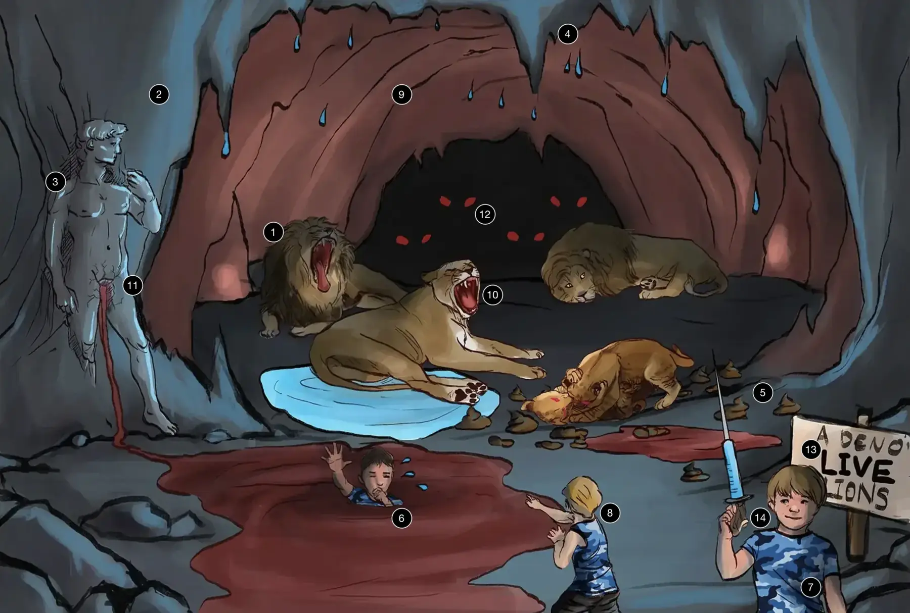
- Classic clue: child or military recruit with pharyngitis plus conjunctivitis (pharyngoconjunctival fever); also hemorrhagic cystitis, gastroenteritis, pneumonia.
- Micro: non-enveloped (naked), linear double-stranded DNA virus (Adenoviridae); many serotypes.
- Diagnosis: usually clinical; PCR, viral culture or antigen detection when needed.
- Treatment/prevention: supportive; live oral vaccine (serotypes 4 and 7) for military recruits.
- Buzzwords: pink eye + sore throat, swimming pool, boot camp, hemorrhagic cystitis, naked dsDNA.
- 1A den of lions: Adenoviruses are the viruses of the family Adenoviridae. (Adeno = 'den of lions' is the sound-alike for the name.) They are a group of many serotypes that infect the respiratory tract, eyes, gut and bladder.
- 2Cool colors: Adenoviruses are DNA viruses: specifically linear, double-stranded DNA genomes.⭐ Adenovirus is a dsDNA virus; contrast with most RNA respiratory viruses.
- 3Statue of David: Adenoviruses lack an envelope, so they are 'naked' viruses (David is a naked statue). Naked viruses resist alcohol, detergents and drying, so they persist on surfaces and in pool water.⭐ Non-enveloped viruses are hardier and spread easily on fomites.
- 4Water drips: Adenoviruses spread mainly by respiratory droplets (dripping water = droplets).
- 5Poop: Adenoviruses can also spread by the fecal-oral route (less common than droplets) and by direct contact with contaminated surfaces. This explains adenoviral gastroenteritis in children.
- 6Contaminated pool: Inadequately chlorinated swimming pools can transmit adenovirus through contaminated water, causing outbreaks of pharyngoconjunctival fever ('swimming pool conjunctivitis').⭐ Pool outbreak = pharyngitis + conjunctivitis + fever.
- 7Camo: Outbreaks of adenovirus (especially serotypes 4 and 7) occur in military barracks, particularly among new recruits, because of crowded living conditions and stress.⭐ Recruits get adenovirus pneumonia/ARD; hence the military vaccine.
- 8Kids: Children, especially in daycare and school settings, are the most commonly affected group.
- 9Throat cave: Tonsillitis (inflamed, enlarged, red palatine tonsils with sore throat and fever) is a common adenoviral illness. Most acute tonsillitis is viral (e.g., adenovirus); the key bacterial cause is Streptococcus pyogenes (group A strep).⭐ Viral pharyngitis usually has conjunctivitis, cough and coryza; strep does not.
- 10Back of throat: Adenoviruses cause a broad spectrum of disease: pharyngitis, tonsillitis, fever, bronchitis, pneumonia, gastroenteritis and conjunctivitis. Pharyngitis is the most common presentation.
- 11Crotch blood: Adenovirus (especially serotypes 11 and 21) causes hemorrhagic cystitis: bladder mucosal infection with dysuria and gross hematuria, particularly in children and immunocompromised patients (e.g., bone marrow transplant recipients).⭐ Hemorrhagic cystitis in a child = adenovirus (BK virus in transplant patients).
- 12Red eyes: Adenovirus commonly causes viral conjunctivitis ('pink eye'): conjunctival redness, itching, tearing and watery discharge. Pharyngitis plus conjunctivitis plus fever is pharyngoconjunctival fever.⭐ Adenovirus is the most common cause of viral conjunctivitis.
- 13"Adeno live lions": The adenovirus vaccine is a LIVE (attenuated) vaccine given ORALLY as a capsule, protecting against serotypes 4 and 7. It is used in military recruits entering basic training to prevent respiratory illness in close quarters.⭐ Live oral adenovirus vaccine (types 4 and 7) = military recruits only.
- 14Syringe + camo: Second vaccine icon (syringe plus camouflage): reinforces that the vaccine targets military recruits. Despite the syringe image, the adenovirus vaccine is live, oral, serotype 4 and 7 coverage, not routinely given to the general public.
Show the original legend picture
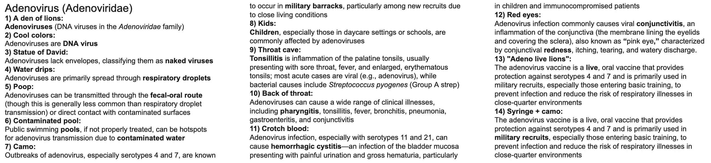
3. Anaplasma phagocytophilum & Ehrlichia chaffeensis (Anaplasmataceae)
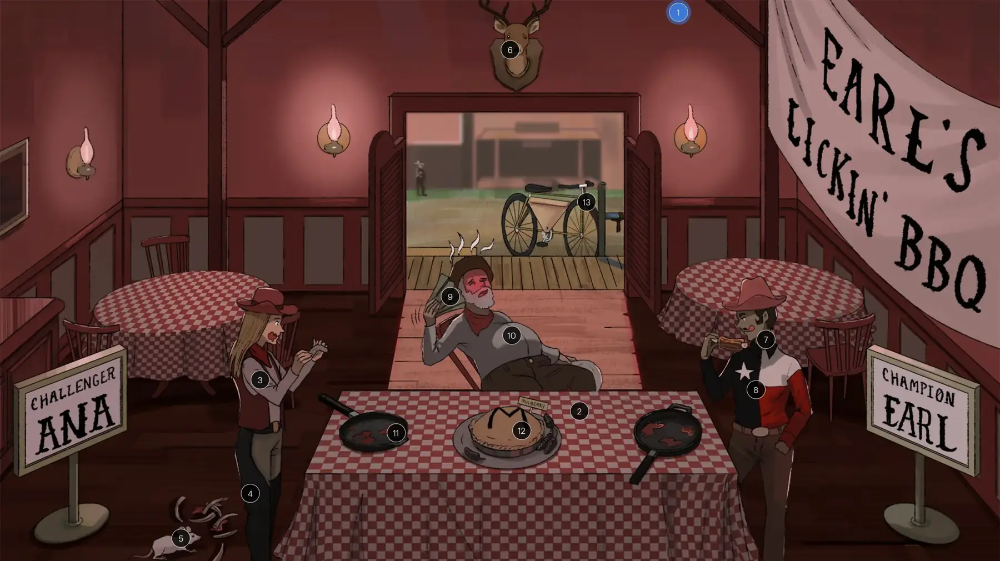
- Clue: fever, headache, myalgias after tick exposure (summer, wooded areas), with leukopenia, thrombocytopenia, and elevated LFTs.
- Obligate intracellular gram-negative bacteria that form morulae inside white cells.
- Diagnosis: blood smear with morulae (Anaplasma in granulocytes, Ehrlichia in monocytes); PCR; serology.
- Treatment: doxycycline (start empirically, do not wait for confirmation).
- Buzzwords: mulberry (morulae), Ixodes tick, lone star tick, no rash typically.
- 1Indoor saloon: Anaplasma phagocytophilum and Ehrlichia chaffeensis are obligate intracellular bacteria.⭐ They live in vacuoles of white blood cells.
- 2Red checkered tablecloths: Both organisms are gram-negative bacteria (red on Gram stain), though they stain poorly and are not usually seen this way.
- 3Ana: Anaplasma phagocytophilum (causes human granulocytic anaplasmosis).
- 4Black leg chaps: Anaplasma phagocytophilum is transmitted by the black-legged (deer) tick, Ixodes scapularis; the same tick also transmits Lyme disease (Borrelia burgdorferi) and babesiosis, so coinfection is possible.⭐ Suspect coinfection if Lyme patients have cytopenias or fail to improve.
- 5Mouse running under Ana: The white-footed mouse is a reservoir host of Anaplasma phagocytophilum.
- 6Deer taxidermy between Ana and Earl: White-tailed deer are reservoir hosts of both Anaplasma phagocytophilum and Ehrlichia chaffeensis.
- 7Earl licking chops: Ehrlichia chaffeensis (causes human monocytic ehrlichiosis).
- 8Texas flag shirt: Ehrlichia chaffeensis is transmitted by the lone star tick (Amblyomma americanum), found in the south-central and southeastern US.⭐ Lone star tick = Ehrlichia (also Southern tick-associated rash illness).
- 9Red face + fanning self: Anaplasmosis and ehrlichiosis present with flu-like symptoms: fever, chills, headache, myalgias, and fatigue.⭐ Rash is uncommon in anaplasmosis and present in a minority of ehrlichiosis, unlike RMSF.
- 10Bloated belly: Both may also cause gastrointestinal symptoms such as nausea, vomiting, and abdominal pain.
- 11Empty pans: Both infections can cause leukopenia, thrombocytopenia, mild anemia, and in severe cases pancytopenia; transaminases are often elevated.⭐ Fever plus leukopenia, thrombocytopenia, and high LFTs after a tick bite suggests ehrlichiosis or anaplasmosis.
- 12Mulberry pie on serving dish: Wright-Giemsa peripheral smear shows leukocytes containing morulae (intracellular clusters of bacteria, mulberry-like); Anaplasma infects granulocytes, Ehrlichia infects monocytes.⭐ Morulae in neutrophils = Anaplasma; in monocytes = Ehrlichia.
- 13Bicycle: Treatment of anaplasmosis and ehrlichiosis is doxycycline.⭐ Doxycycline is used even in young children when these infections are suspected; rifampin is an alternative in pregnancy.
Show the original legend picture
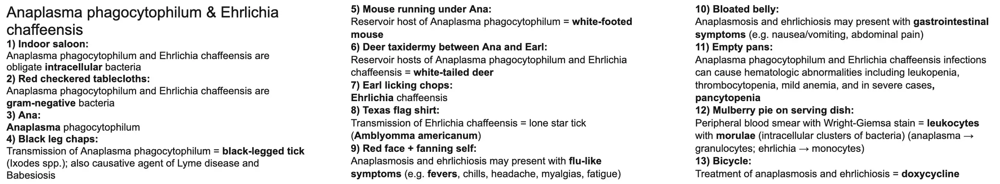
4. Aspergillus fumigatus
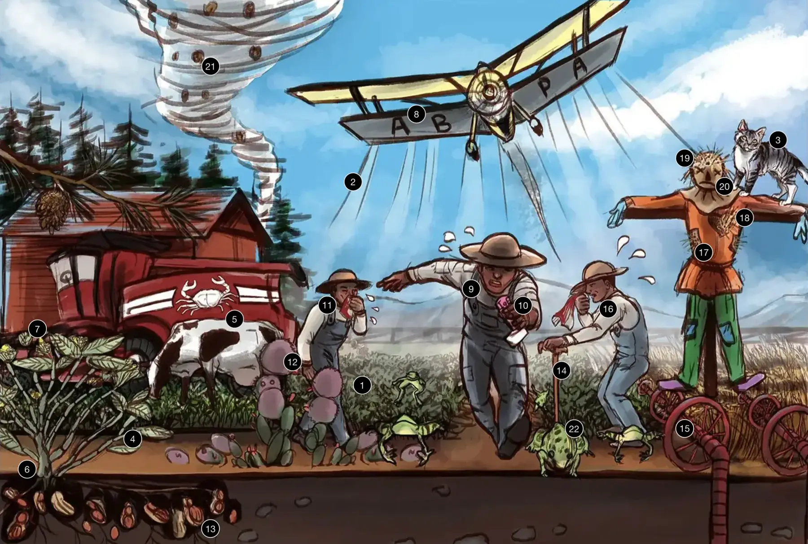
- Classic clue: neutropenic or leukemia patient with fever, cough, hemoptysis and nodules/halo sign; asthma or CF patient with wheeze and IgE; cavity with fungus ball.
- Micro: ubiquitous mold; septate hyphae with acute-angle (45 degree) branching; catalase positive; A. flavus makes aflatoxin.
- Diagnosis: septate hyphae on biopsy/KOH, galactomannan antigen, beta-D-glucan, CT halo sign, serum IgE for ABPA.
- Treatment: voriconazole (invasive); amphotericin B alternative; steroids for ABPA; surgery/none for aspergilloma.
- Buzzwords: fungus ball, air crescent, acute-angle branching, aflatoxin, black eschar, ABPA.
- 1Asparagus farm: Aspergillus species are opportunistic molds (Aspergillus = 'asparagus'). They are ubiquitous in the environment and cause disease mainly in the immunocompromised or those with structural lung disease.
- 2Crop duster fumigating asparagus farm: 'Fumigating' marks the species A. fumigatus, the most common cause of human aspergillosis (versus A. flavus, which produces aflatoxin). It is an opportunistic mold, spread by airborne spores.⭐ A. fumigatus is the usual cause of invasive disease; A. flavus makes aflatoxin.
- 3Catalase cat: Aspergillus species are catalase positive: they make catalase, which converts hydrogen peroxide into water and oxygen.⭐ Catalase-positive organisms are the classic infections in chronic granulomatous disease (Aspergillus, Staph aureus, Nocardia, Serratia, Burkholderia).
- 4Peanut plant: Aflatoxins, potent carcinogens made by Aspergillus flavus, contaminate stored crops such as peanuts, corn, wheat, legumes and other grains and the foods made from them.
- 5Liver spot + crab: Chronic aflatoxin exposure (A. flavus) is a risk factor for hepatocellular carcinoma (liver spot plus crab = cancer).⭐ Aflatoxin -> HCC (mutates p53).
- 6Acute angle branches: Aspergillus has septate hyphae that branch at acute angles (about 45 degrees); on microscopy contrast with Mucor, which has broad, non-septate hyphae branching at right angles.⭐ Acute-angle branching septate hyphae = Aspergillus.
- 7Fruiting body flowers: The mold produces fruiting bodies (conidiophores) that release airborne spores (conidia). Inhalation of these spores from environmental sources (soil, decaying vegetation, construction dust) is the main route of infection.
- 8ABPA plane: Allergic bronchopulmonary aspergillosis (ABPA) is a hypersensitivity reaction (type I with a type III component) to Aspergillus, seen mostly in patients with asthma or cystic fibrosis. This first icon introduces the disease: migratory pulmonary infiltrates.⭐ ABPA: asthma/CF patient with brown mucus plugs, eosinophilia and high IgE.
- 9Running farmer + sweat: ABPA clinical features: fever and wheezing/cough with episodic, migratory pulmonary infiltrates on imaging; recurrent flares and bronchiectasis can follow.
- 10IgE inhaler: ABPA is characterized by elevated serum IgE (and eosinophilia, Aspergillus-specific IgE/IgG), reflecting the allergic response; the inhaler marks the asthma/CF setting. Treatment is corticosteroids plus an antifungal (itraconazole).⭐ Very high total IgE in a CF/asthma patient suggests ABPA.
- 11Sweating + coughing into red napkin: Aspergilloma ('fungus ball') forms when Aspergillus colonizes a pre-existing lung cavity, most commonly after tuberculosis, also sarcoidosis or emphysema, and less often after necrotizing bacterial infection (e.g., Klebsiella). It can cause fever, cough and hemoptysis (red napkin).⭐ Hemoptysis is the main complication of aspergilloma.
- 12Tuberculosis cactus: The cactus with holes depicts TB as the most common pre-existing cavity that becomes colonized; same fact as above: aspergilloma develops in cavities from old TB, sarcoidosis, emphysema or prior necrotizing infection.
- 13Peanuts at bottom of cavities: On imaging, aspergillomas appear as round or oval masses at the bottom of a cavity, gravity dependent (they shift when the patient changes position), often with an air crescent above (Monod sign). CT shows soft-tissue density in the cavity, sometimes with pleural thickening.⭐ Mobile mass with air crescent in an old TB cavity = aspergilloma.
- 14Immunocompromised cane: Invasive aspergillosis is life-threatening and occurs mainly in immunocompromised or neutropenic patients (e.g., leukemia, lymphoma, transplant recipients, prolonged steroids). It most commonly involves the lungs but can spread to other organs.⭐ Neutropenia is the major risk factor for invasive aspergillosis.
- 15Red sprinkler system: Aspergillus is angioinvasive (invades blood vessels), producing widespread organ involvement: hematogenous spread to kidneys, heart and brain, and local spread to the paranasal sinuses.⭐ Angioinvasion leads to infarcts and hemorrhage.
- 16Red pipes + sweating + coughing into red napkin: Invasive pulmonary aspergillosis is a local invasive lung infection: fever, cough, hemoptysis, pleuritic chest pain and dyspnea, mainly in immunocompromised patients. CT often shows nodules with a surrounding 'halo' of hemorrhage.⭐ CT halo sign + positive galactomannan in a neutropenic patient.
- 17Straw kidneys: Hematogenous dissemination to the kidneys in immunocompromised patients can cause renal infarction and failure, presenting with flank pain, hematuria or acute renal failure.
- 18Straw heart: Hematogenous spread to the heart valves causes Aspergillus endocarditis, with large friable vegetations and a high risk of systemic embolization.
- 19Head holes: Hematogenous spread to the CNS causes brain abscesses (ring-enhancing lesions) with seizures, focal deficits or stroke-like symptoms.
- 20Nose hole: Invasive Aspergillus infection of the paranasal sinuses causes extensive tissue necrosis with facial pain, nasal congestion and black eschar in immunocompromised patients.⭐ Black eschar in the nose: think Mucor and invasive Aspergillus.
- 21Pinecones in vortex: Voriconazole is the preferred (first-line) antifungal for most forms of invasive aspergillosis (azoles; the pinecone is the azole icon).⭐ Voriconazole = drug of choice for invasive aspergillosis.
- 22Amphibians: Amphotericin B (amphibians) is an alternative for invasive aspergillosis, but IV or oral voriconazole is primary therapy for most patients.
Show the original legend picture
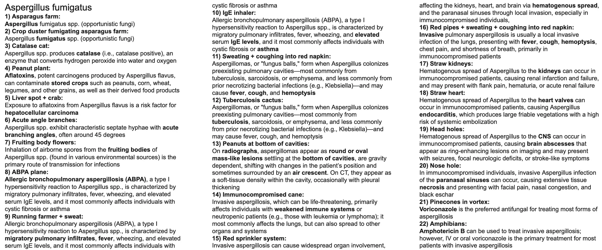
5. Babesia species
- Clinical clue: fever, hemolytic anemia, and dark urine after a summer tick exposure in the Northeast/upper Midwest; severe in asplenic or immunocompromised patients.
- Microbiology: intraerythrocytic protozoan (B. microti) transmitted by Ixodes scapularis; reservoir in white-footed mice and deer; co-infection with Borrelia and Anaplasma is common.
- Diagnosis: Giemsa blood smear showing ring forms and 'Maltese cross' tetrads (no pigment or schizonts, unlike malaria); PCR confirms.
- Treatment: atovaquone plus azithromycin; clindamycin plus quinine for severe disease; exchange transfusion in severe cases.
- Buzzwords: 'Maltese cross', 'Ixodes', 'asplenia', 'Nantucket/Cape Cod', 'hemolytic anemia without travel'.
- 1Vampire babes: Babesia species are protozoa that infect red blood cells. Most infections are asymptomatic and healthy people may recover spontaneously, but asplenic individuals or those with severe underlying illness are at higher risk of severe disease.
- 2Robin of Ixodes: The Ixodes tick is both vector and reservoir for Babesia: it transmits sporozoites while feeding, which invade RBCs and multiply as trophozoites and merozoites, causing hemolysis.⭐ Ixodes also transmits Lyme disease and anaplasmosis; co-infection occurs.
- 3Tick shield: Babesiosis is transmitted to humans by the bite of an infected Ixodes scapularis tick (deer or black-legged tick); the risk of transmission rises the longer the tick stays attached.
- 4Deer antlers: Babesiosis is transmitted to humans by the bite of an infected Ixodes scapularis tick (deer or black-legged tick); the risk of transmission rises the longer the tick stays attached. (Deer are the reservoir for the tick's adult stage; white-footed mice are the main Babesia reservoir.)
- 5'NE': Babesia infections are mainly reported in the northeastern and upper midwestern United States, matching the distribution of Ixodes ticks.⭐ Think Nantucket and Cape Cod.
- 6Shattered red stained glass: Babesia infection causes hemolytic anemia from destruction of infected RBCs, with fever, fatigue, jaundice, and dark urine.
- 7Yellow dress: Babesia infection causes hemolytic anemia from destruction of infected RBCs, with fever, fatigue, jaundice, and dark urine. (jaundice)
- 8Sweat: Babesia infection causes hemolytic anemia from destruction of infected RBCs, with fever, fatigue, jaundice, and dark urine. (fever and sweats)
- 9Irregular tunic hem: Patients may have an irregular, cyclical fever pattern from intermittent lysis as Babesia multiply and rupture host cells.
- 10Sickle: Patients with sickle cell disease are at higher risk of severe babesiosis because their abnormal RBCs hemolyze more easily and are less effectively cleared by a (functionally absent) spleen.
- 11Spleen-shaped hole: Asplenia (surgical, congenital, or functional, as in sickle cell disease) increases the risk of severe, life-threatening babesiosis because the spleen normally clears infected RBCs.⭐ Asplenic patients can have very high parasitemia.
- 12Thick red carpet: A blood smear shows Babesia inside RBCs, often as small ring-shaped trophozoites, and may form a tetrad ('Maltese cross'), which differentiates babesiosis from malaria.⭐ Babesia has no hemozoin pigment and no schizont stage on smear.
- 13Maltese Cross: Tetrad forms of Babesia in RBCs form a 'Maltese cross', a diagnostic feature that distinguishes babesiosis from malaria.
- 14Ato-vampire queen: Atovaquone combined with the macrolide azithromycin is an effective treatment for babesiosis; clindamycin plus quinine is an alternative, used for severe disease.⭐ Atovaquone + azithromycin is first-line.
- 15Macrolide crows: Azithromycin (a macrolide) is combined with atovaquone to treat babesiosis; clindamycin plus quinine is sometimes used.
Show the original legend picture
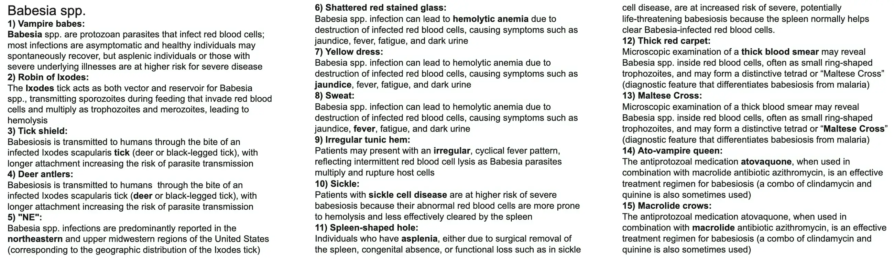
6. Bacillus anthracis & cereus

- Anthrax: cutaneous (painless black eschar with edema), inhalational (woolsorters' disease with hemorrhagic mediastinitis and widened mediastinum), and a bioterrorism agent
- B. anthracis: large gram-positive rod in chains (boxcar/bamboo), spore-forming, non-motile, with a unique poly-D-glutamate capsule
- Toxin = protective antigen + edema factor (calmodulin-dependent adenylate cyclase, raises cAMP) and lethal factor (protease)
- B. cereus: reheated fried rice, preformed toxin, vomiting in 1-6 h (self-limited)
- Anthrax treatment: ciprofloxacin/levofloxacin or doxycycline; inhalational disease needs combination therapy and antitoxin
- 1King Anthra's axe: Bacillus anthracis, the cause of anthrax, is a large gram-positive spore-forming rod. It is non-motile and non-hemolytic on blood agar.
- 2Purple hues: B. anthracis and B. cereus are both gram-positive bacilli (purple on Gram stain).
- 3Ring of fire: Cutaneous anthrax (the most common form) begins as a painless papule or vesicle that undergoes central necrosis, leaving a black eschar with surrounding edema. It is typically painless, and with treatment mortality is low.⭐ Painless black eschar = cutaneous anthrax.
- 4Chain of ships: B. anthracis and B. cereus are gram-positive bacilli that grow in long chains (boxcar-shaped, bamboo-like in B. anthracis).
- 5"D" buckles + leather armor: B. anthracis has a unique capsule made of poly-gamma-D-glutamic acid (a polypeptide, not a polysaccharide). The capsule is antiphagocytic.⭐ Only bacterial capsule composed of D-amino acids (polypeptide).
- 6Aerobic bellows: B. anthracis and B. cereus are aerobic or facultatively anaerobic, which differentiates them from the obligate anaerobic Clostridium.
- 7Spored walnuts: Both organisms form endospores, which are metabolically inactive and resistant to heat, radiation, desiccation, and chemicals. Anthrax spores persist in soil for years, which makes them usable as a bioweapon.
- 8"EF" shield: Edema factor (EF) is a calmodulin-dependent adenylate cyclase that converts ATP to cAMP. Raised cAMP causes tissue edema and impairs neutrophil function, helping the infection become established.
- 9Camps: Edema factor (EF) raises intracellular cAMP (calmodulin-dependent adenylate cyclase), causing local edema and impaired phagocyte function. EF and LF enter cells through pores formed by protective antigen (PA); PA is the target of the anthrax vaccine.
- 10"LF" shield: Lethal factor (LF) is a zinc protease that cleaves MAP kinase kinases (MAPKK/MEK), disrupting MAPK signaling pathways and the host immune response, which leads to cell death.
- 11"LF" viking burning map: Lethal factor (LF) cleaves MAP kinase kinases, disrupting MAPK signaling and leading to impaired immunity, macrophage death, and shock. Together with EF, it is responsible for systemic toxicity.
- 12Sheep wool: Inhalational anthrax was historically called woolsorters' disease, from inhaling spores in animal wool, hides, and hair. It is now rare in developed countries but is a bioterrorism concern.
- 13Bloody axe: Inhalational anthrax causes hemorrhagic mediastinitis (and often hemorrhagic pleural effusions), followed by rapid sepsis and shock. It has high mortality, and some patients also develop hemorrhagic meningitis.
- 14Widened mast: Inhalational anthrax shows a widened mediastinum on chest X-ray, from hemorrhagic mediastinal lymphadenitis, with little true pneumonia.⭐ Widened mediastinum + wool/hide exposure or bioterror = inhalational anthrax.
- 15Flower shield: Treatment of anthrax is a fluoroquinolone (ciprofloxacin, levofloxacin) or doxycycline. Systemic disease needs combination therapy, and antitoxin monoclonal antibodies can be added.
- 16Bicycle tire shield: Post-exposure prophylaxis and treatment are with ciprofloxacin/levofloxacin or doxycycline (prolonged course, ~60 days after inhalational exposure), plus the anthrax vaccine.
- 17Rice bowl: Bacillus cereus is a gram-positive spore-forming rod that causes food poisoning, classically linked to rice dishes (fried rice).
- 18Vomiting: Emetic B. cereus food poisoning, from a preformed toxin, presents with nausea and vomiting about 1-6 h after ingestion, with abdominal cramps. It is self-limited, and a diarrheal form (toxin produced in the gut, onset 6-15 h) also exists.
- 19Reheating rice: Cooked rice left warm lets surviving heat-resistant spores germinate and produce a preformed heat-stable toxin, and reheating or flash-frying does not destroy it. Short incubation, so early-onset food poisoning.⭐ Reheated fried rice = B. cereus; mayo/custard = S. aureus.
Show the original legend picture

7. Bartonella henselae (Cat-scratch disease)
- Clue: young person with tender regional (often axillary) lymphadenopathy after a cat scratch or bite.
- Gram-negative bacillus, hard to culture; visualized with Warthin-Starry silver stain; vector cat flea.
- Immunocompromised (HIV) patients develop bacillary angiomatosis: vascular red papules and nodules that bleed.
- Treatment: usually self-limited in healthy hosts; azithromycin for severe/lymph node disease; doxycycline or erythromycin for bacillary angiomatosis.
- Buzzwords: cat scratch, Warthin-Starry, bacillary angiomatosis, axillary lymphadenopathy.
- 1Bart the leopard: Bartonella henselae is a gram-negative bacillus.
- 2Leopard: B. henselae is the causative agent of cat-scratch disease, a zoonosis transmitted by cat scratches or bites.⭐ Kittens are the usual source.
- 3Red pillow: Bartonella henselae is a gram-negative bacillus (stains red on Gram stain, though poorly).
- 4Silver Starry Night: Warthin-Starry silver stain is used to visualize B. henselae in tissue samples.⭐ Warthin-Starry silver stain highlights the organism in lymph node biopsy.
- 5Cat scratches: Cat-scratch disease is transmitted by cat scratches, bites, or via cat fleas.⭐ Cat fleas maintain infection among cats.
- 6Armpit ruffles: Cat-scratch disease often presents with tender regional lymphadenopathy (commonly axillary) after exposure.⭐ Lymphadenopathy appears about 1 to 3 weeks after exposure.
- 7Healthy young princess: Cat-scratch disease typically affects immunocompetent, often young, individuals and is usually self-limited.
- 8Cat scratches + immunocompromised cane: In immunocompromised patients, B. henselae can cause bacillary angiomatosis, a vascular proliferative disease.⭐ Bacillary angiomatosis is also caused by Bartonella quintana (body louse).
- 9Red polka dots: Bacillary angiomatosis skin lesions start as red papules and can progress to large, highly vascular, friable nodules.⭐ Lesions can resemble Kaposi sarcoma.
- 10Immunocompromised cane: Patients with HIV/AIDS (low CD4 count) or other immunocompromised states are especially susceptible to bacillary angiomatosis.
- 11Bicycle wheel: B. henselae infections are treated with doxycycline (azithromycin is also commonly used).⭐ Mild cat-scratch disease in healthy hosts often needs only supportive care.
- 12Macrolide crow: Erythromycin (a macrolide) is an alternative treatment for Bartonella henselae infection.
Show the original legend picture
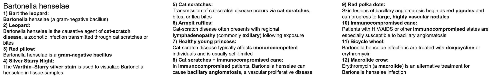
8. Blastomyces dermatitidis
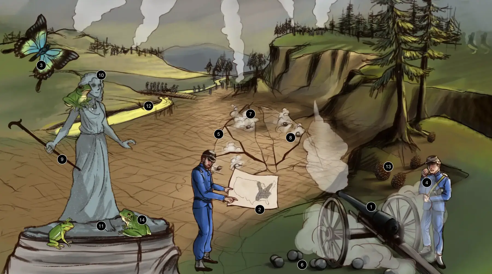
- Classic clue: Ohio/Mississippi River valley or Great Lakes exposure (soil, wood) with pneumonia plus verrucous skin lesions or lytic bone lesions.
- Micro: thermally dimorphic fungus; mold at 25-30 C, yeast at 37 C; broad-based budding yeast with thick double refractile wall.
- Diagnosis: yeast on KOH or histology (extracellular, broad-based buds); urine antigen; culture is definitive.
- Treatment: itraconazole for mild-moderate disease; amphotericin B for severe or disseminated disease.
- Buzzwords: broad-based budding, Blasto bursts its bud, Great Lakes, Ohio/Mississippi, verrucous skin lesions, bone.
- 1Cannon blast: Blastomyces dermatitidis is a dimorphic fungus (Blasto = blast of a cannon). It causes blastomycosis.
- 2Ohio and Mississippi River valleys + Great Lakes map: Blastomyces is endemic to the eastern and central United States, especially the Ohio and Mississippi River valleys and the Great Lakes region (also parts of Canada).⭐ 'Blasto = Big Beer' regions: Great Lakes, Ohio and Mississippi river basins.
- 3Dimorphic butterfly: Blastomyces is thermally dimorphic: mold (hyphae with conidia) in the cooler environment (25-30 C) and yeast at human body temperature (35-37 C).⭐ Cold = mold, hot = yeast.
- 4Breathing in dust: Infection occurs by inhaling airborne mold spores (conidia), usually from soil or decaying wood/vegetation near waterways.
- 5Lung-shaped cracks in dirt: After inhalation, the spores convert to yeast at body temperature and colonize the lungs. Pulmonary infection may be asymptomatic, or cause fever, cough and pleuritic chest pain; chronic disease can mimic tuberculosis.
- 6Doubled cannonballs: The yeast form shows broad-based budding (a single wide bud connected to the parent cell, like two cannonballs touching) and a thick, double refractile cell wall. The yeast is about 8-15 micrometers, larger than an RBC.⭐ Broad-based budding = Blastomyces.
- 7Dust clouds in lungs: Chest imaging in pulmonary blastomycosis can show patchy alveolar infiltrates or consolidation (dust clouds), reflecting granulomatous infection; the lungs are the most commonly affected organ.
- 8Cannonballs in lungs: Imaging can also show mass-like lesions or nodules and cavitation (cannonballs in the lungs), which can be mistaken for lung cancer or TB.
- 9Immunocompromised cane: Immunocompromised individuals are at higher risk of disseminated blastomycosis (skin, bones and genitourinary tract, especially the prostate).
- 10Statue erosion: Skin is the most common extrapulmonary site, spread hematogenously from the lungs. The inflammatory response to yeast produces papules, pustules, ulcers or verrucous (wart-like) lesions.⭐ Verrucous skin lesions + lung disease = Blastomyces.
- 11Exposed bone: Dissemination to bone causes hematogenous osteomyelitis with painful lytic lesions (vertebrae, long bones, skull), often with swelling or soft tissue inflammation.
- 12Yellow river: Diagnosis: urine antigen (UAg) supports the diagnosis; yeast with broad-based budding is seen extracellularly in sputum or tissue and can be rapidly visualized on KOH prep. Culture or histopathology is definitive.⭐ Urine antigen cross-reacts with Histoplasma.
- 13Pinecones: Azoles (itraconazole is preferred; fluconazole is less effective) treat mild to moderate blastomycosis.
- 14Amphibians: Amphotericin B (amphibians) is the treatment of choice for severe or disseminated blastomycosis, followed by an azole step-down.⭐ Severe fungal disease: amphotericin B first, then itraconazole.
Show the original legend picture
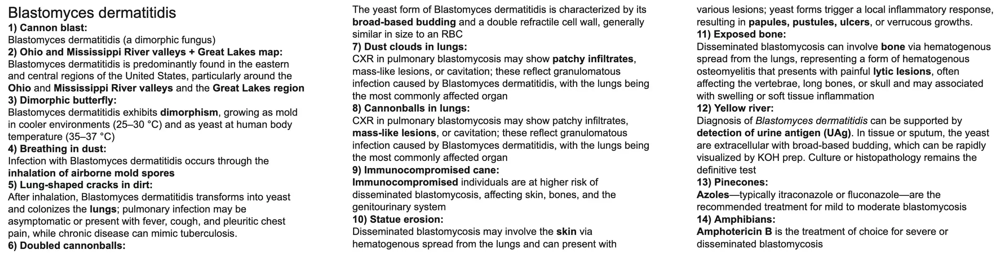
9. Bordetella pertussis
- Classic clue: unvaccinated child (or adolescent/adult) with paroxysmal 'whooping' cough, post-tussive vomiting and marked lymphocytosis.
- Micro: small gram-negative coccobacillus, strict aerobe; pertussis toxin ribosylates Gi; adenylate cyclase toxin; FHA and tracheal cytotoxin.
- Diagnosis: PCR of nasopharyngeal swab; culture on Bordet-Gengou or Regan-Lowe agar; lymphocytosis on CBC.
- Treatment/prevention: macrolide (azithromycin) early; DTaP in children, Tdap in adolescents/adults and pregnancy.
- Buzzwords: whooping cough, 100-day cough, catarrhal-paroxysmal-convalescent, lymphocytosis, Gi ribosylation.
- 1Boarded soldier: Bordetella pertussis (Bordet-ella = 'boarded' soldier) is a small gram-negative coccobacillus that causes whooping cough (pertussis).
- 2Red hues: The red color marks a gram-negative stain: B. pertussis is a gram-negative coccobacillus (and a strict aerobe).
- 3Filamentous streamers: Filamentous hemagglutinin (FHA) and pertactin are adhesins that attach the bacteria to ciliated respiratory epithelium (FHA is also a vaccine antigen).
- 4Bowtie + GI uniform: Pertussis toxin (an A-B toxin) ADP-ribosylates and inactivates the inhibitory G protein (Gi), so adenylate cyclase is not inhibited and cAMP rises. This first icon shows the Gi mechanism.⭐ Pertussis toxin = Gi inactivated -> increased cAMP (cholera toxin affects Gs).
- 5Leg cast + wheelchair: Consequence of the raised cAMP: impaired phagocyte function (immobilized phagocytes, as in the leg cast) so the immune system cannot clear the organism.
- 6Army camp: Another consequence of the toxin-induced rise in cAMP: increased mucus secretion/accumulation in the airways (an encampment of mucus), promoting the characteristic cough.
- 7WBC popcorn: Pertussis toxin disrupts chemokine receptor signaling, so lymphocytes cannot leave the blood to enter lymphoid tissue; they accumulate in the bloodstream, causing marked absolute lymphocytosis (popcorn-like WBCs).⭐ Lymphocytosis (not a left shift) in a coughing child = pertussis.
- 8"EF" shield: Adenylate cyclase toxin (a separate toxin from pertussis toxin) directly converts ATP to cAMP, raising cAMP like Bacillus anthracis edema factor (EF), which also impairs phagocytes. (The source legend labels this pertussis toxin; adenylate cyclase toxin is the correct name.)⭐ Adenylate cyclase toxin acts like anthrax edema factor.
- 9Cutting tracheal grass: Tracheal cytotoxin damages and kills ciliated respiratory epithelial cells, impairing mucociliary clearance and contributing to the cough.
- 10"WHOOPI": Pertussis has three stages: catarrhal (1-2 weeks, mild cold-like symptoms, most contagious), paroxysmal (severe repetitive coughing fits ending in an inspiratory 'whoop', often with post-tussive vomiting, lasting 2-6 weeks or longer), and convalescent (gradual recovery).⭐ Paroxysmal stage = whoop + post-tussive vomiting.
- 11"100 Days War!": The three stages together can last up to about 3 months, giving the nickname '100-day cough'.
- 12Crows: Macrolides (e.g., azithromycin; the crows) are the treatment; they shorten infectiousness and reduce symptoms only if started early, before the paroxysmal stage. They are also used for prophylaxis of close contacts.⭐ Macrolide for treatment and contact prophylaxis.
- 13Covering beak: Whooping cough spreads by respiratory droplets (the person covering the beak while coughing); it is highly contagious.
- 14Syringe + a cellular phone: The vaccine is acellular (the 'cellular phone' is a pun): DTaP combines acellular pertussis antigens with diphtheria and tetanus toxoids for infants and children; Tdap is given to adolescents and adults, including during each pregnancy.⭐ Tdap during every pregnancy protects the newborn.
Show the original legend picture
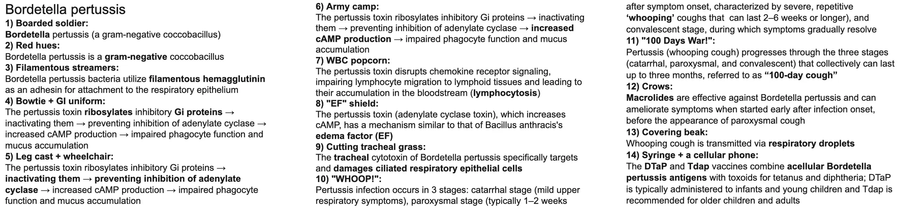
10. Borrelia burgdorferi (Lyme disease, Spirochetes)
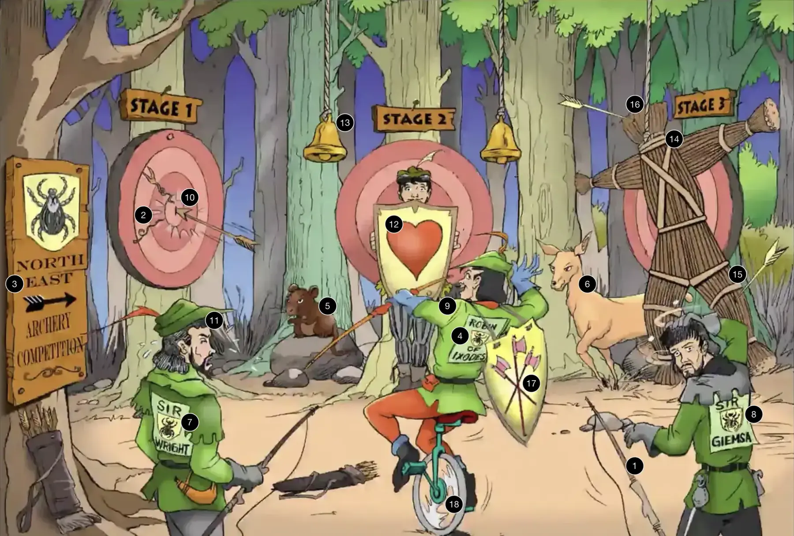
- Clue: erythema migrans (bull's-eye rash) after a tick bite in the Northeast/upper Midwest, later facial palsy, heart block, or large-joint arthritis.
- Spirochete transmitted by Ixodes scapularis (needs about 36 hours of attachment); reservoir white-footed mouse, deer host adults.
- Stains poorly with Gram; seen with Wright or Giemsa; diagnosis clinical or ELISA then confirmatory Western blot.
- Treatment: doxycycline for early disease (amoxicillin or cefuroxime alternatives); ceftriaxone for late/severe (meningitis, carditis).
- Buzzwords: bull's-eye rash, bilateral Bell palsy, AV block, migratory large-joint arthritis, three stages.
- 1Bow: Borrelia burgdorferi is a spirochete bacterium (Lyme disease is named after Lyme, Connecticut).
- 2Spiraled arrow: The spiral shape reflects its identity as a spirochete.
- 3Northeast archery competition: Borrelia burgdorferi is primarily endemic to the northeastern and upper midwestern United States, though it is becoming more common in other regions.
- 4Robin of Ixodes + tick: Borrelia burgdorferi is transmitted by the blacklegged (deer) tick, Ixodes scapularis, usually after 36 or more hours of attachment.⭐ Prompt tick removal prevents most transmission.
- 5White-footed mouse: The white-footed mouse is the main reservoir of Borrelia burgdorferi and hosts the larval and nymphal stages of Ixodes ticks.
- 6White-tailed deer: The white-tailed deer is the definitive host of adult Ixodes scapularis ticks (it does not become infected itself).
- 7Sir Wright: Borrelia takes up Gram stain poorly but can be visualized with Wright stain.
- 8Sir Giemsa: Borrelia can also be visualized with Giemsa stain.⭐ Diagnosis in practice is clinical or serologic (ELISA, then Western blot).
- 9Lyme-green outfits in front of three stages: Borrelia burgdorferi causes Lyme disease in three stages: early localized, early disseminated, and late disseminated.
- 10Stage 1 + bullseye: Early localized (stage 1) Lyme disease is marked by erythema migrans, an expanding red rash with central clearing (bull's-eye or target appearance), usually starting at the bite site.⭐ Erythema migrans is diagnostic clinically; treat without serology.
- 11Stage 1 + sweat: Early localized disease may also have flu-like symptoms: fever, chills, headache, and myalgias.
- 12Stage 2 + heart shield: Early disseminated (stage 2) Lyme disease can involve the heart, including myocarditis and AV block (heart block).⭐ Lyme carditis typically causes varying degrees of AV block.
- 13Stage 2 + bilateral bells: Early disseminated Lyme disease can cause facial nerve (CN VII) palsy, classically bilateral Bell's palsy, and other cranial neuropathies or meningitis.⭐ Bilateral Bell palsy is highly suggestive of Lyme.
- 14Stage 3 + moving dummy: Late disseminated (stage 3) Lyme disease causes migratory arthritis, typically of large joints.⭐ Arthritis often appears months after the bite.
- 15Stage 3 + arrow in knee: Late Lyme arthritis classically affects the knee, often as an oligoarticular, monoarticular, or migratory arthritis of large joints.
- 16Stage 3 + arrow in head: Late Lyme disease may cause neurologic complications such as encephalopathy (cognitive dysfunction, memory loss, mood and sleep changes), polyneuropathy, and encephalomyelitis.
- 17Unicycle: Doxycycline is recommended for early Lyme disease (early localized or mild early disseminated).⭐ Amoxicillin or cefuroxime is used in pregnancy and young children.
- 183 axes shield: Ceftriaxone is used for late-stage or severe Lyme disease, including meningitis and carditis with high-grade block.
Show the original legend picture
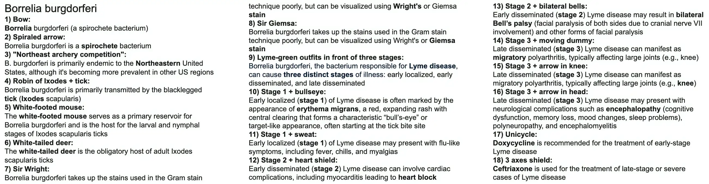
11. Borrelia recurrentis
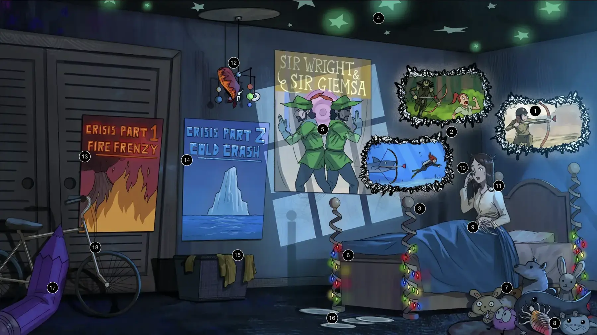
- Clinical clue: refugee or homeless patient in overcrowded, louse-infested conditions with recurrent fever episodes
- Spirochete (Borrelia) with antigenic variation of surface proteins (vlp/vsp) causing relapses
- Dx: Wright-Giemsa blood smear during fever (also dark-field); not easily Gram stained
- Treatment: penicillin G or doxycycline; watch for Jarisch-Herxheimer reaction
- Buzzwords: louse-borne relapsing fever, Pediculus humanus corporis, 2-part crisis (chill/flush), humans only reservoir
- 1Bow: Borrelia recurrentis is a spirochete bacterium.
- 2Recurring nightmare: Borrelia recurrentis causes louse-borne relapsing fever (LBRF).
- 3Spiral-shaped bed posts: Borrelia recurrentis is a spiral-shaped spirochete.
- 4Illuminating stars + dark ceiling: Borrelia recurrentis can be seen by dark-field microscopy as thin, helical, motile spirochetes.
- 5Sir Wright + Sir Giemsa: Borrelia recurrentis is visualized on a peripheral blood smear with Wright or Wright-Giemsa stain (best during febrile episodes).⭐ Large spirochetes visible in blood: Borrelia is one of the few spirochetes seen on a blood smear.
- 6Variable color lights: Borrelia recurrentis has variable surface antigens in its outer membrane (antigenic variation) that let it evade the immune system.⭐ Antigenic variation explains the relapsing fevers.
- 7Pile of stuffed animals: Risk factors for louse-borne relapsing fever are living in resource-poor settings with overcrowding (for example refugee camps), war and famine.
- 8Louse stuffed toy: The vector is Pediculus humanus corporis (human body louse).
- 9Scratching: Infected lice transmit B. recurrentis when a person crushes a louse while scratching, letting spirochetes enter through the broken skin (lice bites do not directly inject the organism).⭐ Transmission is by crushing the louse, not by its bite.
- 10Rubbing eyes: Rubbing the eyes can inoculate B. recurrentis from crushed lice into mucous membranes.
- 11Person suffering recurring nightmare: The reservoir host is humans (unlike tick-borne relapsing fever, which has animal reservoirs).
- 12Flame bandana hanging from spinning mobile: Relapsing fever causes cyclical high fevers with headache, chills, sweats, myalgia, arthralgia and nausea, with each episode ending in a two-part crisis phase.⭐ Fever recurs every 1-2 weeks as new antigenic variants emerge.
- 13"Crisis Part 1 - Fire Frenzy": Crisis phase part 1 is the "hot" phase: hyperthermia, tachycardia and hypertension.
- 14"Crisis Part 2 - Cold Crash": Crisis phase part 2 is the "cold" phase: hypothermia and hypotension (can be life-threatening).
- 15Yellow pajamas: Louse-borne relapsing fever can cause jaundice from hemolysis and hepatic involvement during spirochetemia.
- 16Fallen white plates: Louse-borne relapsing fever can cause thrombocytopenia (platelet consumption/destruction and marrow suppression during spirochetemia).
- 17Purple pencil: Treatment is penicillin G or doxycycline; monitor for the Jarisch-Herxheimer reaction, an acute febrile reaction (fever, chills, myalgias, hypotension) occurring within hours of therapy from rapid spirochete lysis.⭐ Jarisch-Herxheimer is common in LBRF, more so than in Lyme disease.
- 18Bicycle: Treatment is penicillin G or doxycycline (a single dose of doxycycline or erythromycin is often used in LBRF); monitor for the Jarisch-Herxheimer reaction.
Show the original legend picture
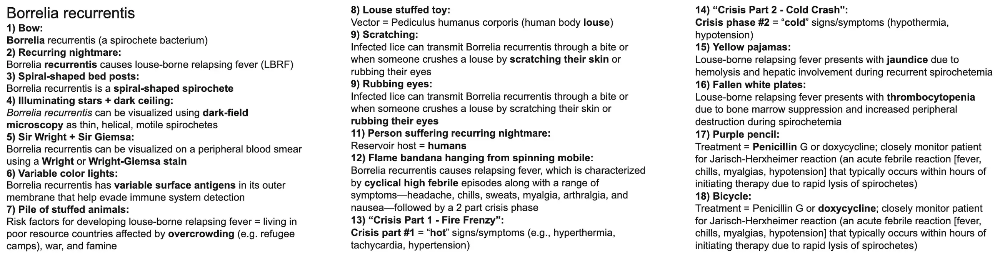
12. Brucella spp

- Classic: farmer/vet/abattoir worker or traveler with undulating fever, night sweats, and arthralgias after raw dairy or animal exposure
- Gram-negative coccobacillus, small, aerobic, non-motile, facultative intracellular; culture (blood/bone marrow) with prolonged incubation, plus serology
- Zoonosis: B. abortus (cattle), B. suis (pigs), B. melitensis (goats/sheep; most severe), B. canis (dogs)
- Hepatosplenomegaly, sacroiliitis/vertebral osteomyelitis, epididymo-orchitis; relapses are common
- Treatment: doxycycline + rifampin (or doxycycline + streptomycin/gentamicin) for at least 6 weeks; prevent with pasteurization and animal vaccination
- 1Bruce farms: Brucella spp. are small gram-negative coccobacilli (Bruce farms = Brucella). They are non-motile, non-spore-forming aerobes.
- 2Red barn: Brucella are gram-negative coccobacilli, so they stain pink-red (red barn). Their lipopolysaccharide-containing outer membrane helps them evade host defenses.
- 3Cow: Brucellosis is a zoonosis acquired through direct contact with infected animals such as cows, pigs, sheep, and goats. B. abortus is the classic cattle species.⭐ Occupational risk: farmers, veterinarians, slaughterhouse workers, and lab personnel (aerosol).
- 4Pig: Brucellosis is a zoonosis spread by direct contact with infected animals such as cows, pigs, sheep, and goats. B. suis is the pig species; B. melitensis (goats/sheep) causes the most severe disease.
- 5Milk bucket: A major route of transmission is ingestion of unpasteurized dairy products (milk, soft cheese) from infected animals. Pasteurization prevents this route.
- 6Open gate: Brucella are facultative intracellular bacteria that survive and replicate inside host macrophages. This explains granuloma formation, chronic/relapsing disease, and the need for prolonged combination therapy with drugs that penetrate cells.
- 7Sweating + thin farmer: Acute brucellosis presents with nonspecific symptoms: fever, night sweats, malaise, anorexia, and weight loss.
- 8Undulating hills: Brucellosis causes undulant fever, with waves of fever that rise and fall over time (also called Malta fever).⭐ Undulant fever + raw milk/farm animals = Brucella.
- 9Liver + spleen spots: Brucella localizes in the reticuloendothelial system (liver, spleen, lymph nodes, bone marrow), commonly causing hepatosplenomegaly and sometimes granulomas.
- 10Fish bones: Musculoskeletal involvement is the most common focal complication, especially sacroiliitis, spondylitis, and osteomyelitis. Epididymo-orchitis can also occur.
- 11Windmill wheel: Treatment requires combination therapy for several weeks (at least 6): doxycycline plus rifampin, or doxycycline plus streptomycin (gentamicin is an alternative aminoglycoside). Monotherapy risks relapse.
- 12Rifle: Combination therapy is used because the intracellular location and relapses make single agents inadequate: doxycycline + rifampin, or doxycycline + streptomycin.
Show the original legend picture

13. Burkholderia spp.
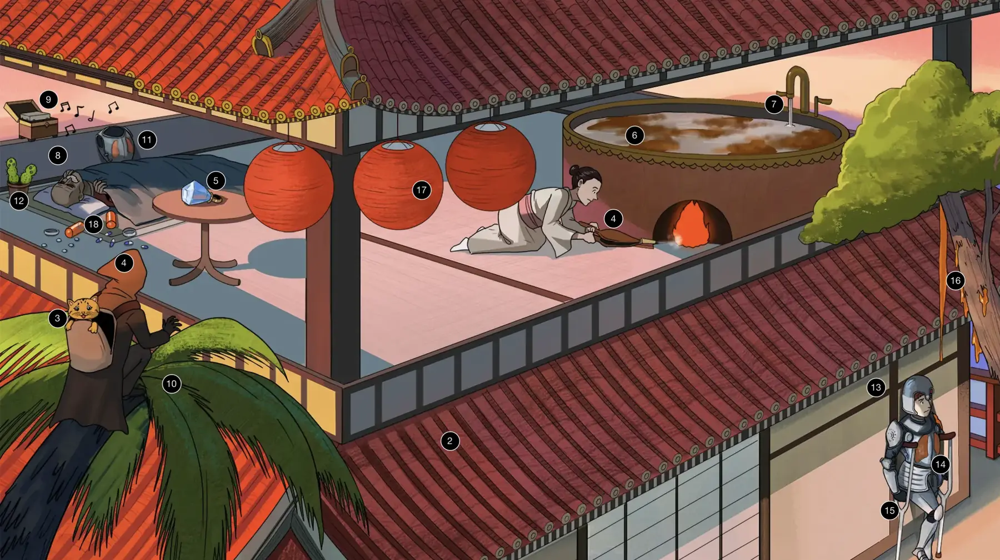
- Classic clue: pneumonia or abscesses after soil/water exposure in Southeast Asia or northern Australia (melioidosis); or CF/CGD patient with chronic pneumonia (B. cepacia).
- Micro: gram-negative bacillus, obligate aerobe, catalase positive, oxidase positive; multidrug resistant.
- Diagnosis: culture (selective media) and susceptibility testing; imaging for abscesses.
- Treatment: melioidosis - ceftazidime or meropenem IV, then TMP-SMX; B. cepacia - TMP-SMX, ceftazidime, meropenem, minocycline.
- Buzzwords: melioidosis (Whitmore disease), TB mimic, wet season, cepacia syndrome, cystic fibrosis, CGD.
- 1Burkhold burglar: Burkholderia species (burglar) are gram-negative bacteria. The two key organisms are B. pseudomallei (melioidosis) and the B. cepacia complex (CF and CGD infections).
- 2Red rod-shaped roof: They are gram-negative (red) bacilli (rod-shaped).
- 3Cat: Burkholderia species are catalase positive: they make catalase, which splits hydrogen peroxide into water and oxygen.⭐ Catalase-positive organisms cause infections in chronic granulomatous disease.
- 4Bellows: They are obligate aerobes, needing oxygen for growth.
- 5Blue ring: They are oxidase positive (oxidase is a key enzyme in aerobic respiration of the electron transport chain).
- 6Muddy bath: Transmission is by direct contact with contaminated soil or water (B. pseudomallei lives in soil and surface water; B. cepacia can contaminate hospital water and solutions).
- 7Running water faucet: B. pseudomallei infections peak during the wet (rainy) season, when exposure to contaminated soil and water is greatest.
- 8Inside near the melody: B. pseudomallei causes melioidosis (Whitmore disease; 'melody' sounds like melioidosis). This icon introduces the organism as the cause of melioidosis.
- 9Melody: Melioidosis can be acute (pneumonia, sepsis, abscesses in multiple organs, commonly liver and spleen) or chronic (skin lesions, localized abscesses and low-grade fever).⭐ Melioidosis = 'Vietnamese time bomb' (can reactivate years later).
- 10Palm tree: Melioidosis is mostly seen in tropical regions, such as Southeast Asia, South Asia and northern Australia.
- 11Lung armor plates near melody: B. pseudomallei commonly causes pneumonia (the lung armor), the most common presentation of melioidosis.
- 12TB cactus with holes: Melioidosis can mimic tuberculosis, with or without cavitary lung lesions, and can be chronic.⭐ TB-like cavity in someone from Southeast Asia with negative TB workup: melioidosis.
- 13Outside palace complex: Introduces the second group, the Burkholderia cepacia complex (BCC; the palace/outside the 'melody' complex), which causes opportunistic infection.
- 14Lung armor plates outside palace: BCC also causes pneumonia, particularly in patients with underlying lung disease.
- 15Crutches: BCC mainly affects immunocompromised or vulnerable hosts: cystic fibrosis patients and those with chronic granulomatous disease.⭐ CF and CGD are the two key hosts for B. cepacia.
- 16Sappy tree branch: In CF patients BCC causes chronic lung infection and sometimes cepacia syndrome: a life-threatening necrotizing pneumonia with acute respiratory distress and bacteremia.⭐ Cepacia syndrome: rapid decline with fever, bacteremia and necrotizing pneumonia in CF.
- 17Red ball lantern lights: Burkholderia can cause extrapulmonary disease, including encephalomyelitis and skin and visceral abscesses (red lanterns = abscesses).
- 18Pills: Burkholderia is intrinsically multidrug resistant, so treatment is guided by susceptibility testing: options include TMP-SMX, ceftazidime, carbapenems (meropenem, doripenem), minocycline or piperacillin-tazobactam.⭐ Melioidosis: ceftazidime or meropenem first, then TMP-SMX.
Show the original legend picture
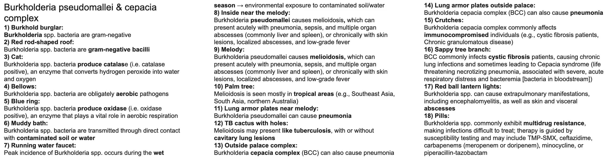
14. Campylobacter jejuni

- Classic: bloody diarrhea with fever and cramping after undercooked chicken or contact with poultry/animals.
- Curved (comma/S or seagull-wing), oxidase-positive gram-negative rods; microaerophilic and grow at 42°C on Campylobacter (Skirrow) agar.
- Treatment: usually supportive; macrolides (azithromycin) if severe or prolonged.
- Complications: Guillain-Barre syndrome (most common antecedent infection), reactive arthritis (HLA-B27).
- Most common cause of bacterial diarrhea in the US; mimics Salmonella/Shigella (also causes bloody diarrhea).
- 1Camping bears: Campylobacter jejuni is a gram-negative bacillus and one of the most common causes of bacterial gastroenteritis worldwide, including in the United States.
- 2Red rod-shaped cooler: C. jejuni is a gram-negative bacillus (pink rods on Gram stain), with a thin peptidoglycan layer and an outer membrane containing LPS. It is motile with polar flagella.
- 3Fire: C. jejuni is thermophilic: it grows optimally at about 42°C (selective culture is incubated at 42°C under microaerophilic conditions on Campylobacter agar). The heat explains its association with the intestinal tract of warm-bodied birds (poultry body temperature is about 41-42°C).⭐ Remember Campylobacter grows at 42°C, microaerophilic, on Campy (Skirrow) agar.
- 4Chicken: C. jejuni resides in the intestinal tract of animals, especially poultry, and transmission to humans occurs via the fecal-oral route, often by undercooked chicken, contamination during slaughter/food preparation, or unpasteurized milk. Common reservoirs include poultry, cattle, sheep, and dogs.
- 5Red stool: Symptoms include cramping, abdominal pain, fever, and diarrhea, which is often bloody. If bacteremia occurs, patients may develop systemic signs such as high fever, chills, malaise, hypotension, and confusion. The illness is usually self-limited (about a week); treat supportively, with a macrolide such as azithromycin for severe disease.
- 6Curved mustache: C. jejuni is a curved bacillus: comma-shaped or S-shaped, often described as a "seagull wing" on microscopy, with darting corkscrew motility.
- 7Blue oxidase ring: C. jejuni is oxidase positive: it produces oxidase, an enzyme in the aerobic respiratory chain. Together with the curved shape, this resembles Vibrio, but Campylobacter is microaerophilic and grows at 42°C. It is also catalase positive.
- 8Bear invading cooler: C. jejuni invades the epithelial cells of the gastrointestinal tract (ileum, jejunum and colon), penetrating the mucosa and causing inflammatory, often bloody diarrhea. In some cases it enters the bloodstream, resulting in bacteremia.
- 9Slapping knee: Campylobacter infection is associated with reactive arthritis (formerly Reiter syndrome), a seronegative spondyloarthropathy with joint pain and swelling occurring one to four weeks after certain infections. It is associated with HLA-B27 and the classic triad of arthritis, urethritis and conjunctivitis ("can't see, can't pee, can't climb a tree").⭐ Reactive arthritis: HLA-B27, after Campylobacter, Salmonella, Shigella, Yersinia, or Chlamydia.
- 10Guy and the bears: Campylobacter infection is the most common antecedent infection of Guillain-Barre syndrome, a post-infectious autoimmune disorder in which antibodies cross-react with peripheral nerve gangliosides (molecular mimicry between bacterial LPS and GM1), causing demyelination of peripheral nerves. It presents 1-3 weeks later with progressive, bilateral, ascending weakness and areflexia.
- 11Sausage links around ankle: Guillain-Barre syndrome classically starts with weakness and paresthesias in the legs (beginning at the ankles/feet) and ascends, with areflexia. CSF shows albuminocytologic dissociation (high protein, normal cell count). Treat with IVIG or plasmapheresis and monitor respiratory function (FVC) because the diaphragm can be paralyzed.⭐ GBS = ascending paralysis after a diarrheal illness (Campylobacter) with high CSF protein and normal WBC.
Show the original legend picture

15. Candida albicans
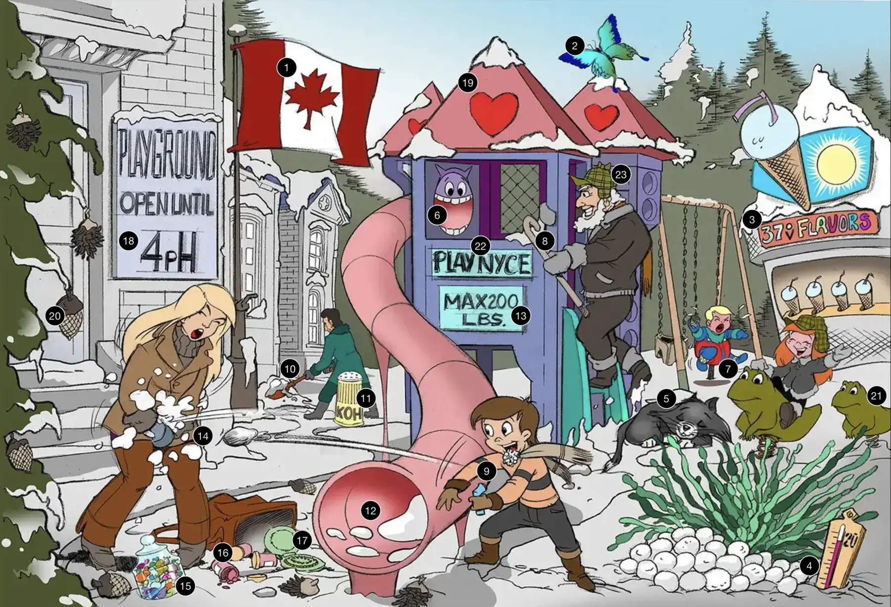
- Clinical clue: white scrapable thrush, curd-like vaginal discharge with itching, diaper rash with satellite lesions, esophagitis (CD4 <200), or candidemia in neutropenic or IV-catheter patients.
- Microbiology: opportunistic yeast with pseudohyphae and budding; forms germ tubes at 37 C; normal flora of mouth, gut, and vagina; catalase positive.
- Diagnosis: KOH prep showing budding yeast with pseudohyphae; germ tube test; culture; vaginal pH remains normal (4-4.5).
- Treatment: nystatin or clotrimazole (topical/oral), fluconazole for most infections; echinocandins for severe/invasive disease; amphotericin B for refractory cases.
- Buzzwords: 'germ tube', 'pseudohyphae', 'thrush', 'cottage cheese', 'satellite lesions', 'esophagitis AIDS-defining', 'CGD', 'neutropenia'.
- 1Canada: 'Can-dida': Candida albicans, an opportunistic fungus that causes both cutaneous and systemic infections.
- 2Dimorphic butterfly: C. albicans is dimorphic but differs from the classic dimorphic fungi: it grows as yeast at 23-25 C and forms filamentous (pseudohyphal/hyphal) growth at 37 C, the reverse of the usual temperature pattern.⭐ Classic dimorphs are mold at 25 C and yeast at 37 C.
- 3'37 flavors' + germ tube straw: C. albicans forms germ tubes (the start of hyphal growth) when incubated in serum at 37 C.⭐ Germ tube test is positive for C. albicans.
- 4'20 C' + yeast snowballs: At 23-25 C, C. albicans exists as yeast that reproduces by budding.
- 5Catalase cat: C. albicans is catalase positive (converts hydrogen peroxide to water and oxygen), so patients with chronic granulomatous disease are susceptible to infection.⭐ Catalase-positive organisms in CGD: S. aureus, Candida, Aspergillus, Nocardia, Serratia, Burkholderia.
- 6Open mouth + tube slide: Candida species are normal flora of the GI tract and oral cavity and can commonly contaminate sputum cultures, so isolation from sputum often reflects colonization.
- 7Baby in red swing: C. albicans commonly causes candidal diaper dermatitis, thriving in warm, moist skin folds, with erythematous, beefy-red, confluent plaques and satellite pustules or papules around the main rash.
- 8Immunocompromised cane: Immunocompromised patients, particularly those with neutropenia, are at higher risk of disseminated candidiasis.⭐ Neutropenia = disseminated candidiasis; T-cell defects = mucocutaneous disease.
- 9Snow on tongue + inhaler: C. albicans causes oral candidiasis (thrush) with white, scrapable plaques on the oral mucosa (leukoplakia does not scrape off). It is common with inhaled corticosteroids and immunocompromise.⭐ Rinse mouth after inhaled steroids.
- 10Shoveling snow: Oral thrush plaques can be scraped off (shoveled), leaving an erythematous base; this distinguishes thrush from non-scrapable leukoplakia, including hairy leukoplakia.
- 11KOH salt: KOH mount of scrapings from oral, vaginal, or skin lesions shows budding yeast and pseudohyphae.⭐ KOH dissolves human cells, leaving fungal elements.
- 12Snow inside tube slide: C. albicans can cause esophageal candidiasis in immunocompromised patients, especially with HIV/AIDS, with gray-white pseudomembranes, odynophagia, and dysphagia.⭐ Linear white plaques on endoscopy.
- 13'Max 200 LBS': Esophageal candidiasis is an AIDS-defining illness, most often seen when the CD4+ count is below 200 cells/mm3.
- 14Snowball thrown in crotch: C. albicans causes vulvovaginal candidiasis with intense pruritus and thick, white, curd-like ('cottage cheese') vaginal discharge.
- 15Candy: Vulvovaginal candidiasis can be precipitated by uncontrolled diabetes, antibiotic use, and hormonal changes (e.g., oral contraceptives). Hyperglycemia increases glucose in tissues and mucosal secretions, feeding Candida overgrowth.
- 16Medication bottles: Vulvovaginal candidiasis can be precipitated by uncontrolled diabetes, antibiotic use, and hormonal changes (e.g., oral contraceptives). Antibiotics kill protective vaginal flora (lactobacilli), allowing Candida to overgrow.
- 17Birth control pills: Vulvovaginal candidiasis can be precipitated by uncontrolled diabetes, antibiotic use, and hormonal changes (e.g., oral contraceptives). Estrogen increases glycogen in vaginal epithelial cells, which Candida uses as a nutrient.
- 18'Playground open until 4 pH': In vulvovaginal candidiasis the vaginal pH stays normal (about 3.8-4.5) because Candida tolerates acid and does not raise pH.⭐ Contrast with bacterial vaginosis and trichomoniasis (pH >4.5).
- 193 heart roofs: C. albicans can cause endocarditis, mostly of the tricuspid valve in IV drug users (contaminated venous blood reaches the right heart first), and also in patients with prosthetic valves or indwelling catheters.
- 20Pinecone: Azoles, especially fluconazole, are the antifungals of choice for a broad range of Candida albicans infections.⭐ Fluconazole is first-line for oropharyngeal, esophageal, and vaginal candidiasis.
- 21Amphibians: Amphotericin B is used for severe or fluconazole-resistant Candida infections (amphibian = ampho).
- 22'Play NYCE': Nystatin is effective for cutaneous and oral Candida infections (swish and swallow for thrush); it is too toxic for systemic use.
- 23Cap: Echinocandins (caspofungin, micafungin) are options for severe or refractory candidiasis, including esophageal and systemic disease; 'cap' = caspofungin.⭐ Echinocandins are first-line for candidemia.
Show the original legend picture
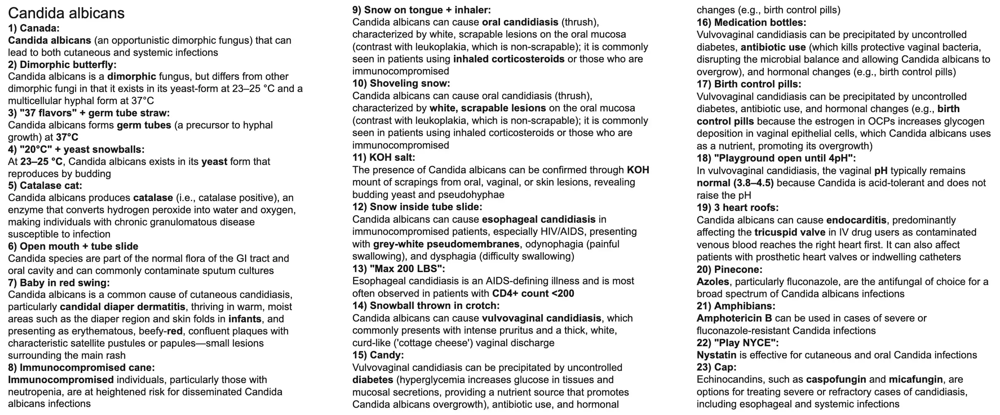
16. Cestodes

- Taenia solium (pork): eggs cause cysticercosis/neurocysticercosis (seizures, 'Swiss cheese' brain CT); undercooked pork gives intestinal taeniasis.
- Taenia saginata (beef): intestinal tapeworm only, no hooks, no cysticercosis; praziquantel treats the adult worm.
- Diphyllobothrium latum (fish): raw freshwater fish, B12 deficiency with megaloblastic anemia, up to 10 m long.
- Echinococcus granulosus (dog): hydatid liver cyst with eggshell calcification; spillage causes anaphylaxis; albendazole plus surgery.
- Treatment: praziquantel for adult intestinal tapeworms; albendazole (plus steroids and antiepileptics) for neurocysticercosis and hydatid cysts.
- 1Tents: Taenia species are cestodes (tapeworms) that infect humans. Two species matter: T. saginata (beef) and T. solium (pork).
- 2Sagging tent: Taenia saginata is the beef tapeworm. Its scolex has suckers but no hooks, and humans get only the adult intestinal worm (taeniasis) from undercooked beef.
- 3Cow: Cattle are the intermediate hosts for T. saginata and harbor the larval cysts (cysticerci) in muscle. Humans are the definitive host, harboring the adult worm in the intestine.
- 4Sun + "SOLD": Taenia solium is the pork tapeworm. It causes intestinal taeniasis (adult worm) and, if eggs are ingested, cysticercosis.
- 5Pig: Pigs are the intermediate hosts for T. solium and carry the larval cysts (cysticerci) in muscle. Eating undercooked pork gives humans the adult intestinal worm.
- 6Meat hooks: The scolex of T. solium has a rostellum with two rows of large and small hooks plus suckers, which anchor it to the intestinal wall. T. saginata lacks hooks.
- 7Pigs on carousel: Ingestion of T. solium eggs (not the cysts in meat) causes cysticercosis, including neurocysticercosis, an infection of the CNS. It is the most common cause of acquired epilepsy in endemic areas.
- 8Poop water: Humans ingest eggs from feces of a person carrying the adult worm, via contaminated food or water (fecal-oral), producing cysticercosis. Eating cyst-containing undercooked pork instead causes intestinal taeniasis. A tapeworm carrier can autoinfect.
- 9Motion lines: Neurocysticercosis commonly presents with seizures from cysts in brain parenchyma. It may also cause headache, hydrocephalus or raised intracranial pressure.
- 10Swiss cheese: CT/MRI shows multiple cystic lesions in the brain ('Swiss cheese'), well-defined, round and hypodense, some with a hyperdense dot (the scolex). Surrounding edema or ring enhancement occurs in the degenerating stage, and old lesions calcify.⭐ Multiple ring-enhancing cysts with a central dot + seizures = neurocysticercosis.
- 11Egg-shaped cheese in poop water: Eggs hatch in the intestine, releasing larvae (oncospheres) that penetrate the gut wall, enter the bloodstream and disseminate to the brain, muscle and eye, forming cysticerci.
- 12Pretzel tent: Praziquantel treats intestinal taeniasis (T. saginata and T. solium adult worms) by increasing membrane permeability to calcium, causing paralysis and death of the worm.
- 13Strong man named ‘Al' + bendy metal bar: Neurocysticercosis is treated with albendazole (often with praziquantel), along with corticosteroids to blunt inflammation from dying cysts and antiepileptics for seizures. Without steroids, killing cysts can worsen symptoms.
- 14Bathroom: Diphyllobothrium latum is the fish tapeworm, found in cold-water regions (e.g., Scandinavia, Great Lakes, Alaska).
- 15Fish: Humans are infected by eating undercooked or raw freshwater fish (e.g., pike, salmon) containing larvae (plerocercoids). Think sushi or gefilte fish.
- 16"Must B12 to buy fireworks": The worm competes for vitamin B12 in the gut, causing B12 deficiency and megaloblastic anemia. This is the key complication of D. latum.⭐ Raw fish + megaloblastic anemia = Diphyllobothrium latum.
- 17Cobalt blue firework: The cobalt-blue firework is cobalamin (B12). Deficiency can also cause neurologic findings such as subacute combined degeneration, with elevated methylmalonic acid and homocysteine.
- 18Red firework blasts: The red blasts represent the resulting megaloblastic (macrocytic) anemia, with large RBCs and hypersegmented neutrophils.
- 19Long toilet paper trail: D. latum is the longest human tapeworm, reaching up to about 10 meters, with a very large number of proglottids.
- 20Toilet paper segments in mud: Diagnosis is by stool exam showing the characteristic operculated eggs and/or proglottid segments, which are wider than long.
- 21Pretzel + toilet paper trail: Praziquantel is first-line for D. latum infection and eliminates the adult tapeworm from the intestine. Niclosamide is an alternative.
- 22Nickel coin slot: Niclosamide (nickel coin) is an alternative that kills the adult worm in the gut. Where unavailable, praziquantel is used.
- 23Cocker Spaniel: Echinococcus granulosus is the dog tapeworm, causing hydatid disease. Dogs are the definitive hosts, and it is common in sheep-raising regions.
- 24Cocker Spaniel — 1st place: Dogs are the definitive hosts of E. granulosus and harbor the adult tapeworm in the intestine, shedding eggs in feces.
- 25Sheepdog — 2nd place: Sheep are the intermediate hosts for E. granulosus and harbor the larval forms (hydatid cysts). Humans are accidental intermediate hosts, a dead end.
- 26Dog poop: Humans are infected by ingesting eggs from dog feces (contact with dogs or contaminated food), not by eating infected meat.
- 27Egg: Hydatid liver cysts on CT appear as well-defined cysts with a calcified 'eggshell' rim, often with internal daughter cysts, which helps distinguish them from other hepatic cysts.
- 28Ribbon on liver spot: Eggs hatch in the gut, larvae enter the portal circulation and form slowly growing hydatid cysts, most often in the liver (then lung) and other organs. They may be asymptomatic for years.
- 29Crumbling ribbon + red and puffy face: Rupture or spillage of a hydatid cyst releases highly antigenic fluid and can trigger anaphylaxis (type I hypersensitivity). Spillage can also seed new cysts.⭐ Do not aspirate or biopsy a suspected hydatid cyst. Treat with albendazole plus surgery or PAIR.
- 30Slingshot kid + pink granules + orange-pink outfit: Eosinophilia can accompany E. granulosus infection, especially with cyst leakage or rupture, but may be mild or absent when cysts are intact. Eosinophils have bilobed nuclei and red-orange granules.
Show the original legend picture

17. Chlamydia/Chlamydophila spp.
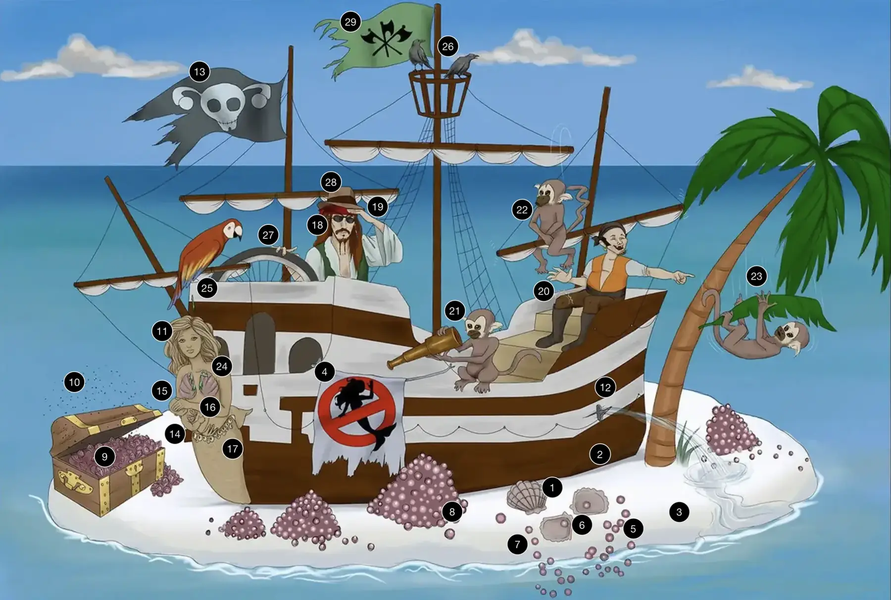
- Classic clue: sexually active young adult with urethritis/cervicitis (often asymptomatic), PID, neonatal conjunctivitis, trachoma, or LGV.
- Micro: obligate intracellular, no muramic acid/peptidoglycan; EB (infectious) and RB (replicating); inclusions seen with Giemsa.
- Diagnosis: NAAT (gold standard); Giemsa/immunofluorescence of inclusions in tissue samples.
- Treatment: azithromycin or doxycycline; ceftriaxone added for presumed gonorrhea co-infection; oral macrolide for neonates.
- Buzzwords: elementary body, reticulate body, serovars D-K, L1-L3 (LGV), A-C (trachoma), reactive arthritis, psittacosis.
- 1Clams: The genus Chlamydia (clams) is gram-indeterminate. Three clinically important species: C. trachomatis (serovars A-C, D-K, L1-L3), C. pneumoniae and C. psittaci, each with different diseases. (C. pneumoniae and C. psittaci are classically labeled Chlamydophila.)
- 2Ship on island: Chlamydiae are obligate intracellular pathogens: they cannot make their own ATP and need a host cell to replicate (the ship stranded on an island = living inside a cell).
- 3White island: They stain weakly gram-negative because of their unusual cell wall, so they are classed as gram-indeterminate and are not well seen with Gram stain.
- 4"No mermaids": The cell wall lacks muramic acid, a normal component of peptidoglycan (mermaids = muramic acid sound-alike), which is why beta-lactams are ineffective against them.⭐ Chlamydia has no peptidoglycan: no useful Gram stain and penicillins are ineffective.
- 5Pearls outside of clam: Elementary bodies (EB) are the infectious, non-replicating, extracellular form. They are taken into host cells (the first of two developmental stages).⭐ EB = Enters cell; RB = Replicates.
- 6Pearls inside of clam: Reticulate bodies (RB) are the intracellular, metabolically active, replicating form (second stage), growing inside a vacuole within the host cell.
- 7Pearls outside of clam again: After replication, reticulate bodies reorganize into new elementary bodies, which are released to infect new host cells.
- 8Piles of pearls: Collections of reticulate bodies form intracytoplasmic inclusion bodies visible by microscopy in infected cells.
- 9Pink gems: Giemsa stain can be used to visualize the intracytoplasmic inclusion bodies (they stain purple/pink). Immunofluorescence is another option.
- 10Gnats: Nucleic acid amplification tests (NAATs; 'gnats' sound-alike) are the gold standard test for Chlamydia (urine, vaginal or urethral swabs).⭐ NAAT on urine or swab = gold standard.
- 11Sexy mermaid: C. trachomatis serovars D-K cause sexually transmitted infection (urethritis, cervicitis, epididymitis, PID, proctitis); serovars L1-L3 also cause sexually transmitted LGV. Chlamydia is the most common bacterial STI.⭐ Most common reportable bacterial STI; often asymptomatic.
- 12Water leak: Serovars D-K often cause watery or mucopurulent urethral or vaginal discharge and dysuria (urethritis, cervicitis); many cases are asymptomatic.
- 13Uterus + fallopian tubes flag: Untreated infection can ascend and cause pelvic inflammatory disease (PID), which can cause infertility, ectopic pregnancy and chronic pelvic pain (scarred tubes). Fitz-Hugh-Curtis (perihepatitis) can also occur.⭐ PID complications: infertility, ectopic pregnancy, chronic pelvic pain.
- 14Mermaid baby: Serovars D-K can be transmitted vertically during childbirth, causing neonatal conjunctivitis or pneumonia (the next two icons separate them).
- 15Mermaid baby + covered eyes: Neonatal conjunctivitis from Chlamydia typically appears about 5-14 days after birth with watery to mucopurulent discharge. Gonorrhea presents earlier (first 2-5 days) with thick purulent discharge.⭐ Day 1-2: chemical; days 2-5: gonorrhea; days 5-14: chlamydia.
- 16Mermaid baby + clam bra: Chlamydial pneumonia in infants (clam bra = chest) occurs about 1-3 weeks after birth with a repetitive staccato cough, tachypnea and absent or low fever; eosinophilia is common.⭐ Afebrile infant with staccato cough = Chlamydia trachomatis.
- 17Barnacle belt: Serovars L1-L3 cause lymphogranuloma venereum (LGV): a transient painless genital ulcer, then tender inguinal/femoral lymphadenopathy (buboes), which may progress to chronic inflammation, strictures and lymphatic obstruction if untreated. (Barnacle belt = groin.)⭐ Serovars L1-L3 = LGV: painless ulcer then painful buboes.
- 18Eye patches: Serovars A, B and C cause trachoma, a chronic conjunctivitis with repeated inflammation, eyelid scarring (trichiasis) and corneal damage; it is the leading cause of preventable infectious blindness worldwide.⭐ Trachoma = leading preventable infectious cause of blindness (A, B, C).
- 19Hand near eye: Trachoma spreads by direct contact with eye and nasal discharge of infected people and by fomites such as contaminated towels and washcloths (and flies).
- 20Slapping knee: Reactive arthritis follows infections with certain bacteria, including Chlamydia trachomatis. Cross-reactivity between bacterial antigens and host tissues causes the immune system to attack eyes, urethra and joints. First icon of the classic triad: asymmetric arthritis (knee).⭐ Reactive arthritis is associated with HLA-B27.
- 21Can't see: Triad component: conjunctivitis or uveitis (eye redness, pain, blurred vision).
- 22Can't pee: Triad component: urethritis (dysuria or discharge).
- 23Can't climb tree: Triad component: arthritis, typically asymmetric and affecting the knees, ankles or feet. Reactive arthritis = 'can't see, can't pee, can't climb a tree'.⭐ Can't see, can't pee, can't climb a tree.
- 24Algae on bra: C. pneumoniae causes atypical ('walking') pneumonia: mild, slowly progressive illness with low-grade fever, nonproductive cough and malaise, often in older children and young adults.
- 25Parrot pooping on bra: C. psittaci is acquired from infected birds (parrots, pigeons, poultry) by inhaling dried droppings, causing psittacosis: atypical pneumonia with fever, nonproductive cough, headache and myalgias.⭐ Bird exposure + atypical pneumonia = psittacosis.
- 26Macrolide crows: Macrolides, especially azithromycin, are effective against chlamydial infection (single-dose azithromycin is common). In neonates oral macrolide is required because topical therapy does not treat the systemic infection; azithromycin is also used in pregnancy.⭐ Azithromycin is used in pregnancy (doxycycline is not).
- 27Bicycle tire wheel: Tetracyclines, particularly doxycycline, are also effective; they are contraindicated in pregnancy and young children.
- 28Mac's detective hat: The detective hat reminds you to suspect co-infection: patients with suspected chlamydia are often treated presumptively for Neisseria gonorrhoeae as well. Chlamydia is covered by azithromycin or doxycycline.
- 293 axes flag: Ceftriaxone (three axes = 'ceftri-axe') covers N. gonorrhoeae in the standard combination, while azithromycin or doxycycline covers Chlamydia trachomatis.
Show the original legend picture
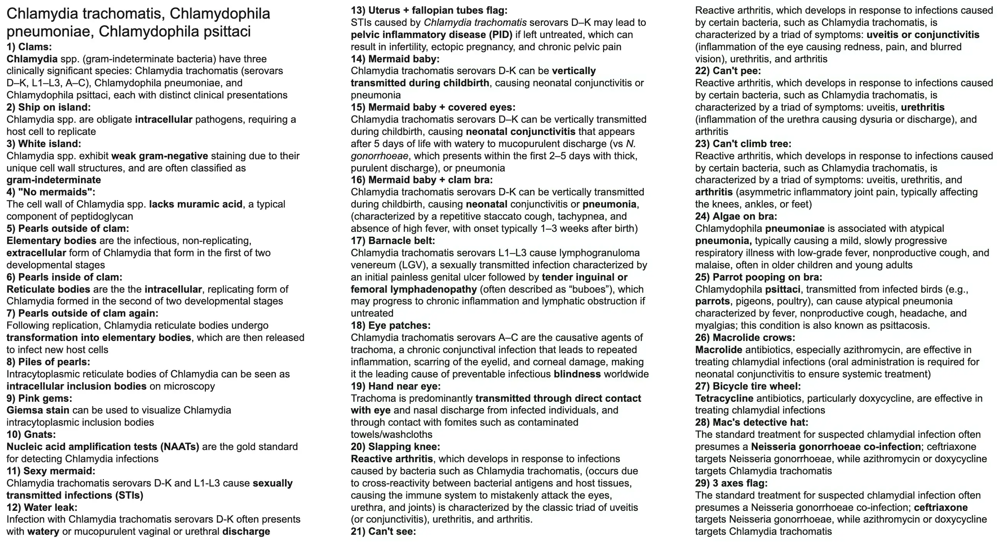
18. Clostridioides difficile

- Classic: hospital-acquired watery diarrhea after antibiotics (clindamycin, fluoroquinolones, cephalosporins, penicillins) disrupting normal flora.
- Gram-positive, spore-forming, obligate anaerobic rod; spores resist heat, alcohol-based sanitizers, and drying.
- Toxin A (enterotoxin) and Toxin B (cytotoxin; depolymerizes actin) cause pseudomembranous colitis with yellow-grey plaques.
- Diagnosis: stool NAAT/PCR for toxin genes or EIA for toxins A/B (often GDH + toxin algorithm).
- Treatment: oral vancomycin or fidaxomicin first-line; IV metronidazole only adjunctive in fulminant disease (with PO/PR vancomycin).
- Prevention: soap-and-water handwashing (not alcohol gel), contact precautions, stop the offending antibiotic.
- 1Walnuts: Spores are metabolically inactive and highly resistant to heat, radiation, and chemical agents (including alcohol-based hand sanitizers). They persist on hospital surfaces and drive transmission.⭐ Alcohol gel does not kill spores; use soap and water.
- 2"Clean" sign with washing hands over chocolate machine: C. difficile is primarily nosocomial; spores spread patient to patient via contaminated hands and surfaces (fecal-oral). Antibiotics, especially clindamycin, fluoroquinolones, cephalosporins, and penicillins, disrupt normal gut flora, letting C. difficile overgrow and produce toxins that cause diarrhea.
- 3Workstation A and workstation B: C. difficile produces two major exotoxins, Toxin A (TcdA) and Toxin B (TcdB), which are responsible for disease. Both are glucosyltransferases that inactivate Rho GTPases in colonocytes.
- 4"A - Apples" sign: Toxin A is the enterotoxin: it binds the brush border of intestinal epithelial cells, causing fluid secretion, inflammation, and mucosal damage with watery diarrhea.
- 5Employee picking up the apple and brushing chocolate on them: Toxin A acts on the intestinal lining (apples brushed with chocolate): epithelial cell damage and inflammation lead to cell death and secretory watery diarrhea.
- 6Chocolate filled machine: Toxin A is mainly enterotoxic: it drives fluid secretion and mucosal injury, producing the watery diarrhea of early disease.
- 7"B - Black Licorice" sign: Toxin B is the cytotoxin: it depolymerizes actin filaments in enterocytes, causing cell rounding and death. Mucosal necrosis forms a yellowish-grey pseudomembrane of fibrin, mucus, and dead cells, characteristic of pseudomembranous colitis.⭐ Pseudomembranes seen on colonoscopy are the classic finding.
- 8Black Licorice: Toxin B (black licorice) disrupts the enterocyte actin cytoskeleton by depolymerizing actin, causing cell rounding and death.
- 9Little kid chewing them apart: Toxin B damage to the cytoskeleton (kid chewing licorice apart) causes enterocyte rounding, loss of the cell layer, and mucosal necrosis.
- 10Worker packing the licorice in sheets of yellowish plastic: Mucosal necrosis from toxin B yields the yellowish-grey pseudomembrane (yellow plastic sheets) of fibrin, mucus, and dead cells that defines pseudomembranous colitis. Severe disease can progress to toxic megacolon.
- 11Worker holding up chocolate covered shoe: Diagnose by stool testing for toxigenic strains: NAAT/PCR (detects toxin-encoding genes) or EIA for toxins A and B. Test only symptomatic patients with unformed stools.
- 12Gas mask: C. difficile is an obligate anaerobe (cannot grow in oxygen-rich environments), consistent with infection in the anaerobic colon.
- 13Violet: C. difficile is a gram-positive bacillus (violet on Gram stain) and a spore former.
- 14Van with the mouth like opening: Oral vancomycin is first-line therapy (fidaxomicin is an equally accepted first-line option). It stays in the gut lumen with minimal systemic absorption, directly reaching bacteria and toxins.⭐ IV vancomycin does not reach the colonic lumen and is useless for C. difficile.
- 15Train: IV metronidazole is used for severe or fulminant infection alongside vancomycin, as it achieves systemic levels that reach inflamed colonic tissue, complementing local gut-directed therapy.
Show the original legend picture

19. Clostridium botulinum
- Classic clue: descending symmetric flaccid paralysis with ptosis, diplopia, dysphagia and dilated pupils after home-canned food or honey (infant).
- Micro: gram-positive, spore-forming obligate anaerobe; heat-resistant spores; toxin is heat labile.
- Diagnosis: clinical; toxin detection in serum, stool or food (mouse bioassay/PCR).
- Treatment/prevention: antitoxin (BabyBIG for infants), supportive care and ventilation; no honey under 12 months.
- Buzzwords: floppy baby, descending paralysis, SNARE cleavage, canned food, honey, Botox.
- 1Robots: Clostridium botulinum (robots = botulinum, 'bot') is a gram-positive bacillus.
- 2Purple hues: Purple marks gram-positive staining: C. botulinum is a gram-positive rod.
- 3Tin can: Improperly canned or preserved food provides anaerobic conditions that allow C. botulinum spores to germinate and grow and produce toxin (home-canned vegetables, fish).⭐ Home-canned food = botulism.
- 4Nuts: C. botulinum forms metabolically inactive spores (nuts = hard shells) that resist heat, radiation and chemicals. The spores survive; the preformed toxin is heat labile and destroyed by boiling.⭐ Spores survive boiling, toxin does not.
- 5Anaerobic gas mask: C. botulinum is an obligate anaerobe, so it grows in low-oxygen environments (sealed cans, deep wounds).
- 6Limp neck: Botulism starts with cranial nerve (bulbar) dysfunction and progresses to symmetric descending weakness of trunk, limbs and respiratory muscles, ending in flaccid paralysis; respiratory failure can occur.⭐ Descending paralysis (Guillain-Barre is ascending).
- 7Droopy eyelids: Early bulbar signs include ptosis and diplopia, also dysphagia, dysarthria and dilated, poorly reactive pupils; there is no sensory loss or fever.
- 8Cutting ACh current: Botulinum toxin is a protease that cleaves SNARE proteins, blocking presynaptic release of acetylcholine at the neuromuscular junction, causing flaccid paralysis (this is the basis of Botox).⭐ Botulism blocks ACh release (flaccid); tetanus blocks inhibitory release (spastic).
- 9Floppy baby robot: Infant botulism ('floppy baby syndrome') results from ingesting spores that colonize the immature gut and make toxin in vivo: constipation, poor feeding, weak cry, hypotonia. Adults usually get botulism from ingesting preformed toxin in food (wound botulism also occurs, e.g., injection drug use).⭐ Infant botulism = colonization by spores; adult foodborne = preformed toxin.
- 10Nuts in honey: Honey can contain C. botulinum spores, so it should not be given to infants younger than 12 months.⭐ No honey before age 1 year.
Show the original legend picture
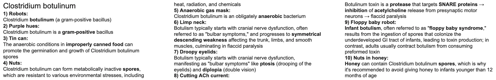
20. Clostridium perfringens

- Classic: dirty wound (trauma, war injury) with severe pain, crepitus, and rapidly spreading myonecrosis (gas gangrene)
- Large gram-positive rod, spore-forming, anaerobic; box-car shaped; alpha toxin (lecithinase/phospholipase C) is the key virulence factor
- Blood agar shows a double zone of hemolysis (inner theta toxin, outer alpha toxin)
- Treatment: surgical debridement plus penicillin G (often with clindamycin)
- Also causes food poisoning (meat/gravy; watery diarrhea, self-limited)
- 1Private Ringen: Clostridium perfringens is a large gram-positive rod, spore-forming and non-motile.
- 2Purple hues: C. perfringens is gram-positive (purple on Gram stain); it is a bacillus.
- 3Wounded soldier: C. perfringens infection occurs in wounds contaminated with soil or fecal matter, historically in battlefield injuries, and also with trauma, surgical wounds, or ischemic limbs.
- 4Spored walnuts: C. perfringens forms endospores, which are metabolically inactive and resistant to heat, radiation, and chemicals, allowing survival in harsh environments and in poorly cooked food.
- 5Soil: Spores persist in soil (and in the human and animal GI tract), resisting heat, radiation, desiccation, and disinfectants, which is how wounds and food get contaminated.
- 6Anaerobic gas mask: C. perfringens is an obligate (aerotolerant) anaerobe, so it grows in devitalized, poorly oxygenated tissue such as necrotic wounds.
- 7Gas vapor: C. perfringens causes necrotizing soft tissue infection with myonecrosis and gas formation (gas gangrene): severe pain, crepitus on palpation, foul discharge, and rapid spread with systemic toxicity.⭐ Crepitus + dirty wound = gas gangrene.
- 8Alpha flag + phospholipid clothespins: Alpha toxin is a lecithinase (phospholipase C) that cleaves lecithin (phosphatidylcholine) in cell membranes, causing myonecrosis and red cell hemolysis. Hemolysis and tissue destruction impair oxygen delivery.
- 9Lysed tomatoes: Alpha toxin (lecithinase) lyses red cells, causing intravascular hemolysis that impairs oxygen delivery to tissues; this contributes to anemia, jaundice, and renal failure in severe cases.
- 10"DOUBLE fine zone": On blood agar, C. perfringens produces a characteristic double zone of hemolysis: complete hemolysis in the inner zone (theta toxin) and incomplete hemolysis in the outer zone (alpha toxin).⭐ Double zone of hemolysis = C. perfringens.
- 11Purple pencil: Treatment is urgent surgical debridement (amputation if needed) plus antibiotics; penicillin G is preferred, usually with clindamycin (to suppress toxin production).
- 12"Slow" Sign in Muddy water: C. perfringens enterotoxin causes food poisoning from improperly cooked or stored foods (meats, gravy), with watery diarrhea and cramps and little vomiting or fever. Sketchy says onset is slow, within 2-12 h (classically 8-16 h); it is self-limited.⭐ Spores survive cooking, and enterotoxin is released in the gut during sporulation.
Show the original legend picture

21. Clostridium tetani
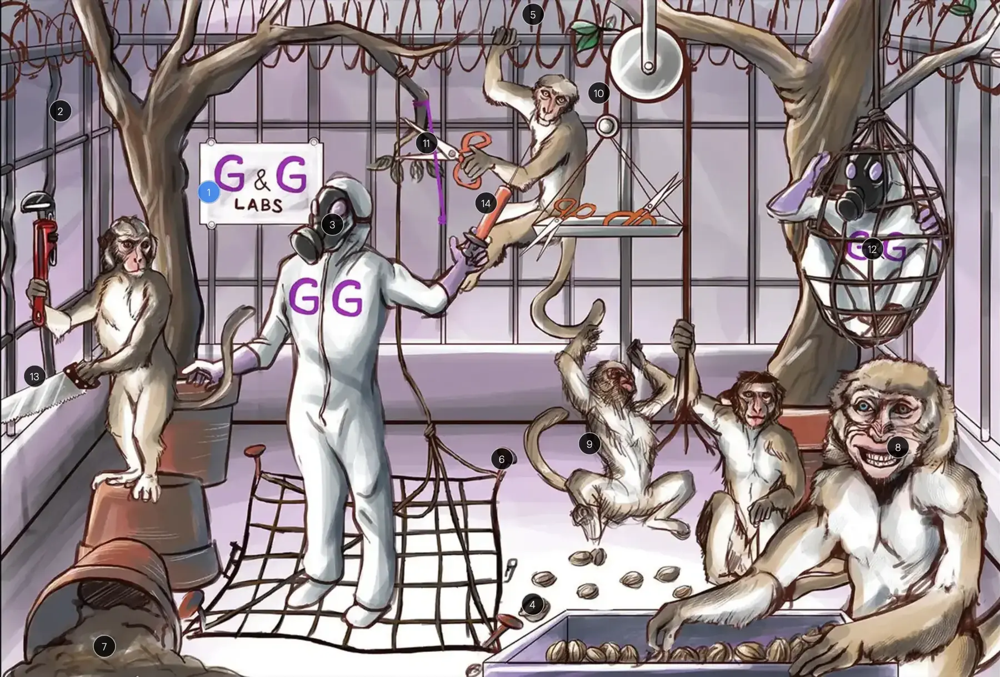
- Classic clue: trismus (lockjaw), risus sardonicus, opisthotonos and painful spasms after a puncture wound in an unvaccinated or under-vaccinated person.
- Micro: gram-positive, spore-forming obligate anaerobe (terminal spores); tetanospasmin blocks inhibitory neurotransmitter release.
- Diagnosis: clinical.
- Treatment/prevention: tetanus immune globulin, wound debridement, metronidazole, benzodiazepines/supportive care; tetanus toxoid vaccine (DTaP/Tdap).
- Buzzwords: lockjaw, risus sardonicus, opisthotonos, rusty nail, Renshaw cells, GABA and glycine.
- 1Monkey testing lab: Clostridium tetani (tetanus; 'monkey'/test lab) is a gram-positive bacillus.
- 2Purple hues: Purple marks gram-positive staining: C. tetani is a gram-positive rod, often with a terminal spore ('tennis racket' or 'drumstick').
- 3Anaerobic gas mask: C. tetani is an obligate anaerobe; it grows in deep, poorly oxygenated tissue (e.g., necrotic puncture wounds).
- 4Spored walnuts: It forms metabolically inactive spores (walnut shells) that resist heat, radiation and chemicals and persist in the environment.⭐ Spores survive; vaccination, not sterilization of soil, is the protection.
- 5Barbed wire: Infection is classically associated with puncture wounds from barbed wire (deep wounds that contaminate tissue with spores and create low oxygen).
- 6Rusty nails: Rusty nails are another classic source: puncture wounds from contaminated metal. (Rust itself does not cause tetanus; the soil spores on the nail do.)
- 7Soil: C. tetani spores are found throughout soil (and animal feces), so wounds contaminated with dirt are at risk.⭐ Neonatal tetanus: contaminated umbilical stump.
- 8Evil grin: Classic signs: trismus (lockjaw, spasm of the masseters) and risus sardonicus, a sustained contraction of facial muscles producing a fixed 'evil smile'.
- 9Arched back: Spasms of back and neck muscles cause opisthotonos: backward arching of head, neck and spine.
- 10Retrograde pulley: Tetanospasmin enters the peripheral nerve at the wound and is carried by retrograde axonal transport to the spinal cord and brainstem.
- 11Cutting SNARE trap: Tetanospasmin is a protease that cleaves SNARE proteins (e.g., synaptobrevin), which are needed for synaptic vesicles to fuse with the neuronal membrane and release neurotransmitter.
- 12Trapped "G&G" researcher: In inhibitory interneurons (Renshaw cells) of the spinal cord, cleaving SNAREs blocks release of GABA and glycine (the inhibitory neurotransmitters; 'G and G' trapped).⭐ Tetanus: no inhibition, so spastic paralysis.
- 13Wrench and saw: Loss of inhibition means unopposed motor neuron firing: muscle spasms, spastic (rigid) paralysis and hyperreflexia (wrench and saw = tight, rigid muscles). This is the opposite of botulism's flaccid paralysis.⭐ Tetanus = spastic; botulism = flaccid.
- 14Orange toxoid syringe: Tetanus is prevented with the tetanus toxoid vaccine (inactivated toxin), given as DTaP in infants and children and Tdap in older children and adults, with Td boosters every 10 years. Unvaccinated patients with dirty wounds also get tetanus immune globulin.⭐ Vaccine = toxoid; tetanus immune globulin for unvaccinated patients with wounds.
Show the original legend picture
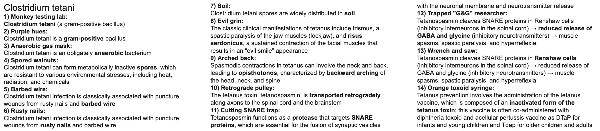
22. Coccidioides immitis
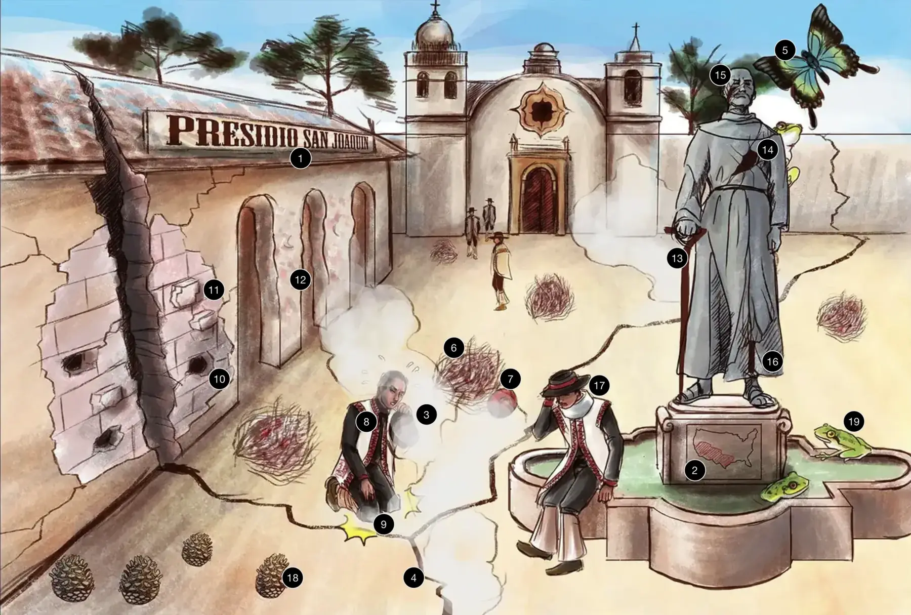
- Classic clue: pneumonia with arthralgias and erythema nodosum ('desert bumps') after dust exposure in the Southwest US or northern Mexico.
- Micro: thermally dimorphic fungus; mold with arthroconidia in soil, large spherules with endospores in tissue.
- Diagnosis: spherules on KOH/histology, culture (lab hazard), serology (IgM acute, IgG/complement fixation).
- Treatment: azoles (fluconazole or itraconazole) for mild-moderate disease; amphotericin B for severe or disseminated disease.
- Buzzwords: San Joaquin Valley fever, desert rheumatism, spherules, erythema nodosum, meningitis, arthroconidia.
- 1"Presidio San Joaquin": Coccidioides immitis is a dimorphic fungus that causes coccidioidomycosis, also called San Joaquin Valley fever (the Presidio/San Joaquin icon). (C. posadasii is the related species in Arizona and Texas.)
- 2Southwest US map: It is endemic to the arid southwestern United States (California's San Joaquin Valley, Arizona) and northern Mexico, where it lives in desert soil.⭐ Southwest US desert = Coccidioides.
- 3Breathing in dust: Infection follows inhalation of airborne arthroconidia (mold spores).
- 4Cracks in earth: Arthroconidia become aerosolized when soil is disturbed by construction, farming or natural events such as earthquakes and dust storms (cracks in the earth).
- 5Dimorphic butterfly: Coccidioides is thermally dimorphic: mold (with arthroconidia) in the cooler environment (25-30 C), and a tissue form at body temperature (35-37 C). Unlike other dimorphic fungi, the tissue form is a spherule full of endospores rather than a budding yeast.
- 6Tumbleweeds: In tissue, Coccidioides appears as large spherules (tumbleweeds) filled with endospores. Spherules are much larger than red blood cells.⭐ Spherules with endospores = Coccidioides.
- 7Small red hat next to tumbleweed: The small red hat represents an RBC beside the tumbleweed: spherules are significantly larger than RBCs (about 20-80 micrometers).
- 8Coughing + sweating: Presentation ranges from asymptomatic to acute pneumonia with cough, fever and pleuritic chest pain. Diagnosis: KOH stain or histology (spherules), culture, and serology (IgM indicates acute infection; IgG and complement fixation for more chronic/disseminated disease).
- 9Knee pain: Arthralgia is a common feature of primary infection ('desert rheumatism'), along with fever, cough and chest pain.
- 10Holes in lung wall: Chest X-ray in primary disease may show cavities or nodules (holes in the wall).
- 11Protruding bricks in lung wall: Chest X-ray may also show unilateral infiltrates and hilar lymphadenopathy (bricks protruding from the wall); imaging is normal in many cases.
- 12Spotted leg wall: Erythema nodosum (painful red nodules on the shins from panniculitis) reflects a strong immune response to fungal antigens and is a favorable sign. Called 'desert bumps'.⭐ Erythema nodosum + arthralgia + cough in the Southwest = valley fever.
- 13Immunocompromised cane: Extrapulmonary (disseminated) disease (skin, bone, joint, CNS) mainly occurs in immunocompromised patients; also increased risk in pregnancy, diabetes and people of Filipino or African descent.
- 14Statue erosion over chest: Dissemination from the lungs can involve skin, bone and meninges; the chest icon marks that the infection begins in the chest (lungs) and spreads from there.
- 15Statue erosion over skin: Skin dissemination causes papules, pustules, ulcers or nodules.
- 16Exposed bone: Bone dissemination causes osteolytic lesions with localized pain, swelling and tenderness over the affected bones (spine, skull and long bones).
- 17Neck brace: CNS dissemination causes coccidioidal meningitis: headache, fever, neck stiffness, photophobia and altered mental status. It is chronic and often needs lifelong azole therapy.⭐ Coccidioides meningitis requires lifelong fluconazole.
- 18Pinecones: Azoles (itraconazole or fluconazole) are recommended for mild to moderate disease.
- 19Amphibians: Amphotericin B is the treatment of choice for severe or disseminated disease.
Show the original legend picture
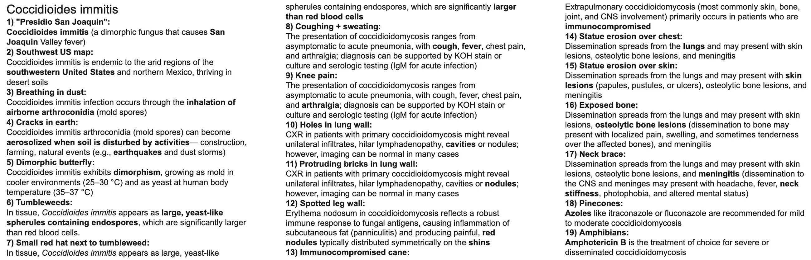
23. Coronavirus
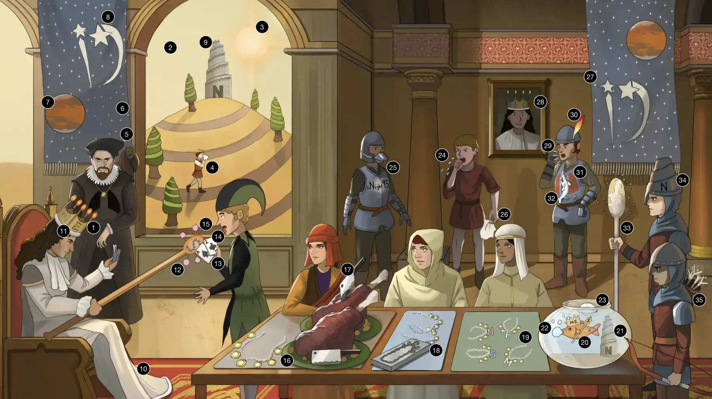
- Presentation: cough, fever, dyspnea, myalgias, anosmia/ageusia; severe cases progress to viral pneumonia and ARDS.
- Micro: enveloped, helical, positive-sense ssRNA virus (Coronaviridae) with S, M, E and N proteins; zoonotic (bats).
- Diagnosis: RT-PCR (NAAT) on nasopharyngeal swab; antigen tests detect N protein; serology detects IgM/IgG/IgA.
- Treatment/prevention: supportive care; N95 for aerosol-generating procedures; vaccination.
- Buzzwords: crown (corona) spikes, ACE2 receptor, type II pneumocytes, cytokine storm, ARDS, MERS camels.
- 1Crown: Coronaviruses (family Coronaviridae) are named for the crown-like ring of spikes seen on electron microscopy ('corona' = crown).
- 2Warm colors: Warm colors encode RNA: coronaviruses have an RNA genome (single-stranded).
- 3Positive sun: The sun is a positive symbol: the RNA genome is positive-sense, so it can be translated directly like mRNA.⭐ Positive-sense RNA genome is infectious by itself and acts directly as mRNA.
- 4Sniffly commoner: Four low-pathogenicity human coronaviruses (229E, NL63, OC43, HKU1) cause the common cold and are endemic in humans.
- 5Evil advisor + bat: The high-pathogenicity coronaviruses (SARS-CoV, MERS-CoV, SARS-CoV-2) are zoonotic; bats are the primary reservoir host.
- 6Stars: Star icon = SARS-CoV (severe acute respiratory syndrome coronavirus), the cause of SARS.
- 7Mars: Mars icon = MERS-CoV (Middle East respiratory syndrome coronavirus), the cause of MERS.⭐ MERS is linked to camels in the Arabian Peninsula.
- 82 stars + 19: SARS-CoV-2 (two stars) is the cause of COVID-19 (coronavirus disease 2019).
- 9Helical N tower: Coronaviruses have helical nucleocapsids made of the nucleocapsid (N) protein bound to the RNA genome.⭐ Coronaviruses are the only positive-sense RNA viruses with a helical nucleocapsid.
- 10Enveloped by robe: Coronaviruses are enveloped: the capsid is surrounded by a lipid bilayer studded with viral glycoproteins.
- 11ME crown + S sceptre: The membrane (M), envelope (E) and spike (S) proteins are embedded in the coronavirus envelope.
- 12S sceptre decorated with glycans: The coronavirus S (spike) glycoprotein is heavily glycosylated, which helps shield it from antibody recognition.
- 13Ace and 2 (ace of cards): At the host cell surface, SARS-CoV-2 binds angiotensin-converting enzyme 2 (ACE2) to gain entry (ace = ACE).
- 142 of clubs: The '2' of the card pair: ACE2 is highly expressed on type II alveolar cells (type II pneumocytes), explaining lung tropism.⭐ Type II pneumocytes (surfactant producers) express ACE2.
- 15Hitting cards with S sceptre: The S protein binds ACE2, causing a conformational change that allows fusion and viral entry (host proteases such as TMPRSS2 prime S).
- 16Genomic sun necklace + two large meats: The replicase gene (ORF1a/1b) of the positive-sense genomic RNA is translated directly by host ribosomes into two long polyproteins.
- 17Cleaver in meat: Viral proteases (e.g., main protease and papain-like protease) autoproteolytically cleave the two polyproteins into individual functional proteins, including RdRp.⭐ Main protease (3CLpro/Mpro) is the target of nirmatrelvir (Paxlovid).
- 18Sun necklace + necklace molds + new necklaces: RNA-dependent RNA polymerase (RdRp) copies positive-sense genomic RNA into full-length negative-sense RNA, which then serves as the template for new positive-sense genomes of progeny virions.⭐ Remdesivir inhibits RdRp.
- 19SMEN bracelets: The viral genome also yields subgenomic RNAs (nested set) from which the S, M, E and N proteins are translated.
- 20S sceptre + ME crown + Golgi goldfish: The S, M and E proteins are inserted into the ER and transported to the membrane of the ER-Golgi intermediate compartment/Golgi.
- 21N tower in fishbowl: The nucleocapsid forms in the cytoplasm as N protein subunits associate with new genomic RNA.
- 22Goldfish blowing bubbles: The nucleocapsid joins the assembling virus, and a new enveloped virion buds into the ER-Golgi intermediate compartment (ERGIC) lumen.
- 23Budding bubbles: Progeny virions are carried to the cell membrane in membranous vesicles and released by exocytosis.
- 24Cough droplets: SARS-CoV-2 spreads via respiratory droplets and, in some settings, airborne (aerosol) transmission.
- 25kNight 95 + mask: Because of possible airborne spread, an N95 respirator (or equivalent) is recommended for healthcare workers during aerosol-generating procedures; surgical masks suffice for most routine care.⭐ N95 for aerosol-generating procedures.
- 26Commoner's tissue: The low-pathogenicity coronaviruses cause mild upper respiratory illness (common cold).
- 27Tapestry with Stars, Mars, and 2 stars + 19: The high-pathogenicity coronaviruses (SARS-CoV, MERS-CoV, SARS-CoV-2) can cause potentially fatal pneumonia.
- 28Happy painting: Some people infected with SARS-CoV-2 have no symptoms (asymptomatic carriers) but can still transmit the virus.
- 29Coughing: COVID-19 commonly presents with cough and fever; other symptoms include dyspnea, fatigue, myalgias, headache, sore throat, nasal congestion, nausea, vomiting and diarrhea.
- 30Flame feather: The second icon for the same symptom list highlights the loss of taste (ageusia) and smell (anosmia), a characteristic feature of COVID-19 (along with the fever, fatigue and GI symptoms listed).⭐ Sudden anosmia/ageusia is a clue for COVID-19.check original
- 31Dirty lung chestplate: Severe COVID-19 causes viral pneumonia (bilateral ground-glass opacities); in some patients a cytokine storm drives progression to ARDS and respiratory failure requiring mechanical ventilation.check original
- 32ARDS shark: The shark icon emphasizes the progression to acute respiratory distress syndrome (ARDS): diffuse alveolar damage with hypoxemia and respiratory failure, often needing ventilation.⭐ ARDS: bilateral infiltrates, PaO2/FiO2 <= 300 with PEEP, normal wedge pressure.
- 33Gnaats + NP swab spear: Nucleic acid amplification tests (NAATs, e.g., RT-PCR) on nasopharyngeal swabs diagnose active infection by detecting viral RNA.⭐ RT-PCR on nasopharyngeal swab is the gold-standard diagnostic.
- 34N tower shaped helmet: Antigen tests detect viral protein (most often the nucleocapsid N protein) rather than RNA; they are rapid but less sensitive than NAAT.
- 35Antibody arrows: Serologic assays (ELISA, CLIA, lateral-flow rapid antibody tests) detect IgM, IgG or IgA antibodies to viral proteins such as spike or nucleocapsid, indicating past infection or vaccination, not active infection.
Show the original legend picture
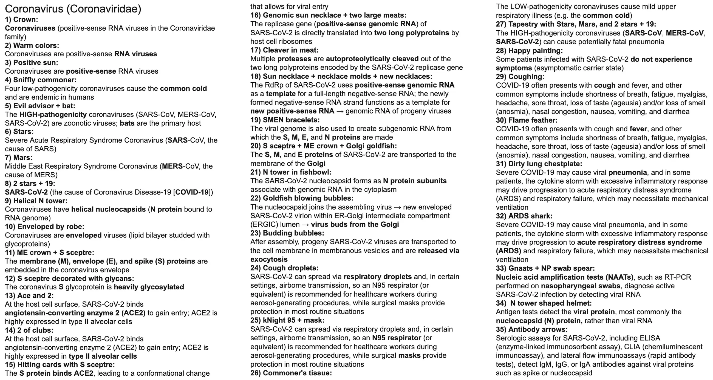
24. Corynebacterium diphtheriae
- Presentation: pharyngitis with gray pseudomembrane, bull neck, myocarditis, later palatal/cranial neuropathy.
- Micro: gram-positive club-shaped rod in V/Y 'Chinese letter' arrangements; metachromatic (volutin) granules; lysogenic phage carries tox gene.
- Diagnosis: Loeffler or tellurite (gray-black colonies) culture; Elek test for toxin production.
- Treatment/prevention: antitoxin plus penicillin or erythromycin; DTaP/Tdap toxoid vaccine.
- Buzzwords: pseudomembrane, bull neck, ADP-ribosylation of EF-2, Albert stain, Elek test.
- 1Bull: Corynebacterium diphtheriae (bull = 'bull neck'), a gram-positive bacillus.
- 2Purple hues: Purple = gram-positive staining: C. diphtheriae is a gram-positive bacillus.
- 3V + Y design on maracas: C. diphtheriae forms club-shaped rods arranged in V and Y shapes ('Chinese letters') because of snapping division after cell replication.
- 4Red and blue maracas: The cytoplasm contains metachromatic (volutin) granules, polyphosphate stores that stain red/dark with aniline dyes (e.g., Albert or methylene blue stain) while the rest of the bacillus stains blue.⭐ Albert stain highlights metachromatic granules.
- 5Bowtie + elongated accordion: Diphtheria toxin (an A-B exotoxin encoded by a lysogenic beta phage) ADP-ribosylates elongation factor-2 (EF-2), inhibiting protein synthesis; Pseudomonas exotoxin A works by the same mechanism.⭐ Diphtheria toxin and Pseudomonas exotoxin A both inactivate EF-2.
- 6Grey cotton candy + plastic wrap: Toxin causes epithelial cell necrosis; fibrin, dead cells and bacteria form a dense gray pseudomembrane over the tonsils and pharynx that bleeds if scraped.⭐ Gray pseudomembrane that bleeds when scraped.
- 7Bull's neck: Severe disease with massive cervical lymphadenopathy and soft-tissue edema produces the 'bull neck'; airway obstruction can occur from laryngeal/pharyngeal membrane.
- 8Water droplets: C. diphtheriae is transmitted mainly by respiratory droplets.
- 9Heart cape: Systemic absorption of toxin causes cardiotoxicity, most often myocarditis and arrhythmias, a major cause of death.⭐ Myocarditis is the leading cause of death.
- 10Myelin sausages + back of throat: Toxin can cause demyelinating neuropathy, classically beginning with palatal and posterior pharyngeal paralysis, followed later by other cranial and peripheral nerve involvement.
- 11Black "TELE": Tellurite agar (cystine-tellurite) is a selective medium; C. diphtheriae reduces tellurite to form gray/black colonies.
- 12Laughing: Loeffler's medium (Loeffler's serum slant) promotes growth and enhances the bacterium's morphology (metachromatic granules), easing identification.
- 13Tongue lick: The Elek test (immunodiffusion) distinguishes toxigenic from non-toxigenic C. diphtheriae strains by detecting toxin precipitin lines.⭐ Elek test = toxin production.
- 14Toxoid syringes: The vaccine is an inactivated toxin (toxoid), usually combined with tetanus toxoid and acellular pertussis (DTaP in children, Tdap in adolescents/adults; DT and Td without pertussis).⭐ Toxoid vaccine induces antitoxin antibodies; treat active disease with antitoxin plus an antibiotic (penicillin or erythromycin).
Show the original legend picture
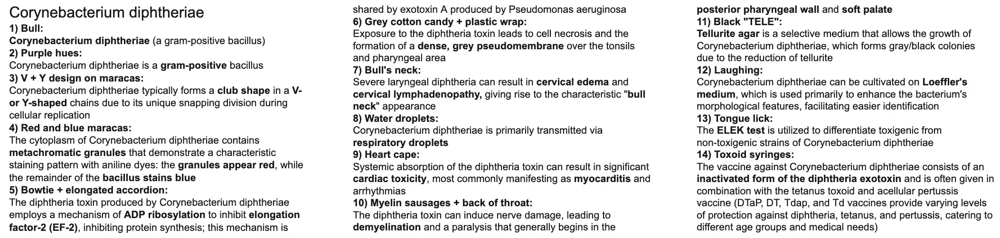
25. Coxiella burnetii
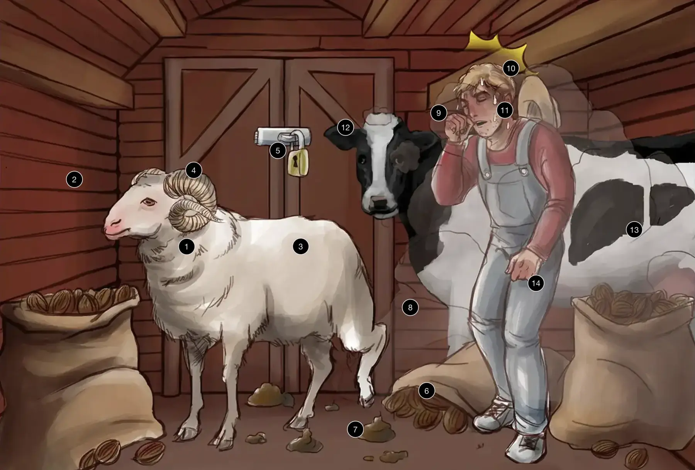
- Presentation: acute Q fever - flu-like illness with high fever, headache, dry cough, atypical pneumonia or hepatitis; NO rash.
- Micro: obligate intracellular, gram-negative (poorly staining) coccobacillus; spore-like small cell variant; aerosol transmission from livestock birth products.
- Diagnosis: serology (phase I/II antibodies) or PCR; Gram stain not helpful.
- Treatment/prevention: doxycycline; chronic disease needs doxycycline plus hydroxychloroquine; vaccine for high-risk workers; pasteurize milk.
- Buzzwords: Q fever, no arthropod vector, sheep/cattle/goats, culture-negative endocarditis, granulomatous hepatitis.
- 1Curly Q the ram: Coxiella burnetii, the cause of Q fever (the 'Q' ram); it is a gram-negative (or gram-variable) bacterium.
- 2Red barn: Red = gram-negative: C. burnetii stains poorly and variably because of its unusual cell wall, but is classified as gram-negative.
- 3White fur: White fur = no rash: unlike other zoonotic obligate intracellular bacteria (Rickettsia, Ehrlichia, Orientia), Q fever typically has no rash.⭐ Q fever = no rash and no arthropod vector (unlike rickettsiae).
- 4"Q" horn: C. burnetii causes Q fever, typically mild flu-like illness (fever, headache, myalgia, malaise) that can progress to atypical pneumonia or hepatitis.
- 5Locked indoors: C. burnetii is an obligate intracellular organism that survives and multiplies within host cells, notably macrophages (inside acidic phagolysosomes).
- 6Walnuts: C. burnetii forms spore-like small-cell variants that resist heat, drying and disinfectants and persist in the environment.⭐ Spore-like forms are very hardy in the environment.
- 7Animal droppings: The hardy organism persists in animal waste (birth products, urine, feces, milk); the birth products of infected livestock are particularly infectious.
- 8Inhaling dust clouds: Contaminated material becomes aerosolized dust; inhalation is the primary route of human infection (no tick vector needed).⭐ Inhalation of aerosols from livestock = classic route.
- 9Hitting head: Q fever commonly presents with nonspecific symptoms; this icon represents the severe headache.
- 10Coughing: The same nonspecific symptom set includes a dry cough, reflecting atypical pneumonia.
- 11Sweating: Fever is a consistent, defining feature of Q fever (often high with sweats).
- 12Cow: Cattle, sheep and goats are major reservoirs. Prevention: avoid birth products and waste, use protective equipment, pasteurize milk and vaccinate high-risk individuals (e.g., veterinarians).
- 13Liver-shaped spot: Q fever can cause granulomatous hepatitis (granulomas often with a fibrin ring, 'doughnut granulomas') with mildly elevated liver enzymes and nonspecific symptoms.⭐ Doughnut (fibrin-ring) granulomas in liver.
- 14Red fingers: Chronic Q fever can cause culture-negative endocarditis, especially in patients with valvular disease; peripheral signs include splinter hemorrhages.⭐ Culture-negative endocarditis in a patient exposed to livestock suggests Coxiella.
Show the original legend picture
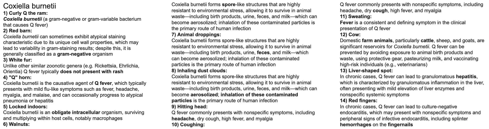
26. Coxsackievirus A & B
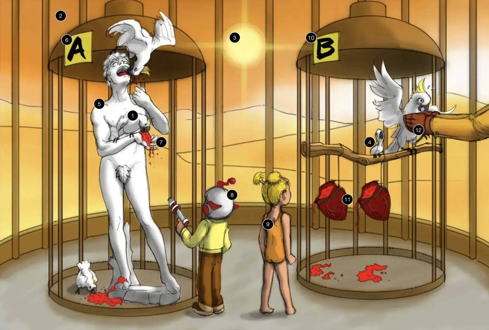
- Presentation: A - hand-foot-mouth disease, herpangina; B - myopericarditis, Bornholm disease (pleurodynia); both - aseptic meningitis.
- Micro: naked, icosahedral, positive-sense ssRNA virus (Picornaviridae, enterovirus); fecal-oral.
- Diagnosis: clinical; RT-PCR of stool, throat or CSF for enterovirus.
- Treatment/prevention: supportive care; hand hygiene.
- Buzzwords: hand-foot-mouth, herpangina, devil's grip, dilated cardiomyopathy, summer-fall children.
- 1Cockatoos: Coxsackievirus (cockatoo) A and B are positive-sense RNA viruses in the family Picornaviridae (enteroviruses).
- 2Warm colors: Warm colors encode RNA: coxsackieviruses have an RNA genome.
- 3Positive sun: Positive sun = positive-sense RNA genome, directly translated by host ribosomes.
- 4Baby cockatoo: 'Pico' (small) RNA virus: coxsackieviruses are members of the Picornaviridae family.
- 5Statue of David: The nude statue means a naked virus: coxsackieviruses lack an envelope, making them acid-stable and resistant to detergents, so they survive the stomach and spread fecal-orally.
- 6"A" cage: Cage A represents Coxsackievirus A, a positive-sense RNA picornavirus.
- 7Hand, foot, mouth red birdseed: Coxsackievirus A causes hand-foot-and-mouth disease (small red vesicles/macules on mouth, palms and soles, non-itchy) and herpangina (small vesicles or ulcers on soft palate, tonsillar pillars and uvula with sudden fever and sore throat); both are self-limited and treated supportively.⭐ Hand-foot-mouth and herpangina = Coxsackie A.
- 8Meningitis helmet: Coxsackievirus A (and less commonly B) can cause aseptic (viral) meningitis, especially in children, by crossing the blood-brain or blood-CSF barrier.⭐ Enteroviruses are the most common cause of aseptic meningitis.
- 9Kid + bathing suit: Coxsackieviruses mainly affect children, with a seasonal peak in summer and early fall.
- 10"B" cage: Cage B represents Coxsackievirus B, a positive-sense RNA picornavirus.
- 11Floppy heart bags: Coxsackievirus B causes myopericarditis by directly infecting cardiomyocytes and triggering an immune response, causing chest pain, fatigue, dyspnea or arrhythmias; chronic cases can progress to dilated cardiomyopathy and heart failure.⭐ Coxsackie B is the most common viral cause of myocarditis.
- 12Tight grip around chest: Coxsackievirus B causes Bornholm disease (epidemic pleurodynia, 'devil's grip'): sudden, severe pleuritic chest or upper abdominal pain, sometimes with fever and muscle tenderness; self-limited and treated supportively.⭐ Devil's grip = pleurodynia.
Show the original legend picture
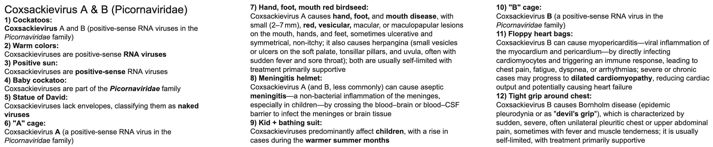
27. Cryptococcus neoformans
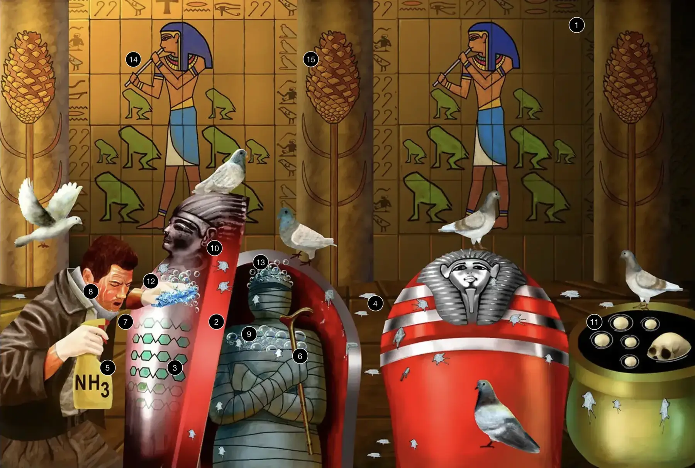
- Presentation: subacute meningoencephalitis (headache, fever, neck stiffness, high opening pressure) in HIV patients with CD4 < 100; also pulmonary infection.
- Micro: encapsulated yeast (narrow-based budding), urease positive; found in pigeon droppings and soil.
- Diagnosis: India ink (halo), mucicarmine stain, latex agglutination/cryptococcal antigen in CSF or serum.
- Treatment/prevention: amphotericin B + flucytosine induction, then fluconazole.
- Buzzwords: soap bubbles on MRI, pigeon droppings, India ink, mucicarmine, polysaccharide capsule.
- 1Crypt: Cryptococcus neoformans (crypt = 'crypto'), an opportunistic encapsulated yeast.
- 2Thick-walled sarcophagus: The sarcophagus represents the thick polysaccharide capsule, which inhibits phagocytosis, enhances virulence and is the main diagnostic target.⭐ Capsule = main virulence factor.
- 3Hexagon design: The repeating pattern on the sarcophagus represents the repeating polysaccharide capsular antigen (glucuronoxylomannan), which is antiphagocytic and detectable by antigen tests.
- 4Pigeon poop + archeologist coughing: C. neoformans is associated with pigeon droppings and contaminated soil; inhaling the dust leads to a primary pulmonary infection that may disseminate, especially to the CNS.⭐ Pigeon droppings are the classic exposure.
- 5Ammonia bottle: C. neoformans is urease positive, hydrolyzing urea to CO2 and ammonia.
- 6Immunocompromised cane: The cane marks an immunocompromised patient: cryptococcosis is an opportunistic infection, classically in HIV/AIDS (CD4 < 100) and with transplant or steroid therapy.⭐ Most common fungal meningitis in AIDS.
- 7Archeologist coughing: Pulmonary cryptococcosis may be asymptomatic, but about half of patients have cough or chest pain; dyspnea can occur and disease is more severe in immunocompromised hosts.
- 8Neck brace + sweat: Cryptococcus can disseminate to the CNS, causing meningoencephalitis (fever, malaise, headache, neck stiffness, nausea, vomiting, photophobia); CSF shows elevated opening pressure, lymphocytic pleocytosis, high protein and low-to-normal glucose.⭐ Markedly elevated opening pressure is characteristic.
- 9Soap bubbles on chest: The 'soap bubbles' on the chest mark respiratory samples: bronchoalveolar lavage (BAL) fluid from bronchoscopy can be stained to detect Cryptococcus in the lungs (the soap-bubble look refers to the yeast in tissue).check original
- 10Red and silver: On BAL specimens, mucicarmine (red) stains the polysaccharide capsule and Gomori methenamine silver (GMS) stains the yeast cell wall, confirming pulmonary cryptococcosis.⭐ Mucicarmine stains the capsule red.
- 11Light circles in black tar: India ink stain of CSF (from lumbar puncture) is a negative stain: the capsule shows as a clear halo around the yeast against a dark background, diagnosing cryptococcal meningitis.⭐ India ink = clear halo around yeast.
- 12Latex gloves: The latex agglutination (cryptococcal antigen) test detects capsular polysaccharide antigen in serum and CSF using antibody-coated latex beads that clump when antigen is present; it is highly sensitive.
- 13Soap bubbles on head: Cryptococcal meningoencephalitis can show 'soap bubble' lesions on MRI: multiple small cystic non-enhancing lesions in the basal ganglia and periventricular gray matter, representing yeast-filled dilated perivascular (Virchow-Robin) spaces.⭐ Soap-bubble lesions in basal ganglia.
- 14Frogs and flute: Treatment of cryptococcal meningitis begins with induction therapy: amphotericin B (frogs, 'ribbit' for -ampho) plus flucytosine (flute, 'flu-cy').⭐ Induction: amphotericin B + flucytosine.
- 15Pinecones: After induction, long-term consolidation and maintenance therapy uses fluconazole (the pinecones stand for the following 'cones'-azole step).⭐ Then fluconazole consolidation/maintenance.check original
Show the original legend picture
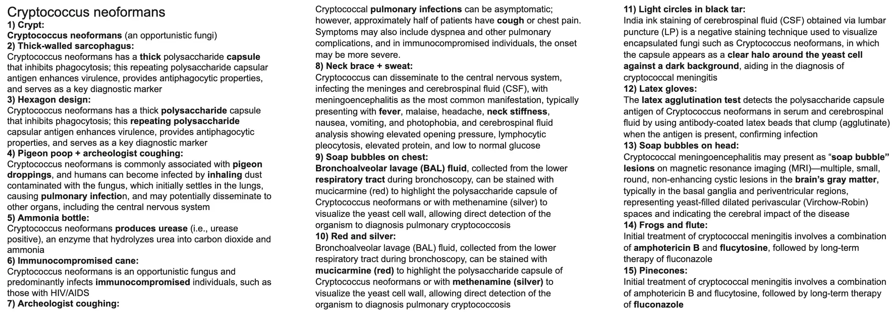
28. Cryptosporidium spp

- Presentation: watery, non-bloody diarrhea; self-limited in normal hosts but severe and chronic in AIDS (CD4 <100).
- Diagnosis: oocysts in stool, acid-fast (modified Ziehl-Neelsen) pink-red on blue; antigen or PCR also used.
- Transmission: fecal-oral; contaminated water (pools, lakes, municipal supply) or animal contact; oocysts resist chlorine.
- Treatment: nitazoxanide for immunocompetent patients; in HIV, restore immunity with ART plus supportive care.
- Classic association: outbreaks at swimming pools/daycares and in HIV patients with chronic watery diarrhea.
- 1Flooded crypt: Cryptosporidium spp. are intestinal protozoa that infect the small-bowel epithelium and cause watery diarrhea. Mnemonic: 'crypt' for Cryptosporidium, flooded because of the profuse watery diarrhea.
- 2Bubbles: Infectious oocysts are shed in stool and spread fecal-orally, typically by oocyst-contaminated water or food. They are environmentally hardy and survive for long periods.
- 3Multifaceted amethyst gems scattered in water: Oocysts contain four sporozoites and are small (about 4-6 micrometers). They are acid-fast or partially acid-fast on modified Ziehl-Neelsen stain (pink-red on a blue background), which allows stool microscopy diagnosis.
- 4Pink acid-fast poncho: Modified acid-fast staining of stool is the classic diagnostic test: pink-red oocysts stand out against the blue counterstain. Antigen detection or PCR can also be used.⭐ Acid-fast oocyst in stool + watery diarrhea = Cryptosporidium.
- 5Cowboy hat + wading through dirty water: Risk factors include drinking or swimming in contaminated water (pools, lakes, untreated water) and occupational or recreational contact with animals, especially cattle and calves. Daycare and swimming pool outbreaks are classic.
- 6Brown water: Cryptosporidium causes watery, non-bloody diarrhea. In immunocompetent hosts it is self-limited, usually resolving in 1-2 weeks.
- 7Immunocompromised cane: In immunocompromised patients, particularly advanced HIV (CD4 below about 100), it causes severe, chronic, profuse watery diarrhea with dehydration and weight loss, and may involve the biliary tract.
- 8Broken pipe + leaking brown water: After ingestion, sporozoites invade the epithelial cells of the GI tract (the apical enterocyte, within the brush border), leading to diarrhea through direct cellular damage and malabsorption/secretory changes. The infection is non-invasive beyond the epithelium, so stool is not bloody.
- 9Knitted sock: Nitazoxanide is approved for cryptosporidiosis in immunocompetent patients and offers variable benefit in immunocompromised patients.
- 10Sock filter: Prevention depends on water filtration, because oocysts are resistant to chlorine and standard chemical disinfection. Hand hygiene and avoiding swimming while having diarrhea also reduce spread.⭐ Chlorine-resistant oocysts explain pool and municipal water outbreaks.
- 11Spirit crows: Spiramycin (a macrolide) may relieve diarrhea in some immunocompromised patients, but the key to resolution is immune restoration (ART in HIV) plus supportive care and rehydration. Paromomycin is another agent sometimes used.check original
Show the original legend picture

29. Cytomegalovirus (CMV)
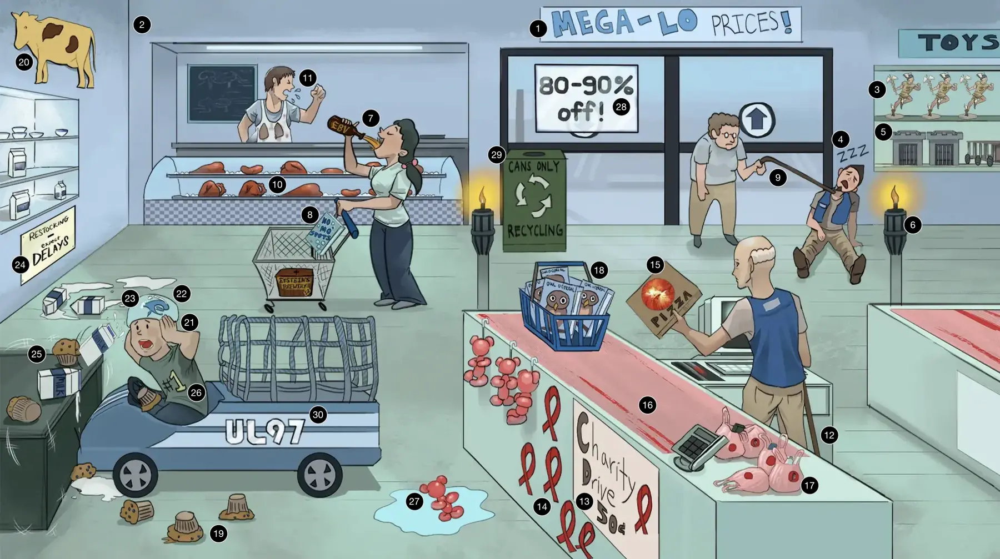
- Presentation: mono-like illness (monospot negative); in transplant/AIDS - retinitis, esophagitis, colitis, pneumonitis; congenital - hearing loss, periventricular calcifications.
- Micro: enveloped dsDNA herpesvirus (HHV-5); latent in monocytes/macrophages; owl's-eye intranuclear inclusions.
- Diagnosis: PCR/serology; biopsy shows owl's-eye inclusions; dilated eye exam for retinitis.
- Treatment/prevention: ganciclovir/valganciclovir; foscarnet if UL97 mutation resistance.
- Buzzwords: owl's eye, pizza-pie retinitis, linear esophageal ulcers, periventricular calcifications, #1 congenital infection.
- 1"Mega-Lo prices!": Cytomegalovirus (CMV), a DNA virus in Herpesviridae; spread by blood, sex, breast milk, saliva, urine and vertically (mother to fetus).
- 2Cool colors: Cool colors encode DNA: CMV is a DNA virus (double-stranded, enveloped).
- 3Hermes toys: Hermes = herpes: CMV is a member of the Herpesviridae family (HHV-5).
- 4Sleepings: Sleeping figures represent latency: CMV establishes latency in mononuclear myeloid cells (monocytes, macrophages, dendritic cells).
- 5Macro-cages: The 'macro' cages reinforce that latent CMV resides in monocytes and macrophages.
- 6Torches: CMV belongs to the TORCHeS group of congenital infections: Toxoplasma, Other (VZV, parvovirus B19, Zika, HIV), Rubella, CMV, HSV, Syphilis; all cross the placenta.⭐ TORCHeS infections cross the placenta.
- 7Epstein's Beer + back of throat: CMV can cause a mononucleosis-like illness similar to EBV: fever, sore throat, lymphadenopathy and fatigue.
- 8"No Mo' Spot" detergent: The monospot (heterophile) test is typically negative in CMV mononucleosis but positive in EBV; PCR and serology are used to diagnose either.⭐ Mono-like illness with negative monospot suggests CMV.
- 9Waking man with immunocompromised cane: In immunocompromised patients, latent CMV can reactivate.
- 10Solid organs: Transplant recipients (solid organ, bone marrow, stem cell) are at high risk of active CMV infection (reactivation or from donor organ).
- 11Coughing + lung stains: Transplant patients are at risk of CMV pneumonitis, and also hepatitis, gastritis, colitis and encephalitis.⭐ CMV pneumonitis is a leading infectious cause of death after bone marrow transplant.
- 12Immunocompromised cane: AIDS patients with low CD4 counts (below 50 cells/mm3) are especially vulnerable to CMV disease.
- 13"Charity drive 50 cents": The 50 cents is the CD4 threshold: CMV disease occurs when CD4+ count falls below 50.⭐ CMV disease at CD4 < 50.
- 14AIDS ribbons: The AIDS ribbons mark AIDS patients with advanced HIV (CD4 < 50 cells/mm3) at risk of CMV disease.
- 15Retina pizza: CMV retinitis in advanced AIDS (CD4 < 50): painless progressive vision loss; fundoscopy shows hemorrhages with fluffy yellow-white exudates ('pizza pie' or 'cheese and ketchup' retinopathy); untreated it leads to retinal necrosis and blindness.⭐ Most common cause of blindness in AIDS.
- 16Linear tears in conveyor belt: CMV esophagitis in HIV patients causes odynophagia with a few large, deep, linear ulcers (HSV causes multiple shallow punched-out ulcers; Candida causes white plaques).⭐ CMV = linear ulcers; HSV = punched-out ulcers.
- 17Torn mucosal bags: CMV colitis causes ulcerative colonic lesions with abdominal pain, hematochezia and diarrhea.
- 18Owl-O Cereal: Histology shows 'owl's eye' inclusions: enlarged cells with large nuclei containing a basophilic intranuclear inclusion surrounded by a clear halo.⭐ Owl's-eye intranuclear inclusions.
- 19Blueberry muffins: Congenital CMV can cause 'blueberry muffin' rash: purpuric, non-blanching lesions from extramedullary hematopoiesis (due to anemia or marrow suppression); thrombocytopenic petechiae may also occur; not specific to CMV and seen in other TORCHeS infections (e.g., rubella).
- 20Yellow cow + spleen and liver spots: Congenital CMV causes jaundice (hepatitis with mixed hyperbilirubinemia) and hepatosplenomegaly from viral replication, inflammation and extramedullary hematopoiesis.
- 21Covering ears: Congenital CMV causes sensorineural hearing loss because the virus damages the developing cochlea and auditory nerve; deficits are permanent and may be progressive.
- 22Large helmet vents: Congenital CMV can cause ventriculomegaly: brain infection and loss of parenchyma and impaired CSF circulation enlarge the ventricles.
- 23Milk on head: Congenital CMV causes periventricular calcifications (death of neural progenitor cells with dystrophic calcification); congenital toxoplasmosis instead tends to cause scattered, diffuse calcifications.⭐ CMV = periventricular; Toxoplasma = diffuse.
- 24"Expect DELAYS": Structural brain damage (calcifications, ventriculomegaly, cortical malformations such as microcephaly) disrupts neuronal connectivity, causing developmental delay and intellectual disability.
- 25Shake lines: The shaking lines represent seizures, another consequence of CMV structural brain damage.
- 26#1 shirt: Congenital CMV is the #1 infectious cause of sensorineural hearing loss and a leading infectious cause of intellectual disability.⭐ Most common congenital infection.
- 27Balloon bear in water: Congenital CMV can cause hydrops fetalis: fluid in two or more fetal compartments due to severe anemia, liver dysfunction and low plasma proteins (low oncotic pressure).
- 28"80-90% off!": 80-90% of newborns with congenital CMV are asymptomatic at birth (though they may develop hearing loss later).
- 29Green recycling bin: Ganciclovir (and oral valganciclovir) are first-line antivirals for treatment and prevention of CMV; they inhibit viral DNA polymerase after phosphorylation by the viral UL97 kinase.⭐ Ganciclovir toxicity: bone marrow suppression.
- 30"UL97" sticker + fast car net: UL97 gene mutation (the viral kinase that activates ganciclovir) causes ganciclovir resistance; foscarnet, which needs no activation, is used.⭐ Ganciclovir-resistant CMV: foscarnet.
Show the original legend picture
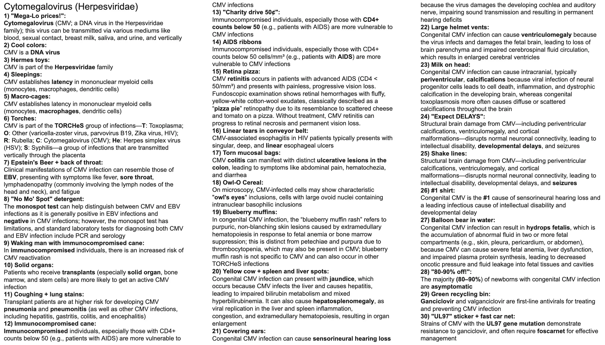
30. Dermatophytes (Epidermophyton, Trichophyton, Microsporum)
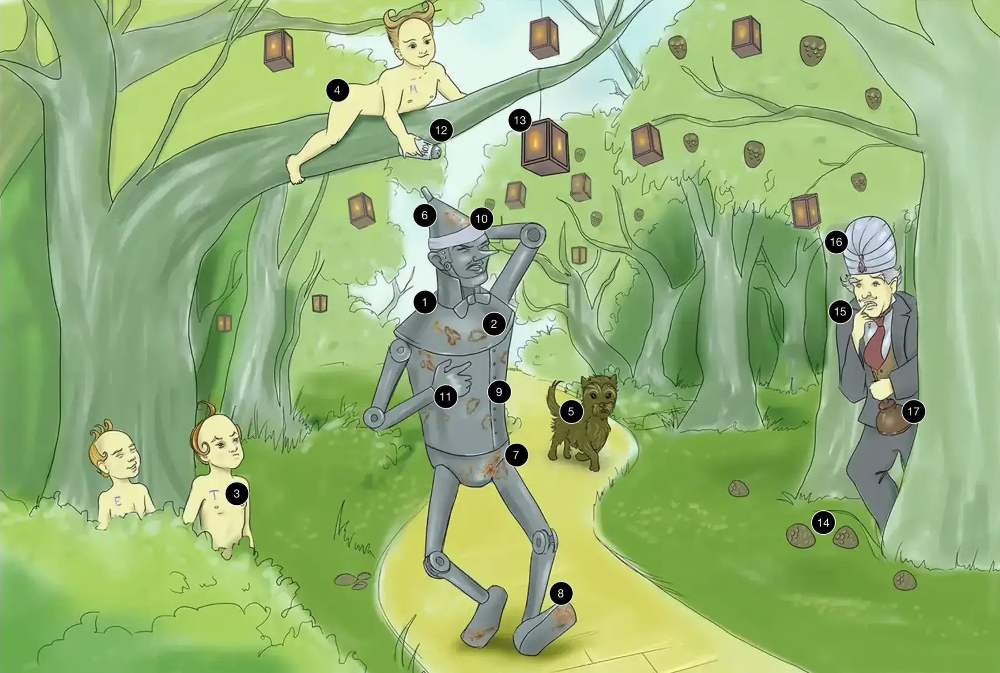
- Tinea (ringworm): red, scaly, itchy, annular lesions with raised edges and central clearing on skin, scalp, groin, feet, or nails.
- Filamentous fungi that infect keratinized tissue (skin, hair, nails): Epidermophyton, Trichophyton, Microsporum; not normal flora.
- KOH microscopy shows septate hyphae; Microsporum fluoresces under Wood's lamp; culture on Sabouraud agar.
- Topical azoles or terbinafine for skin; oral terbinafine, griseofulvin, or azoles for nails, scalp, or severe disease.
- Ringworm without worms, tinea capitis/corporis/cruris/pedis/unguium, Wood's lamp, griseofulvin binds keratin.
- 1Tin man: Dermatophytes are fungi that infect keratinized tissues (skin, hair, nails), causing tinea, or ringworm, so named for the red circular lesions, although no worm is involved.
- 2Rings of rust on tin man: Same point: tinea lesions are red, annular (ring-shaped) plaques, hence 'ringworm'.
- 3"E," "T," and "M" munchkins: The main dermatophyte genera are Epidermophyton, Trichophyton, and Microsporum.⭐ Trichophyton is the most common cause of tinea.
- 4Naked munchkins: Dermatophytes are pathogens, not part of the normal skin flora.
- 5Dog: Transmission is by direct contact with infected animals or humans, or indirectly through shared environments and fomites.⭐ Microsporum canis is acquired from pets.
- 6Rings on hat: Tinea capitis: infection of the scalp and hair, mainly in children, with patchy hair loss, scaling, broken hairs, and sometimes inflammation.⭐ Treat with oral therapy (griseofulvin or terbinafine); topicals are not enough.
- 7Rings on groin: Tinea cruris (jock itch): red, itchy, often ring-shaped rash of the groin and inner thighs; more common with warmth, moisture, sweating, or tight clothing.
- 8Rings on feet: Tinea pedis (athlete's foot): scaling, redness, itching, and sometimes cracking or blisters, especially between the toes; common in locker rooms, showers, and tight shoes.
- 9Rings on body: Tinea corporis: red, scaly, ring-shaped patches with raised edges and central clearing, on any part of the body; seen in wrestlers (tinea gladiatorum).
- 10Athletic head band: Athletes are at higher risk because of close contact, shared equipment, and warm, moist environments (swimmers, wrestlers); common infections include tinea corporis, pedis, and cruris.
- 11Scratching: Dermatophyte infections typically cause a red, itchy, scaly rash, often with raised edges and central clearing.
- 12KOH salt: KOH microscopy of scrapings reveals septate hyphae and confirms the diagnosis.⭐ KOH dissolves keratinocytes so hyphae are seen.
- 13Lamps + "M" munchkin: A Wood's (UV) lamp can detect Microsporum species, which fluoresce.⭐ Microsporum fluoresces green; Trichophyton generally does not (except T. schoenleinii).
- 14Pinecones: Topical azoles are commonly used to treat dermatophyte skin infections.⭐ Topical terbinafine is also effective.
- 15Biting nails: Onychomycosis (tinea unguium) is a fungal nail infection causing thickening, discoloration, brittleness, and separation from the nail bed; it can affect fingernails or toenails.
- 16Turban + biting nails: Oral antifungals (terbinafine, griseofulvin, or azoles) are used for onychomycosis, tinea capitis (turban), and severe or resistant skin infections.⭐ Terbinafine is first-line for onychomycosis; monitor liver enzymes.
- 17Grease + biting nails: Oral griseofulvin is used for more severe dermatophyte infections; it deposits in keratin-rich tissues (nails, hair, skin) but is often poorly tolerated due to GI side effects.⭐ Griseofulvin: microtubule inhibitor; hepatotoxic, teratogenic, CYP450 inducer.
Show the original legend picture
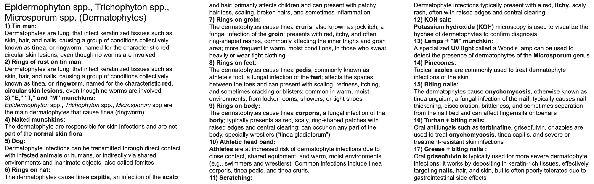
31. Ebolavirus & Marburgvirus (Filoviridae)
- Clinical clue: abrupt fever, headache, myalgias after exposure to bats or an outbreak region, then GI symptoms, rash and hemorrhage.
- Micro: enveloped, helical, nonsegmented negative-sense ssRNA virus (filamentous); Ebola and Marburg.
- Diagnosis: RT-PCR on blood; handle under BSL-4 precautions.
- Treatment/prevention: supportive care; Ebola Zaire has monoclonal antibodies (e.g. ansuvimab, atoltivimab/maftivimab/odesivimab) and a vaccine; strict PPE and isolation.
- Buzzwords: hemorrhagic fever, DIC, shock, fruit bats, health care workers, body fluids, funeral transmission.
- 1Soccer field: Filoviruses (Ebola, Marburg) are RNA viruses.
- 2Warm colors: Filoviruses (Ebola, Marburg) are RNA viruses. (warm colors = RNA virus in the Sketchy color code).
- 3Moon with negative sign-shaped clouds: Filoviruses are negative-sense RNA viruses (the genome must be transcribed by a viral RNA-dependent RNA polymerase carried in the virion).⭐ Negative-sense RNA viruses carry their own RdRp in the virion.
- 4Orange spiral: The nucleocapsids of filoviruses have a helical structure (long filamentous virions).
- 5Soccer jerseys: Filoviruses are enveloped viruses.
- 6"Marburg" jersey: Marburg virus is a negative-sense RNA virus in the Filoviridae family.
- 7Gooooal!: Ebola virus is a negative-sense RNA virus in the Filoviridae family.
- 8Spotted jersey + red face: Marburg and Ebola infections begin abruptly with fever, headache, malaise and myalgias (flu-like), followed by nausea, vomiting, diarrhea and a maculopapular or petechial rash around day 5 as the disease progresses toward hemorrhagic features.
- 9Pool of blood: Filoviruses may progress to severe viral hemorrhagic fever with bleeding due to vascular leakage, DIC, mucosal and GI bleeding, multiorgan failure and shock; without supportive care mortality is extremely high.⭐ DIC with hemorrhagic fever is the classic cause of death.
- 10Kidney + liver blood spots: Same severe hemorrhagic fever picture: vascular leakage, DIC, bleeding, multiorgan (kidney and liver) failure and shock; mortality is extremely high without supportive care.
- 11Lightning bolt: Filoviruses may present with shock, typically mixed hypovolemic (fluid loss from vomiting, diarrhea, vascular leakage) and distributive (cytokine-mediated vasodilation, endothelial dysfunction), causing hypotension, tachycardia, oliguria and end-organ hypoperfusion.
- 12Monkeys: Fruit bats (Rousettus species for Marburg; several species for Ebola) are believed to be the natural reservoir; humans are infected through contact with infected bats, primates or other animals, followed by human-to-human spread via direct contact with blood or body fluids.⭐ Spread by direct contact with body fluids, not by aerosol.
- 13Bats: Fruit bats are the presumed natural reservoir for both viruses (Rousettus for Marburg), the source of spillover to humans and primates.
- 14Medics: Health care workers are at high risk without adequate PPE because the viruses are highly transmissible through direct contact with blood or body fluids.⭐ Strict isolation and full PPE prevent nosocomial spread.
Show the original legend picture
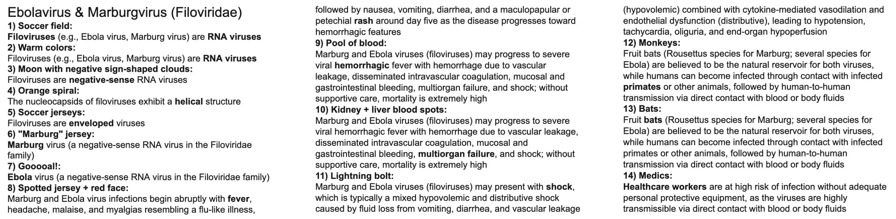
32. Entamoeba histolytica

- Presentation: bloody diarrhea (dysentery) after travel or fecal-oral exposure; RUQ pain/fever from liver abscess.
- Diagnosis: stool O&P with trophozoites containing ingested RBCs; serology/antigen/PCR help, and serology is key for liver abscess.
- Histology: flask-shaped colonic ulcers; liver abscess aspirate looks like anchovy paste (usually right lobe, solitary).
- Treatment: metronidazole or tinidazole for invasive disease, THEN a luminal agent (paromomycin or iodoquinol) to clear cysts.
- Transmission: fecal-oral via cyst-contaminated food/water; also sexual (oral-anal) contact. Cysts have 4 nuclei, trophozoites eat RBCs.
- 1"Do not ENTer - HiSTorical site": Entamoeba histolytica is an intestinal protozoan that causes amebiasis (amebic dysentery and liver abscess). Mnemonic: the 'histolytica' name means tissue-lysing, so it invades tissue.
- 2Bubbles in water: The trophozoite is the motile, invasive, feeding stage; the cyst is the infectious, environmentally resistant form passed in stool. Cysts survive in water, which is why contaminated water is the main source.
- 3Drinking bubbly water: Amebiasis is acquired mainly by ingesting food or water contaminated with E. histolytica cysts (fecal-oral route). It is most common in areas with poor sanitation and in travelers returning from endemic regions.
- 4Holding hands: Transmission can also be sexual through oral-anal contact, since spread is fecal-oral. This makes it a consideration in men who have sex with men.
- 5Right lobe dig site: Hepatic amebiasis, a liver abscess, is the most common extraintestinal manifestation. Trophozoites reach the liver via the portal vein, and the abscess is typically solitary and in the right lobe.
- 6Clutching right side: Liver abscess presents with RUQ pain, fever, hepatomegaly, malaise and nausea; labs may show leukocytosis and elevated liver enzymes. Diarrhea is often absent at the time the abscess presents.
- 7Anchovy paste truck: Abscess aspirate is thick, reddish-brown 'anchovy paste' from necrotic hepatocytes (liquefactive necrosis). Trophozoites are usually absent from the aspirate and sit at the abscess periphery.⭐ Anchovy paste = amebic liver abscess. Treat with metronidazole; drainage is rarely needed.
- 8Colon drainage pipe with rust spots: Colonic infection produces ulcers with a narrow neck at the mucosal surface and a broad base in the submucosa (flask shape), most often in the cecum and ascending colon but anywhere in the large bowel.
- 9Flask water bottles: Flask-shaped ulcers on histology are the hallmark of invasive intestinal amebiasis. The trophozoites lyse the mucosa and undermine the submucosa.
- 10Flask in colon pipe: Colon biopsy showing flask-shaped ulcers with trophozoites confirms intestinal amebiasis when stool studies are unrevealing. Colonoscopy/biopsy is used when the diagnosis is uncertain.
- 11Red stools: Bloody diarrhea (dysentery) results from trophozoite invasion of the mucosa and submucosa with tissue necrosis and ulceration. Stool is typically bloody and mucoid with relatively little fever, unlike bacterial dysentery.
- 12"O&P" pipe: Diagnosis uses stool O&P: cysts (round, up to 4 nuclei, mostly in formed stool) or trophozoites (motile, mostly in liquid stool of acute infection). Multiple samples may be needed; antigen tests or PCR can distinguish E. histolytica from non-pathogenic E. dispar.
- 13Trophozoite puddle + red cups: Trophozoites containing ingested RBCs (erythrophagocytosis) in stool or tissue are diagnostic of invasive amebiasis, and this separates E. histolytica from non-pathogenic amebae.⭐ Ingested RBCs inside the trophozoite = invasive E. histolytica.
- 14Metro: Metronidazole (or tinidazole) is first-line for invasive disease and liver abscess because it kills tissue-invading trophozoites. It does not reliably clear luminal cysts, so a luminal agent must follow.
- 15Pair of mice: A luminal agent (paromomycin or iodoquinol) is given after metronidazole/tinidazole to eradicate residual cysts in the gut lumen and prevent relapse and spread. Paromomycin is a poorly absorbed aminoglycoside.
- 16"Queen Iodo's Tomb": Iodoquinol is the other luminal amebicide used to clear cysts after tissue-active therapy. Either paromomycin or iodoquinol completes the treatment course.
Show the original legend picture

33. Enterococcus faecium & faecalis
- Clinical clue: UTI, endocarditis (after GU/GI procedures), biliary tree infection, often hospital-acquired
- Gram-positive cocci in pairs/short chains; group D; non-hemolytic (gamma) usually; PYR positive; catalase negative
- Grows in 6.5% NaCl and in bile (hydrolyzes esculin: bile esculin agar turns black)
- Treatment: ampicillin (+/- gentamicin for endocarditis); VRE: linezolid or daptomycin
- Buzzwords: 6.5% NaCl, bile-esculin, VRE, E. faecalis most common
- 1"Caucus": Enterococcus species are gram-positive cocci (in pairs and short chains; group D by Lancefield).
- 2Purple hues: Enterococcus faecium and Enterococcus faecalis are gram-positive.
- 3"Resist the 6.5% N.Ca": E. faecium and E. faecalis grow in 6.5% NaCl (hypertonic saline), distinguishing them from most other gram-positive cocci such as nonenterococcal group D strep (S. gallolyticus/bovis).⭐ Enterococci survive 6.5% NaCl and bile; group D Streptococcus bovis survives bile only.
- 4Green bile boots: E. faecium and E. faecalis hydrolyze esculin in the presence of bile (bile-esculin positive, i.e. bile-resistant), turning the medium black.
- 5"Stop the FEES" + less people: Enterococcus faecium accounts for the minority of enterococcal infections but is more often vancomycin-resistant.⭐ E. faecium = fewer infections but more resistance.
- 6"CALIfornia caucus" + more people: Enterococcus faecalis is responsible for the majority of enterococcal infections.
- 7"Do U ¥ trees?": Enterococcal infections include UTIs (cystitis, pyelonephritis), endocarditis and biliary tree infections (also intra-abdominal and wound infections).⭐ Enterococcus is a classic cause of subacute endocarditis after GU/GI procedures.
- 8Resisting entering van: Some E. faecium and E. faecalis strains are resistant to many antibiotics; vancomycin-resistant enterococci (VRE) are particularly important.⭐ VRE: vanA gene alters D-Ala-D-Ala to D-Ala-D-Lac.
- 9Police line: For VRE infections, linezolid is an effective treatment.⭐ Daptomycin is another option for VRE.
- 10Tiger stripes: Tigecycline has activity against some VRE strains and may be considered in specific clinical scenarios.
Show the original legend picture
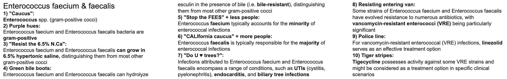
34. Epstein-Barr Virus
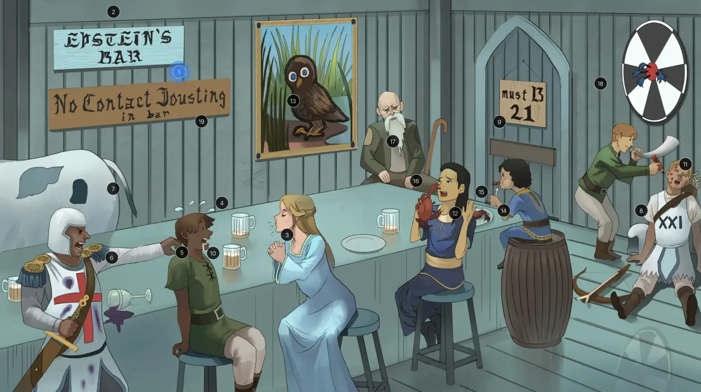
- Presentation: fever, exudative pharyngitis, posterior cervical lymphadenopathy, splenomegaly in a teen/young adult; amoxicillin rash.
- Micro: enveloped dsDNA herpesvirus (HHV-4); infects B cells via gp350 binding CD21; latent in B cells.
- Diagnosis: atypical lymphocytes (CD8+ T cells), positive monospot (heterophile IgM); EBV-specific serology (VCA IgM) is more accurate.
- Treatment/prevention: supportive; avoid contact sports for weeks (splenic rupture).
- Buzzwords: kissing disease, Downey cells, CD21, Burkitt lymphoma t(8;14), nasopharyngeal carcinoma, oral hairy leukoplakia.
- 1"Epstein's Bar": Epstein-Barr virus (EBV, HHV-4), a DNA virus in Herpesviridae.
- 2Cool colors: Cool colors encode DNA: EBV is a (double-stranded, enveloped) DNA virus.
- 3Saliva drips + trying to kiss: EBV spreads mainly via saliva, so close contact transmits it, especially among adolescents and college students ('kissing disease').⭐ Kissing disease.
- 4Sweat drops: Fever is a hallmark of infectious mononucleosis; with lymphadenopathy and pharyngitis it forms the classic triad.⭐ Classic triad: fever, pharyngitis, lymphadenopathy.
- 5Grabbing back of shirt: Tender lymphadenopathy, especially posterior cervical nodes, though it can be generalized.⭐ Posterior cervical nodes are classic for EBV.
- 6Reactive "8" T-knight + atypical stains: EBV causes lymphocytosis with atypical lymphocytes (Downey cells): large, reactive CD8+ T cells with abundant basophilic cytoplasm responding to EBV-infected B cells, seen on peripheral smear.⭐ Atypical lymphocytes are CD8+ T cells, not B cells.
- 7Enlarged spleen spot + liver spot: Proliferating mononuclear cells accumulate in lymphoid tissue including the spleen, causing splenomegaly (hepatomegaly less commonly).
- 8Sleeping B-cell archer: EBV establishes lifelong latency in B cells and can reactivate with certain triggers (e.g., immunosuppression).
- 9Entrance + "Must B 21": EBV gp350 binds CD21 (CR2, complement receptor 2) on B cells to enter them.⭐ EBV enters B cells through CD21.
- 10White drool: EBV pharyngitis is severe with copious gray-white tonsillar exudate and marked tonsillar enlargement, typically in late teens and young adults (streptococcal pharyngitis is more common in children).
- 11Red pencil spots: In active EBV infection, giving ampicillin or amoxicillin causes a diffuse maculopapular rash; this is an immune-mediated, T-cell driven (delayed type IV) reaction, not true IgE-mediated penicillin allergy.⭐ Amoxicillin/ampicillin rash in mono.
- 12Crab meals: The crab (cancer) icon: EBV increases risk of some cancers, including Hodgkin and non-Hodgkin lymphomas (notably Burkitt) and nasopharyngeal carcinoma.
- 13Stern owl's eyes + sitting in reeds: Hodgkin lymphoma (associated with EBV) shows Reed-Sternberg cells: large B cells with bilobed nuclei and prominent nucleoli ('owl's eyes'); they are CD15+ and CD30+.⭐ Reed-Sternberg cells: CD15+, CD30+.
- 14Bar kid: EBV is associated with Burkitt lymphoma, a highly aggressive B-cell non-Hodgkin lymphoma with t(8;14) translocation (c-myc and IgH) and a 'starry sky' histology.⭐ t(8;14) c-myc translocation; starry-sky appearance.
- 15Jaw lump: Endemic (African) Burkitt lymphoma occurs in children in equatorial Africa and classically presents as a rapidly growing jaw or facial bone mass.
- 16Crab pinching nose: Nasopharyngeal carcinoma is strongly associated with EBV (especially in Southeast Asia and Southern China); it presents with a painless neck mass, nasal obstruction or bleeding, ear symptoms or cranial nerve palsies.
- 17Bearded man + immunocompromised cane: Oral hairy leukoplakia: painless white corrugated ('hairy') lesions on the lateral tongue that cannot be scraped off (unlike thrush), caused by EBV in immunocompromised patients (HIV/AIDS).⭐ Cannot be scraped off, unlike candidal thrush.
- 18Bullseye spot + star darts: The monospot test detects heterophile IgM antibodies that agglutinate horse or sheep red cells for quick EBV diagnosis; it has limited sensitivity/specificity and the CDC no longer recommends it - EBV-specific serology is preferred.⭐ Monospot = heterophile antibodies; false negatives early in disease.
- 19"No contact jousting": Patients with infectious mononucleosis must avoid contact sports for several weeks (until cleared) because of the risk of splenic rupture.⭐ Splenic rupture risk: no contact sports.
Show the original legend picture
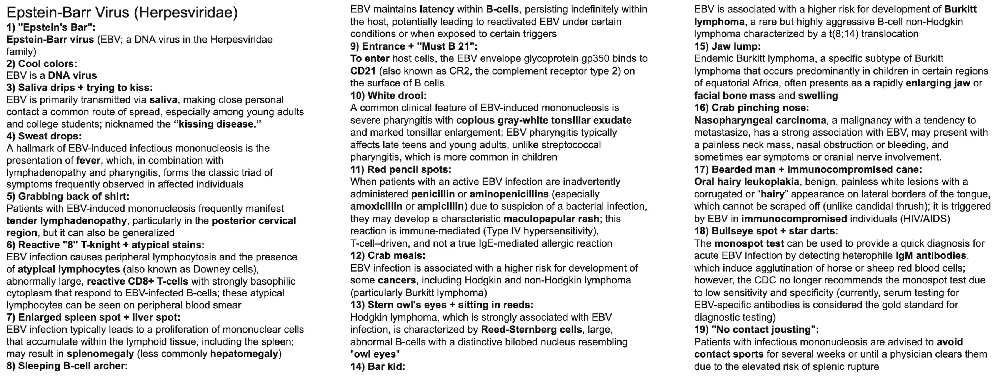
35. Eq. Encephalitis / Chikungunya virus
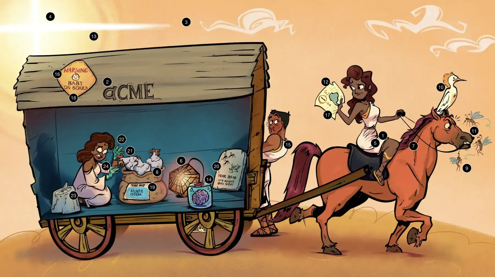
- Presentation: equine encephalitides - fever then meningoencephalitis (EEE worst); chikungunya - abrupt fever, severe polyarthralgia, rash.
- Micro: enveloped, icosahedral, positive-sense ssRNA alphaviruses (Togaviridae); arboviruses.
- Diagnosis: serology/PCR (IgM in CSF or serum).
- Treatment/prevention: supportive care; mosquito control; no specific antiviral.
- Buzzwords: togas, horse + bird + mosquito cycle, EEE east coast, chikungunya 'bendy' joints, Aedes aegypti.
- 1Togas: Togaviridae (toga = 'tog-a' virus), a family containing the Alphavirus genus.
- 2acme: The 'acme' icon represents the alphavirus genus (A = alpha, 'a-cme') within Togaviridae.check original
- 3Warm colors: Warm colors encode RNA: Togaviridae have RNA genomes (single-stranded).
- 4Positive sun: Positive sun = positive-sense RNA genome (translated directly).
- 5Toga dress: The toga wraps the virus: Togaviridae are enveloped viruses.
- 6Icosahedral lantern: Alphaviruses have icosahedral capsids (and a surrounding envelope).
- 7Horse: The equine encephalitides - Eastern (EEEV), Western (WEEV) and Venezuelan (VEEV) - are alphaviruses in Togaviridae.
- 8Chicken gunny sack: Chikungunya virus (CHIKV) is also an alphavirus (Togaviridae).
- 9Mosquitoes: Alphaviruses are arboviruses (arthropod-borne), transmitted to humans by mosquito vectors.
- 10Equine bird: The equine encephalitis viruses are maintained in animal reservoirs, mainly birds, which are amplifying hosts that infect mosquitoes.⭐ Reservoir = birds; horses and humans are dead-end hosts.
- 11Horse bothered by mosquitos: Equine encephalitis alphaviruses are zoonotic: mosquitoes transmit to horses (which develop disease) and to humans.
- 12Due east: Eastern equine encephalitis virus (EEEV) occurs in the eastern US along the Atlantic and Gulf coasts.⭐ EEE: east coast, most severe.
- 13Summer sun: EEEV infections peak in summer; most are mild flu-like (fever, headache, myalgia, malaise, vomiting), but a minority progress to neuroinvasive disease.
- 14Brain in jar + red skull: Neuroinvasive EEE causes meningitis (fever, headache, neck stiffness, photophobia) and encephalitis (altered mental status, seizures, focal deficits, movement disorders), with high mortality or long-term morbidity (the red skull).⭐ EEE has the highest fatality among the equine encephalitides.
- 15Westward WEE: Western equine encephalitis virus (WEEV) occurs in the western and southwestern US.
- 16Warning-Baby on Board (WEEV): Infants are at highest risk for severe WEEV encephalitis, although most infections are benign.check original
- 17Due south: Venezuelan equine encephalitis virus (VEEV) occurs in Central and South America (Venezuela, Colombia, parts of Mexico) and occasionally the southern US.
- 18Warning-Baby on Board (VEEV): Neuroinvasive VEEV is more likely in children than adults, though most VEEV infections are benign (flu-like).check original
- 19Global chicken trade label on chicken gunny sack: Chikungunya is found worldwide (Asia, Pacific, Africa, Americas, Caribbean, Florida), spread by travel and global trade.
- 2080's night egyptian tablet + mosquitos: The vector is the Aedes aegypti mosquito (Egyptian tablet; Aedes albopictus also transmits).⭐ Aedes aegypti (also dengue, Zika, yellow fever).
- 21Bendy chicken: Chikungunya ('that which bends up') presents with abrupt fever then polyarthralgia from viral replication in joints (synovial fibroblasts, macrophages, muscle) causing cytokine-mediated inflammation.⭐ Chikungunya = stooped posture from severe joint pain.
- 22Chicken handling gloves: Chikungunya arthralgias are bilateral, symmetric and distal-predominant, mainly affecting small joints of the hands and wrists.
- 23Grandfather sundial: Chikungunya can cause chronic arthralgia and arthritis lasting months to years, sometimes debilitating.⭐ Chronic arthritis can last months to years.
- 24Chicken handler rash: Chikungunya often has a diffuse maculopapular erythematous rash 2-5 days after fever onset (trunk, limbs, face); bullous rash is uncommon.
Show the original legend picture
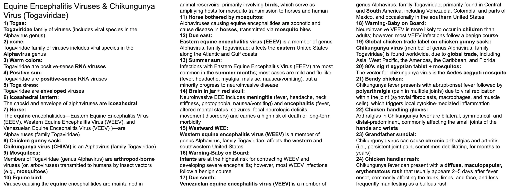
36. Escherichia coli (ETEC & EHEC)

- Classic: UTI (cystitis/pyelonephritis), neonatal meningitis (K1), gram-negative sepsis; EHEC = bloody diarrhea + HUS; ETEC = traveler's watery diarrhea.
- Lactose fermenter: pink on MacConkey, metallic green sheen on EMB; oxidase negative, indole positive.
- EHEC O157:H7: sorbitol-negative (colorless on sorbitol-MacConkey), Shiga-like toxin (inactivates 60S ribosome), undercooked beef.
- HUS triad: thrombocytopenia, MAHA with schistocytes, acute kidney injury; do NOT give antibiotics for EHEC.
- ETEC: LT (like cholera, increases cAMP) and ST (increases cGMP) cause watery diarrhea; treat with fluids.
- 1E. cola: Escherichia coli is a gram-negative bacillus (pink rod on Gram stain) and a normal member of gut flora, but it is also the leading cause of several infections. It is a facultative anaerobe in the Enterobacteriaceae family.
- 2Red hues: Red/pink coloring reminds you that E. coli is gram-negative: it has a thin peptidoglycan layer with an outer membrane containing LPS (endotoxin), which stains pink with safranin counterstain.
- 3Pink milk carton: E. coli ferments lactose, forming pink colonies on MacConkey agar (acid from lactose fermentation turns the pH indicator pink). Other lactose fermenters include Klebsiella and Enterobacter.
- 4Glass capsule: Many strains of E. coli are surrounded by a polysaccharide capsule, which helps them evade phagocytosis.
- 5K cake + glass capsule: Some strains express K capsule (K antigen), a key virulence factor in extraintestinal infections (e.g., sepsis, meningitis, UTI) because it resists phagocytosis.
- 6Green coaster: E. coli typically forms distinctive metallic green colonies on eosin methylene blue (EMB) agar; the metallic sheen is a classic buzzword for strong lactose fermentation.
- 7Catalase cat: E. coli is catalase positive: catalase converts hydrogen peroxide into water and oxygen, protecting the bacterium from oxidative killing. Catalase-positive organisms are particularly a problem in chronic granulomatous disease.
- 8Fimbriae ribbons: Fimbriae (pili) of E. coli mediate adhesion to host cells, an important virulence factor. P fimbriae bind uroepithelium and are linked to pyelonephritis, preventing the bacteria from being washed out by urine flow.
- 9"1" bladder cup: E. coli is the most common cause of urinary tract infections (cystitis and pyelonephritis), usually by ascending spread from the gut flora. It is the most common cause of uncomplicated UTI.
- 10Blood red shake: E. coli is a major cause of gram-negative sepsis. LPS (endotoxin, lipid A) triggers release of TNF-α and IL-1, leading to fever, hypotension and septic shock; urinary tract and GI/biliary sources are common.
- 11K cake + baby + meningitis helmet: Strains with the K1 capsular antigen cause neonatal meningitis, acquired from the maternal birth canal.⭐ Neonatal meningitis: think group B Strep, E. coli (K1), and Listeria.
- 12Hamburger: Enterohemorrhagic E. coli (EHEC) is classically transmitted through undercooked ground beef (also unpasteurized juice and raw produce). The infectious dose is very low.⭐ Undercooked burger + bloody diarrhea = EHEC (O157:H7).
- 13Red stool: EHEC causes bloody diarrhea (hemorrhagic colitis) by damaging the intestinal lining through Shiga-like toxin production. Fever is typically absent or low-grade, and fecal leukocytes are scant.⭐ Antibiotics and antimotility agents are avoided in EHEC because they can raise the risk of HUS.
- 14Sorbitol free soda: O157:H7 does not ferment sorbitol, so it forms colorless colonies on sorbitol-MacConkey agar, distinguishing it from most other E. coli strains, which are sorbitol fermenters.
- 15She-gorilla toy: EHEC produces Shiga-like toxin (Shiga toxin 1/2, phage-encoded), nearly identical to the Shiga toxin of Shigella dysenteriae. It inactivates the 60S ribosomal subunit (cleaves 28S rRNA) in host cells, disrupting protein synthesis and killing the cell.
- 16Glomerular straw: Shiga-like toxin damages endothelial cells of glomerular capillaries and causes hemolytic uremic syndrome (HUS). This endothelial injury leads to acute kidney injury; HUS usually follows the diarrheal illness by about a week, mainly in children.
- 17Plate aggregation: Endothelial damage exposes the surface to platelets, triggering platelet aggregation and microthrombi. Platelet consumption causes thrombocytopenia (the classic HUS triad is thrombocytopenia, MAHA and acute kidney injury).⭐ HUS: low platelets but normal PT/PTT (unlike DIC); schistocytes on smear.
- 18Popped red balloon: In microangiopathic hemolytic anemia (MAHA), red cells are mechanically sheared into schistocytes as they pass through small vessels filled with fibrin/platelet clots, lowering the red cell count. Labs show elevated LDH and indirect bilirubin, low haptoglobin, and a negative Coombs test.
- 19"Only $1.57": E. coli O157:H7 is the classic enterohemorrhagic serotype: Shiga-like toxin causes bloody diarrhea and HUS. The "$1.57" in the picture is a mnemonic for O157. Management is supportive (fluids); avoid antibiotics.
- 20Water truck: Enterotoxigenic E. coli (ETEC) is a common cause of traveler's diarrhea, acquired by ingesting contaminated water or food. It causes watery diarrhea, abdominal cramping, nausea and vomiting; it colonizes the small bowel via fimbriae (colonization factors) and does not invade.
- 21eL Agua: Heat-labile toxin (LT, mnemonic: eL = Labile) ADP-ribosylates Gs, increasing adenylyl cyclase activity, so cAMP rises, inhibiting sodium/chloride absorption and promoting chloride and water secretion, causing secretory (watery) diarrhea. It works like cholera toxin.
- 22San Gabriel: Heat-stable toxin (ST, mnemonic: San Gabriel = Stable, Guanylate) activates guanylate cyclase, raising cGMP, increasing chloride secretion and reducing sodium absorption, causing secretory (watery) diarrhea.⭐ LT = cAMP (like cholera); ST = cGMP. Remember: LT is Labile (heat-inactivated), ST is Stable.
- 23Spilling water: ETEC causes traveler's diarrhea: watery diarrhea, abdominal cramping, nausea and vomiting, with no blood and no significant inflammation. It is usually self-limited and treated with oral rehydration; antibiotics (e.g., rifaximin, azithromycin, fluoroquinolone) are used in more severe cases.
Show the original legend picture

37. Flaviviridae/Yellow Fever

- Flaviviridae: enveloped, (+)ssRNA, non-segmented viruses; flaviviruses (dengue, yellow fever, Zika, West Nile) are arboviruses; HCV (Hepacivirus) is bloodborne.
- Dengue: Aedes; 'breakbone fever', retro-orbital pain, thrombocytopenia; severe dengue with plasma leakage on secondary infection by a different serotype (antibody-dependent enhancement).
- Yellow fever: Aedes; fever, jaundice, hemorrhage, black vomit; Councilman bodies and Faget sign; live attenuated 17D vaccine for travelers to Africa/South America.
- Zika: Aedes; mild febrile illness; congenital microcephaly, sexual transmission, and Guillain-Barre syndrome.
- West Nile: Culex mosquito, birds are reservoir; mostly asymptomatic; can cause meningitis, encephalitis, and acute flaccid paralysis; all treatment is supportive.
- 1Warm colors: Flaviviridae are RNA viruses (the warm color theme represents 'flavi' = yellow, from yellow fever).
- 2Positive sun: Flaviviridae are positive-sense RNA viruses, so the genome can serve directly as mRNA.
- 35 Flavors!: The Flaviviridae family includes the genera Flavivirus and Hepacivirus; clinically important members are dengue, yellow fever, Zika, West Nile, and hepatitis C. Most flaviviruses are arboviruses (arthropod-borne), spread by mosquitoes (Aedes or Culex), whereas hepatitis C is bloodborne and not vector-transmitted.
- 4Single straw: Flaviviridae have a non-segmented, single-stranded RNA genome, so they cannot undergo reassortment.
- 5Hep C Hippo: Hepatitis C virus is a member of Flaviviridae (genus Hepacivirus). It is the only one commonly spread by blood and it causes chronic liver disease.
- 6Robe: Flaviviridae are enveloped viruses, so they are inactivated by detergents and disinfectants.
- 7Dinghy with a donkey: Dengue virus (Flavivirus) is transmitted by the Aedes aegypti mosquito and causes dengue fever, or 'breakbone fever'. It presents with high fever, severe myalgias and arthralgias, headache, retro-orbital pain, and rash.
- 8Eighties clothes on donkey: Dengue fever (the colorful 80s clothes represent the rash) presents with high fever, severe myalgias and arthralgias, headache, and a macular or maculopapular rash. Treatment is supportive (fluids, acetaminophen); avoid NSAIDs and aspirin because of bleeding risk.
- 9Broken plates: Dengue causes bone marrow suppression and immune-mediated platelet destruction, leading to thrombocytopenia and increased bleeding risk (petechiae, positive tourniquet test).⭐ Thrombocytopenia is a lab hallmark of dengue.
- 10Spilled strawberry milkshake: Dengue hemorrhagic fever is dengue with thrombocytopenia, plasma leakage, and hemorrhagic manifestations. It often occurs on secondary infection with a different serotype, when non-neutralizing antibodies cause antibody-dependent enhancement.⭐ Second infection with a different serotype = worse disease (ADE).
- 11Deflated kidney: Severe dengue can cause acute renal failure and hypovolemic shock (dengue shock syndrome) because of plasma leakage, dehydration, and multiorgan dysfunction.
- 12Syringe-shaped oar: A tetravalent live attenuated dengue vaccine is available, but it is given only to people with confirmed prior dengue infection. In seronegative people it can predispose to antibody-dependent enhancement and severe disease upon natural infection.
- 13Yellow water buffalo: Yellow fever virus (a positive-sense RNA flavivirus) is transmitted by Aedes aegypti and causes fever, jaundice, myalgia, and hemorrhagic manifestations. Treatment is supportive. Its reservoirs are monkeys (sylvatic cycle) and humans (urban cycle).
- 14Eighties clothes on buffalo: Yellow fever (the 80s clothes mark the Aedes-borne flavivirus) causes fever, jaundice, myalgia, and hemorrhage. Classically, a patient may improve briefly and then relapse with the toxic phase of jaundice and bleeding. The Faget sign is a high fever with a relatively slow pulse.⭐ Faget sign = fever with relative bradycardia.
- 15Liver spot + yellow buffalo: Yellow fever damages hepatocytes and Kupffer cells, causing hepatocellular necrosis and inflammation that lead to hepatomegaly and impaired bilirubin metabolism, hence jaundice. Histology shows midzonal necrosis with eosinophilic Councilman bodies (apoptotic hepatocytes).⭐ Councilman bodies are classic for yellow fever.
- 16Back hump: Yellow fever causes severe myalgia, especially in the lumbosacral region, from viral-induced myositis and cytokine-mediated muscle inflammation.
- 17Red stool: Yellow fever is a hemorrhagic fever with bloody diarrhea, melena, hematemesis ('black vomit'), epistaxis, and petechiae. It results from impaired clotting factor synthesis by the injured liver, thrombocytopenia, and endothelial damage, giving elevated PT and PTT and a low platelet count.
- 18Syringe-shaped horns: A live attenuated vaccine (17D strain) prevents yellow fever and is recommended for travelers to endemic regions of Africa and South America. It is contraindicated in immunocompromised patients and used with caution in egg allergy.
- 19Zebra: Zika virus (Flavivirus) is transmitted by Aedes aegypti and usually causes mild fever, rash, arthralgia, and conjunctivitis (red, irritated eyes). Most infections are asymptomatic or mild and treatment is supportive.
- 20Eighties clothes on zebra: Zika (the 80s clothes mark the Aedes-borne flavivirus) causes mild fever, rash, arthralgia, and nonpurulent conjunctivitis. Treatment is supportive.
- 21Pregnant zebra: Zika is shed in blood, semen, and other body fluids, so it spreads through Aedes bites and also vertically (mother to fetus), sexually, and via blood transfusion or organ transplant.⭐ Zika is notable among flaviviruses for sexual transmission.
- 22Tiny hat: Congenital Zika syndrome is marked by microcephaly with deficient brain tissue (e.g., calcifications, ventriculomegaly) and neurologic dysfunction.⭐ Zika = microcephaly.
- 23Guillain the bear: Zika infection is associated with Guillain-Barre syndrome, an ascending symmetric weakness with areflexia, usually 1-2 weeks after the acute infection. It is an autoimmune demyelinating polyneuropathy.
- 24Nile bird: West Nile virus is transmitted by Culex mosquitoes, with birds as the reservoir host. It is mostly asymptomatic, but can cause West Nile fever (fever, headache, myalgia, rash) or progress to neuroinvasive disease. Treatment is supportive.
- 25Cool-X + mosquito: Culex mosquitoes (the 'X' in Culex) spread West Nile virus between birds and then to humans, who are dead-end hosts. Fewer than 1% of infections become neuroinvasive, and risk is higher in the elderly.
- 26Red feather on head: West Nile neuroinvasive disease can present as encephalitis (inflammation of brain parenchyma) with fever, headache, altered mental status, seizures, and focal neurologic deficits.
- 27Neck brace: West Nile virus can cause meningitis (inflammation of the meninges), presenting with fever, headache, neck stiffness, photophobia, and nausea. CSF typically shows lymphocytic pleocytosis with elevated protein and normal glucose.
- 28Floppy neck: West Nile virus can cause asymmetric acute flaccid paralysis from damage to anterior horn cells, similar to poliomyelitis. It presents with weakness, decreased tone, and areflexia without sensory loss.
- 29Flapping wings: West Nile neuroinvasive disease may also cause tremor and Parkinson-like movement disorders (flapping wings = tremor/abnormal movements), along with seizures, altered mental status, and focal deficits.
- 30Comatose bird: Severe West Nile neuroinvasive disease can progress to coma and death, especially in elderly or immunocompromised patients. Diagnosis is by IgM antibody in serum or CSF, and treatment is supportive.
Show the original legend picture

38. Francisella tularensis (Tularemia)
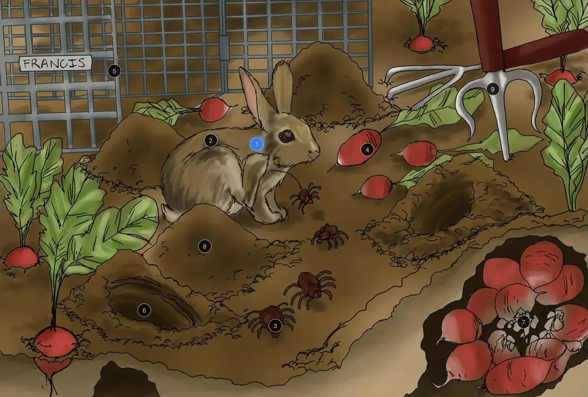
- Clue: hunter or rabbit/rodent handler or tick bite victim with an ulcer at the site and painful regional lymphadenopathy, plus fever.
- Gram-negative coccobacillus, facultative intracellular (macrophages); needs cysteine for growth; bioterrorism agent.
- Reservoirs: rabbits, rodents; vectors: Dermacentor ticks, deer flies, mosquitoes.
- Treatment: streptomycin (or gentamicin); report to the CDC.
- Buzzwords: rabbits, ulceroglandular, Dermacentor tick, granulomas, bioterrorism.
- 1Francis the rabbit: Francisella tularensis is a gram-negative coccobacillus.
- 2Rabbit: F. tularensis has a broad animal reservoir, including rabbits, rodents, and other mammals.⭐ Rabbit skinning or hunting is a classic exposure.
- 3Ticks: F. tularensis is transmitted by arthropod vectors such as ticks (especially Dermacentor), deer flies, horse flies, and mosquitoes. It can be aerosolized, so it is a potential bioterrorism agent and cases must be reported to the CDC.⭐ Any case of F. tularensis must be reported to the CDC.
- 4Red radishes: F. tularensis is a gram-negative coccobacillus (red on Gram stain).
- 5Open cage: F. tularensis is a facultative intracellular pathogen that survives and replicates in macrophages.⭐ This allows it to evade immune clearance.
- 6Rabbit holes: Tularemia can cause a painful skin ulcer with necrosis at the site of infection (e.g., a tick bite), the ulceroglandular form.⭐ Ulceroglandular is the most common form.
- 7Tunnels to rotting radishes: The organism spreads through lymphatics to reticuloendothelial organs (lymph nodes, liver, spleen), causing granulomatous inflammation with central necrosis, painful regional lymphadenopathy, fever, and systemic symptoms.
- 8Mounds around rabbit: Tularemia classically causes painful regional lymphadenopathy (lymph node enlargement).
- 9Sai: Aminoglycosides, particularly streptomycin and gentamicin, are effective against tularemia.⭐ Streptomycin is the classic drug of choice.
Show the original legend picture
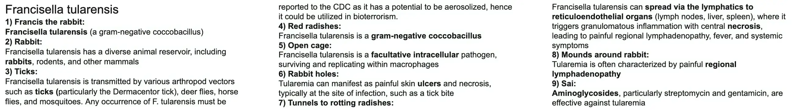
39. Gardnerella vaginalis
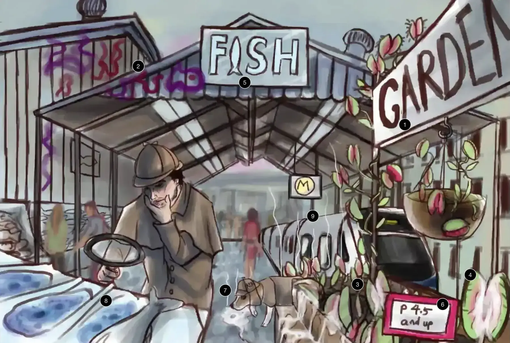
- Bacterial vaginosis: thin gray-white homogeneous discharge with fishy odor, little or no itching, burning, or inflammation.
- Gram-variable (gram-indeterminate) coccobacillus with a thin cell wall; overgrowth after loss of protective Lactobacillus.
- Vaginal pH >4.5, positive whiff test with KOH, and clue cells on wet mount (Amsel criteria).
- Metronidazole or clindamycin (oral or topical); not usually treating partners.
- Clue cells, fishy odor, whiff test, pH >4.5, no inflammation (not an STI per se).
- 1"Fish garden": Gardnerella vaginalis is a gram-indeterminate (gram-variable) coccobacillus that causes bacterial vaginosis (BV).
- 2Purple and pink graffiti: Gardnerella has a thin gram-positive-type cell wall, but it stains inconsistently, appearing gram-positive or gram-negative, so it is called gram-variable.
- 3Overgrowth of Venus flytraps: Loss of the normal acid-producing, facultative anaerobic Lactobacillus flora raises vaginal pH and allows Gardnerella overgrowth; triggers include antibiotics, hormonal changes, sexual activity, and douching.⭐ BV is a polymicrobial overgrowth, not a classic STI.
- 4Venus flytrap discharge: BV causes a thin, gray-white vaginal discharge with a characteristic "fishy" odor; patients may be asymptomatic or have mild irritation, but itching, burning, and inflammation are typically absent.
- 5Fish market: Same presentation: thin gray-white discharge and "fishy" odor, particularly after intercourse or menses, with little inflammation.
- 6"p 4.5 and up": Vaginal pH in BV is above 4.5 (often 5.0-6.5), compared with a normal pH of 3.8-4.5.⭐ pH >4.5 is also seen in trichomoniasis.
- 7Sniffing dog + "KOH" hat: The whiff test: adding 10% KOH to the discharge produces a strong fishy odor (amines) in BV.⭐ Positive whiff test = BV (also may be positive in trichomoniasis).
- 8Spotted fish + looking for clues: Wet mount shows clue cells: vaginal epithelial cells covered with Gardnerella, giving a stippled or granular border; they may look bluish-purple with Gram or Giemsa stain.⭐ Clue cells are pathognomonic of BV.
- 9Metro: BV is treated with metronidazole or clindamycin.⭐ Metronidazole: avoid alcohol (disulfiram-like reaction).
Show the original legend picture
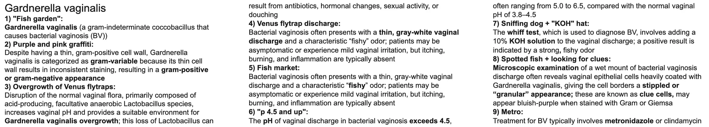
40. Giardia lamblia

- Classic: hiker or camper who drank stream or lake water with foul-smelling, greasy, non-bloody diarrhea, bloating, and flatulence
- Cysts are the infectious form (fecal-oral, contaminated water); trophozoites attach via a ventral sucking disc and cause malabsorption
- Diagnosis: stool O&P (pear-shaped trophozoites with two nuclei, or cysts) or stool Giardia antigen ELISA
- Treatment: metronidazole (also tinidazole, nitazoxanide)
- Associations: backpackers, day care outbreaks, IgA deficiency/CVID; cysts survive chlorination, so boil or filter water
- 1"Giardia jungle ride": Giardia intestinalis (also called G. lamblia or G. duodenalis) is an intestinal protozoan with a flagellated trophozoite stage and a cyst stage.
- 2Poopy water: Giardia cysts are the infectious stage and spread by the fecal-oral route, usually through contaminated water or food. Ingesting only a small number of cysts can cause infection.
- 3Bubbles in water: Infected people shed cysts in feces, contaminating water and food. Cysts are hardy and resistant to chlorination at usual concentrations, so water must be boiled or filtered.
- 4Backpacks: Giardiasis is a risk for people drinking from natural water sources, such as hikers and campers, who may ingest contaminated water. Animals (e.g., beavers) can contaminate streams. Day care outbreaks also occur.
- 5Water bottle + poopy water: Poorly purified or untreated water is a common vehicle of transmission. Prevention is by filtering, boiling, or treating water before drinking.
- 6Campers holding noses: Giardiasis typically causes foul-smelling, greasy, non-bloody diarrhea with bloating, abdominal discomfort, and flatulence. Blood and fecal leukocytes are absent because the organism does not invade the mucosa. It may become chronic.⭐ Foul-smelling, fatty, non-bloody diarrhea in a hiker = Giardia.
- 7Yellow stool: Trophozoites attach to the small intestinal mucosa and disrupt villus structure and function, causing malabsorption, steatorrhea (fatty stools), diarrhea, and potential deficiency of fat-soluble vitamins (A, D, E, K). Secondary lactase deficiency can also occur.
- 8Trophozoite shields: The flagellated trophozoite is pear-shaped (broad anterior, tapering posterior) with two prominent nuclei that look like eyes (a 'face'), multiple flagella for motility, and a ventral adhesive (sucking) disc that attaches to the intestinal mucosa. Trophozoites do not invade the tissue.
- 9Shields in water: Finding Giardia cysts or trophozoites in stool confirms the diagnosis. Trophozoites are seen in fresh watery stool and cysts in formed stool.
- 10"O&P": Stool ova and parasite (O&P) examination is a reliable method for diagnosing giardiasis. Multiple samples may be needed because shedding is intermittent.
- 11"ELISA" boat: Stool ELISA for Giardia antigen is a sensitive diagnostic test, alongside O&P. Duodenal aspirate or the string test is an option if stool studies are negative but suspicion is high.
- 12Metro: Effective treatments for giardiasis are metronidazole (first line), tinidazole, and nitazoxanide. Metronidazole is activated by anaerobic organisms to form free radicals that damage DNA.
Show the original legend picture

41. Haemophilus influenzae
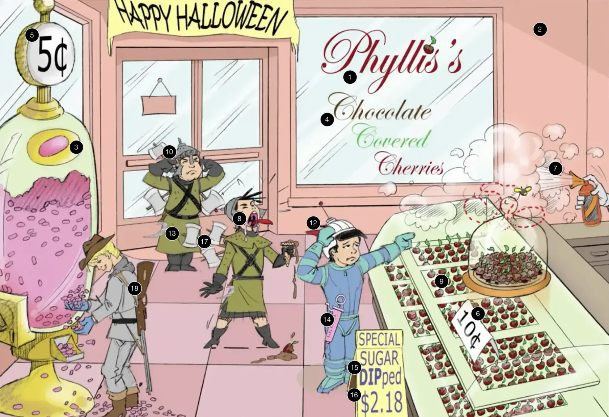
- Presentation: epiglottitis (drooling, stridor, tripod posture), otitis media, meningitis, pneumonia; invasive disease with type b capsule.
- Micro: gram-negative coccobacillus; needs factors X (hemin) and V (NAD+); Hib has polysaccharide capsule.
- Diagnosis: culture on chocolate agar; satellite growth around Staph aureus on blood agar.
- Treatment/prevention: ceftriaxone for meningitis; rifampin prophylaxis for close contacts; conjugate Hib vaccine.
- Buzzwords: chocolate agar, factors V and X, cherry-red epiglottis, thumbprint sign, encapsulated.
- 1Phyllis's chocolates: Haemophilus influenzae (Phyllis' chocolates = chocolate agar), a gram-negative coccobacillus.
- 2Red hues: Red/pink = gram-negative: H. influenzae stains gram-negative.
- 3Pink oval candies: The oval pink candies show the coccobacillus shape (short rods) and gram-negative staining.
- 4"Chocolate": Chocolate agar (blood agar heated to lyse red cells, releasing nutrients) supports growth of H. influenzae by providing factors X and V.⭐ Grows on chocolate agar, not on plain blood agar (except as satellite colonies).
- 5"5 cents": H. influenzae requires factor V (NAD+); the coins stand for the two required growth factors (5 cents = V).⭐ Factor V = NAD+.check original
- 6"10 cents": The second coin (10 cents = X) stands for factor X (hemin); H. influenzae requires both X (hemin) and V (NAD+).⭐ Factor X = hemin.check original
- 7Aerosol spray: H. influenzae is transmitted via respiratory droplets.
- 8Screaming kid + drool: Hib epiglottitis in children aged about 2-6 presents with dysphagia, drooling and inspiratory stridor.⭐ Epiglottitis: 3 D's - drooling, dysphagia, distress.
- 9Cherries: Epiglottitis shows a swollen, inflamed 'cherry-red' epiglottis (thumbprint sign on lateral neck X-ray); avoid examination that could provoke airway closure.⭐ Cherry-red epiglottis; secure airway first.
- 10Plugging ears: H. influenzae (mostly nontypeable strains) is a common cause of acute and recurrent otitis media.
- 11Bee + glass capsule: 'Hib' (b) = bee: type b has a polysaccharide (polyribosylribitol phosphate) capsule that helps evade immunity and causes invasive disease.⭐ Type b capsule = PRP.
- 12Meningitis helmet + holding head: Hib causes meningitis (headache, neck stiffness, photophobia, vomiting) - classically in unvaccinated infants and young children rather than adolescents; today uncommon due to vaccination.⭐ Hib meningitis is mainly a disease of unvaccinated young children.
- 13Sickles: Patients with sickle cell disease or asplenia are at higher risk of infection with encapsulated bacteria, including H. influenzae.⭐ Encapsulated organisms: SHiNE SKiS.
- 14Kid with syringe: Infants and toddlers should receive the Hib vaccine series to prevent serious invasive infections.
- 15"Sugar DIPped": The Hib capsular polysaccharide is a poor immunogen in infants (T-cell independent); it is covalently conjugated to a protein carrier (diphtheria or tetanus toxoid, or meningococcal OMP) to induce a T-cell-dependent response.⭐ Conjugate vaccine converts T-independent antigen to T-dependent.
- 16"$2.18": The dollar amounts represent age in months: the Hib vaccine is given as a series from about 2 months to 18 months of age.check original
- 173 axes: Third-generation cephalosporins (ceftriaxone) are the initial treatment of choice for Hib meningitis.⭐ Ceftriaxone for meningitis.
- 18Rifle: Rifampin prophylaxis is given to close contacts of patients with invasive Hib disease.⭐ Rifampin prophylaxis for contacts.
Show the original legend picture
42. Hantavirus, California Encephalitis & Rift Valley Fever Viruses (Bunyaviridae)
- Clinical clue: Hantavirus - deer mouse exposure with fever then rapid noncardiogenic pulmonary edema (HPS) or fever with renal failure (HFRS); California/Rift Valley - mosquito-borne encephalitis.
- Micro: enveloped, helical, segmented (3 segments) negative-sense ssRNA viruses; envelope from Golgi membrane.
- Diagnosis: serology and RT-PCR; clinical context (rodent or mosquito exposure).
- Treatment/prevention: mainly supportive (ribavirin used for HFRS and Rift Valley fever in some settings); rodent control, repellent, protective clothing.
- Buzzwords: robovirus (rodent-borne), arbovirus, Sin Nombre, Hantaan, capillary leak, deer mouse.
- 1Paul Bunyan: Bunyaviruses (hantavirus, California encephalitis virus, Rift Valley fever virus) are RNA viruses.
- 2Warm colors: Bunyaviruses are RNA viruses (warm colors = RNA virus).
- 3Moon with negative sign-shaped clouds: Bunyaviruses are negative-sense RNA viruses.
- 4Enveloping gold robe: Bunyaviruses are enveloped; they acquire their envelope by budding through the Golgi membrane of host cells.
- 53 tree stumps: Bunyaviruses have three segments of negative-sense RNA (L, M, S) whose ends base-pair so the segments form circular structures.⭐ Segmented genome allows reassortment.
- 6Haunting mice: Hantavirus is a negative-sense RNA virus in the Bunyaviridae family.
- 7Rodents + droppings + urine: Hantavirus is transmitted to humans mainly by inhalation of aerosolized urine, feces or saliva from infected rodents (ROdent-BOrne virus = robovirus); the deer mouse is the main reservoir in North America.⭐ Hantavirus is a robovirus, not an arbovirus.
- 8Lung-shaped sweat: New World hantaviruses (e.g. Sin Nombre virus, Americas) cause Hantavirus Pulmonary Syndrome (HPS): fever, myalgias and rapidly progressive noncardiogenic pulmonary edema from capillary leak, causing dyspnea, cough, hypoxia, bilateral interstitial infiltrates and potentially respiratory failure and shock.⭐ Sin Nombre = pulmonary syndrome (Four Corners outbreak).
- 9Sweat + blood: Old World hantaviruses (e.g. Hantaan virus, Asia and Europe) cause Hemorrhagic Fever with Renal Syndrome (HFRS): fever, myalgias and hypotension from capillary leak, with prerenal azotemia, oliguria, proteinuria, hematuria and, in severe cases, acute kidney injury.
- 10Leaking kidney canteen: Same Old World hantavirus disease (HFRS): capillary leak with renal involvement (azotemia, oliguria, proteinuria, hematuria, possible renal failure).⭐ Old World = kidney; New World = lung.
- 11"California Rift Elementary": California encephalitis virus and Rift Valley fever virus are negative-sense RNA viruses in the Bunyaviridae family.
- 12Red turban: California encephalitis and Rift Valley fever viruses can cause viral encephalitis: fever, myalgias, headache, altered mental status and seizures, with neurologic complications that may progress to coma in severe cases.
- 13Shaking: Same viral encephalitis picture (fever, headache, altered mental status, seizures; may progress to coma).
- 14Arbor: California encephalitis and Rift Valley fever viruses are arboviruses (ARthropod-BOrne viruses) transmitted to humans and other vertebrates by mosquitoes.⭐ La Crosse (California serogroup) encephalitis mostly affects children in the US Midwest.
- 15Mosquitoes: The arthropod vector for California encephalitis and Rift Valley fever viruses is the mosquito.
- 16Long sleeves and leg coverings: Prevention: insect repellent (e.g. DEET), long sleeves and long pants against mosquito-borne bunyaviruses, and avoiding exposure to rodent excreta for hantavirus.
Show the original legend picture
43. Helicobacter pylori

- Classic: epigastric pain with chronic gastritis, duodenal or gastric ulcer; pain relieved by meals in duodenal ulcer, worsened by meals in gastric ulcer.
- Dx: urea breath test, stool antigen, or endoscopic biopsy with rapid urease test, histology, or culture; urease-, oxidase-, and catalase-positive.
- Tx: triple therapy: PPI + clarithromycin + amoxicillin (or metronidazole if penicillin-allergic); bismuth quadruple therapy is an alternative.
- Complications: peptic ulcer disease, gastric adenocarcinoma, and gastric MALT lymphoma (can regress with eradication).
- Buzzwords: curved gram-negative, flagellated, microaerophilic rod; urease makes ammonia to neutralize acid.
- 1Helicopter: Helicobacter pylori is a gram-negative bacillus ('Helico-' = helicopter, spiral shaped).
- 2Red helicopter: H. pylori is a gram-negative bacillus, so it stains pink/red on Gram stain. It is also microaerophilic, requiring low oxygen levels.
- 3Helicopter rotor: H. pylori is motile, propelled by multiple flagella (the rotor). Its corkscrew motility lets it burrow through gastric mucus to reach the epithelium.
- 4Curved mustache: H. pylori is a curved rod (spiral or comma-shaped) that is well adapted to colonizing the gastric mucus layer.
- 5Ammonia spray: H. pylori is urease positive: urease converts urea to ammonia and CO2, which neutralizes gastric acid and protects the organism. This is the basis of the urea breath test (patient ingests labeled 13C or 14C urea, and labeled CO2 is detected in exhaled air). Other tests are stool antigen and endoscopic biopsy with rapid urease testing, histology, or culture.⭐ Urease positive: urea breath test, rapid urease test.
- 6Oxidase blue ring: H. pylori is oxidase positive (blue color change on oxidase testing), reflecting its cytochrome c oxidase in aerobic respiration. It is also catalase positive.
- 7Bullet holes: H. pylori infection is strongly associated with peptic ulcers of the stomach and duodenum, caused by chronic inflammation and ammonia-induced mucosal damage.⭐ Other major cause of ulcers: NSAIDs.
- 8Cancer crab: Chronic H. pylori infection raises the risk of gastric adenocarcinoma and gastric MALT lymphoma (a marginal zone B-cell lymphoma). Early MALT lymphoma may regress after H. pylori eradication.⭐ Eradicating H. pylori can cure early MALT lymphoma.
- 9Mucus-covered tissues: H. pylori lives in the gastric mucus layer, where chronic infection causes gastritis, which can progress to atrophy and intestinal metaplasia. Chronic gastritis is the pathway leading to gastric adenocarcinoma and MALT lymphoma.
- 10Proton bomb blocking gas flow: Triple therapy includes a proton pump inhibitor (e.g., omeprazole), which blocks gastric acid secretion by inhibiting the H+/K+ ATPase. Reducing acid lets ulcers heal and improves antibiotic effectiveness.
- 11Duodenal gas hose: H. pylori is present in over 90% of duodenal ulcers (and about 70% of gastric ulcers). Duodenal ulcer pain classically improves with meals, whereas gastric ulcer pain worsens with meals.⭐ Duodenal ulcer: pain better with food; gastric ulcer: pain worse with food.
- 12Ammo: Triple therapy includes amoxicillin, a beta-lactam cell wall synthesis inhibitor, as one of the antibiotics. Metronidazole is substituted in penicillin-allergic patients.
- 13Keep clear + macrolide crow: Triple therapy includes clarithromycin, a macrolide that blocks the 50S ribosomal subunit (inhibiting protein synthesis). The usual regimen is PPI + clarithromycin + amoxicillin (or metronidazole). Bismuth-based quadruple therapy is used where clarithromycin resistance is common.⭐ Bismuth quadruple therapy = PPI + bismuth + tetracycline + metronidazole.
Show the original legend picture

44. Hepatitis A Virus (Picornaviridae)

- Picornavirus: naked, positive-sense ssRNA; acid-stable; fecal-oral spread (shellfish, contaminated water, daycare, travel).
- Presentation: fatigue, nausea, jaundice, dark urine; kids often anicteric; adult smoker loses taste for cigarettes.
- Dx: anti-HAV IgM (acute); IgG = past infection or vaccination; very high ALT/AST.
- Self-limited (about 2 months), no chronic infection or carrier state, no cirrhosis/HCC.
- Prevention: inactivated vaccine; immune globulin for post-exposure; treatment is supportive.
- 1"A"-tagged hippos: Hepatitis A virus (HAV) is a positive-sense, single-stranded RNA virus in the Picornaviridae family (genus Hepatovirus). It causes acute viral hepatitis.
- 2Warm colors: HAV has a single-stranded RNA genome of positive polarity. Warm colors on the picture represent this positive-sense genome, which can be translated directly by host ribosomes (naked RNA is infectious).
- 3Positive sun: The positive-sense genome acts as its own mRNA, so it is translated directly into a polyprotein that includes the RNA-dependent RNA polymerase.
- 4Baby hippo: HAV belongs to the Picornaviridae (pico = small, RNA): small, naked, icosahedral RNA viruses. Other picornaviruses are poliovirus, coxsackievirus, echovirus, and rhinovirus.
- 5Statue of David: HAV is a naked (non-enveloped) virus. The lack of an envelope makes it resistant to ether, detergents, and heat, so it persists in the environment.⭐ Naked + acid-stable = fecal-oral.
- 6Hippos protected from acid: Being non-enveloped, HAV is acid-stable and survives gastric acid, so it can reach the intestine and be transmitted by the fecal-oral route.
- 7Poop: HAV is transmitted fecal-oral: contaminated food or water, or contact with an infected person or object. Outbreaks occur in daycares and in close-contact settings.
- 8Water cup: In resource-limited settings with poor sanitation, infection is commonly acquired from contaminated drinking water.
- 9Water purification methods: Chlorination, UV irradiation, boiling, and bleach (sodium hypochlorite) inactivate HAV in water. Hand-washing is the key prevention step.
- 10USA shellfish stand: In the US, a common source is raw or undercooked shellfish from sewage-contaminated or enclosed waters. Less often, cases arise from sewage-contaminated private wells or close contact with infected individuals.
- 11Pulling shellfish from poop water: Shellfish (e.g., oysters, clams) are filter feeders that concentrate virus from sewage-contaminated water. Eating them raw or lightly cooked transmits HAV; contaminated produce is another source.
- 12Traveler's backpack: Travelers to areas with high HAV prevalence (parts of Asia, Africa, Mexico, Central and South America, the Caribbean) are at increased risk and should be vaccinated before travel.
- 13Enlarged liver spot: Infection is often subclinical, but acute hepatitis can cause tender hepatomegaly and less often splenomegaly. Liver injury is immune-mediated (cytotoxic T cells), with markedly elevated ALT/AST (often thousands) and ALT usually higher than AST.
- 14Vomiting: Prodromal and acute symptoms: fatigue, anorexia, nausea, vomiting, diarrhea, and low-grade fever.
- 15Adult in yellow: Most adults develop jaundice from impaired bilirubin processing by the inflamed liver; dark urine and pale stools may occur. Adults usually have more symptomatic disease than children.
- 16Child in tan: Infants and young children usually have anicteric (no jaundice) or asymptomatic infection, so they act as an unrecognized source of spread in outbreaks.
- 17Putting out cigarette: Distaste for cigarettes is a classic early prodromal sign in smokers, reflecting hepatic inflammation and nausea before jaundice appears.⭐ Classic buzzword: smoker suddenly dislikes cigarettes.
- 18"ONE MONTH only": HAV infection is self-limited. Incubation lasts 2-6 weeks (average about 1 month), followed by a 1-2 week prodrome of fatigue, nausea, and anorexia.
- 19"LIMIT one per customer": A jaundice phase lasts 1-2 weeks, and symptoms usually resolve within about 2 months. Acute infection is diagnosed by anti-HAV IgM; anti-HAV IgG indicates past infection or vaccination (lifelong immunity).⭐ IgM anti-HAV = acute; IgG = immune.
- 20"NO CARRYING out of food": HAV does not cause a chronic carrier state or chronic liver disease (no cirrhosis or HCC). Fulminant hepatitis is rare, though risk is higher with older age or underlying liver disease.
- 21Syringe tranquilizer gun: Prevention is with the inactivated (killed) HAV vaccine, which gives lasting immunity. It is recommended for children, travelers to endemic areas, people with chronic liver disease, men who have sex with men, people experiencing homelessness, and injection drug users. Post-exposure prophylaxis is HAV vaccine and/or immune globulin.
Show the original legend picture

45. Hepatitis B Viral Basics & Infectious Diseases (Hepadnaviridae)

- HBV: enveloped, partially dsDNA, circular; replicates via reverse transcriptase (Hepadnaviridae).
- Spread: sex, blood, vertical; neonatal infection becomes chronic about 90% of the time vs under 10% in adults.
- Extrahepatic: serum sickness-like prodrome, polyarteritis nodosa, membranous nephropathy and MPGN.
- Serology: HBsAg first and persists in chronic; window period = IgM anti-HBc only; vaccine = anti-HBs only; ground-glass hepatocytes.
- Complications: cirrhosis and HCC. HDV is a defective virus needing HBsAg; superinfection is worse than co-infection.
- Treatment: NRTIs (lamivudine, entecavir, tenofovir) or pegylated IFN-alpha; newborns get HBIG plus vaccine.
- 1Hippies in blue: Hepatitis B virus (HBV) is a DNA virus in the Hepadnaviridae family and a major cause of viral hepatitis.
- 2Hippo van: HBV is a cause of viral hepatitis (acute and chronic), and is a leading cause of cirrhosis and hepatocellular carcinoma worldwide.
- 3"Hippie pad": HBV is the only member of the Hepadnaviridae (hepatotropic DNA viruses) that causes human disease.
- 4Cool colors: HBV is a DNA virus. It is unusual among DNA viruses because it replicates through an RNA intermediate.
- 5Hippie clothing: HBV is an enveloped virus; its envelope contains HBsAg (surface antigen). It is also the target of the vaccine, which is made of recombinant HBsAg.
- 6Hippies inside dome: HBV has an unusual replication process spanning the nucleus and cytoplasm. In the nucleus the genome becomes cccDNA and is transcribed into RNAs, including the pregenomic RNA.
- 7Hippies outside of dome: In the cytoplasm, pregenomic RNA is packaged into the core with the polymerase and reverse-transcribed back into DNA, completing the cycle (see the life-cycle video).
- 8Kumbaya circle + half circle: The HBV genome is a small, partially double-stranded circular DNA (one full-length strand and one incomplete strand).
- 9"Reverso Transcriptum" spellbook: HBV polymerase has reverse transcriptase activity (an RNA-dependent DNA polymerase), converting pregenomic RNA into DNA. This enzyme is the target of the nucleos(t)ide antiviral drugs.
- 10"Sex, drugs, rock & roll": HBV is transmitted by sexual contact, blood exposure (injection drug use, needlestick injuries, shared razors), and transfusions (now rare because of screening). HBV is present in blood and body fluids.⭐ HBV is far more infectious than HIV by needlestick.
- 11Red tie-dye outfits of mother and baby: Vertical (perinatal) transmission occurs mainly at childbirth through exposure to maternal blood and secretions; it is the major route of transmission worldwide. Risk is highest when the mother is HBeAg-positive.
- 12Tiki torch: HBV is grouped with the TORCHeS infections (T: Toxoplasma; O: Other, including varicella-zoster virus, parvovirus B19, Zika virus, HIV, HBV; R: Rubella; C: CMV; He: HSV; S: Syphilis), which can be transmitted vertically.
- 13Baby + 90% of liver cookie: Neonatal infection leads to chronic infection in about 90% of cases because of immune tolerance in the immature neonatal immune system. Chronic carriers have a high lifetime risk of cirrhosis and HCC.
- 14Adult + 10% of liver cookie: In adults, fewer than 10% (about 5%) develop chronic infection; most mount an effective immune response and clear the virus.
- 15Knee pain lines: Early (prodromal) HBV can cause a serum sickness-like syndrome from circulating immune complexes (type III hypersensitivity), with symmetric arthralgias or arthritis of small joints (hands, wrists, knees), often resolving when jaundice begins.
- 16Body henna: The same immune-complex process can cause a maculopapular or urticarial rash with fever and malaise, which may progress to a purpuric, non-blanching rash from small-vessel vasculitis.
- 17Red beads: HBV is associated with polyarteritis nodosa (PAN): necrotizing inflammation of medium-sized arteries, causing aneurysms with a beads-on-a-string appearance on angiography. Pulmonary vessels are spared.⭐ PAN: medium vessels, spares the lungs, hepatitis B association.
- 18Kidney box: HBV-associated PAN commonly involves the kidneys (renal arteries), causing reduced GFR, hypertension, microscopic hematuria, and proteinuria.
- 19Thinner glomerular knot: Chronic HBV can cause immune-complex glomerular disease. Membranous nephropathy shows a thickened glomerular basement membrane due to subepithelial immune complex deposits ('spike and dome' on silver stain), and presents as nephrotic syndrome.check original
- 20Thicker glomerular knot: Chronic HBV can also cause membranoproliferative glomerulonephritis (MPGN), with mesangial proliferation and expansion into the capillary walls, producing the classic 'tram-track' double-contour appearance due to immune complex deposition.check original
- 21Rising ALT volleyball: ALT rises during acute HBV and typically falls once the symptomatic phase passes; in viral hepatitis ALT is greater than AST. Acute-phase histology may show Councilman bodies (eosinophilic, apoptotic hepatocytes) and lobular inflammation.
- 22Baby + deflated ALT volleyball: Acute neonatal HBV often shows normal or only mildly elevated ALT because the immature immune system does not mount a strong response, which allows persistence (immune-tolerant phase).
- 23Antigen stickers on front of hippo van around 'S' & 'E': Know three antigens: HBsAg (surface; first marker of infection), HBcAg (core; found in infected hepatocytes, not detectable in serum, and targeted by anti-HBc antibodies), and HBeAg (marker of active replication and high infectivity).
- 24Spiky "S": HBsAg is the first serologic marker to appear (about 1-10 weeks after exposure) and indicates current infection, acute or chronic. Persistence for more than 6 months defines chronic infection.⭐ HBsAg > 6 months = chronic infection.
- 25Spiky "E": HBeAg is a secreted protein from the precore region and marks active viral replication and high infectivity. It is a marker of infectivity, and anti-HBe appears as replication declines.
- 26Flat tire under "S" and "E": In symptomatic acute infection, patients are HBsAg-positive and HBeAg-positive (active replication, high infectivity). Anti-HBc IgM is also present.
- 27"C" on window: In the window period, HBsAg has cleared and anti-HBs has not yet appeared, so anti-HBc IgM may be the only detectable marker. This is why anti-HBc IgM is key to diagnosing acute infection in this gap.⭐ Window period = IgM anti-HBc only.
- 28Smooth "E": Anti-HBe indicates declining viral replication and lower infectivity (HBeAg seroconversion).
- 29Smooth "S": Anti-HBs (surface antibody) signals recovery with immunity (with anti-HBc IgG) or vaccine-induced immunity.
- 30"S" line around syringe: Vaccinated people (recombinant HBsAg) are anti-HBs-positive only: negative HBsAg, anti-HBc, and anti-HBe. Anti-HBc positivity with anti-HBs implies natural infection, not vaccination.⭐ Vaccinated = anti-HBs alone.
- 31Serologic rainbow decal lines: Serologic timeline: HBsAg appears first, then HBeAg; anti-HBc IgM rises in acute infection (and fills the window period); anti-HBc IgG follows and persists for life; anti-HBe rises as HBeAg falls; anti-HBs appears last. Chronic infection: HBsAg and IgG anti-HBc persist, with no anti-HBs.
- 32Liver stone: Chronic HBV can lead to cirrhosis. Histology shows ground-glass hepatocytes (finely granular, eosinophilic cytoplasm) from cytoplasmic accumulation of HBsAg.
- 33Crab tarot card: HBV is a major risk factor for hepatocellular carcinoma (HCC), which can occur even without cirrhosis because viral DNA integrates into the host genome. Screen chronic carriers with ultrasound and AFP.⭐ HBV can cause HCC without cirrhosis.
- 34Kid hippies in orange: Hepatitis D virus (HDV, delta agent) is a negative-sense RNA virus in the Deltaviridae (genus Deltavirus).
- 35Orange hippie clothing: HDV is an enveloped virus with a circular, single-stranded, negative-sense RNA genome; it is a defective (satellite) virus.
- 36Circular headbands: HDV has a small, circular ssRNA genome, the smallest of the human viruses. It encodes hepatitis delta antigen (HDAg).
- 37Negative moons: The HDV genome is negative-sense: it must be copied to a positive strand before translation. It replicates using host RNA polymerase.
- 38Mom attaching buttons: HDV is defective and needs HBsAg as its envelope for assembly, so it only infects people who are also infected with HBV (or carriers). It uses the HBV surface protein to enter hepatocytes.
- 39Co-operative hand holding: Co-infection: HBV and HDV are acquired together, causing acute hepatitis that is more severe but usually self-limited and rarely becomes chronic.
- 40Kid on shoulders: Superinfection: HDV infects someone with chronic HBV, causing more severe disease with a high risk of fulminant hepatitis, and progression to chronic HDV in most cases.
- 41Grimacing father: Superinfection often leads to rapid progression to cirrhosis and a worse prognosis. Suspect HDV when a chronic HBV patient suddenly worsens.⭐ Sudden worsening in a chronic HBV carrier -> think HDV superinfection.
- 42Lamb: Lamivudine (3TC, Epivir) is a nucleoside analog that inhibits HBV reverse transcriptase, reducing viral load. It is also used in HIV; resistance can emerge with monotherapy.
- 43She-elf + Nucleotide mace + chain: Nucleos(t)ide analogs (lamivudine, entecavir, tenofovir) inhibit HBV reverse transcriptase and suppress replication. They rarely cure (cccDNA persists), so long-term suppressive treatment is often needed.
- 44Alpha antenna: Pegylated interferon-alpha is used in some patients; it has immunomodulatory and antiviral effects that reduce HBV replication and can achieve HBeAg seroconversion. Side effects include flu-like illness and depression.
- 45Baby + antibody keys: Infants born to HBsAg-positive mothers should receive both HBIG (passive immunity) and the hepatitis B vaccine (active immunity) within 12 hours of birth.⭐ Newborn of HBsAg+ mother: HBIG + vaccine.
Show the original legend picture

46. Hepatitis B Viral Life Cycle (Hepadnaviridae)

- Entry via heparan sulfate proteoglycans and the NTCP receptor into hepatocytes.
- Partially dsDNA is repaired to cccDNA in the nucleus: stable, transcribed by host RNA polymerase II, not eliminated by antivirals.
- pgRNA serves as the mRNA for core and polymerase and as the template for reverse transcription inside the capsid.
- HBsAg is made in excess as noninfectious subviral particles (vaccine antigen); virions bud with an HBsAg-containing envelope.
- Reverse transcriptase is the target of lamivudine, entecavir, tenofovir; HDV borrows HBsAg for its envelope.
- 1Sticky entrance: HBV attaches to hepatocytes by binding heparan sulfate proteoglycans on the cell surface, then enters through the NTCP receptor (sodium taurocholate cotransporting polypeptide), which explains its liver tropism.
- 2Magically repairing hula hoop: After entry the partially double-stranded DNA goes to the nucleus, where host enzymes repair it into covalently closed circular DNA (cccDNA). cccDNA persists as a stable minichromosome, which is why antivirals rarely cure infection.
- 3Orange silly string: Host RNA polymerase II transcribes cccDNA into four main RNA transcripts, including the pregenomic RNA (pgRNA), the surface-protein mRNAs, and the X mRNA.
- 4Photo booth + photo strip: Two classes of RNAs matter most: subgenomic RNAs, which are translated into the surface proteins, and pgRNA, which is both the mRNA for core protein and polymerase and the template for the new viral genome. (Sketchy's legend attributes core and polymerase to subgenomic RNA; standard teaching assigns them to pgRNA.)check original
- 5Bee antenna: HBsAg is translated from the subgenomic (surface) mRNAs and processed in the ER and Golgi. Excess HBsAg is secreted alone as noninfectious subviral particles, which absorb neutralizing antibody and is the antigen used in the vaccine.
- 6Chain bib: HBcAg (core protein) is translated from pgRNA (per standard teaching) and forms the viral capsid. It remains within hepatocytes and is not detectable in serum.check original
- 7Reverso Transcriptum: Viral polymerase, which has reverse transcriptase activity, is also translated from pgRNA (per standard teaching). It is the target of nucleos(t)ide analogs.check original
- 8Chain link playpen + baby hippo bee: In the hepatocyte cytoplasm, pgRNA and the viral polymerase are encapsidated by core protein into an immature viral core.
- 9Reverso transcriptum + broken blue ring: Inside the capsid, reverse transcriptase copies pgRNA into DNA, forming the partially double-stranded circular genome. This RNA-to-DNA step is the target of lamivudine, entecavir, and tenofovir.
- 10Blue ring thrown on stage: Some immature cores deliver their new DNA to the nucleus, where it is converted to more cccDNA (amplifying the pool) and transcribed again.
- 11Hooded hippo bee: Mature cores acquire their envelope containing HBsAg by budding through host membranes (ER/Golgi) and are released as infectious virions (Dane particles).
- 12Delta satellites hijacking party: Hepatitis delta virus (HDV) hijacks the HBV surface antigens (HBsAg) as its own envelope, which it needs for entry, assembly, and exit from hepatocytes.
Show the original legend picture

47. Hepatitis C Virus (Flaviviridae)

- Classic: bloodborne (IV drug use, needlestick, transfusion before 1992); usually silent acute infection that becomes chronic in ~75-85%.
- Dx: anti-HCV antibody screen, then HCV RNA PCR to confirm active infection; antibody can be negative early.
- Complications: cirrhosis, hepatocellular carcinoma; extrahepatic: mixed cryoglobulinemia, membranoproliferative GN, porphyria cutanea tarda.
- Tx: direct-acting antivirals (e.g., sofosbuvir, an NS5B polymerase inhibitor) cure >95%; no vaccine.
- Buzzwords: enveloped (+)ssRNA Flaviviridae (Hepacivirus); error-prone RdRp lacking proofreading means antigenic variation, so no vaccine and no lasting immunity.
- 1Hippo + C earring: Hepatitis C virus (HCV) is a positive-sense, single-stranded RNA virus in the Flaviviridae family (genus Hepacivirus).
- 2Five Flavors Forest Cafe: HCV belongs to the Flaviviridae family, along with dengue, yellow fever, Zika, and West Nile viruses. Unlike most of these, HCV is not arthropod-borne.
- 3Warm colors: HCV is an RNA virus with a non-segmented, single-stranded genome, so it does not undergo reassortment.
- 4Positive sun: HCV is positive-sense, so its genomic RNA acts directly as mRNA and is translated on entering the cell. Naked genomic RNA is therefore infectious.
- 5Robe: HCV is an enveloped virus, so it is relatively sensitive to detergents, drying, and disinfectants, and the envelope glycoproteins are the targets of neutralizing antibodies.
- 6No swimming from 3'-5': HCV's RNA-dependent RNA polymerase lacks 3'-5' proofreading exonuclease activity, causing frequent mutations and antigenic variation. This lets the virus evade immunity and makes vaccine development difficult.⭐ Reinfection is possible because antibodies do not give lasting protection.check original
- 7Rainbow robe: The varied (rainbow) envelope antigens reflect HCV's high mutation rate, which produces many quasispecies and multiple genotypes. Hypervariable envelope proteins allow immune escape and persistent infection.
- 8Needle pen: HCV is primarily bloodborne and spread by parenteral exposure, especially sharing needles or other drug-injection equipment. Needlestick injuries in healthcare settings are another route.⭐ Injection drug use is the most common route of transmission in the US.
- 9Red ink: Less commonly, HCV is spread by blood transfusion or organ transplant (rare since donor screening began in 1992), vertically from mother to child at birth, or by sharing contaminated tattoo or razor equipment. Sexual transmission is uncommon.
- 10Young hippo + fluctuating ALT buoy: Acute HCV (first 6 months) is often asymptomatic, but may cause fatigue, nausea, fever, abdominal discomfort, and jaundice. ALT fluctuates, with waxing and waning levels from cycles of viral replication and immune-mediated hepatocyte injury.⭐ About 75-85% of acute infections progress to chronic infection.
- 11Older hippo: Chronic HCV is often silent for years but causes progressive liver damage with fatigue, jaundice, and abdominal discomfort. Persistent inflammation drives fibrosis and eventually cirrhosis.
- 12Liver rock + crabs: Advanced chronic HCV leads to cirrhosis (easy bruising, spider angiomas, ascites) and in some patients hepatocellular carcinoma (HCC; crabs = cancer). Extrahepatic associations include mixed cryoglobulinemia, membranoproliferative glomerulonephritis, and porphyria cutanea tarda.⭐ HCV cirrhosis is a leading indication for liver transplant.
- 13Antibody tree: Screen with an HCV antibody test (anti-HCV), which shows whether a person has ever been exposed. It cannot distinguish resolved from active infection, so a positive result must be followed by HCV RNA testing.
- 14Strandy orange seaweed: HCV RNA PCR (strands of RNA) is the confirmatory test for active infection. It also quantifies viral load, which is used to monitor treatment response and to determine the genotype.
- 15Hippo playing in orange seaweed: A positive HCV RNA test means active infection, because it directly detects viral genetic material in blood, showing that the virus is currently replicating and not just a past exposure.
- 16Hippo hiding in orange seaweed: A negative antibody with positive HCV RNA suggests very early (acute, window-period) infection before antibodies develop, or an immunocompromised patient who cannot mount a detectable antibody response. The hippo is hiding because the antibody test misses it.
- 17Director: HCV is effectively treated with direct-acting antivirals (DAAs) that block specific steps of the viral life cycle (NS3/4A protease, NS5A, NS5B polymerase inhibitors, e.g., sofosbuvir). Treatment of 8-12 weeks achieves a sustained virologic response (cure) in over 95%.⭐ Sofosbuvir inhibits NS5B RNA polymerase; the -previr drugs are protease inhibitors.
- 18Camera A + Camera B + syringe bases: Make sure HCV patients are vaccinated against hepatitis A and B (unless already immune), because superinfection with another hepatitis virus risks fulminant liver failure. There is no HCV vaccine.⭐ No HCV vaccine exists.
- 19Animal Filming Permit: In chronic HCV, especially with cirrhosis, screen routinely for hepatocellular carcinoma with liver ultrasound plus serum alpha-fetoprotein (AFP), typically every 6 months.
- 20Megaphone: The megaphone represents AFP, the tumor marker announcing HCC. Elevated AFP with a liver mass in a patient with chronic HCV suggests HCC, which is a major reason for long-term surveillance even after viral cure of cirrhotic patients.
Show the original legend picture

48. Herpes Simplex Virus Types 1 & 2 (Herpesviridae)

- Painful grouped vesicles on an erythematous base (cold sore, genital ulcers), recurring in the same dermatome
- HSV-1: gingivostomatitis, herpes labialis, keratitis, temporal lobe encephalitis; HSV-2: genital herpes, neonatal herpes, aseptic meningitis
- Diagnosis: PCR (CSF PCR for encephalitis/meningitis) or viral culture; Tzanck smear shows multinucleated giant cells but is nonspecific
- Treatment: acyclovir/valacyclovir (needs viral thymidine kinase); foscarnet for acyclovir-resistant strains
- Buzzwords: Cowdry A bodies, dendritic corneal ulcer, temporal lobe hemorrhagic necrosis, latency in trigeminal (HSV-1) and sacral (HSV-2) ganglia
- 1Hermes sprinting: HSV-1 and HSV-2 are DNA viruses of the Herpesviridae family. They are highly contagious and spread mainly by direct contact with infected skin, mucosa, or body fluids (including saliva and genital secretions), and also vertically from mother to baby (neonatal herpes, usually at delivery).
- 2Cool colors: HSV-1 and HSV-2 are DNA viruses (the cool colors group DNA viruses). Most DNA viruses replicate in the nucleus, which is why HSV produces intranuclear inclusions.
- 3Enveloping toga: HSV-1 and HSV-2 are enveloped viruses. The envelope (acquired from the host nuclear membrane) makes them fragile outside the body and explains why transmission needs close contact.
- 4Double road lines: HSV-1 and HSV-2 are double-stranded, linear DNA viruses.
- 5Cow spots: Intranuclear eosinophilic Cowdry type A inclusions are characteristic of cells infected with HSV (also seen with VZV and CMV). Infected cells (keratinocytes or neurons) show a clear nuclear halo, multinucleation, nuclear molding, and chromatin margination.
- 6Torch: HSV is part of the TORCHeS group of infections transmitted vertically across the placenta: T = Toxoplasma; O = Other (varicella-zoster virus, parvovirus B19, Zika virus, HIV); R = Rubella; C = CMV; H = HSV; S = Syphilis. Neonatal HSV, usually acquired at delivery from maternal genital infection, causes skin/eye/mouth lesions, encephalitis, or disseminated disease.
- 7Red lips: Primary HSV-1 infection often presents as gingivostomatitis, with painful vesicles and ulcerations inside the mouth and around the lips. It is most common in children.
- 8Lip ulcers: Herpes labialis (cold sores) presents as clusters of small, painful vesicles on a red base at the vermilion border of the lip. They rupture into shallow ulcers and heal with a yellow crust. It is most commonly caused by HSV-1.
- 9Serpent caduceus: Herpes keratoconjunctivitis, mainly HSV-1, causes eye pain, photophobia, redness, tearing, and decreased visual acuity. Fluorescein slit-lamp exam shows branching (dendritic, 'serpiginous') corneal ulcers, which are diagnostic. Treat with topical antivirals; topical steroids alone worsen it.⭐ Dendritic corneal ulcer on fluorescein = HSV keratitis.
- 10Red wings on helmet near temples: HSV-1 encephalitis is the most common cause of sporadic encephalitis in the U.S. It causes hemorrhagic necrosis of the temporal lobes, producing fever, seizures, altered mental status, personality changes, and olfactory hallucinations from limbic involvement. Diagnose with CSF PCR (MRI shows temporal lobe changes) and treat empirically with IV acyclovir.⭐ HSV encephalitis = temporal lobe + hemorrhage; start acyclovir before results.
- 11Black helmet: HSV-1 encephalitis is the most common cause of sporadic encephalitis in the U.S. It causes hemorrhagic necrosis of the temporal lobes, producing fever, seizures, altered mental status, personality changes, and olfactory hallucinations from limbic involvement. Diagnose with CSF PCR (MRI shows temporal lobe changes) and treat empirically with IV acyclovir.check original
- 12Crazy eyes: HSV-1 encephalitis is the most common cause of sporadic encephalitis in the U.S. It causes hemorrhagic necrosis of the temporal lobes, producing fever, seizures, altered mental status, personality changes, and olfactory hallucinations from limbic involvement. The altered mental status and behavioral change reflect temporal lobe/limbic damage. Diagnose with CSF PCR (MRI shows temporal lobe changes) and treat empirically with IV acyclovir.
- 13Three helmet gems: After primary infection HSV-1 remains latent in the trigeminal ganglia (sensory neurons). Reactivation by stress, sunlight (UV), fever, or immunosuppression causes cold sores, keratoconjunctivitis, or, rarely, temporal lobe encephalitis.
- 14Dew drops on roses: HSV lesions are painful grouped vesicles or pustules on an erythematous base, classically likened to 'dew drops on a rose petal.' They rupture into shallow ulcers, crust over as they heal, and recur because of viral latency.
- 15Dew drops on finger: Herpetic whitlow is an HSV infection of the finger with painful, clustered vesicles on an erythematous base. It is classically seen in healthcare workers and dentists (contact with oral secretions) and in thumb-sucking children.
- 16Target stamps on hand and arm: Erythema multiforme is a hypersensitivity reaction triggered by certain drugs and infections, with HSV being a classic infectious trigger. It produces target lesions (dusky center, pale edematous zone, outer erythematous ring) that start on the backs of the hands and feet and spread centrally.⭐ HSV is the most common infectious cause of erythema multiforme.
- 17Ruffles by groin: Initial genital herpes, often HSV-2 (HSV-1 is increasingly common), causes painful grouped vesicles on an erythematous base in the genital or perianal region, with shallow ulcers, dysuria, and tender inguinal lymphadenopathy. It is spread by sexual contact, including by asymptomatic shedding.
- 18Codpiece: HSV-2 establishes latency mainly in the sacral ganglia. Reactivation causes recurrent genital or perianal lesions, usually milder and shorter than the primary episode.
- 19Neck brace: HSV-2 is associated with aseptic (lymphocytic) meningitis, particularly during primary genital infection. Patients have headache, fever, and neck stiffness, with lymphocytic pleocytosis on CSF analysis (diagnose with CSF PCR). It can recur (Mollaret meningitis).
- 20Tank + giant spots: A Tzanck smear (scraping of a lesion base) shows multinucleated giant cells in HSV infection. It is nonspecific, since VZV also produces them, and has been replaced by PCR or viral culture for specific diagnosis.
- 21Violet recycling bin: Acyclovir and valacyclovir are used for treatment and for prophylaxis (suppressive therapy) against recurrent outbreaks. They are guanosine analogs activated by viral thymidine kinase and terminate viral DNA synthesis by inhibiting viral DNA polymerase. Resistance (thymidine kinase mutation) is treated with foscarnet.
Show the original legend picture

49. HHV-6 & Roseola (Herpesviridae)
- Clinical clue: infant 6 months to 2 years with high fever for 3-5 days, then a pink rash as fever breaks; febrile seizure is a common complication.
- Micro: enveloped, linear dsDNA virus, Herpesviridae; infects CD4+ T cells.
- Diagnosis: clinical; PCR or serology if needed.
- Treatment/prevention: supportive (antipyretics, hydration); self-limited.
- Buzzwords: roseola infantum, exanthem subitum, sixth disease, rash after fever, febrile seizures.
- 1"6" on Hermes: Human herpesvirus 6 (HHV-6) is a DNA virus in the Herpesviridae family.
- 2Hermes: HHV-6 belongs to the Herpesviridae family (Hermes = herpes).
- 3Cool colors: HHV-6 is a DNA virus (cool colors = DNA virus).
- 4Helper squire + 4 shaped buckle + 4 feathers in cap: HHV-6 primarily targets CD4+ helper T cells, which can cause immunosuppression by reducing the CD4+ population.⭐ HHV-6 can reactivate in transplant recipients.
- 5Roses: HHV-6 is the main cause of roseola infantum, also called exanthem subitum ("sudden rash") or sixth disease.⭐ HHV-7 is a less common cause.
- 6Sweat: The fever of roseola is sudden in onset and often high, reaching 39-40 C (102-104 F), typically lasting about 3-5 days.
- 74 suns flag: Same fever feature: high fever, 39-40 C (102-104 F), lasting about 3-5 days; the 4 suns represent the 4 days of fever.
- 8Child sweating + shaking: Febrile seizures are a possible complication, typically occurring during the high-fever phase before the rash appears.⭐ Roseola is a classic cause of a first febrile seizure.
- 9Blue flames: After the high fever resolves, a diffuse pink, lacy, blanching maculopapular rash appears, typically starting on the trunk and spreading to the neck and extremities; it may spare the face, is non-itchy and fades within 1-2 days.⭐ Rash appears AFTER the fever breaks.
- 10Lacy pink dress: Same rash: diffuse pink, lacy, blanching maculopapular, starting on the trunk, nonpruritic, fading in 1-2 days.
- 11Baby: Roseola commonly affects children aged 6 months to 2 years; treatment is supportive (fever control, hydration) and the illness is self-limited.
- 12Holding + caring for baby in arms: Supportive care (antipyretics, hydration) is the treatment; roseola resolves on its own, typically in children aged 6 months to 2 years.
Show the original legend picture
50. HHV-8 and Kaposi Sarcoma (Herpesviridae)
- Clinical clue: violaceous skin/mucosal plaques and nodules (often hard palate) in an AIDS patient with CD4 <200; also endemic African, classic elderly Mediterranean/Eastern European men.
- Microbiology: enveloped, linear double-stranded DNA virus (Herpesviridae); infects endothelial cells and B cells; spread by saliva and sexual contact.
- Diagnosis: biopsy showing proliferating spindle-shaped endothelial cells, extravasated RBCs, lymphocytic infiltrate, and HHV-8 (LANA) positivity.
- Treatment: antiretroviral therapy to restore immunity in HIV-associated disease; chemotherapy or local therapy for extensive or visceral disease.
- Buzzwords: 'AIDS-defining', 'violaceous', 'spindle cells', 'VEGF', 'primary effusion lymphoma', 'mimics bacillary angiomatosis (Bartonella)'.
- 1'8' emblem: Human herpesvirus 8 (HHV-8), a DNA virus in the Herpesviridae family; also called Kaposi sarcoma-associated herpesvirus (KSHV).
- 2Hermes emblem: HHV-8 is the causative agent of Kaposi sarcoma (the 'H' for herpes and Hermes as a messenger-style cue).⭐ HHV-8 is necessary but not sufficient; immunosuppression is the usual trigger.
- 3Kate's Posies: 'Kate's Posies' sounds like Kaposi's: HHV-8 causes Kaposi sarcoma, a vascular tumor.
- 4Cool colors: HHV-8 is a double-stranded DNA virus (cool colors = DNA viruses).
- 5Immunocompromised cane + AIDS ribbon: Kaposi sarcoma is an AIDS-defining condition and signals advanced HIV with profound immunosuppression, which allows HHV-8 reactivation and proliferation of infected endothelial cells. Treatment is mainly antiretroviral therapy (ART) to restore immune function.⭐ Regression with ART alone is common in HIV-associated KS.
- 6Violet petals on nose and arms: Kaposi sarcoma lesions are violaceous (purple-red) vascular tumors from HHV-8-infected endothelial cells. They occur on skin and mucous membranes (e.g., nose, extremities) as patches, plaques, macules, or nodules, sometimes reddish.
- 7Arterial hose: Kaposi sarcoma is a vascular proliferation: angiogenesis forms tumor nodules in skin, mucous membranes, and internal organs; the neoplastic cells are of endothelial/mesenchymal origin and the vascularity gives the color.
- 8VEG fertilizer: HHV-8 dysregulates vascular endothelial growth factor (VEGF) signaling, driving abnormal angiogenesis in Kaposi sarcoma.
- 9Colon covering: Kaposi sarcoma lesions can involve mucous membranes lining the GI tract (stomach, small intestine, colon), sometimes causing bleeding.
- 10Violets on arched ceiling: Kaposi sarcoma lesions frequently appear on the hard palate (arched ceiling = palate).⭐ Oral/palatal lesions are a classic AIDS-associated site.
- 11B-cell archer + 'B' rating: HHV-8 can infect B cells and cause primary effusion lymphoma, a B-cell lymphoma presenting as malignant effusions in body cavities (pleural, pericardial, peritoneal), typically in immunocompromised patients.⭐ Also linked to multicentric Castleman disease.
- 12African azaleas: Endemic (African) Kaposi sarcoma occurs in sub-Saharan Africa where HHV-8 is common and spreads by saliva in childhood. It occurs without HIV, affects children and young adults, and is often aggressive with lymph node and visceral involvement.
- 13Russian rhododendrons: Classic Kaposi sarcoma is sporadic, affecting elderly men of Eastern European, Mediterranean, or Russian descent without HIV. It is likely HHV-8 reactivation from age-related immune decline, with slow-growing violaceous lesions on the lower extremities and minimal visceral involvement.
- 14Bart the leopard: Kaposi sarcoma can resemble bacillary angiomatosis (Bartonella henselae) and is distinguished by histology. KS: spindle-shaped endothelial cells forming vascular channels, lymphocytic infiltrate, extravasated RBCs, HHV-8 positive. Bacillary angiomatosis: lobular capillary proliferation with neutrophilic infiltrate, organisms seen on Warthin-Starry silver stain.⭐ Warthin-Starry stain points to Bartonella, not KS.
Show the original legend picture
51. Histoplasma capsulatum
- Clue: Ohio/Mississippi River valley, bat or bird droppings (caves, chicken coops); flu-like lung illness, or hepatosplenomegaly/pancytopenia in AIDS
- Micro: thermally dimorphic fungus - mold at 25 C (environment), small yeast at 37 C (body); tiny budding yeast inside macrophages
- Diagnosis: urine/serum Histoplasma antigen; yeast in macrophages on biopsy or marrow smear; culture on Sabouraud agar
- Treatment: itraconazole for mild disease; amphotericin B first for severe/disseminated, then itraconazole step-down
- Buzzwords: 'macrophage full of yeast', 'caves and bats', Ohio River valley, calcified hilar nodes, mimics TB and sarcoid
- 1Historian: The icon is a 'Histo' historian: Histoplasma capsulatum is a dimorphic fungus (it changes form depending on temperature).⭐ Dimorphic fungi: Histoplasma, Blastomyces, Coccidioides, Paracoccidioides, Sporothrix.
- 2Bat: Histoplasma lives in soil enriched by bat and bird droppings, so exposure comes from caves, bat-roosting sites, chicken coops and old buildings with bird droppings.⭐ Classic exposure: spelunking, cleaning chicken coops, demolition of old buildings.
- 3Ohio and Mississippi River valley map: Histoplasma is endemic to the central and eastern United States, especially the Ohio and Mississippi River valleys (also parts of Central and South America).
- 4Coughing: Infection is acquired by inhaling airborne spores (microconidia) from the mold form in contaminated soil; it is not spread person to person.⭐ No person-to-person transmission.
- 5Birdcage: In the lungs the spores convert to yeast that are engulfed by macrophages; the macrophage is the 'cage' that holds the organisms (intracellular yeast). Yeast are small oval budding cells, smaller than a red blood cell.⭐ Histo = 'hiding in macrophages' - the yeast survive and multiply inside phagocytes.
- 6Small spots in macrophage puddle: Same fact seen on microscopy: a macrophage packed with many tiny intracellular yeast (the 'spots'), each smaller than an RBC, often with a clear halo that mimics a capsule (but there is no capsule).⭐ Lots of tiny yeast inside macrophages on a bone marrow or blood smear suggests disseminated histoplasmosis.
- 7Red stalactite: Red = blood. Histoplasma antigen can be detected in serum for rapid diagnosis, especially in severe or disseminated disease.
- 8Yellow stalactite: Yellow = urine. Histoplasma antigen can be detected in urine, which is the most sensitive rapid test in disseminated or severe disease (antigen can cross-react with Blastomyces).⭐ Urine antigen is the best rapid test in disseminated disease.
- 9Dimorphic butterfly: Histoplasma is thermally dimorphic: it grows as a mold (hyphae with microconidia and tuberculate macroconidia) in cooler environments (25-30 C) and as yeast at body temperature (35-37 C).⭐ 'Cold = mold, hot = yeast'.
- 10Lung shaped rocks: Inhaled microconidia reach the alveoli, convert to yeast in the warm lung, are ingested by macrophages, and replicate within them; the organism can then spread within the lung or through the blood (and lymphatics) to other organs.
- 11White stalactites in lung rocks: Acute pulmonary histoplasmosis is often asymptomatic or mild (fever, cough, myalgias, chest discomfort), but can be severe in the immunocompromised or after heavy exposure. Healing leaves calcifications in the lungs and in mediastinal and hilar lymph nodes, reflecting granulomatous containment.⭐ Calcified granulomas and hilar nodes on CXR can resemble old TB.
- 12Tuberculosis cactus: Chronic pulmonary histoplasmosis (often in patients with underlying lung disease such as COPD) causes cough, fatigue, weight loss and upper-lobe cavitary lesions, closely mimicking tuberculosis.⭐ Histoplasma can mimic TB and sarcoidosis.
- 13Spotted leg rocks: Erythema nodosum can occur as a hypersensitivity reaction to fungal antigens: painful red nodules from inflammation of subcutaneous fat (septal panniculitis), typically on both shins.
- 14Liver + spleen spots: Disseminated histoplasmosis causes hepatomegaly, splenomegaly and lymphadenopathy as yeast proliferate within macrophages of the reticuloendothelial system; other findings can include pancytopenia, oral ulcers and adrenal involvement.⭐ Adrenal insufficiency and pancytopenia can occur in disseminated disease.
- 15Immunocompromised cane: Disseminated histoplasmosis is more common in the immunocompromised (advanced HIV with low CD4 counts, transplant recipients, patients on TNF-alpha inhibitors or other immunosuppressants), as well as infants and the elderly.⭐ TNF-alpha inhibitors raise risk of reactivation of histoplasmosis.
- 16Pinecones: Pinecones sound like itra-CONE-azole: azoles, with itraconazole preferred, treat mild to moderate histoplasmosis and are used for step-down maintenance after severe disease.⭐ Itraconazole is the oral azole of choice.
- 17Amphibians: Amphibians sound like AMPHOtericin B: severe or disseminated histoplasmosis is treated initially with amphotericin B, followed by step-down itraconazole for maintenance.⭐ Amphotericin B for severe disease, then itraconazole for months to a year in disseminated disease.
Show the original legend picture
52. HIV Life Cycle (Retroviridae)
- HIV infects CD4+ cells; the life cycle runs from binding and fusion to reverse transcription, integration, assembly, budding, and maturation.
- gag (p24, p17), pol (reverse transcriptase, integrase, protease), env (gp160 cleaved to gp120 and gp41).
- gp120 binds CD4 plus CCR5 or CXCR4; gp41 mediates fusion; reverse transcriptase makes dsDNA that integrase inserts into the host genome.
- Drug targets: fusion/entry (enfuvirtide, maraviroc), RT (NRTIs, NNRTIs), integrase inhibitors, protease inhibitors.
- gag-pol-env, gp160, gp120 antigenic variation and glycosylation, neutralizing antibodies target gp120.
- 1Ruined "4" castle: The HIV life cycle primarily attacks host CD4+ cells, including macrophages and helper T cells (the ruined castle is the destroyed CD4+ cell).
- 2Helper squire with "4"-shaped straps: HIV targets CD4+ cells such as helper T cells (and macrophages).
- 3Invading ship: Assembled mature, infective virions go on to infect the next host cell.
- 4Gagged prisoners in core of ship: The gag gene encodes the HIV core proteins (p24 capsid, p17 matrix).⭐ gag = group-specific antigen (core).
- 524 hour sundial + "1" dagger and "7" sword: Reinforces that gag encodes p24 (sundial) and p17 (the 1 and 7).
- 6Envoy coming ashore: The env gene encodes the HIV envelope proteins.
- 7"The b16 One" + 120 siege towers + 41 grappling hooks: env encodes the precursor gp160, which is cleaved into gp120 and gp41 (the 120 siege towers and 41 grappling hooks), which facilitate entry into host cells.⭐ gp160 is cleaved into gp120 and gp41 by a host protease.
- 8Paul the blacksmith producing spell books, keys, and swords: The pol gene encodes reverse transcriptase (spell book), integrase (key), and protease (sword).⭐ pol = polymerase; target of most antiretrovirals.
- 9"120" siege tower binding to castle wall: gp120, an env product, binds host receptors to allow HIV entry into the cell.
- 10"4" helper squire + CXCR4 flag + CCR5 banner: gp120 binds the CD4 receptor and then a chemokine co-receptor, CCR5 or CXCR4, to gain entry.⭐ Maraviroc blocks CCR5.
- 11"41" grappling hook: gp41, an env product, mediates fusion of the viral and host cell membranes.⭐ Enfuvirtide (T-20) inhibits gp41-mediated fusion.
- 12"Reverso Transcriptum" spell book + doubling army: Reverse transcriptase (a pol product) transcribes single-stranded viral RNA into double-stranded DNA.⭐ Target of NRTIs and NNRTIs; error-prone, lacks proofreading.
- 13Integrase key + DNA staircase: Integrase (a pol product) integrates the double-stranded viral DNA (provirus) into the host cell DNA.⭐ Target of raltegravir, dolutegravir (-tegravir).
- 14Endoplasmic reef + golgi reef: The env precursor gp160 is processed through the host cell's endoplasmic reticulum and Golgi apparatus, where it is glycosylated and cleaved into gp120 and gp41.
- 15Boat budding from shore: New HIV virions form by budding from the host cell plasma membrane, acquiring their envelope.
- 16Sword + huge hunk of meat: HIV protease (a pol product) cleaves the viral polyproteins (e.g. Gag-Pol) into functional proteins, enabling virion maturation.⭐ Target of protease inhibitors (-navir).
- 17Antibody arrows + "120" siege tower: Neutralizing antibodies (host antibodies against viral antigens that provide some immunity) mainly target gp120.
- 18Multicolored "120" siege tower: gp120 shows a high degree of antigenic variation, preventing an effective immune response.⭐ Antigenic variation hinders vaccine development.
- 19Glycosyl shields: gp120 is heavily glycosylated, forming a glycan shield that protects it from immune surveillance.
Show the original legend picture
53. HIV Overview (Retroviridae)
- Acute retroviral syndrome (fever, rash, lymphadenopathy), then asymptomatic latency of about 8-10 years, then AIDS with opportunistic infections.
- Enveloped diploid (+)ssRNA retrovirus (Lentivirus); gp120/gp41 envelope, p24 capsid; reverse transcriptase makes DNA that integrates; infects CD4+ cells via CD4 plus CCR5 or CXCR4.
- Screen with 4th-generation Ag/Ab immunoassay (p24 antigen plus HIV-1/2 antibodies); confirm with HIV-1/2 differentiation assay; HIV RNA NAT for acute infection.
- Antiretroviral therapy (combination); AIDS defined by CD4 <200 cells/uL or an AIDS-defining illness; transmission by blood, sexual contact, and vertically.
- gp120, gp41, p24, CCR5/CXCR4, CD4 <200, window period, p24 antigen and NAT become positive first.
- 1White wizard: Human immunodeficiency virus (HIV), a member of the Retroviridae family (genus Lentivirus).
- 2Crutch staff: Untreated HIV infection almost always progresses to AIDS (acquired immunodeficiency syndrome).
- 3Wizard's apprentice pointing with 2 fingers: There are two major types: HIV-1 and HIV-2. HIV-2 is less common and less virulent than HIV-1.⭐ HIV-2 is mostly in West Africa and is not detected by some HIV-1 assays.
- 4Warm colors: HIV is a positive-sense single-stranded RNA virus.
- 5Positive sun: Reinforces that HIV is a positive-sense RNA virus.
- 6"Reverso Transcriptum" spellbook: HIV encodes reverse transcriptase (an RNA-dependent DNA polymerase) that converts viral RNA into DNA, which then integrates into the host genome.⭐ Target of NRTIs and NNRTIs.
- 72 orange dragons: HIV has a diploid genome: each virion contains two copies of positive-sense single-stranded RNA.⭐ Diploid genome allows recombination and genetic diversity.
- 8Conical wizard hat: The HIV virion has a conical capsid made of p24 (capsid protein) subunits.
- 924h sundial on hat: Reinforces that the conical capsid is built from p24.
- 10Protective chainmail with "1" dagger and "7" sword: The HIV virion has a protective shell (matrix) made of p17 subunits, lying just beneath the envelope.
- 11Enveloped by robe: HIV is enveloped: a lipid bilayer studded with glycoproteins.
- 12"41" pipe stem: The HIV envelope has glycoprotein complexes composed of gp41 (transmembrane protein) and gp120 (outer protein); each envelope complex is a trimer.⭐ gp41 mediates fusion; the T-20 (enfuvirtide) fusion inhibitor targets it.
- 13"120" pipe bowl: gp120 is the outer envelope protein that binds CD4 and the chemokine co-receptor; it sits atop gp41 in a trimeric complex.⭐ gp120 binds CD4 and the co-receptor.
- 14Helper squire with 4-shaped strap: HIV infects CD4+ cells, including helper T lymphocytes.
- 15Macro-cage with "4" design: HIV also infects CD4+ macrophages (and dendritic cells).
- 16"CCRV" banner: HIV must bind the CD4 receptor AND a chemokine co-receptor (CCR5 or CXCR4) to enter the cell; this icon is CCR5.⭐ Maraviroc blocks CCR5; CCR5-delta32 homozygotes are resistant.
- 17"CXCR4" flag: The other co-receptor is CXCR4; HIV needs CD4 plus either CCR5 or CXCR4 to enter.
- 18"CCRV" banner held by squire: In early infection, HIV is tropic for the CCR5 co-receptor (R5 strains, macrophage-tropic).
- 19"CXCR4" flag held in squire's other hand: In later infection, HIV may switch to CXCR4 tropism (X4 strains, T-cell tropic).
- 20Bloody potion: HIV is blood-borne: transmitted by shared needles in IV drug use, needlestick injuries, and transfusion.
- 21Secretion potions: HIV is transmitted sexually through semen and rectal or vaginal fluids.
- 22Pregnant potion poured vertically: HIV can be transmitted vertically from pregnant person to infant during pregnancy, delivery, or breastfeeding.⭐ Risk is greatly reduced by maternal ART, and zidovudine to the neonate.
- 23Milk potion poured vertically: Same vertical transmission: breastfeeding is a route of mother-to-child HIV transmission.
- 24Orange viral beam: The orange beam represents HIV RNA level (viral load) in plasma.
- 25Blue beam targeting helper squire: The blue beam represents the CD4+ T-lymphocyte count ("CD4 count").
- 26Initial rise of orange beam: Early in infection, viral RNA rises rapidly because the host immune response has not yet developed.
- 27Initial fall of blue beam: Early in infection, the CD4+ T-cell count begins to fall.
- 28Sickly goblin with flame helmet: Acute retroviral syndrome (mononucleosis-like illness) occurs early: fever, fatigue, malaise, myalgias, arthralgias, night sweats, generalized lymphadenopathy, sore throat, GI symptoms, headache, and sometimes a maculopapular rash on the trunk, face, or extremities.⭐ Peak viremia with a negative antibody test: use HIV RNA NAT.
- 29"Decade of the Ring": Early infection is followed by clinical latency, an asymptomatic period lasting about 8-10 years without treatment.⭐ Virus replicates in lymphoid tissue during latency.
- 30Flattening of orange beam: During clinical latency, HIV RNA settles at a relatively stable level (viral set point) as the immune response partially controls replication.
- 31Slow decline in blue beam: During latency, the CD4+ count gradually falls because of ongoing destruction by HIV.
- 32Orange beam sharply upturning: As HIV progresses to AIDS, viral RNA rises sharply as the immune response fails.
- 33Blue beam attacking helper squire: As HIV progresses to AIDS, the CD4+ count continues to fall.
- 34"200" key: AIDS = CD4+ count <200 cells/uL OR an AIDS-defining illness (opportunistic infection or certain malignancy).⭐ CD4 <200: start PCP prophylaxis (TMP-SMX); <100: toxoplasma; <50: MAC (historically).
- 35Bacterial, viral, and fungal lanterns + crab: AIDS-defining illnesses include certain opportunistic infections (bacterial, viral, fungal, or parasitic) and specific malignancies (the crab represents cancer, e.g. Kaposi sarcoma, primary CNS lymphoma, invasive cervical cancer).
- 36"1" and "2" antibody quivers + 24 sunburst: Screen with the fourth-generation immunoassay, which detects HIV-1 and HIV-2 antibodies plus p24 antigen; it is positive if either antibody or antigen is present.⭐ 4th-generation Ag/Ab test is the preferred screen.
- 37Different antibody arrows: A positive fourth-generation test is followed by an HIV-1/HIV-2 antibody differentiation immunoassay, which distinguishes HIV-1 from HIV-2.⭐ Older confirmatory Western blot has been replaced.
- 3824 sunburst + window: p24 antigen becomes detectable before antibodies (in the serologic window), which helps identify acute HIV infection.
- 39Gnats in window near orange sun: Nucleic acid testing (NAT) for HIV RNA becomes positive even earlier than p24 antigen or antibodies (during the window period), and is used to confirm acute infection.⭐ NAT is the earliest test (about 10 days after infection).
Show the original legend picture
54. Human Papillomavirus (Papillomaviridae)
- Warts: common warts (HPV 1-4) in kids, anogenital warts (HPV 6, 11); cervical dysplasia/cancer (HPV 16, 18) with postcoital bleeding
- Naked (non-enveloped) icosahedral dsDNA virus; E6 degrades p53, E7 inactivates Rb
- Dx: Pap smear/HPV DNA testing; koilocytes (perinuclear halo, raisinoid nucleus); acetowhitening on colposcopy
- Prevention: Gardasil 9 (recombinant L1 capsid vaccine, types 6, 11, 16, 18, 31, 33, 45, 52, 58); wart treatment is topical/destructive (podophyllotoxin, imiquimod, cryotherapy)
- Buzzwords: koilocytes, cauliflower warts, E6 = p53, E7 = Rb, most common STI
- 1Pill bugs: Human papillomavirus (HPV) is a DNA virus in the family Papillomaviridae.
- 2Cool colors: Papillomaviruses are DNA viruses (circular double-stranded DNA).
- 3Statue of David: Papillomaviruses lack an envelope, so they are naked viruses.⭐ Naked viruses resist drying and detergents, so they spread well on surfaces.
- 4Children holding up 1 & 4 fingers: Common warts (verruca vulgaris) are caused by HPV types 1-4.
- 5Pill bugs on young kids: Common warts commonly affect children and young adults: firm, rough, hyperkeratotic papules with a verrucous surface, often on the hands and fingers; black dots from thrombosed capillaries are often seen on the surface.⭐ Pinpoint black dots in a wart are thrombosed capillaries.
- 6Kids playing together: Common warts spread by direct skin-to-skin contact or contaminated surfaces (fomites), especially through skin trauma or microabrasions.
- 7"11" and "6" kids: HPV types 6 and 11 cause anogenital warts (condyloma acuminata) and laryngeal papillomatosis.⭐ Low-risk types: 6 and 11 cause benign warts, not cancer.
- 8Eating bug: HPV 6 and 11 cause laryngeal (recurrent respiratory) papillomatosis: multiple exophytic, wart-like, whitish cauliflower-like papillomas on the vocal cords and larynx that can obstruct the airway and cause hoarseness, chronic cough or respiratory distress.⭐ Acquired by passage through an infected birth canal; presents in a child with hoarseness or stridor.
- 9Putting bug down pants: Anogenital warts (condyloma acuminata) are sexually transmitted and most often caused by HPV 6 and 11; they are soft, flesh-colored or pink, cauliflower-like papules or plaques on the genital and perianal areas.
- 10Accumulating bugs in jar: Anogenital warts (condyloma acuminata) are sexually transmitted and most often caused by HPV 6 and 11; lesions can multiply and coalesce into larger plaques in the genital and perianal areas.⭐ Treat with podophyllotoxin, imiquimod, trichloroacetic acid or cryotherapy; they are not a sign of cancer risk.
- 1116 year old's car keys: HPV types 16, 18, 31 and 33 are high-risk types linked to anogenital and squamous cell cancers, including cancers of the cervix, vulva, vagina, penis and anus.⭐ Types 16 and 18 cause about 70% of cervical cancers.
- 1218 year old's voting sticker: HPV types 16, 18, 31 and 33 are high-risk types linked to anogenital and squamous cell cancers (cervix, vulva, vagina, penis, anus).
- 13Crab by 16 and 18 y/o: HPV types 16, 18, 31 and 33 are high-risk types linked to anogenital and squamous cell cancers; HPV is also implicated in oropharyngeal cancers.
- 14Bug on seat: HPV types 16, 18, 31 and 33 are high-risk types linked to anogenital and squamous cell cancers, including cervix, vulva, vagina, penis and anus.
- 15Kissing couple: HPV is transmitted mainly by sexual contact (vaginal, anal or oral) and is the most common sexually transmitted infection worldwide.
- 16Syringe fence spikes: The original Gardasil vaccine is a recombinant subunit (L1 capsid protein) vaccine against HPV 6, 11, 16 and 18; it is no longer distributed in the U.S. because Gardasil 9 replaced it, protecting against nine types (6, 11, 16, 18, 31, 33, 45, 52, 58).⭐ Vaccine is non-infectious (virus-like particles); routinely given at age 11-12, before sexual exposure.
- 17Fence around 6, 11, 16, & 18 year olds: Gardasil protected against HPV 6, 11, 16 and 18 and has been replaced by Gardasil 9, which covers nine serotypes (6, 11, 16, 18, 31, 33, 45, 52, 58).
- 18Children outside fence with 1 & 4 fingers: The HPV vaccines (Gardasil/Gardasil 9) do not cover HPV types 1-4, which cause common warts.
- 19"E" fork + "6" shrimp: The E6 protein of high-risk HPV (especially types 16 and 18) targets the p53 tumor suppressor for degradation, leading to uncontrolled cell proliferation and cancer risk.⭐ E6 = p53 degradation (via ubiquitin ligase E6AP).
- 20Crab cracker + cell cycle table: p53 is a regulatory checkpoint that halts the cell cycle at the G1-to-S transition when cellular stress or DNA damage is detected.
- 21"E" fork + "7" straw in root beer: The E7 protein of high-risk HPV inactivates the Rb tumor suppressor (releasing E2F), causing unchecked cell cycle progression and increasing cancer risk.⭐ E7 = Rb (7 and "root beer").
- 22Face smear: Pap smears screen for early cervical changes (dysplasia) that can progress to HPV-caused cervical cancer; postcoital bleeding can be an early manifestation of cervical dysplasia or carcinoma.⭐ Screening: cytology from age 21 (HPV co-testing from 30 per guidelines).
- 23Blue sunny-side up egg: Koilocytes, seen in HPV-infected cells of the cervical transformation zone, are squamous cells with perinuclear clearing (halo), enlarged irregular nuclei and frequent binucleation, resembling a sunny-side-up egg (halo = white, dense nucleus = yolk).⭐ Koilocytes are pathognomonic for HPV cytopathic effect.
- 24AIDS ribbon: HIV/AIDS and other immunosuppression (organ transplant, long-term corticosteroids) increase the risk of persistent HPV infection and complications such as anogenital warts, cervical dysplasia and cervical cancer, because of impaired viral clearance.⭐ Cervical cancer is AIDS-defining in HIV.
- 25Immunocompromised cane: Immunosuppressed patients (HIV/AIDS, transplant recipients, chronic corticosteroids) have impaired viral clearance, increasing risk of persistent HPV, warts, dysplasia and cervical cancer.
Show the original legend picture
55. Influenzavirus (Orthomyxoviridae)
- Clue: winter-season abrupt fever, chills, myalgias, headache, dry cough and sore throat; complications include pneumonia (S. aureus, S. pneumoniae), Reye syndrome, GBS
- Micro: enveloped, segmented (8 segments for A and B), negative-sense ssRNA; replicates in the nucleus; HA binds sialic acid, NA releases virions
- Diagnosis: rapid antigen test or, better, RT-PCR of nasopharyngeal swab
- Treatment/prevention: oseltamivir or zanamivir (best within 48 h of onset); amantadine/rimantadine only against A (resistance common); annual vaccine (inactivated or live attenuated intranasal)
- Buzzwords: drift = point mutations (epidemics), shift = reassortment (pandemics), no aspirin in kids, 'post-flu staph pneumonia'
- 1"FLU-oride": Pun on 'fluoride' = FLU: the character stands for influenza virus, a negative-sense RNA virus of the family Orthomyxoviridae.
- 2Orthodontist: Orthodontist = ORTHOmyxoviridae, the virus family that includes influenza viruses (negative-sense, segmented RNA viruses).
- 3Warm colors: Icon reminds that influenza viruses are negative-sense RNA viruses: the genome is complementary to mRNA and cannot be translated directly.⭐ The virion carries its own RNA-dependent RNA polymerase because the genome must be copied to mRNA first.
- 4Moon with negative-sign-shaped clouds: The negative signs again indicate a negative-sense RNA genome (needs a virion-associated RNA-dependent RNA polymerase to make mRNA).
- 5Enveloping coat: Influenza viruses are enveloped (lipid envelope with HA and NA spikes), so they are inactivated by detergents and drying and are less stable in the environment than naked viruses.
- 6"FLU-oride...it's as easy as ABC!": The orthomyxovirus family includes influenza A, B and C. Influenza A (humans, birds, pigs) causes pandemics, B (humans only) causes epidemics, and C causes mild disease.⭐ Only influenza A undergoes antigenic shift and infects animals.
- 7Octopus babies in helmet: Influenza replicates in the host cell nucleus (the helmet = nucleus), unlike most RNA viruses, which replicate in the cytoplasm. The virus uses host nuclear machinery (e.g., cap snatching).⭐ Influenza and retroviruses are exceptions to cytoplasmic RNA replication; influenza replicates in the nucleus.
- 88 octopus tentacles: The genome is segmented: influenza A and B each have 8 separate negative-sense RNA segments, influenza C has 7. Segmentation allows reassortment between strains.⭐ Segmented genome = reassortment = antigenic shift.
- 9"DoKtor Drift" + one letter altered: Antigenic drift: point mutations in the hemagglutinin (HA) or neuraminidase (NA) genes cause minor changes in these proteins (one letter altered). They let the virus partially escape prior immunity, requiring annual vaccine updates and causing seasonal epidemics.⭐ Drift = minor, point mutations, seasonal epidemics (influenza A and B).
- 10"Night sHift": Antigenic shift (influenza A only): reassortment of genome segments between two different influenza A strains infecting the same cell gives a novel virus with major changes in HA and/or NA. If it spreads easily and humans have little immunity, it causes a pandemic.⭐ Shift = major, reassortment, pandemics (e.g., 2009 H1N1 'swine flu').
- 11Mixed H's and N's: The mixed H's and N's represent exchange of HA and NA gene segments between strains (often involving animal reservoirs such as pigs and birds), producing new subtypes like the 2009 H1N1 swine flu pandemic strain.⭐ Pigs are 'mixing vessels' for human, avian and swine flu viruses.
- 12Multicolored curtains: Influenza shows antigenic variation by both drift (minor mutations) and shift (reassortment), which is why immunity to one strain does not protect fully against the next.
- 13Heme aquarium + RBC rocks: Hemagglutinin (HA) lets virions agglutinate red blood cells (the 'heme' aquarium) and bind sialic acid on host cell surfaces to enter the cell by endocytosis. HA is the target of neutralizing antibodies.⭐ HA = attachment and entry (hemagglutinin binds sialic acid).
- 14Branched heme aquarium plant: The branched plant represents the sialic acid residues (terminal sugars on glycoproteins) that HA binds on respiratory epithelial cells.
- 15Multicolored suckers: There are many HA subtypes; H1, H2 and H3 are the most common in human infection. The HA type determines cell tropism, i.e., which cells and species the virus can infect (human-adapted HA binds alpha-2,6 sialic acid).
- 162 "M" shell opening: The M2 proton channel in the influenza A envelope allows protons into the virion, lowering pH to promote uncoating (release of ribonucleoproteins into the cytoplasm after endocytosis).
- 17Manta dining + hiding in 2 "M" shell: Manta = AMANTAdine (and rimantadine) plugging the M2 channel and blocking uncoating of influenza A only. Rarely used now because of resistance and side effects. Amantadine also increases dopamine release and blocks NMDA glutamate receptors, so it is used in Parkinson disease.⭐ Amantadine and rimantadine work only against influenza A; amantadine is also used in Parkinson disease.
- 18Nurse Asst.'s scalpels: Neuraminidase (NA) ('Nurse Asst.' = NA) cleaves sialic acid on the host cell, which releases newly formed virions and prevents them from clumping at the cell surface.⭐ NA = release of progeny virions.
- 19Scalpels cleaving branched plant: The scalpels (neuraminidase) cut the branched plant (sialic acid residues), freeing budding virions from the infected cell.
- 20Nurse Asst. Tammy V: Tammy V = Tamiflu (oseltamivir), a neuraminidase inhibitor; zanamivir is another. Taking over the 'Nurse Asst.' means blocking NA.⭐ Oseltamivir (oral) and zanamivir (inhaled) work against influenza A and B.
- 21Tammy V capping scalpels: Neuraminidase inhibitors (oseltamivir, zanamivir) cap NA so new virions cannot be released. They shorten illness most when started early, ideally within 48 hours of symptom onset (while replication peaks), but can still be used later in severe or hospitalized patients.⭐ Start within 48 hours; benefit is greatest early.
- 22Water droplets: Influenza spreads mainly by respiratory droplets (coughing, sneezing, close contact) and peaks in the colder months (December to February in the US). Presentation: sudden fever, chills, myalgias, headache, sore throat, dry cough and fatigue.⭐ Abrupt systemic symptoms distinguish flu from the common cold.
- 23Syringe + skeleton: The injectable influenza vaccine is killed (inactivated); skeleton = dead virus. Given yearly, it is updated each season for drift.⭐ Inactivated vaccine: safe in pregnancy and immunocompromised patients.
- 24Nose bubbler: The intranasal vaccine is live attenuated (cold-adapted), delivered as a nasal spray. It is avoided in immunocompromised patients, pregnancy, and very young or asthmatic children.⭐ Live attenuated vaccine is contraindicated in immunocompromised and pregnant patients.
- 25Lung bib: Pneumonia is a major complication of influenza: primary viral pneumonia occurs together with the flu illness (dyspnea, tachypnea, hypoxia, high fever, dry cough) and can be life-threatening (ARDS), or pneumonia can be secondary to bacterial or viral coinfection.⭐ Pregnant women, elderly and the chronically ill are at highest risk.
- 26Gold dental tool: Gold dental tool = 'gold' = Staphylococcus aureus (golden); the dental tool also hints at Strep pneumoniae. Secondary bacterial pneumonia after influenza (typically S. aureus, S. pneumoniae, also H. influenzae) causes fever, productive purulent cough, pleuritic chest pain, often after initial improvement from the flu.⭐ Post-influenza pneumonia: S. aureus and S. pneumoniae; the patient often improves and then worsens again.
- 27Aspirin bottle + skull: Aspirin must not be given to children with influenza or other viral illnesses because of the risk of Reye syndrome. Aspirin damages hepatic mitochondria (inhibits beta-oxidation), causing fatty liver, impaired urea cycle (hyperammonemia leading to cerebral edema) and hypoglycemia.⭐ No aspirin in children with viral illness (influenza, varicella).
- 28Sun rays: Sun rays = 'Reye's' (rays): the icon again points to Reye syndrome, the aspirin-associated mitochondrial injury in children with viral infection (decreased ATP, impaired beta-oxidation, urea cycle failure, hypoglycemia).
- 29Red turban: Turban around the head = encephalopathy. Reye syndrome causes vomiting, confusion, seizures and coma as ammonia rises and cerebral edema develops.
- 30Fat cow + liver spot: Fatty liver: Reye syndrome causes microvesicular hepatic steatosis, hepatomegaly and elevated transaminases, with potential acute liver failure (hypoglycemia, coagulopathy, coma).⭐ Reye syndrome = fatty liver + encephalopathy in a child on aspirin.
- 31Bear toy + grabbing leg: Influenza infection (like other respiratory and GI infections, and vaccines rarely) can trigger Guillain-Barre syndrome: ascending symmetric weakness starting in the legs, areflexia, paresthesias and sometimes respiratory failure. CSF shows albuminocytologic dissociation (high protein, normal white cell count).⭐ GBS: ascending paralysis; treat with IVIG or plasmapheresis.
Show the original legend picture
56. Intestinal Nematodes Enterobius, Ancylostoma, Necator, Ascaris, Strongyloides, and Trichinella

- Pinworm (Enterobius): nocturnal perianal itching in a child; Scotch tape test; pyrantel pamoate (treat household).
- Hookworms (Ancylostoma, Necator): larvae penetrate bare feet, then lungs, then gut; iron deficiency anemia; eggs in stool; albendazole/pyrantel.
- Ascaris: ingested eggs, lung migration (Loeffler), giant worm can cause intestinal obstruction; eggs in stool; albendazole.
- Strongyloides: skin penetration plus autoinfection; larvae (not eggs) in stool; hyperinfection with steroids/HTLV-1; ivermectin.
- Trichinella: undercooked pork or bear; periorbital edema, fever, myalgias, high CK; encysts in striated muscle; albendazole.
- Eosinophilia is common in tissue-migrating nematodes; skin-penetrators (hookworm, Strongyloides) go blood to lungs to gut.
- 1Vermin lady entering wall: Enterobius vermicularis (pinworm) is an intestinal nematode (roundworm). It is the most common helminth infection in the US, especially in school-age children and daycare or household settings.
- 2Rocks outside hole: Gravid female worms migrate out of the anus at night to lay eggs on the perianal skin, causing intense perianal pruritus (worse at night). Pruritus leads to scratching and disrupted sleep.
- 3Rats eating by egg rocks: Transmission is fecal-oral: infective eggs on contaminated hands, bedding, toys, and surfaces are ingested. Scratching puts eggs under the fingernails, causing autoinfection and rapid spread within households.
- 4Scotch tape cape: Scotch tape test: press clear adhesive tape to the perianal skin (best done in the morning before bathing) and examine it microscopically for eggs. Stool O&P is usually negative because eggs are laid on the skin, not in the gut.⭐ Diagnose pinworm with the tape test, not a stool exam.
- 5"PAM!" + vermin lady: Pyrantel pamoate is the treatment for pinworm; it is a nicotinic agonist that causes depolarizing spastic paralysis of the worm, which is then expelled. Treat the whole household and repeat in about 2 weeks.
- 6Bendy metal bars: Albendazole is a broad-spectrum benzimidazole anthelmintic active against Enterobius, hookworms (Ancylostoma, Necator), Ascaris, Strongyloides, and Trichinella. It binds beta-tubulin and inhibits microtubule formation in the worm. It is contraindicated in the first trimester of pregnancy (teratogenic).
- 7America dude: Ancylostoma duodenale (Old World hookworm) and Necator americanus (New World hookworm) are the two hookworms. Both are intestinal nematodes.
- 8Rings around ankle: Ancylostoma duodenale is the Old World hookworm (Europe, Asia, Africa). It is an intestinal nematode with teeth-like cutting plates in its mouth.
- 9Rings around neck: Necator americanus is the New World hookworm (the Americas and sub-Saharan Africa). It is an intestinal nematode with cutting plates in its mouth.
- 10Hook: Hookworms are roundworms with a hook-like (curved) head and cutting mouthparts that attach to the small-intestinal wall and feed on blood.
- 11Red boots on America dude: Hookworm larvae in contaminated soil penetrate intact skin, classically of bare feet (going barefoot is the risk factor). The skin entry can cause a pruritic rash (ground itch).
- 12Arrow symbol on America dude: After skin penetration the larvae travel via the bloodstream to the lungs, ascend the trachea, and are swallowed at the pharynx. They mature in the small intestine, attach, suck blood, and release eggs in stool to continue the cycle.
- 13Iron + small pale steam holes: Chronic intestinal blood loss from attached worms causes iron deficiency anemia (microcytic, hypochromic). Think of it in a patient from an endemic area or with a barefoot-exposure history.
- 14Grenades in water: Diagnosis is by finding eggs in stool (O&P). Hookworm eggs are oval with a thin shell and a segmented (multi-cell) embryo inside.
- 15Bilobed slingshot kid + pink granules: Eosinophilia is common, especially during larval migration through the tissues. Eosinophils are bilobed with bright red-orange granules.
- 16"PAM!" + America dude: Pyrantel pamoate treats hookworm infection (nicotinic agonist causing spastic paralysis of the worm). Albendazole or mebendazole are alternatives, and iron is given for anemia.
- 17Lumbering tree man: Ascaris lumbricoides is the giant human roundworm, the largest intestinal nematode. Infection occurs by ingesting embryonated eggs from soil-contaminated hands, vegetables, or water (fecal-oral).
- 18Arrow symbol on lumbering tree man: Ingested eggs hatch in the small intestine, and larvae penetrate the gut wall and travel via the bloodstream to the lungs. They ascend the trachea, are swallowed at the pharynx, and mature into adults in the small intestine; eggs pass in stool.
- 19Respiratory leaf: During lung migration, larvae can cause cough, wheezing, and transient pulmonary infiltrates with eosinophilia (Loeffler syndrome).
- 20Obstructing rubble: A heavy worm burden can cause intestinal obstruction (classically at the ileocecal valve), and may also cause biliary obstruction or pancreatitis if worms migrate. Obstruction is most common in children.⭐ Large ball of worms -> small bowel obstruction in a child from an endemic area.
- 21Acorns in water: Diagnosis is by finding characteristic eggs in stool; fertilized eggs are round with a thick, bumpy (mammillated) shell. Adult worms may also be seen passed in stool or vomit.
- 22Pink granules by lumbering tree man: Eosinophilia is a common finding, especially during the tissue-migration phase. Treatment is albendazole or mebendazole (pyrantel is an alternative).
- 23Strong guy: Strongyloides stercoralis (threadworm) is an intestinal nematode. Unlike the other worms in this video, it can complete its life cycle within the host, which allows persistence for decades.
- 24Red boots on strong guy: Filariform (infective) larvae in soil penetrate intact skin, classically of the feet, just like hookworms.
- 25Arrow symbol on strong guy: After skin penetration, larvae go through the bloodstream to the lungs, up the trachea, and are swallowed. Adult females embed in the small-intestinal mucosa and lay eggs that hatch there, so rhabditiform larvae (not eggs) are passed in stool; some mature into filariform larvae and cause autoinfection.
- 26Rocks inside hole: Autoinfection: rhabditiform larvae molt into filariform larvae inside the gut, penetrate the intestinal wall or perianal skin, and re-enter the cycle. This lets infection persist for decades and, in immunosuppressed patients, causes hyperinfection and disseminated disease (including gram-negative sepsis).⭐ Corticosteroids / HTLV-1 -> Strongyloides hyperinfection; screen before starting steroids.
- 27Larval worms in water: Diagnosis is by finding rhabditiform larvae in stool (not eggs, in contrast to the other nematodes). Stool is often negative at first, so serology or repeated stool exams may be needed.⭐ Larvae, not eggs, in stool.
- 28Pink granules by strong guy: Eosinophilia is common in chronic strongyloidiasis. It may be absent in disseminated disease, a bad prognostic sign.
- 29"No dumping, drains to river": Ivermectin is the treatment of choice for Strongyloides; it activates glutamate-gated chloride channels, causing paralysis of the worm. Albendazole is an alternative, and treatment must also be given to carriers before immunosuppression.
- 30Porky trickster + spiral suit: Trichinella spiralis (pork worm) is a nematode that causes trichinosis. Its life cycle includes an intestinal phase and a muscle phase.
- 31Pig: Infection occurs by eating undercooked or raw meat containing encysted larvae. Classic sources are pork and wild game such as bear.
- 32Glasses: Larval migration causes a hypersensitivity/vasculitic reaction, producing periorbital edema (puffy eyes), often with conjunctival hemorrhages.
- 33Green drool: The intestinal phase (adult worms in the gut, days 1-2 after ingestion) causes nausea, vomiting, diarrhea, and abdominal pain.
- 34Sweat drops: The invasive phase (larvae migrating) causes fever, along with periorbital edema and myalgias.
- 35Red pipes: Larvae released in the gut penetrate the intestinal wall, enter the bloodstream, and are carried to skeletal (striated) muscle. Larval spread in the blood is what triggers fever and edema.
- 36Striated brick: Larvae preferentially invade striated muscle (e.g., extraocular muscles, diaphragm, masseters, tongue), where they encyst. Muscle biopsy shows encysted larvae.
- 37Explosives in brick: Larvae encyst within striated muscle cells and can calcify later. Muscle cell damage causes elevated creatine kinase (CK).
- 38Inflammatory fire: Larval encystment causes myositis, with muscle pain (myalgia), tenderness, and inflammation. Treatment is albendazole or mebendazole (steroids for severe symptoms).
- 39Pink granules by pig: Marked eosinophilia is typical. Diagnosis rests on history, eosinophilia, elevated CK, serology, and muscle biopsy.⭐ Eosinophilia + myalgia + periorbital edema after undercooked pork or bear meat = Trichinella.
Show the original legend picture

57. JC Polyomavirus and BK Polyomavirus (Polyomaviridae)
- Clinical clue: JC virus causes PML (progressive focal deficits in HIV with low CD4 or natalizumab use); BK virus causes nephropathy in kidney transplant and hemorrhagic cystitis in HSCT.
- Microbiology: naked, circular, double-stranded DNA viruses; ubiquitous latent infection in kidneys; reactivate with immunosuppression.
- Diagnosis: MRI (non-enhancing white-matter lesions) and CSF JC virus PCR for PML; urine/blood BK PCR and kidney biopsy (viral inclusions, SV40 stain) for BK nephropathy.
- Treatment: restore immunity (ART, stop immunosuppressant or natalizumab); for BK, reduce immunosuppression.
- Buzzwords: 'PML', 'CD4 <200', 'demyelination of oligodendrocytes', 'natalizumab', 'transplant', 'hemorrhagic cystitis', 'polyoma = many tumors'.
- 1Cool colors: Polyomaviruses (JC virus, BK virus) are DNA viruses that are ubiquitous in the general population; clinical disease typically occurs only when the immune system is weakened.
- 2Circular room + double stranded DNA design: Polyomaviruses have circular, double-stranded DNA genomes.
- 3Statue of David: Polyomaviruses lack an envelope (naked viruses).
- 4Julius Caesar: JC virus (John Cunningham virus), a DNA virus in the Polyomaviridae family; the JC initials match Julius Caesar.
- 5Immunocompromised cane: The JC virus mainly affects immunocompromised individuals; it reactivates in HIV infection or other immunosuppression, and PML is an AIDS-defining illness in HIV-infected patients.
- 6AIDS ribbon: The JC virus mainly affects immunocompromised individuals; it reactivates in HIV infection or other immunosuppression, and PML is an AIDS-defining illness in HIV-infected patients.
- 7'Senator Count 200': JC virus is more likely to reactivate in HIV patients with a CD4+ count below 200 cells/mm3.
- 8'PML' bust: JC virus causes progressive multifocal leukoencephalopathy (PML), a rare, often fatal brain disease in immunocompromised patients. 'Progressive' = worsens over time, 'multifocal' = multiple brain regions, 'leukoencephalopathy' = white matter disease via demyelination.⭐ Also occurs with natalizumab, rituximab, and other immunosuppressants.
- 9Peeling table legs: PML is caused by JC virus destruction of oligodendrocytes, causing demyelination, disrupted conduction, and progressive deficits, often in parietal and occipital white matter, with hemiparesis, visual field defects, and cognitive impairment.
- 10White laurel leaves: MRI in PML shows non-enhancing, multifocal demyelinating lesions in subcortical and periventricular white matter, typically without mass effect or edema. Lesions are bright (hyperintense on T2) from demyelination and do not enhance.⭐ Contrast with CNS toxoplasmosis (ring-enhancing lesions with mass effect).
- 11Brutus' knife: BK virus, a DNA virus in the Polyomaviridae family (BK = Brutus, the knife-wielder).
- 12Flank stab wound: In immunosuppression, BK virus can reactivate and cause BK virus-associated nephropathy, with progressive renal dysfunction and rising creatinine in kidney transplant recipients.⭐ Biopsy: viral inclusions in tubular cells.
- 13Crotch blood: In immunocompromised patients, BK virus can cause hemorrhagic cystitis with hematuria and painful urination.⭐ Differential includes adenovirus and cyclophosphamide toxicity.
- 14Organs: BK nephropathy mainly occurs in kidney transplant recipients when immunosuppression allows reactivation, causing tubulointerstitial nephritis and graft failure. In hematopoietic stem cell transplant patients BK more often causes hemorrhagic cystitis.⭐ Treatment is reducing immunosuppression.
Show the original legend picture
58. Klebsiella pneumoniae, Enterobacter spp., Serratia marcescens
- Clinical clue: hospitalized or ventilated patient with pneumonia or catheter UTI; Klebsiella in alcoholics/diabetics with lobar pneumonia and currant jelly sputum
- Gram-negative rods, Enterobacteriaceae; Klebsiella and Enterobacter ferment lactose (Serratia is a slow/non-lactose fermenter)
- Klebsiella: thick capsule, nonmotile, urease positive; Enterobacter and Serratia: motile; Serratia makes red prodigiosin
- Treatment: often multidrug resistant (ESBL, carbapenemase/KPC); carbapenems, or newer agents for CRE
- Buzzwords: currant jelly sputum, 3 A's (Aspiration, Abscess, Alcoholics/diAbetics), red pigment Serratia
- 1Red hues: Enterobacter spp., Serratia marcescens and Klebsiella pneumoniae are gram-negative bacilli in the Enterobacteriaceae family.
- 2Oxygen mask: Enterobacter, Serratia and Klebsiella can cause pneumonia (especially ventilator-associated).
- 3Urine bag: Enterobacter, Serratia and Klebsiella can cause urinary tract infections (especially catheter-associated).
- 4Hospital: Enterobacter, Serratia and Klebsiella are significant nosocomial (hospital-acquired) pathogens.
- 5Pills: Enterobacter, Serratia and Klebsiella commonly show multidrug resistance (ESBLs, carbapenemases).⭐ Carbapenem-resistant Enterobacterales (CRE) are a major threat.
- 6Pink milk carton: These organisms are classically grouped as lactose fermenters that give pink colonies on MacConkey agar; Klebsiella and Enterobacter ferment lactose readily, whereas Serratia may appear as a slow or non-lactose fermenter.⭐ Lactose fermentation = pink colonies on MacConkey; Serratia is often non-lactose fermenting.
- 7Pterodactyl: Enterobacter spp. are gram-negative bacilli.
- 8Flying pterodactyl: Enterobacter spp. are motile.
- 9Triceratops: Serratia marcescens is a gram-negative bacillus.
- 10Triceratops charging: Serratia marcescens is motile.
- 11Red triceratops residue: Serratia marcescens produces prodigiosin, a distinctive red pigment (red colonies, red-tinged sputum or urine).
- 12"Kleb" tail: Klebsiella pneumoniae is a gram-negative bacillus.
- 133 "A" kleb tail: Klebsiella pneumonia is notably common in alcoholics (and diabetics) and causes lung abscesses and aspiration pneumonia.⭐ The 3 A's: Aspiration pneumonia, Abscess in lungs, Alcoholics/diAbetics.
- 14Spike coverings: Klebsiella is surrounded by a prominent polysaccharide capsule.⭐ Capsule is the main virulence factor; mucoid colonies.
- 15Currant jelly: Sputum in Klebsiella pneumonia is viscous, blood-tinged and resembles currant jelly.⭐ Currant jelly sputum is classic for Klebsiella.
- 16Stuck in jelly: Klebsiella is nonmotile.⭐ Klebsiella is the nonmotile one among these three.
- 17Cavitary lesion CXR: Klebsiella pneumonia can cause pulmonary necrosis and cavitation (often upper lobes), mimicking tuberculosis.
- 18Ammonia bottle: Klebsiella produces urease (urease positive), which hydrolyzes urea into carbon dioxide and ammonia.⭐ Other urease-positive organisms: Proteus, H. pylori.
Show the original legend picture
59. Legionella pneumophila
- Clue: pneumonia with high fever, GI symptoms (diarrhea), confusion/headache and hyponatremia after exposure to water systems (air conditioners, cooling towers, hotels, cruise ships)
- Micro: gram-negative bacillus that stains poorly with Gram; facultative intracellular; catalase and oxidase positive; needs iron and cysteine
- Diagnosis: urine antigen test (serogroup 1); culture on buffered charcoal yeast extract (BCYE) agar; silver stain; PCR
- Treatment: azithromycin (macrolide) or a fluoroquinolone (levofloxacin, moxifloxacin); no person-to-person spread
- Buzzwords: air-conditioning/water aerosol, smokers, hyponatremia, Legionnaires (pneumonia) vs Pontiac fever (mild flu-like)
- 1Legion battleship: Legion battleship = LEGIONella pneumophila, a gram-negative bacillus (rod). It is acquired from water aerosols, not person to person.⭐ Source: contaminated water systems (air conditioners, cooling towers, humidifiers, hot tubs).
- 2Silver paint over red: Legionella stains poorly with Gram stain (the red counterstain fails to color it well), so silver stains (Dieterle) or special media are needed to see it.⭐ Silver stain (Dieterle) shows the bacilli; direct fluorescent antibody is another option.
- 3Blue oxidase ring: Legionella is catalase positive and oxidase positive (the blue ring = positive oxidase test). It is an aerobic organism that needs oxygen.⭐ Legionella is a facultative intracellular gram-negative rod that lives in amoebae in water.
- 4Charcoal: Legionella is cultured on buffered charcoal yeast extract (BCYE) agar. Charcoal absorbs toxic substances, and the medium is enriched with iron and L-cysteine.⭐ BCYE agar with iron and cysteine is the classic culture medium.
- 5S.S. Cysteine + iron anchor: Legionella needs cysteine (S.S. Cysteine) and iron (the anchor, Fe) for growth, which is why both are added to BCYE agar.
- 6Steaming Pontiac: Pontiac fever (named for a Pontiac, Michigan outbreak) is a mild, self-limited, flu-like illness without pneumonia that resolves without treatment.⭐ Pontiac fever = mild, flu-like, no pneumonia, self-resolving.
- 7Patchy lower lung blueprint: Legionnaires disease is a severe atypical pneumonia: chest X-ray shows patchy lobar infiltrates that progress to consolidation, usually in mid-to-lower lung zones, and may be bilateral.⭐ Legionnaires disease: pneumonia + GI and neurologic symptoms + hyponatremia.
- 8Falling salt: Electrolyte disorders, especially hyponatremia (SIADH-like), hypophosphatemia and sometimes hypokalemia, are common in Legionnaires disease; liver enzymes may also rise.⭐ Hyponatremia in a pneumonia patient should make you think of Legionella.
- 9Clutching head: Neurologic manifestations (headache, confusion, lethargy) can occur in Legionnaires disease.
- 10Brown paint: Brown paint = stool: diarrhea, nausea and vomiting are common extrapulmonary symptoms of Legionnaires disease.
- 11Burning furnace: Patients often have high fever, frequently above 39 C (102.2 F), sometimes with relative bradycardia.⭐ High fever with relative bradycardia is a classic clue.
- 12Cigarette: Cigarette smoking (and chronic lung disease, older age, immunosuppression such as steroids or transplant) increases the risk of Legionnaires disease and other pulmonary infections.⭐ Risk factors: smoking, COPD, immunosuppression, older age.
- 13Pee stream: Diagnosis is usually by urine antigen test, which detects Legionella pneumophila serogroup 1 antigen; culture on BCYE agar and PCR are alternatives.⭐ Urine antigen only detects serogroup 1.
- 14Macrolide crows: Crows = macrolides: azithromycin (a macrolide) is highly effective against Legionella because it penetrates cells (the organism is intracellular).⭐ Azithromycin is a first-line drug; beta-lactams and aminoglycosides do not work.
- 15Flower: Flower = fluoroquinolones (levofloxacin, moxifloxacin), also effective and a first-line option for Legionella, as they penetrate intracellularly.⭐ Fluoroquinolones are another first-line option.
Show the original legend picture
60. Leishmania braziliensis & donovani (Blood and tissue protozoa)
- Clue: L. braziliensis causes skin ulcers (cutaneous/mucocutaneous); L. donovani causes fever, weight loss, huge spleen, pancytopenia after sandfly exposure.
- Vector: Phlebotomine sandfly (promastigotes transmitted); amastigotes live inside macrophages.
- Diagnosis: Giemsa-stained biopsy/aspirate showing amastigotes with a kinetoplast in macrophages.
- Treatment: sodium stibogluconate (cutaneous and visceral); liposomal amphotericin B first-line for visceral disease.
- Buzzwords: kala-azar (black fever), hepatosplenomegaly, pancytopenia, macrophages with amastigotes.
- 1Brazilian belt: Leishmania braziliensis is a protozoan that causes cutaneous and mucocutaneous leishmaniasis (New World).
- 2Undead human: Humans and other vertebrates (e.g., dogs, rodents) serve as reservoir hosts for Leishmania braziliensis.
- 3Zombie skin: L. braziliensis infection causes cutaneous leishmaniasis: papules that evolve into ulcerative lesions that often scar.⭐ L. braziliensis can spread to cause destructive mucocutaneous disease of the nose and mouth.
- 4Sandfly swarm: Phlebotomine sandflies are the vector; they inject the promastigote (flagellated) form of the parasite.⭐ Sandfly transmits promastigotes.
- 5Goats in cages: Inside the host, promastigotes transform into amastigotes, the non-flagellated intracellular form that replicates within macrophages.
- 6Many dots on spot on goats in cages: On Giemsa-stained smears, amastigotes appear within macrophages as small round to oval organisms, each with a nucleus and a rod-shaped kinetoplast.⭐ Macrophages filled with amastigotes (Leishman-Donovan bodies) are diagnostic.
- 7Man named Donovan: Leishmania donovani is a protozoan that causes visceral leishmaniasis (Old World).
- 8Dark skin spots: L. donovani causes visceral leishmaniasis, also called kala-azar ('black fever'), named for the skin hyperpigmentation seen in severe cases; post-kala-azar dermal leishmaniasis (hypopigmented lesions) may follow recovery.⭐ Kala-azar means 'black fever' in Hindi.
- 9Sweat: Visceral leishmaniasis presents with irregular (often double-quotidian) fever, weight loss, hepatosplenomegaly, and pancytopenia.
- 10Barren pan: Pancytopenia results from bone marrow involvement and splenic sequestration (empty pan = low blood cells); other features include fever, weight loss, and hepatosplenomegaly.
- 11Liver + spleen spots: Parasitized macrophages in the liver and spleen cause hepatosplenomegaly (massive splenomegaly in visceral disease).⭐ Hypergammaglobulinemia is also common.
- 12T-bone steak: Sodium stibogluconate (a pentavalent antimony) is used for both cutaneous and visceral leishmaniasis.
- 13Amphibians: Amphotericin B (liposomal) is a first-line treatment for leishmaniasis, particularly visceral leishmaniasis.⭐ Miltefosine is an oral alternative.
Show the original legend picture
61. Leptospira interrogans (Leptospirosis, Spirochetes)
- Clue: fever, myalgias (calf), conjunctival suffusion after freshwater exposure (floods, swimming, sewage workers, farmers).
- Thin, tightly coiled spirochete with hooked ends (question mark); seen on dark-field, not Gram stain.
- Reservoirs: rodents and dogs shed in urine; enters via skin cuts or mucous membranes.
- Severe form (Weil disease): jaundice, acute kidney injury, hemorrhage; treat with penicillin or doxycycline (watch for Jarisch-Herxheimer).
- Buzzwords: Weil disease, conjunctival suffusion, flood water, dog or rat urine.
- 1Spiral wave: Leptospira interrogans is a spirochete bacterium.
- 2Question mark + spiral leash: L. interrogans has a tight helical coil with hooked ends resembling a question mark on dark-field microscopy.⭐ Visualized by dark-field microscopy; diagnosed by serology (MAT) or PCR.
- 3Tropical oasis + yellow water: Leptospira is common in tropical regions and in animals such as rodents and dogs; it is excreted in urine and transmitted to humans through contact with contaminated water (e.g., swimming or flood exposure).⭐ Risk groups: sewer workers, farmers, and people exposed to floods or freshwater.
- 4Sweat: Fever is the typical initial symptom, often with flu-like symptoms: headache, myalgia (especially calf), and malaise.⭐ Biphasic course: septicemic phase then immune phase.
- 5Pink glasses: Conjunctival suffusion (redness of the conjunctiva without purulent exudate) is frequently seen early in leptospirosis.⭐ Non-purulent conjunctival suffusion is a classic clue.
- 6Whale: Weil disease is the severe, potentially life-threatening form of leptospirosis, with jaundice, hemorrhage, renal failure, and respiratory distress.⭐ Weil disease = jaundice plus renal failure plus bleeding.
- 7Disseminated red floaties: Leptospira disseminates hematogenously, causing multi-organ involvement.
- 8Kidney dinghy: Acute kidney injury (azotemia with elevated BUN and creatinine, electrolyte disturbances, reduced urine output, proteinuria or hematuria) is a major complication of Weil disease; liver involvement is also seen.
- 9Yellow wetsuit: Liver involvement presents with jaundice, elevated bilirubin, and mild to moderate transaminase elevation (usually without marked hepatocellular necrosis).⭐ Penicillin or doxycycline treats; Jarisch-Herxheimer reaction can occur.
Show the original legend picture
62. Listeria monocytogenes
- Clinical clue: pregnant woman with fever (to neonatal sepsis/meningitis), newborn, elderly or immunocompromised patient with meningitis after deli meats/unpasteurized dairy
- Gram-positive rod; beta-hemolytic (narrow zone), catalase positive, tumbling motility at 25 C, grows at 4 C, facultative intracellular
- Actin rockets (ActA) allow cell-to-cell spread; listeriolysin O escapes phagosome
- Dx: CSF/blood culture; Treatment: ampicillin (plus gentamicin in severe disease); cephalosporins are NOT active
- Buzzwords: cold enrichment, tumbling motility, actin rocket tails, unpasteurized soft cheese
- 1Santa's list: Listeria monocytogenes is a gram-positive bacillus.
- 2Purple rod-shaped ornaments: Listeria monocytogenes is a gram-positive rod.
- 3Beta light bulb: Listeria is beta-hemolytic, but often produces only a narrow zone of hemolysis on blood agar.
- 4Tumbling ornaments: In broth culture, Listeria shows characteristic tumbling motility (best at room temperature, about 25 C).⭐ Motile at 25 C, poorly at 37 C.
- 5Rocket: Listeria forms actin "rocket tails" (via ActA) in host cells, driving intracellular movement and cell-to-cell spread.⭐ Listeriolysin O lets it escape the phagolysosome.
- 6Rocket in bag: Listeria is a facultative intracellular pathogen, able to live both inside and outside host cells.⭐ Cell-mediated immunity (T cells) is needed for control, hence risk in pregnancy, elderly and immunocompromised.
- 7Catalase cat: Listeria produces catalase (catalase positive), which converts hydrogen peroxide into water and oxygen.
- 8Icicles: Listeria can survive and multiply at refrigerator temperatures (cold enrichment), contributing to spread in refrigerated foods.
- 9Milk: Listeriosis outbreaks are frequently associated with dairy products such as unpasteurized milk, soft cheeses and ice cream.
- 10Soft cheese: Listeriosis outbreaks are frequently associated with soft cheeses (and also deli meats and unpasteurized dairy).⭐ Also deli meats and hot dogs.
- 11Pregnant woman: Pregnant women are much more susceptible to listeriosis than the general population because of immunologic changes in pregnancy; infection can cause fever, miscarriage, stillbirth or neonatal infection.⭐ Can cross the placenta (transplacental) and cause granulomatosis infantiseptica.
- 12Baby in meningitis helmet: Listeria monocytogenes is a significant cause of neonatal meningitis (also early-onset sepsis).⭐ Neonatal meningitis: Group B Strep, E. coli, Listeria.
- 13Old Santa Claus: Listeria is a significant cause of meningitis in adults over 60 and in immunocompromised patients, owing to impaired cell-mediated immunity.⭐ Also a cause in patients with impaired T-cell immunity (transplant, steroids).
- 14Amp: Ampicillin is the primary antibiotic for Listeria infections (gentamicin is added in severe disease).⭐ Cephalosporins are not active against Listeria, so add ampicillin to empiric meningitis regimens in at-risk patients.
Show the original legend picture
63. Lymphocytic Choriomeningitis Virus (LCMV) (Arenaviridae)
- Clinical clue: often asymptomatic; flu-like illness that can progress to aseptic meningitis; congenital infection causes hydrocephalus and chorioretinitis; exposure to house mice or pet hamsters.
- Micro: enveloped, helical, bisegmented (2 segments) ambisense ssRNA virus; sandy granules on EM from host ribosomes.
- Diagnosis: serology (IgM/IgG) and RT-PCR; CSF lymphocytic pleocytosis.
- Treatment/prevention: supportive care; avoid rodent contact and excreta; pregnant women should avoid exposure.
- Buzzwords: rodent-borne, house mouse, ambisense, sandy appearance, aseptic meningitis, congenital chorioretinitis.
- 1Arena: Arenaviruses (e.g. LCMV) are RNA viruses.
- 2Warm colors: Arenaviruses are RNA viruses (warm colors = RNA virus).
- 3Moon with negative sign-shaped clouds: Arenaviruses are classified as negative-sense RNA viruses, although they also contain regions read in the positive sense (ambisense).
- 4Enveloping toga: Arenaviruses are enveloped viruses.
- 5Ambidextrous: Arenaviruses are ambisense: though classified as negative-sense, their segments contain both positive- and negative-sense regions.⭐ Ambisense genome is the distinguishing feature of arenaviruses.
- 6Column spirals: Arenavirus nucleocapsids are helical (elongated, coiled).
- 72 circles: Arenaviruses have a segmented genome of 2 RNA segments (L and S), which are circular.
- 8Sandy arena: Arenaviruses look granular ("sandy") on electron microscopy because they incorporate host ribosomes into virions during budding; the ribosomes are nonfunctional.⭐ "Sandy" granules = host ribosomes.
- 9Rodents: Rodents are the primary reservoir (rodent-borne viruses, roboviruses); humans are infected through contact with or inhalation of rodent urine, feces or saliva, or, for LCMV, transplacentally from mother to fetus.⭐ LCMV reservoir is the common house mouse (also pet hamsters).
- 10"LCV": Lymphocytic choriomeningitis virus (LCMV) is an ambisense RNA virus in the Arenaviridae family.
- 11Sweat: LCMV infection is often asymptomatic; when symptomatic it causes systemic symptoms (fever, anorexia, myalgias, headache, nausea, vomiting) and can progress to aseptic meningitis or meningoencephalitis (fever, headache, stiff neck, photophobia).⭐ Aseptic meningitis with lymphocytic CSF.
- 12Red turban covering head + encircling neck: Same: neurologic involvement (meningitis with headache, stiff neck, photophobia). Congenital infection can lead to hydrocephalus, chorioretinitis and developmental delay.⭐ Congenital LCMV mimics TORCH infections.
- 13Elevated flame: LCMV can be inactivated by heat (denatures proteins) and by detergents or lipid solvents (dissolve the envelope).⭐ Enveloped viruses are easily inactivated by soap and solvents.
- 14Radiating light: LCMV can also be inactivated by UV light (damages nucleic acids) and chemical disinfectants (destroy viral components).
Show the original legend picture
64. Malassezia furfur
- Pityriasis (tinea) versicolor: well-demarcated, finely scaling hypo- or hyperpigmented patches on the chest and back, usually non-itchy, in hot humid conditions.
- Lipophilic yeast (normal skin flora); infection limited to the stratum corneum; lipases produce azelaic acid that inhibits melanocytes.
- KOH prep shows 'spaghetti and meatballs' (short hyphae plus yeast clusters); fluoresces yellow-green under Wood's lamp.
- Topical selenium sulfide (Selsun Blue), or topical azoles; oral fluconazole or itraconazole for extensive disease.
- Spaghetti and meatballs, TPN lipids fungemia in neonates, seborrheic dermatitis, hot and humid conditions.
- 1"Ristorante Italiano di Malassezia": Malassezia furfur is a fungus that causes pityriasis (tinea) versicolor and seborrheic dermatitis.
- 2Fur coat: M. furfur: the fur in the name; a fungus causing pityriasis versicolor and seborrheic dermatitis.
- 3"Versi di calore sauce": Versi = versicolor: the sauce on the chest and back represents pityriasis versicolor, caused by M. furfur (calore = heat, a clue to hot humid climates).
- 4KOH salt: On KOH preparation of skin scrapings, M. furfur shows short hyphae and round yeast clusters.
- 5Spaghetti and meatballs: The KOH finding is classically described as "spaghetti and meatballs": short hyphae (spaghetti) and round yeast (meatballs).⭐ Spaghetti and meatballs = Malassezia.
- 6Heat lamp: Normally a harmless commensal yeast, M. furfur can convert to its pathogenic mycelial form in hot, humid conditions, which promote filamentous growth.
- 7Sweating chef: Same point: heat, humidity, and sweating favor the transition to the pathogenic hyphal form.
- 8Sauce on chest and back: Pityriasis versicolor presents as oval, well-demarcated patches or plaques with fine scale on the chest and back; they may be hypopigmented, hyperpigmented, or erythematous, can merge, and are usually not itchy.⭐ Hypopigmented patches do not tan; fluoresce under Wood's lamp.
- 9Olive oil: M. furfur is lipophilic, thriving on lipid-rich sebum; its lipases break down lipids into fatty acids (e.g. azelaic acid), which damage melanocytes and cause the pigment changes.
- 10Broken olive oil bottle: Same point: lipase-mediated lipid breakdown yields acids that injure melanocytes, causing pigment change.
- 11Corn on lasagna: M. furfur infection is superficial, confined to the stratum corneum of the epidermis, so there is little inflammation.
- 12Baby slurping noodle: M. furfur fungemia is a rare complication in neonates receiving total parenteral nutrition (TPN) through central venous catheters. Lipid-rich TPN supports yeast growth and catheter colonization, leading to bloodstream infection, sepsis, and thrombocytopenia.⭐ Lipid emulsions in TPN are the risk factor.
- 13Blue sun: Pityriasis versicolor is treated with topical selenium sulfide (Selsun Blue), which promotes shedding of the stratum corneum where the fungus lives.⭐ Also ketoconazole shampoo.
Show the original legend picture
65. Measles, Mumps, Parainfluenza and RSV
- Clue: unvaccinated child with 3 C's (cough, coryza, conjunctivitis), fever, Koplik spots then cephalocaudal rash (measles); parotitis and orchitis (mumps); barking cough (croup); wheezing infant (RSV).
- Micro: paramyxoviruses (measles, mumps, parainfluenza) and pneumoviruses (RSV) are enveloped, helical, negative-sense ssRNA viruses with F protein causing syncytia.
- Diagnosis: mainly clinical; serology or PCR; measles IgM; steeple sign on neck X-ray for croup; RSV antigen or PCR.
- Treatment: supportive; vitamin A for measles; dexamethasone and racemic epinephrine for croup; ribavirin only in severe RSV in immunocompromised; palivizumab prophylaxis; MMR live vaccine.
- Buzzwords: Koplik spots, Warthin-Finkeldey cells, SSPE, parotitis, orchitis, steeple sign, palivizumab, bronchiolitis.
- 1PARAnormal MiXer: The Paramyxoviridae family includes measles, mumps and parainfluenza viruses (PARAmyxo = 'paranormal'; MiXer = Mumps, Measles = 'MMR' plus parainfluenza).
- 2Warm colors: Paramyxoviruses are negative-sense single-stranded RNA viruses; the RNA genome must be transcribed by a viral RNA-dependent RNA polymerase carried in the virion.
- 3Moon with negative-sign-shaped clouds: Paramyxoviruses have a negative-sense RNA genome (second reminder using the 'negative sign' clouds).⭐ Negative-sense viruses carry their own RdRp.
- 4Ghosts with envelopes: Paramyxoviruses are enveloped (the ghost sheet) and have a helical nucleocapsid.
- 5Water droplets: Paramyxoviruses spread by respiratory droplets (measles is airborne and highly contagious).
- 6Live puppet show: The MMR vaccine is a live attenuated vaccine given to prevent measles, mumps and rubella (first dose at 12-15 months).⭐ MMR is live, so avoid in pregnancy and severe immunodeficiency.
- 7Pregnant puppet: Live vaccines such as MMR should not be given to pregnant people or to people with significant immunocompromise (e.g., severe T-cell deficiency).
- 8Weasels + ruby dress: Measles is caused by the rubeola virus, hence it is also called rubeola ('weasel' = measles); not to be confused with rubella (German measles).
- 94 'C' buttons: The 4 C's of measles: Cough, Coryza, Conjunctivitis and Koplik spots (plus high fever).
- 10Coughing weasel: Measles produces a dry, hacking, nonproductive cough that may be paroxysmal.
- 11Runny nose: Coryza is nasal mucosal inflammation causing congestion, watery or clear rhinorrhea and sneezing.
- 12Red eyes: Measles causes conjunctivitis with red, watery eyes and photophobia, typically without purulent discharge.
- 13Blue candies in pink bowl: Koplik spots are small blue-white or gray-white spots on a red base on the buccal mucosa, opposite the molars. They appear 1-2 days before the rash during the prodrome and are pathognomonic for measles.⭐ Koplik spots = measles (grains of salt on a red background).
- 14Sweating weasel: Measles begins with a high abrupt-onset fever, often above 40 C (104 F), lasting several days with chills, malaise and fatigue, peaking when the rash appears.
- 15Ruby crown + falling rubies: The maculopapular rash starts on the face (hairline and behind the ears) and spreads downward to the neck, trunk and extremities over 2-3 days.
- 16Solid red dress: The red, blotchy, slightly raised spots coalesce (merge) into larger confluent areas of redness as the rash spreads; it appears as the prodromal symptoms fade.⭐ Rash spreads head to toe (cephalocaudal).
- 17Lung-shaped bow tie: Pneumonia (viral or secondary bacterial) is the most common cause of measles-related death in children; other complications are otitis media, encephalitis and diarrhea.⭐ Giant-cell (Hecht) pneumonia can occur in the immunocompromised.
- 18Tales of SSPEnce: Subacute sclerosing panencephalitis (SSPE) is a rare, fatal late complication of measles that appears about 7-10 years after infection, with behavioral and cognitive decline, myoclonic jerks, seizures and eventually coma. CSF shows elevated measles antibodies.⭐ SSPE: years after measles; progressive and fatal.
- 19Grey and white turban: The brain imaging in SSPE shows progressive white matter demyelination and cortical atrophy (the grey and white turban depicts the brain white and gray matter).
- 20Tentacles and berries near weasel: The measles virus has the surface glycoprotein hemagglutinin (H), which binds host cell receptors (SLAM and nectin-4) and hemagglutinates red blood cells; measles lacks neuraminidase.
- 21Sticky substance on weasel hands: The measles F (fusion) protein causes fusion of infected cells to form syncytia, producing multinucleated Warthin-Finkeldey giant cells in lymphoid tissue (tonsils, lymph nodes, appendix), often with eosinophilic intranuclear and cytoplasmic inclusions. These are pathognomonic for measles.⭐ Warthin-Finkeldey cells = measles.
- 22'A' party hat on weasel: Vitamin A reduces morbidity and mortality from measles (especially in children) by supporting epithelial integrity and immune responses; give to children with severe or complicated measles.
- 23Mummy guest: The mumps virus (mummy) is a paramyxovirus that causes mumps: parotid swelling, fever and malaise, with possible complications of orchitis, meningitis, pancreatitis and sensorineural hearing loss.
- 24Swollen cheeks: Mumps replicates in the parotid glands causing painful bilateral or unilateral parotitis with swollen puffy cheeks, pain on chewing or swallowing, fever, malaise and sometimes headache.⭐ Parotitis + orchitis + aseptic meningitis.
- 25Orchid: Mumps can cause orchitis (painful, usually unilateral testicular swelling, in postpubertal males), which can lead to testicular atrophy and rarely infertility (oophoritis can occur in females).
- 26Neckbrace: Mumps is a cause of viral (aseptic) meningitis, with headache, fever, neck stiffness and photophobia, usually self-limited.
- 27Mummy child headed towards puppet show: The MMR live attenuated vaccine includes the mumps virus; two doses give protection and prevent outbreaks.
- 28Tentacles and berries on tray held by mummy: Mumps virus has the HN surface glycoprotein, with hemagglutinin activity that attaches to host cell receptors (sialic acid) in addition to neuraminidase activity.
- 29Sticky substance on mummy hands: The mumps F (fusion) protein forms syncytia (multinucleated giant cells) in the salivary glands, pancreas, testes and CNS. In measles, Warthin-Finkeldey cells form mainly in lymphoid tissues.
- 30Scalpel on tray held by mummy: Mumps (and parainfluenza) virus has neuraminidase (NA), which cleaves sialic acid residues, helping release virions from the host cell. Measles has no neuraminidase.
- 31Baying seal howling at moon: Parainfluenza virus causes croup (laryngotracheobronchitis): a barking seal-like cough, inspiratory stridor and hoarseness that are worse at night, usually in children aged 6 months to 3 years.⭐ Croup: parainfluenza 1 and 2; treat with dexamethasone.
- 323 wolves: Parainfluenza has hemagglutinin-neuraminidase (HN, for attachment and release) and the F protein (fusion and cell-to-cell spread); there are multiple serotypes (the 3 wolves hint at the main virulence factors HA, NA and F).
- 33Steeple: The neck radiograph in croup shows the steeple sign, a narrowing of the subglottic trachea.
- 34Wind blowing door in: Croup causes inspiratory stridor, a high-pitched sound heard on inhalation, due to obstruction at the subglottic airway.⭐ Treat with dexamethasone; add racemic epinephrine if severe.
- 35RSV tombstone: Respiratory syncytial virus (RSV) belongs to the Pneumoviridae family (genus Orthopneumovirus), along with human metapneumovirus; it was previously classified in Paramyxoviridae. Tombstone = RSV is a leading cause of death in infants.
- 36Warm colors: Pneumoviridae are negative-sense single-stranded RNA viruses.
- 37Moon with negative sign-shaped clouds: Pneumoviridae are negative-sense RNA viruses (second reminder).
- 38More ghosts with envelopes: Pneumoviridae are enveloped and have a helical nucleocapsid.
- 39Ghost baby holding 'G' letter: Pneumoviridae use the G (attachment) glycoprotein to bind respiratory epithelial cells; G is a target for neutralizing antibodies.
- 40Sticky hands: RSV F protein mediates fusion of the envelope with the host membrane and fusion of infected cells into syncytia (the 'syncytial' in RSV). F protein is the target of neutralizing antibodies, including the monoclonal antibody palivizumab.⭐ F protein = target of palivizumab.
- 41More water droplets: RSV is spread by direct contact and large respiratory droplets (and fomites), and outbreaks occur in winter.
- 42Bronchial tree patterns + infiltrates on baby ghosts: RSV is the most common cause of bronchiolitis and a major cause of pneumonia in infants. It infects bronchiolar epithelium, causing necrosis, mucus plugging and airway obstruction; chest X-ray shows hyperinflation and peribronchial infiltrates rather than lobar consolidation.⭐ Bronchiolitis: wheezing, tachypnea; supportive care.
- 43Baby ghosts: RSV mostly affects infants younger than 1 year, peaking at 2-6 months; prematurity is a risk factor for severe disease.
- 44Ribs: Ribavirin, a nucleoside analog, can be used for severe RSV in immunocompromised patients; it is teratogenic, so it is contraindicated in pregnancy (also not routine).⭐ Ribavirin = teratogenic.
- 45Pale ghost + antibody rattle: Palivizumab is a monoclonal IgG1 antibody against the RSV F protein; it neutralizes the virus and prevents entry into cells. It is used as prophylaxis in high-risk infants (premature, chronic lung disease, hemodynamically significant congenital heart disease).
Show the original legend picture
66. Moraxella catarrhalis
- Clue: otitis media or sinusitis in a child, or COPD exacerbation/bronchopneumonia in an older smoker
- Micro: gram-negative diplococcus, oxidase positive, aerobic, beta-lactamase producer; biofilm formation; colonizes the nasopharynx
- Diagnosis: clinical; culture with positive 'hockey puck' sign (colonies slide intact across agar when pushed with a loop)
- Treatment: amoxicillin-clavulanate, second/third-generation cephalosporins, TMP-SMX, macrolides, or fluoroquinolones (penicillin/ampicillin alone fails because of beta-lactamase)
- Buzzwords: 'diplococci that cause COPD flares', hockey puck, nonencapsulated bacterium
- 1Moray eel-cat: Moray eel + cat = MORAXella CATarrhalis, a gram-negative diplococcus (coffee-bean shaped pairs, like Neisseria).
- 2Glow of red flames: Red flames in pairs = Gram-negative (pink/red) diplococci, the Gram stain appearance of M. catarrhalis.⭐ Gram-negative diplococci: Neisseria and Moraxella.
- 3Nose of plane: M. catarrhalis colonizes the nasopharynx (the plane's nose) of many children and adults, which leads to upper respiratory infections.
- 4Blue gem ring: Blue gem = oxidase test positive (blue/purple color); Moraxella is an oxidase positive aerobe.⭐ Oxidase positive, like Neisseria.
- 5Bellows-fish: Bellows = breathing air: M. catarrhalis is an obligate aerobe.
- 6Algae: Algae represents biofilm formation, which helps the bacteria persist on the mucosa and bolsters resistance to certain antibiotics.
- 7Broken beta-lactam gyroscope: M. catarrhalis produces beta-lactamase (nearly all strains), an enzyme that breaks the beta-lactam ring and inactivates penicillins and ampicillin.⭐ Nearly 100 percent of isolates are penicillin-resistant by beta-lactamase.
- 8Sliding plane wheel: Hockey puck sign: when colonies are pushed with a loop, they slide across the agar as intact discs like a hockey puck.⭐ Positive hockey puck sign is characteristic of Moraxella on agar.
- 9Amelia Ear-hurt: Amelia Earhart = ear hurt: M. catarrhalis is a common cause of otitis media in children (along with Strep pneumoniae and nontypeable H. influenzae), particularly in colonized children.⭐ Big three causes of otitis media: S. pneumoniae, nontypeable H. influenzae, M. catarrhalis.
- 10Red leaky plane nose: A red, leaking nose = sinusitis: M. catarrhalis is a common cause of bacterial sinusitis.
- 11Blue bloater fish: Blue bloater = chronic bronchitis (COPD): M. catarrhalis is associated with COPD exacerbations and COPD-related bronchopneumonia.⭐ Cause of COPD exacerbation: H. influenzae, S. pneumoniae, M. catarrhalis.
- 12Cephalopod: Cephalopod = cephalosporins: M. catarrhalis is sensitive to second- and third-generation cephalosporins.
- 13Box of "AMMO" + clarinet harpoon: AMMO = amoxicillin-clavulanate (the clavulanate inhibits beta-lactamase); the clarinet is clarithromycin (a macrolide). Both are active against Moraxella.⭐ Amoxicillin-clavulanate overcomes beta-lactamase.
- 14Rotten sulfa-eggs: Rotten eggs smell of sulfur: sulfa drug, trimethoprim-sulfamethoxazole (TMP-SMX), is active against M. catarrhalis.
- 15Flower anemones: Flower = fluoroquinolones: also effective against M. catarrhalis (generally reserved for adults).
Show the original legend picture
67. Mucor spp. and Rhizopus spp. (Mucormycosis)
- Clue: diabetic ketoacidosis (or neutropenia/transplant) with facial pain, black necrotic nasal eschar, proptosis and cranial nerve deficits
- Micro: Mucorales molds with broad, ribbon-like, nonseptate (aseptate) hyphae branching at wide (about 90 degree) angles; angioinvasive
- Diagnosis: biopsy with KOH or silver stain/histology showing hyphae in tissue; imaging (CT/MRI) of sinuses and brain
- Treatment: urgent surgical debridement plus liposomal amphotericin B; control diabetes and acidosis; isavuconazole or posaconazole as alternatives
- Buzzwords: 'rhinocerebral', black eschar, DKA, nonseptate hyphae with right-angle branching, bread mold
- 1"Mu Car Auto Shop - Rides'R'Us": The auto shop = MUcor (Mu car) and RHIZOpus (Rides'R'Us): opportunistic fungi (Mucorales) that cause mucormycosis in susceptible hosts.
- 2Immunocompromised cane: Mucormycosis mainly affects immunocompromised or metabolically compromised patients, such as those with uncontrolled diabetes (especially diabetic ketoacidosis), neutropenia, transplant or high-dose steroids.⭐ DKA is the classic risk factor.
- 3Candy: Candy = high glucose: uncontrolled diabetes mellitus with hyperglycemia and ketoacidosis predisposes to mucormycosis (hyperglycemia impairs neutrophil and macrophage function).
- 4Bread: Some Rhizopus species are common bread molds (also Mucor grows on decaying food), which shows they are widespread environmental organisms.⭐ Rhizopus = bread mold.
- 5Mechanic coughing from fumes: Infection occurs by inhaling fungal spores from the environment (the mechanic breathing fumes), seeding the sinuses or lungs; it is not spread person to person.
- 6"Ketone auto parts": Ketone parts: in ketoacidosis, high glucose impairs neutrophil function, and acidosis reduces transferrin binding of iron, raising free serum iron that Rhizopus uses to grow rapidly and invade tissue.⭐ Acidosis frees iron; deferoxamine (an iron chelator) worsens mucormycosis because Rhizopus uses the siderophore.
- 7Right angle lug wrenches: The hyphae are broad, ribbon-like and nonseptate (aseptate) and branch at right (about 90 degree) angles; compare with Aspergillus, which has septate hyphae with acute-angle (45 degree) branching.⭐ Mucor: broad nonseptate, right angle branches. Aspergillus: septate, acute angle.
- 8Red jumper cables: Red cables = blood vessels: Mucorales invade vessel walls (angioinvasion), causing thrombosis, tissue infarction and necrosis of surrounding tissue.⭐ Angioinvasion causes black necrotic tissue.
- 9Holes in oil plate: Rhinocerebral mucormycosis begins in the nasal sinuses (holes in the plate), where spores germinate. The fungus can erode through the cribriform plate (thin bone between sinus and anterior cranial fossa) into the brain.⭐ Spread from sinuses to orbit and brain.
- 10Oil on face: Face oiled in black: black necrotic eschar on the nasal turbinates or palate is a hallmark of rhinocerebral mucormycosis. Other features: facial pain or swelling, bloody nasal discharge, fever, proptosis, ophthalmoplegia, vision loss, cranial nerve deficits, headache, and altered mental status or death in severe cases.⭐ Black eschar on palate or nose in a ketoacidotic patient = mucormycosis.
- 11Amphibian car + "FROGLVR?" license plate: Frog (amphibian) = AMPHOtericin B (liposomal), the drug of choice; plus surgical debridement of necrotic tissue. Control of the underlying diabetes/acidosis is also vital.⭐ Treatment: debridement + amphotericin B (liposomal).
Show the original legend picture
68. Mycobacterium avium-intracellulare, M. scrofulaceum, M. marinum
- Clue: MAC - chronic cough in COPD/bronchiectasis or disseminated fever, diarrhea, cytopenias in HIV with CD4 below 50; scrofulaceum - painless unilateral neck node in a child; marinum - nodules on a hand after fish tank exposure
- Micro: nontuberculous mycobacteria, acid-fast bacilli with mycolic acid cell wall; MAC is intrinsically multidrug resistant
- Diagnosis: acid-fast stain and culture of blood, sputum, marrow or tissue; granulomas on biopsy
- Treatment/prevention: MAC - macrolide + ethambutol +/- rifabutin; azithromycin prophylaxis for HIV with CD4 below 50 (when ART not started); marinum - clarithromycin, doxycycline, TMP-SMX
- Buzzwords: 'MAC = bird (avium)', fish tank granuloma, scrofula, not transmitted person to person
- 1Quick draw fuschia gun and holster: Quick draw fuchsin gun = carbol fuchsin: the Ziehl-Neelsen (or Kinyoun) stain is used to detect acid-fast bacilli such as Mycobacterium avium complex.
- 2Tassels: Tassels = mycolic acid. Mycobacteria are acid-fast because their cell walls contain large amounts of mycolic acid, which holds the carbol fuchsin dye despite acid-alcohol decolorization.
- 3Tower of macrocages: Macrophage 'cages': mycobacteria invade and survive inside macrophages and induce granuloma formation, which helps them persist and evade clearance.
- 4Bird inside cage: Bird = M. AVIUM (avium means bird). MAC (M. avium and M. intracellulare) is acquired from the environment (water, soil, dust) by inhalation or ingestion; no person-to-person spread.⭐ MAC is acquired from the environment, not from other people.
- 5Lung vest: MAC lung disease affects patients with chronic lung disease (COPD, bronchiectasis, cystic fibrosis), causing chronic progressive cough, hemoptysis, fatigue, night sweats and weight loss that resemble TB.⭐ Look for MAC pulmonary disease in older women with bronchiectasis (Lady Windermere syndrome).
- 6Pink puffer prisoner: The pink puffer (emphysema/COPD) confined behind bars shows that underlying COPD predisposes to MAC pulmonary disease; symptoms mimic TB (productive cough, hemoptysis, night sweats, weight loss).
- 7Body covered in burs: Disseminated MAC (burs all over the body) occurs in severely immunocompromised patients, especially HIV with CD4 below 50: fever, night sweats, diarrhea, weight loss, hepatosplenomegaly, lymphadenopathy and cytopenias (anemia or pancytopenia).⭐ Disseminated MAC: AIDS with CD4 <50 cells/uL.
- 8Crutches: Crutches show the debilitated, wasted state of the patient with disseminated MAC (same fact: fever, night sweats, diarrhea, weight loss, hepatosplenomegaly, cytopenias, with CD4 below 50).check original
- 9Ring of pill bottles: MAC is intrinsically resistant to many antibiotics (multidrug resistant), so treatment needs combination therapy for long periods.⭐ Never treat MAC with a single drug.
- 10Crow: Crow = macrolide (clarithromycin or azithromycin), the backbone of MAC treatment.
- 11"Ethel": Ethel = ethambutol, the second drug in MAC therapy, combined with a macrolide.⭐ Ethambutol side effect: optic neuritis (red-green color blindness).
- 12Rifle: Rifle = rifabutin (a rifamycin), considered as a third agent for MAC, especially in severe disease; it has fewer interactions with antiretrovirals than rifampin.
- 13Crow sitting <50 mph sign: Prophylaxis: HIV patients with CD4 below 50 who are not on antiretroviral therapy should receive a macrolide (azithromycin) to prevent MAC, and ART should be started. Current guidelines advise prophylaxis only if ART cannot be started immediately.⭐ Azithromycin prophylaxis for CD4 <50 (not needed if ART is started promptly).
- 14Puppy's scruff: M. scrofulaceum causes scrofula: 'scruff' of the neck. It typically causes painless, slowly enlarging unilateral cervical lymphadenitis in children. The route is unclear but thought to be environmental exposure (soil, water, animals).⭐ Scrofula = cervical tuberculous-type lymphadenitis (M. scrofulaceum, MAC, or M. tuberculosis).
- 15Smiling kid lifting up one side of the puppy's scruff: The child and the neck-scruff show unilateral neck swelling in a child (cervical lymphadenitis, a painless slowly growing mass); a surgical excision is often curative.
- 16Horse trough: Mare (horse) trough = M. MARinum, the organism of the next icons (a marine/aquatic mycobacterium). It grows best at cooler temperatures (about 30-32 C), so it infects skin.⭐ M. marinum grows best at 30-32 C, which explains why it affects cool skin of the hands.
- 17Dirty water + fish: M. marinum is acquired through contact with contaminated water or infected aquatic animals (fish tanks, aquariums, swimming pools, fish, amphibians, reptiles), usually through a break in the skin.
- 18Fish biting hand: M. marinum causes localized skin infection, 'fish tank granuloma' or 'swimming pool granuloma': nodules or ulcers, often spreading up the hand and forearm in a sporotrichoid pattern. Treat with clarithromycin, doxycycline or TMP-SMX.⭐ Hand nodules after cleaning a fish tank = M. marinum.
Show the original legend picture
69. Mycobacterium leprae
- Clue: hypopigmented anesthetic skin patches (tuberculoid) or nodules, leonine facies, thickened nerves and glove-and-stocking neuropathy (lepromatous); armadillo contact in the southern US
- Micro: acid-fast bacillus with mycolic acid wall; obligate intracellular, cannot be cultured on artificial media; grows best at cool temperatures (skin, extremities)
- Diagnosis: skin or nerve biopsy with acid-fast stain; lepromin skin test helps classify (positive in tuberculoid)
- Treatment: tuberculoid (paucibacillary) - dapsone + rifampin; lepromatous (multibacillary) - dapsone + rifampin + clofazimine for longer
- Buzzwords: Hansen disease, armadillo, Th1 = tuberculoid (strong), Th2 = lepromatous (weak), leonine facies
- 1Leaping armadillo: Leaping armadillo = M. leprae ('leaping'), an acid-fast bacillus that is an obligate intracellular organism and can't be grown on standard culture media.⭐ M. leprae cannot be grown on artificial media; it is grown in armadillo footpads.
- 2Armadillo County Jail: Armadillos are the only known natural nonhuman reservoir of M. leprae; their low body temperature favors the bacterium, and armadillos can transmit it to humans (e.g., in the southern US).⭐ Armadillo exposure in Texas or Louisiana is a classic clue.
- 3'Hansen' the armadillo: M. leprae causes leprosy, also called Hansen disease (named for Gerhard Armauer Hansen).
- 4Icicles: M. leprae prefers cooler temperatures (about 30 C), so it infects the skin, peripheral nerves and cooler extremities (earlobes, nose, hands, feet) rather than the warm core.⭐ Cool-temperature preference explains skin and extremity predilection.
- 5Mycolic acid tassels: M. leprae is acid-fast because of the high mycolic acid content in its cell wall.
- 6Quick draw fuschia gun and holster: Quick draw fuchsin = carbol fuchsin: the Ziehl-Neelsen method uses carbol fuchsin to stain acid-fast bacilli such as M. leprae red; Fite stain (modified, less acid decolorization) is often used on tissue.
- 7Jail cell 1: Cell 1 = tuberculoid leprosy, the contained form. A strong Th1 cell-mediated response (IFN-gamma activating macrophages) contains the bacteria.⭐ Tuberculoid = Th1 response = few bacteria = 'paucibacillary'.
- 8Prisoner in jail cell 1: The bacterium is locked up: strong Th1 immunity (IFN-gamma) makes macrophages phagocytose and kill M. leprae, resulting in tuberculoid leprosy with well-formed granulomas.
- 9Bald prisoner: Tuberculoid leprosy has few (one to a few) skin lesions that are flat or slightly raised, hypopigmented, hairless and anesthetic, with asymmetric nerve involvement.⭐ Few, well-demarcated, anesthetic plaques.
- 10Shovel in dirt mound: The lepromin skin test (shovel digging a mound = intradermal injection of inactivated M. leprae) helps classify disease in someone already diagnosed, not diagnose it. Positive (nodule forms) = strong cellular immunity (tuberculoid). Negative = lepromatous (weak cell-mediated response, widespread lesions, high bacterial load).⭐ Lepromin test: positive in tuberculoid, negative in lepromatous.
- 11Jail cell 2: Cell 2 = lepromatous leprosy: weak Th1 response with a dominant Th2 humoral response that fails to contain the bacteria, leading to widespread disease.⭐ Lepromatous = Th2 response = many bacteria (multibacillary).
- 12Laughing escapee from cell 2: The prisoner escapes: the Th2 humoral response (antibodies, IL-4/IL-10) is not effective against intracellular bacteria, and the weak or absent Th1 response means macrophages cannot contain M. leprae, so bacilli multiply within macrophages (foamy macrophages with globi).
- 13Touching hands: Person-to-person spread occurs mainly from untreated lepromatous patients, who carry many bacilli, by respiratory droplets/nasal secretions after prolonged close contact over many months.⭐ Low infectivity; most people are naturally immune.
- 14Gloves and socks: Lepromatous leprosy has symmetric glove-and-stocking sensory neuropathy with loss of temperature and pain sensation in the extremities (leading to injuries, ulcers and deformities); thickened peripheral nerves can be felt.⭐ Loss of sensation in cool areas, with thickened nerves.
- 15Long John lesions: Lepromatous lesions favor cooler body areas: extensor surfaces of the limbs, face (earlobes, nose) and buttocks. They are symmetric, poorly demarcated and can merge into large plaques or nodules (the 'long johns' show the covered distribution).
- 16Lion face bandana: Leonine facies: skin thickening and nodules on the face, loss of eyebrows and eyelashes (madarosis), nasal collapse and nodular earlobes in lepromatous leprosy.⭐ Leonine facies = lepromatous leprosy.
- 17Deputy next to Jail cell 1: Deputy = DAPsone ('Dep-uty'). Tuberculoid (paucibacillary) leprosy is treated with dapsone plus rifampin for about 6 months.⭐ Dapsone adverse effects: hemolysis in G6PD deficiency and methemoglobinemia.
- 18Rifle next to Jail cell 1: Rifle = rifampin, given with dapsone for the 6-month regimen for tuberculoid leprosy.⭐ Rifampin: orange body fluids, CYP450 inducer.
- 19Deputy next to Jail cell 2: Deputy = dapsone: part of the triple therapy for lepromatous (multibacillary) leprosy, which requires a longer course (traditionally 2 years or more; WHO uses 12 months).
- 20Rifle next to Jail cell 2: Rifle = rifampin: part of the triple therapy for lepromatous (multibacillary) leprosy.
- 21Cloth next to Jail cell 2: Cloth = CLOfazimine: the third drug added for lepromatous leprosy; its side effect is skin discoloration (pink-brown darkening).⭐ Clofazimine causes skin discoloration.
Show the original legend picture
70. Mycobacterium tuberculosis
- Clue: chronic cough, hemoptysis, night sweats, weight loss; upper-lobe cavities (reactivation); hilar nodes and Ghon complex (primary)
- Micro: acid-fast bacillus, obligate aerobe, slow growing, cord factor and sulfatides; intracellular in macrophages with caseating granulomas
- Diagnosis: sputum acid-fast smear and culture (Lowenstein-Jensen), NAAT; PPD or IGRA for latent infection; CXR
- Treatment: RIPE (rifampin, isoniazid, pyrazinamide, ethambutol); latent TB with isoniazid or rifampin-based regimens; BCG vaccine in endemic areas
- Buzzwords: caseating granuloma, Langhans giant cells, Ghon complex, miliary seeding, Pott disease, cord factor
- 1Tuberculosis cactus: The cactus is a TB (tuberculosis) icon: Mycobacterium tuberculosis is an acid-fast bacillus, spread by inhalation, with a thick lipid-rich wall.
- 2Mycolic acid tassels: M. tuberculosis stains acid-fast because its cell wall contains abundant mycolic acid (long-chain fatty acids).⭐ Mycolic acid synthesis is inhibited by isoniazid.
- 3Quick draw fuschia gun and holster: Quick draw fuchsin = carbol fuchsin: the Ziehl-Neelsen method uses carbol fuchsin to stain acid-fast bacteria such as M. tuberculosis; the auramine-rhodamine fluorescent stain is another option.
- 4"Lowenstein General Store": M. tuberculosis is cultured on Lowenstein-Jensen medium (egg-based, with malachite green that inhibits contaminants); growth is slow, with colonies taking 2-6 weeks. Middlebrook agar is another option.⭐ Lowenstein-Jensen = egg-based medium; slow growth (weeks).
- 5Aerobic bellows: M. tuberculosis is an obligate aerobe: it prefers well-oxygenated tissue (upper lobes). It spreads from person to person by respiratory droplets (airborne, requiring negative pressure rooms).⭐ Obligate aerobe is why reactivation TB favors the upper lobes (high PO2).
- 6Jail cage: TB survives and replicates in macrophages, evading defenses. If the immune system fails to clear it quickly, the bacteria persist, form granulomas, and cause disease. Three outcomes are possible: contained latent infection, disseminated (miliary) TB, or later reactivation.
- 7Cord-like lasso + cage: Cord factor (trehalose dimycolate) is a surface glycolipid that makes bacteria grow in serpentine cords. It inhibits macrophage function, blocks phagolysosome fusion, and induces granuloma formation and TNF-alpha release.⭐ Cord factor = virulence factor; correlates with virulence.
- 8Spurs + phagosome-lysosome dust clouds: Sulfatides are surface glycolipids that inhibit phagosome-lysosome fusion in macrophages, helping the organism survive intracellularly and modulate immune responses.⭐ Sulfatides block phagolysosome fusion.
- 9Bullet holes in middle lung cactus: Primary TB (first infection) causes lesions in the lower/middle lung zones (areas of high ventilation, often the lower part of the upper lobe or the middle and lower lobes): focal infiltrate or consolidation on CXR. It is usually asymptomatic or mild (low-grade fever, fatigue, cough).⭐ Primary TB = lower/middle lobes; reactivation = upper lobes.
- 10Swollen cacti flowers: Primary TB commonly shows hilar (and mediastinal) lymphadenopathy because organisms drain to hilar nodes.
- 11Gun Complex: Gun = Ghon complex, the radiographic hallmark of primary TB: a Ghon focus (a calcified peripheral subpleural lung lesion) plus ipsilateral hilar or mediastinal lymph node involvement.⭐ Ghon focus + hilar nodes = Ghon complex; calcified = Ranke complex.
- 12Necrotic cage wagons: TB forms caseating granulomas: a central area of soft, cheese-like necrosis (caseous necrosis) surrounded by epithelioid macrophages, T lymphocytes and Langhans multinucleated giant cells (fused macrophages in a horseshoe arrangement).⭐ Caseating granuloma + Langhans giant cells = TB.
- 13Sleeping kid: Latent TB: M. tuberculosis is dormant, contained by the immune system but not eradicated; the patient is asymptomatic, not contagious, and has a positive PPD/IGRA with normal CXR.⭐ Latent TB is asymptomatic and not contagious.
- 14Burlap sack + kid: When primary TB is not completely cleared it heals by fibrosis and calcification, especially in children, walling off the organisms in lung tissue; this healed, contained state is latent TB.
- 15Shovel in dirt mound: The PPD (Mantoux) skin test measures induration (not erythema) 48-72 hours after intradermal injection of tuberculin. Positive cutoffs: 5 mm in high-risk people (HIV, recent contact, immunosuppressed, abnormal CXR), 10 mm in other risk groups (high-prevalence countries, health care workers, diabetes, etc.), 15 mm in people without risk factors.⭐ PPD measures a type IV hypersensitivity reaction; IGRA is not affected by BCG.
- 16"BCG" syringe in dirt mound: Prior BCG vaccination (Bacille Calmette-Guerin, live attenuated M. bovis) can cause false-positive PPD results; an interferon-gamma release assay (IGRA) is not affected by BCG.⭐ BCG causes a false-positive PPD, not IGRA.
- 17"Millet" sign: Miliary TB: widespread hematogenous dissemination (millet seeds) involving lungs, liver, spleen, bone marrow, etc., with fever, weight loss and fatigue; CXR shows numerous tiny 1-3 mm nodules (millet seed pattern).
- 18Millet seeds spreading everywhere: Miliary TB: seeds scattered all over show hematogenous spread to multiple organs; diffuse tiny nodules ('millet seeds') on CXR.⭐ Miliary TB: tiny nodules throughout both lungs.
- 19Skull on millet seed: Miliary TB can be rapidly fatal if untreated (the skull), especially with meningitis or in the immunocompromised.
- 20Cane: Reactivation of latent TB occurs with immunosuppression (HIV/AIDS, aging, cancer, immunosuppressive drugs), when TNF-alpha and cell-mediated immunity that maintain the granuloma fall and dormant bacteria reactivate.⭐ HIV is the strongest risk factor for reactivation.
- 21Tied to "TNF" barrels: TNF-alpha inhibitors (infliximab, adalimumab, etanercept) impair granuloma integrity and increase reactivation of latent TB, so screen for latent TB before starting them.⭐ Screen for latent TB before TNF-alpha inhibitor therapy.
- 22Bullet holes in top of cactus: Reactivation (secondary) TB usually involves the upper lobes (apical, high oxygen tension) with cavitation, fibrosis and patchy infiltrates.⭐ Secondary TB = apical cavities.
- 23Coughing blood + sweating: Reactivation TB presents with chronic cough, hemoptysis, night sweats, anorexia and weight loss.⭐ Hemoptysis may come from a Rasmussen aneurysm (pulmonary artery erosion in a cavity).
- 24Cracked vertebral pots: Pott disease is spinal TB (hematogenous spread to vertebral bodies): vertebral destruction, soft tissue (paravertebral cold abscess) swelling, vertebral collapse, kyphosis (gibbus) and neurologic deficits. It is the most common form of skeletal TB.⭐ Pott disease = TB of the vertebrae.
- 25Bullet hole in hat: CNS TB: TB meningitis (headache, fever, neck stiffness, basilar meningitis with cranial nerve palsies) and tuberculomas (granulomatous masses causing focal deficits or seizures).⭐ CSF: lymphocytic pleocytosis, high protein, low glucose.
- 26"RIPE taters": Standard TB treatment: Rifampin, Isoniazid, Pyrazinamide and Ethambutol (RIPE) for 2 months, then rifampin and isoniazid for 4 more months.⭐ Side effects: rifampin - orange fluids; INH - neuropathy (give B6) and hepatitis; PZA - hyperuricemia; ethambutol - optic neuritis.
- 27Rifle: Rifle = rifampin: with isoniazid, rifampin is used in latent TB to prevent reactivation (e.g., rifampin alone for 4 months or isoniazid plus rifapentine for 3 months).⭐ Rifampin is a CYP450 inducer.
- 28Isolated behind cage wagon: Isolated = isoniazid (INH). Isoniazid, alone (9 months) or with rifampin or rifapentine in shorter regimens, treats latent TB (the cage wagon being the contained granuloma) to prevent reactivation.⭐ Give pyridoxine (B6) with isoniazid to prevent neuropathy.
Show the original legend picture
71. Mycoplasma pneumoniae
- Clue: young adult or military recruit with gradual malaise, low-grade fever and dry cough ('walking pneumonia'); CXR looks worse than the patient
- Micro: smallest free-living bacterium, no cell wall, cholesterol in the membrane, doesn't Gram stain; pleomorphic
- Diagnosis: PCR or serology; cold agglutinins (IgM) titer; culture on Eaton agar (rarely used)
- Treatment: macrolide (azithromycin) or doxycycline or a fluoroquinolone; beta-lactams are ineffective
- Buzzwords: atypical/walking pneumonia, cold agglutinins, no cell wall, Eaton agar, bullous myringitis, erythema multiforme
- 1Walking on ice: Walking on ice = cold (cold agglutinins) and walking pneumonia: Mycoplasma pneumoniae is a pleomorphic bacterium that is gram-indeterminate (does not Gram stain well).⭐ Smallest free-living bacterium.
- 2No wall: Mycoplasma lacks a cell wall (no peptidoglycan), so it cannot be seen on Gram stain and is intrinsically resistant to cell-wall-active drugs (beta-lactams, vancomycin).⭐ Lacks a cell wall; resistant to penicillins.
- 3Sterol net pattern: The only bacterial membrane with cholesterol (a four-ring sterol) is Mycoplasma's, providing stability in the absence of a wall; sterols must be added to culture media.⭐ Mycoplasma has sterols in its plasma membrane.
- 4Patchy clouds: On CXR, Mycoplasma pneumonia shows reticulonodular or patchy (interstitial) infiltrates that look worse than the mild clinical picture.⭐ X-ray looks much worse than the patient.
- 5Walking: 'Walking pneumonia': atypical pneumonia with a slow onset, low-grade fever, dry (nonproductive) cough and malaise; patients can still walk around.⭐ Atypical pneumonia: dry cough, extrapulmonary features, no sputum organisms on Gram stain.
- 6Camo jersey: Spread by respiratory droplets in crowded settings with close contact: military recruits, college dormitories, prisons.
- 7"<30" jersey: Mycoplasma pneumonia is most common in young adults and school-age children, typically people under 30.
- 8IgM snowflakes connecting RBC pucks: Mycoplasma induces IgM cold agglutinins (anti-I antibodies) that bind red cells at low temperatures and cause agglutination, sometimes leading to hemolytic anemia. A cold agglutinin titer supports the diagnosis.⭐ Cold agglutinins are IgM against the I antigen.
- 9"Don't EAT ON ice": Eaton agar (contains sterols and serum) is the special medium for growing Mycoplasma pneumoniae; colonies are tiny 'fried egg'-like. It is rarely used in practice; PCR is preferred.⭐ Eaton agar for Mycoplasma.
- 10Macrolide crows: Crows = macrolides (azithromycin), the first-line treatment; Mycoplasma has no cell wall, so beta-lactams are ineffective. Doxycycline and fluoroquinolones are alternatives.⭐ Macrolides, doxycycline, fluoroquinolones; not beta-lactams.
Show the original legend picture
72. Naegleria fowleri
- Clue: fresh-water swimming or nasal irrigation in warm water, then rapidly fatal meningoencephalitis within days.
- Micro: free-living amoeba (protozoan) found in warm freshwater; trophozoites enter via the nose and cribriform plate.
- Diagnosis: CSF with motile trophozoites on wet mount, PCR; CSF is purulent with low glucose and high protein.
- Treatment: amphotericin B (plus miltefosine and other agents) but mortality is >95%; prevention is avoiding warm water nasal exposure.
- Buzzwords: primary amebic meningoencephalitis (PAM), cribriform plate, lakes or hot springs, neti pot.
- 1Niagara Falls: Naegleria fowleri is a free-living amoeba (a protozoan) that causes infection of the central nervous system. Think 'Naegleria' = 'Niagara' (a waterfall, i.e., fresh water).⭐ It is a free-living amoeba, not transmitted person to person.
- 2Freshwater: N. fowleri thrives in warm, stagnant freshwater such as lakes, rivers, hot springs and poorly chlorinated pools, especially when the water is above about 30 C (86 F), and is more common in summer.
- 3Cribs: The amoeba enters through the nose, then migrates along the olfactory nerves through the cribriform plate to reach the brain (frontal lobes and olfactory bulbs).⭐ Cribriform plate = portal of entry.
- 4Neck brace and red turban: N. fowleri causes primary amebic meningoencephalitis (PAM). Early signs resemble bacterial meningitis (headache, fever, stiff neck, nausea, vomiting), followed by encephalitis (confusion, seizures, neurologic deterioration, coma) and rapid progression toward death.
- 5Dead barrel rider: PAM progresses very quickly (death typically within about 1-2 weeks of symptom onset) and has an extremely high mortality rate, over 95%.⭐ Fulminant, almost uniformly fatal.
- 6Windsurfer: Infection is associated with freshwater recreation such as swimming, diving or water sports, where contaminated water is forced up the nose. It is not acquired by swallowing the water.
- 7Contaminated water bottles: Infection has been linked to nasal irrigation (e.g., neti pots) or ritual nasal rinsing with contaminated untreated tap water. Use boiled, distilled or sterile water for nasal rinses.⭐ Neti pot with tap water = classic exposure.
- 8Champagne spinal needle cork: Diagnosis requires lumbar puncture: CSF shows motile trophozoites on a fresh wet mount, along with a purulent picture (neutrophils, high protein, low glucose). PCR can confirm the organism.⭐ Examine CSF fresh and warm; the trophozoites are motile.
- 9Amphibians: Amphotericin B (an 'amphibian' pun) is the mainstay of treatment, often combined with miltefosine, azithromycin and other agents, but outcomes are poor and nearly all patients die despite treatment.⭐ Amphotericin B +/- miltefosine; early treatment is critical.
Show the original legend picture
73. Neisseria gonorrhoeae
- Clinical clue: sexually active patient with purulent urethral or cervical discharge, or migratory polyarthralgia, tenosynovitis and pustular rash (disseminated infection); neonatal conjunctivitis within days of birth.
- Micro: gram-negative diplococci inside neutrophils, oxidase positive, grows on Thayer-Martin, no capsule, IgA protease and pilus antigenic variation.
- Diagnosis: NAAT (urine or swab); Gram stain and culture on Thayer-Martin.
- Treatment/prevention: ceftriaxone plus empiric treatment for chlamydia coinfection (doxycycline); condoms; neonatal prophylaxis; test and treat partners.
- Buzzwords: intracellular diplococci, PID, Fitz-Hugh-Curtis violin-string adhesions, disseminated gonococcal infection, ophthalmia neonatorum.
- 1Gonzo's Bar: N. gonorrhoeae are gram-negative diplococci and the cause of gonorrhea.
- 22 red cherries in mixed drink: N. gonorrhoeae diplococci are found within polymorphonuclear leukocytes (PMNs) on Gram stain (they survive intracellularly).⭐ Gram-negative intracellular diplococci in PMNs.
- 3Broken cake capsule: N. gonorrhoeae has no capsule (unlike N. meningitidis).⭐ Lack of capsule explains why there is no vaccine and re-infection is possible.
- 4Embracing couple: Gonorrhea is a reportable sexually transmitted infection (STI).
- 5Care-free workers: N. gonorrhoeae can reside in asymptomatic carriers (especially women and pharyngeal or rectal infection), allowing silent spread.
- 6Blindfolded baby cherub: N. gonorrhoeae can be transmitted to the newborn in the birth canal, causing ophthalmia neonatorum within about 5 days of birth; the infection is typically purulent and severe. Chlamydia trachomatis also causes neonatal conjunctivitis at 5-14 days, usually milder and less purulent.⭐ Gonococcal conjunctivitis appears earlier (day 2-5) than chlamydial (day 5-14).
- 7Leaky tap: Gonorrhea can cause urethritis that is often asymptomatic but may show WBCs in urine (sterile pyuria).
- 8Flaming milk bomb: Symptomatic gonococcal urethritis causes dysuria and purulent urethral discharge.
- 9Apple seat cushion: Ascending gonococcal urethritis can involve the prostate, causing prostatitis.
- 10Orchid: Ascending infection can involve the epididymis and testis, causing epididymo-orchitis.
- 11Neck of chandelier leaking candle wax: Gonorrhea can cause mucopurulent cervicitis.
- 12Dripping red wax between calendar dates: Intermenstrual bleeding, such as postcoital spotting, is a warning symptom of gonococcal cervicitis.
- 13Arms of chandelier leaking candle wax: Ascending infection causes pelvic inflammatory disease (PID), including salpingitis and tubo-ovarian abscess, which can lead to ectopic pregnancy and infertility from tubal scarring.⭐ PID is a leading cause of ectopic pregnancy and infertility.
- 14Fitz, Hugh, & Curtis Trio: Fitz-Hugh-Curtis syndrome, a complication of PID, is perihepatitis in which infection spreads to the liver capsule and peritoneum, causing right upper quadrant pain.
- 15Violin strings: Perihepatic inflammation leads to thin, string-like adhesions between the liver capsule and the abdominal wall ("violin string" adhesions).⭐ Violin-string adhesions = Fitz-Hugh-Curtis syndrome (also seen with chlamydia).
- 16Cracked piano leg: Disseminated gonococcal infection includes purulent arthritis (septic arthritis, often a single large joint).⭐ Most common cause of septic arthritis in sexually active young adults.
- 17Broken bass heel string: Disseminated gonococcal infection includes tenosynovitis, commonly of the tendons of the hands, wrists or ankles (e.g. Achilles).
- 18Red suits: Disseminated gonococcal infection includes dermatitis (pustular or vesiculopustular skin lesions).⭐ Triad: tenosynovitis, dermatitis, migratory polyarthralgia.
- 19Gnats: Nucleic acid amplification testing (NAAT) is the test of choice for diagnosing N. gonorrhoeae.
- 203 axes in Gonzo's bar: Ceftriaxone is the drug of choice for gonorrhea (third-generation cephalosporin).⭐ Add doxycycline for presumptive chlamydia coinfection.
- 21Clam lady + Cycle + Crow: Treat for presumptive Chlamydia trachomatis coinfection with doxycycline (or a macrolide such as azithromycin).
- 22Protective equipment: Counsel patients on barrier methods, such as consistent condom use, to prevent transmission.
Show the original legend picture
74. Neisseria meningitidis
- Clue: college student or military recruit with fever, headache, neck stiffness and a rapidly spreading petechial or purpuric rash.
- Micro: gram-negative diplococcus, oxidase positive, ferments maltose and glucose, polysaccharide capsule, LOS endotoxin.
- Diagnosis: Gram stain and culture of CSF and blood (chocolate or Thayer-Martin agar); CSF shows high protein, low glucose, neutrophils.
- Treatment: ceftriaxone (penicillin G alternative); prophylaxis for close contacts with rifampin, ciprofloxacin or ceftriaxone; vaccines (ACWY, B).
- Buzzwords: maltose fermenter, Waterhouse-Friderichsen syndrome, DIC, terminal complement (C5-C9) deficiency, asplenia.
- 1General Mater: Neisseria meningitidis (meningococcus) is a gram-negative diplococcus and human-only pathogen that causes bacterial (meningococcal) meningitis and meningococcemia.⭐ Gram-negative diplococci that are oxidase positive.
- 2Single MALT whiskey: N. meningitidis ferments maltose (and glucose), whereas N. gonorrhoeae ferments glucose only.⭐ MeninGOCOCCUS = Maltose and Glucose; Gonococcus = Glucose only.
- 3Pili earring hanging by nose: N. meningitidis expresses pili that promote attachment and colonization of the nasopharynx (many healthy people carry it asymptomatically).
- 4Liquor capsule: The polysaccharide capsule is an antiphagocytic virulence factor that prevents phagocytosis and complement killing; it is also the basis of the vaccines.
- 5Bourbon in liquor capsule: The serogroup B capsule is poorly immunogenic (it resembles polysialic acid on human neural cells), so the capsular polysaccharide vaccine does not work for serogroup B.
- 6Torn ace card: N. meningitidis secretes IgA protease, which cleaves secretory IgA and helps the bacteria adhere to and colonize mucosal surfaces.
- 7The LOSt flame: N. meningitidis has lipooligosaccharide (LOS) in its outer membrane, an endotoxin that is highly proinflammatory.⭐ LOS (not LPS) is the endotoxin; it triggers TNF, IL-1 and IL-6.
- 8Spreading sweat droplets: The organism is spread person to person by respiratory droplets and close contact (e.g., kissing, sharing utensils).
- 9Military photo + diploma: Outbreaks occur where people live in close quarters, such as military barracks and college dormitories (hence vaccination of recruits and college students).
- 10Flowing red fountain: After colonizing the nasopharynx, the bacteria invade the mucosa and spread hematogenously, causing bacteremia (meningococcemia) and seeding the meninges.
- 11Burning LOSt flame: Once in the bloodstream, LOS triggers a powerful proinflammatory cytokine response (TNF, IL-1, IL-6) that drives septic shock and tissue damage.
- 12Spreading embers: Meningococci shed blebs of outer membrane, each laden with LOS, which amplify the massive inflammatory response.
- 13Red vines overtaking fountain: The inflammatory response injures blood vessels: endothelial damage, capillary leakage, intravascular thrombosis and hemorrhagic necrosis, producing the purpuric skin lesions of meningococcemia.
- 14Lightning bolt: Capillary leakage allows fluid to leave the vasculature, causing hypovolemia and ultimately septic shock (hypotension).
- 15Fallen plates + stacked firewood: Endothelial injury and activation of coagulation lead to platelet consumption (thrombocytopenia) and microvascular thrombosis.
- 16Rolled dice: Meningococcemia can trigger disseminated intravascular coagulation (DIC), with simultaneous clotting and bleeding.⭐ Low platelets, high PT/PTT, elevated D-dimer.
- 17Protein C corporal: Acquired dysfunction of the protein C anticoagulant pathway contributes to the development and progression of the coagulopathy (purpura fulminans).
- 18WF Water tower: Hemorrhagic necrosis of the adrenal glands in fulminant meningococcemia causes acute adrenal insufficiency, called Waterhouse-Friderichsen syndrome (WF).⭐ WF syndrome = adrenal hemorrhage + shock + purpura.
- 19Falling peanuts and candies + hanging bananas: Adrenal insufficiency causes metabolic derangements: hypoglycemia (low cortisol), hyponatremia, and hyperkalemia (low aldosterone), plus refractory hypotension.
- 20Meningitis mohawk: N. meningitidis is a leading cause of bacterial meningitis, especially in adolescents and young adults, with fever, headache and nuchal rigidity.
- 21Antibody flame arrow: Late (immune-complex mediated) sequelae of meningococcal infection can occur, such as pericarditis and arthritis, typically days after the acute illness.
- 22Flame bandana: The prodrome of meningococcal disease is a nonspecific febrile, flu-like illness.
- 23Pain lines: Meningococcal infection can cause intense myalgias and limb pain, often early in sepsis.
- 24Red necktie: Meningococcus can cause pharyngitis resembling strep throat, reflecting nasopharyngeal colonization or infection.
- 25Red spotted jacket: Meningococcemia produces a petechial and purpuric rash that spreads rapidly and does not blanch, a medical emergency.⭐ Non-blanching petechiae + fever = treat immediately.
- 262nd place: N. meningitidis is the second most common cause of acute bacterial meningitis in adults (after Streptococcus pneumoniae) and a leading cause in teens and young adults.
- 27Neck brace: Meningococcal meningitis presents with the classic triad of fever, headache and neck stiffness (nuchal rigidity), often with photophobia and altered mental status.
- 28Needle cork: Lumbar puncture with CSF analysis shows elevated protein, low glucose, neutrophilic pleocytosis (leukocytosis), and gram-negative diplococci on Gram stain or culture.⭐ Do not delay antibiotics for LP.
- 29Tri-axe: Ceftriaxone is the usual empiric and definitive antibiotic for meningococcal disease.⭐ Ceftriaxone is a drug of choice.
- 30Purple pencil: Penicillin G is also effective against N. meningitidis and used when the isolate is susceptible.
- 31Chloroform: Chloramphenicol is an alternative for patients with severe penicillin or beta-lactam allergy.
- 32PPx shield: Antibiotic post-exposure prophylaxis is given to close contacts (household members, those with prolonged close contact such as more than 8 hours in the prior 7 days, or direct contact with oral secretions). Options are rifampin, ceftriaxone or ciprofloxacin.
- 33Collector's rifle: Rifampin is commonly used for prophylaxis of close contacts (a rifle for shooting down colonization).⭐ Rifampin turns body fluids orange and induces CYP450.
- 34Flower: Ciprofloxacin is another prophylaxis option, as a single dose.
- 354 syringe shooters under capsule: The quadrivalent meningococcal vaccine covers capsular serogroups A, C, Y and W-135. Older versions used plain capsular polysaccharide; current vaccines are conjugated.
- 36It's DIPped: The conjugate vaccine links capsular polysaccharide to a carrier protein such as diphtheria toxoid, producing a T-cell dependent response with memory.
- 37Syringe in Bourbon: The serogroup B vaccine is made of recombinant (protein) antigens because the B capsule is poorly immunogenic.
- 38Spleen-shaped hole: The vaccine is indicated for asplenic patients (including functional asplenia such as sickle cell disease) because they cannot clear encapsulated bacteria.
- 39MAC's 5-9: The vaccine is also indicated for patients with terminal complement component deficiency (C5-C9, the membrane attack complex) or on complement inhibitors such as eculizumab; they are prone to recurrent Neisseria infections.⭐ MAC deficiency = recurrent Neisseria.
Show the original legend picture
75. Neisseria Overview
- Clinical clue: gonorrhea (urethritis, PID, septic arthritis) or meningococcal meningitis/sepsis with petechiae; recurrent infection suggests terminal complement (C5-C9) deficiency.
- Micro: gram-negative diplococci, oxidase positive, grow on Thayer-Martin (chocolate agar with VPN); gonococcus ferments glucose only, meningococcus glucose and maltose.
- Diagnosis: Gram stain, culture on Thayer-Martin; NAAT for gonorrhea.
- Treatment/prevention: ceftriaxone; meningococcal vaccination and chemoprophylaxis for contacts; condoms for gonorrhea.
- Buzzwords: diplococci, chocolate agar, IgA protease, pilus antigenic variation, LOS, MAC deficiency.
- 1Red curtains: Neisseria are gram-negative bacteria; the genus includes N. gonorrhoeae and N. meningitidis.
- 2Handcuffs: Neisseria are gram-negative diplococci (paired, kidney-bean shaped).
- 3Movie candy: N. gonorrhoeae ferments glucose only, whereas N. meningitidis ferments both glucose and maltose.⭐ Meningococcus = Maltose and glucose (MeninGOCOCCUS).
- 4Blue onyx pendant: Neisseria are oxidase positive.
- 5Chocolate bar: Neisseria do not grow well on plain sheep blood agar but grow on chocolate agar (blood agar heated to lyse RBCs, releasing factors V [NAD+] and X [hemin]).⭐ Factors V and X are also needed by Haemophilus.
- 6Vice city Private iNvestigator: VPN is the selective supplement added to chocolate agar: Vancomycin (kills gram-positives), Polymyxin (kills most gram-negatives except Neisseria), Nystatin (kills fungi) and Trimethoprim (kills Proteus).
- 7Starring Thayer Martin: Thayer-Martin medium = chocolate agar plus VPN antibiotics; this enriched, selective medium is used clinically to isolate Neisseria species.⭐ Thayer-Martin is the classic selective medium for Neisseria.
- 8MAC, P.IL.: The membrane attack complex (MAC), formed at the terminal stage of the complement pathway, is an essential host defense against Neisseria infections.
- 95-9 PM: Deficiency of terminal complement components C5-C9 increases susceptibility to recurrent Neisseria infections.⭐ Recurrent meningococcemia or disseminated gonococcal infection: check CH50.
- 10Variable pili earrings: Pili mediate attachment to mucosal surfaces and undergo frequent antigenic variation to evade the immune system.⭐ Antigenic variation of pili hinders vaccine development for gonorrhea.
- 11Torn Ace card: Neisseria produce IgA protease, which cleaves IgA at the hinge region and allows easier mucosal colonization.⭐ Also made by H. influenzae and S. pneumoniae.
- 12The LOSt Flame: Lipooligosaccharide (LOS) is a proinflammatory endotoxin-like molecule of Neisseria, similar to endotoxin of other gram-negative bacteria.⭐ LOS lacks the O antigen of LPS.
- 13Opaque window: Opa (opacity) proteins on the Neisseria outer surface promote tight binding to each other and to host cells, aiding colonization.
Show the original legend picture
76. Nocardia asteroides
- Clue: immunocompromised patient (steroids, transplant, HIV) with cavitary lung nodules, brain abscess or skin nodules.
- Micro: gram-positive, branching, beaded filamentous rods; aerobic, catalase and urease positive; weakly acid-fast (modified Kinyoun).
- Diagnosis: sputum, pus or biopsy culture on routine media (slow growth); Gram stain with branching rods; imaging of brain if disseminated.
- Treatment: trimethoprim-sulfamethoxazole (TMP-SMX); long course (months); drain abscesses.
- Buzzwords: partially acid-fast, soil saprophyte, mimics TB, ring-enhancing brain lesions.
- 1NO limit CARD game: Nocardia asteroides is a soil-dwelling bacterium that causes nocardiosis (the name is a pun on 'No-CARD').
- 2Purple hues: N. asteroides is gram-positive, so it stains purple on Gram stain.
- 3Branching tree: It forms long, thin, filamentous, branching, beaded rods that look like fungal hyphae, which is why it can be mistaken for a fungus.⭐ Branching gram-positive rods: Nocardia (aerobic) vs Actinomyces (anaerobic).
- 4Aerobic bellows: Nocardia is an obligate aerobe and requires oxygen for growth.⭐ Nocardia = aerobic; Actinomyces = anaerobic.
- 5Soil: Nocardia lives in soil as a saprophyte. Infection results from inhalation of the bacteria or traumatic skin inoculation, not person-to-person spread.
- 6Mycolic acid tassels: Nocardia has mycolic acids in its cell wall, but fewer and shorter than Mycobacterium, so it is only partially acid-fast: it stains weakly pink-red with carbol fuchsin and resists decolorization with weak acid but not with strong acid.⭐ Modified acid-fast (Kinyoun with weak acid) stain is positive.
- 7Pink acid fast gun: The pink 'acid-fast gun' represents the modified acid-fast stain, which shows Nocardia as pink branching filaments. Staining is weaker than the full acid-fast reaction of M. tuberculosis, reflecting less mycolic acid.
- 8Catalase cat: Nocardia is catalase positive: catalase converts hydrogen peroxide into water and oxygen.
- 9Ammonia spray: Nocardia is urease positive: urease hydrolyzes urea into carbon dioxide and ammonia.
- 10Immunocompromised cane + man: Nocardiosis mainly affects immunocompromised patients (steroid use, transplant, HIV, malignancy, chronic lung disease) and is more common in men than women, roughly 2:1 to 3:1.
- 11Dented badge over lungs: Pulmonary nocardiosis, the most common form, can cause nodules, infiltrates and cavities in the lungs.
- 12Coughing: Pulmonary nocardiosis causes a pneumonia-like illness with fever, cough, dyspnea and pleuritic chest pain, often subacute.
- 13Tuberculosis cactus: The nodules and cavities of pulmonary nocardiosis can mimic tuberculosis on imaging, so the differential includes TB; but Nocardia is a different organism and does not respond to antituberculous drugs like isoniazid.
- 14Hole in hat: Nocardia disseminates to the CNS in some patients, forming brain abscesses seen as single or multiple ring-enhancing lesions.⭐ Always image the brain in disseminated nocardiosis.
- 15Red cow spots: Cutaneous nocardiosis can occur by direct inoculation (after trauma or soil contact) or from dissemination, causing red, tender nodules, pustules, abscesses or ulcers.
- 16Sulfa eggs: Trimethoprim-sulfamethoxazole (sulfonamides) is the treatment of choice; it blocks bacterial folate synthesis and thus DNA and protein production. Because Nocardia is not Mycobacterium, isoniazid is not used.⭐ TMP-SMX for Nocardia; treat for months.
Show the original legend picture
77. Norovirus & Norwalk Virus (Caliciviridae)

- Classic: outbreak of acute vomiting and watery diarrhea on a cruise ship, in a school, or after shellfish or buffet food
- Positive-sense, nonenveloped ssRNA virus (Caliciviridae); the leading cause of viral gastroenteritis in adults and of foodborne outbreaks in the U.S.
- Incubation 12-48 hours, self-limited in 1-3 days; diagnosis is clinical (RT-PCR on stool if needed)
- Treatment is supportive (oral rehydration); no specific antiviral and no routine vaccine
- Prevention: hand washing with soap and water (alcohol sanitizers are less effective), surface bleach cleaning; highly contagious with a very low infectious dose
- 1Narwhal: Noroviruses (including the Norwalk virus) are positive-sense RNA viruses in the Caliciviridae family.
- 2"Cali-sea-cruise": Noroviruses belong to the Caliciviridae family; the 'Cali-sea-cruise' pun ties the family name to cruise ship outbreaks.
- 3Warm colors: Noroviruses are RNA viruses (the warm colors group RNA viruses). Most RNA viruses replicate in the cytoplasm.
- 4Positive sun: Noroviruses are positive-sense, single-stranded RNA viruses: the genome can act directly as mRNA and is translated by host ribosomes immediately after entry. Naked positive-sense RNA alone is infectious.
- 5Statue of David: Noroviruses lack an envelope (naked viruses). This makes them resistant to ethanol, detergents, and drying, so they persist on surfaces and spread easily.
- 6Roll of tickets: After entry the whole genome is translated into one long polyprotein, which viral proteases cleave into functional proteins (typical of positive-sense RNA viruses). Protease inhibitors are therefore a potential target.
- 7Cruise ship: Norovirus outbreaks occur in confined settings such as cruise ships. It is highly contagious, with a very low infectious dose, and spreads fecal-oral, via vomit aerosols, and on contaminated surfaces.
- 8Children: Outbreaks also occur in day care centers and schools, where close contact and poor hand hygiene allow rapid spread.
- 9Shellfish buffet: Outbreaks also follow consumption of contaminated shellfish (filter feeders, e.g., raw oysters) or food handled by many people at buffets and cafeterias. Infected food handlers are a classic source.
- 10Mud spray: Norovirus causes acute, severe, 'explosive' watery diarrhea with nausea, vomiting, cramps, low-grade fever, and malaise. Symptoms begin 12-48 hours after exposure and resolve in 1-3 days. Treatment is supportive with rehydration.⭐ Think norovirus: sudden vomiting + watery diarrhea outbreak on a cruise ship; no vaccine, alcohol gel is poor.
Show the original legend picture

78. Paracoccidioides brasiliensis
- Clue: patient from Latin America (especially Brazil) with chronic cough, lymphadenopathy and painful oral mucosal ulcers.
- Micro: thermally dimorphic fungus; mold at 25-30 C, yeast at 37 C; yeast shows multipolar budding.
- Diagnosis: microscopy or culture of sputum, tissue or lymph node showing large multiply budding yeast; serology.
- Treatment: itraconazole for mild to moderate disease; amphotericin B for severe disease.
- Buzzwords: captain's wheel, South America, multiple budding, mucosal ulcers.
- 1Brazilian pirate: Paracoccidioides brasiliensis is a dimorphic fungus; the name tells you it comes from Brazil (and the pirate hints at the captain's wheel yeast).⭐ Think 'Paracoccidioides = Para (South) America'.
- 2Central and South America map: It is endemic to Central and South America, especially Brazil; infection is seen in people who live in or have traveled to these regions.
- 3Captain's wheel: In tissue the yeast form shows multipolar budding: a large mother cell surrounded by multiple daughter buds, forming a 'captain's wheel' appearance.⭐ Captain's wheel = Paracoccidioides; Cryptococcus has a single narrow bud.
- 4Small red center of captain's wheel: The small red cell in the middle represents a red blood cell for scale; the Paracoccidioides yeast is much larger than an RBC (roughly 10-30 microns versus about 7).
- 5Butterfly: P. brasiliensis is thermally dimorphic: it grows as a mold at cooler temperatures (25-30 C, environment or room temperature) and as yeast at body temperature (35-37 C).⭐ Cold = mold, hot = yeast.
- 6Water droplets: Infection occurs by inhaling airborne mold spores (conidia) from the environment, not from person-to-person contact; the primary infection is pulmonary.
- 7Coughing: Paracoccidioidomycosis frequently causes respiratory symptoms such as cough, and spreads to lymph nodes.
- 8Beads by neck: Lymphadenopathy is a major feature and can involve cervical, axillary and even inguinal lymph node chains.
- 9Medallions over chest: The immune system tries to contain the yeast by forming granulomas (macrophages and T cells) in the lungs and, in disseminated disease, other organs; adrenal involvement can cause adrenal insufficiency.
- 10Unhealthy mouth: Chronic disease often shows granulomatous ulcers of the oral and upper respiratory mucosa, with ragged borders, a granular 'mulberry-like' base, small hemorrhagic spots and possible tissue destruction.⭐ Painful oral mucosal ulcers are a classic clue.
- 11Pinecones: Azoles, especially itraconazole, are the treatment of choice for mild to moderate paracoccidioidomycosis.
- 12Amphibians: Amphotericin B is the treatment for severe or disseminated cases, usually followed by azole therapy.⭐ Severe = amphotericin B.
Show the original legend picture
79. Parvovirus B19 (Parvoviridae)
- Clinical clue: child with 'slapped cheek' rash then lacy rash (fifth disease); adult with symmetric small-joint arthritis; aplastic crisis in sickle cell; hydrops fetalis in pregnancy.
- Microbiology: naked (non-enveloped) icosahedral virus with a small linear single-stranded DNA genome; targets erythroid precursors via the P antigen (globoside); spread by respiratory droplets.
- Diagnosis: clinical for fifth disease; anti-B19 IgM and/or PCR; bone marrow shows giant pronormoblasts in aplastic crisis.
- Treatment/prevention: supportive; transfusion for aplastic crisis; IVIG in immunocompromised chronic infection; intrauterine transfusion for fetal hydrops.
- Buzzwords: 'slapped cheek', 'fifth disease', 'aplastic crisis', 'hydrops fetalis', 'P antigen', 'ssDNA', 'smallest DNA virus'.
- 1B19 bomber: Parvovirus B19, a DNA virus in the Parvoviridae family.
- 2Cool colors: Parvovirus B19 is a DNA virus.
- 3Statue of David: Parvovirus B19 lacks an envelope (naked virus), so it is resistant to many disinfectants and drying.
- 4Tiny town: Parvovirus B19 is among the smallest known DNA viruses.
- 5Single runway strip: Parvovirus B19 has a single-stranded DNA genome (one of the few ssDNA viruses).⭐ Few DNA viruses are ssDNA; others are dsDNA.
- 6Water gun spray: Parvovirus B19 is transmitted mainly by respiratory droplets (also vertically and by blood products).
- 7Torch: Parvovirus B19 belongs to the TORCHeS infections that cross the placenta: Toxoplasma, Other (varicella-zoster, parvovirus B19, Zika, HIV), Rubella, CMV, HSV, Syphilis.
- 8Five finger slap on cheek: Parvovirus B19 causes erythema infectiosum, known as 'fifth disease' or 'slapped cheek syndrome'.⭐ Fifth of the classic childhood exanthems.
- 9Inferiorly spreading flame on nose of plane: Erythema infectiosum begins with mild low-grade fever, malaise, and coryza, then the facial slapped-cheek rash spreads inferiorly to a lacy, reticular rash on trunk and extremities. It is most contagious during the prodrome, before the rash appears.⭐ Once the rash appears the child is no longer contagious.
- 10Pink colors on shirt: The rash of erythema infectiosum is pink-red: slapped cheeks followed by a lacy, reticular rash on trunk and limbs.
- 11Kneeling on legos + pain lines: In adults, parvovirus B19 typically causes symmetric arthralgias or arthritis of the small joints (hands, wrists, knees) and sometimes generalized edema, often after exposure to children.⭐ Can mimic rheumatoid arthritis.
- 12Adult surrounded by children: Adults often have recent exposure to children at school or daycare, where the virus circulates; parents and teachers are at risk.
- 13Sickle + plastic bone: Parvovirus B19 can cause transient aplastic crisis in sickle cell disease or other chronic hemolytic anemias (e.g., hereditary spherocytosis, beta-thalassemia) by infecting erythroid precursors via the P antigen, abruptly decreasing RBC production. Smear shows few or no reticulocytes; marrow shows giant pronormoblasts with viral inclusions.⭐ Low reticulocytes in a patient with hemolytic anemia = think B19.
- 14Balloon bear sprayed with water: Fetal parvovirus B19 infection can cause hydrops fetalis (fluid in two or more fetal compartments) from destruction of erythroid precursors causing severe anemia, high-output heart failure, and hepatic dysfunction with low plasma proteins, lowering oncotic pressure and causing edema and possible fetal demise.⭐ Highest fetal risk in the first half of pregnancy.
Show the original legend picture
80. Pasteurella multocida (Pasteurellaceae)
- Clue: cellulitis within 24 hours of a dog or cat bite or scratch (rapid onset, often within hours).
- Gram-negative coccobacillus; catalase +, oxidase +, polysaccharide capsule; bipolar (safety-pin) staining.
- Grows on blood agar (5% sheep blood); zoonosis from respiratory flora of cats and dogs.
- Complications: abscess, septic arthritis, osteomyelitis, necrotizing fasciitis.
- Treatment: penicillin or amoxicillin-clavulanate; buzzwords: cat bite, rapid cellulitis, safety pin.
- 1Louis Pasteur: Pasteurella multocida is a gram-negative coccobacillus.
- 2Red hues: Pasteurella multocida stains pink-red on Gram stain because it is gram-negative.
- 3Oval shaped-flask: The organism is a short, oval coccobacillus.
- 4Labrador: Pasteurella multocida is a zoonotic pathogen found in the normal oral/respiratory flora of many animals; it is transmitted mainly by animal bites and scratches (e.g., dogs and cats).⭐ Cat bites are more likely than dog bites to become infected with Pasteurella.
- 5Inflamed red bite: Infection causes rapidly progressive cellulitis, usually within 24 hours of a bite or scratch, and can evolve into necrotizing fasciitis, a rapidly spreading, life-threatening infection of the fascia and subcutaneous tissue.⭐ Cellulitis within 24 hours of an animal bite = Pasteurella until proven otherwise.
- 6Fish bones: Deeper wound infections can cause more severe complications such as osteomyelitis (and septic arthritis).
- 7Catalase cat: Pasteurella multocida is catalase positive; catalase converts hydrogen peroxide into water and oxygen.
- 8Oxidase blue ring: Pasteurella multocida is oxidase positive; oxidase is an enzyme of the aerobic electron transport chain.
- 9Glass capsule: The bacteria are surrounded by a polysaccharide capsule, a key virulence factor.
- 10Sheep's blood: Pasteurella multocida grows readily on 5% sheep blood agar.⭐ It does not grow on MacConkey agar, unlike most enteric gram-negative rods.
- 11Safety pin: It shows bipolar (safety-pin) staining: both ends of the rod stain more intensely than the center.⭐ Safety-pin appearance is the classic microscopy clue.
- 12Purple pencil: Pasteurella multocida infections are treated with penicillin, or with a beta-lactam/beta-lactamase inhibitor combination (e.g., amoxicillin-clavulanate), which also covers mixed bite-wound flora.⭐ Amoxicillin-clavulanate is the usual empiric choice for animal bites.
Show the original legend picture
81. Picornaviridae Overview
- Clinical clue: fecal-oral viral syndromes: hepatitis A, polio (paralysis), coxsackie (hand-foot-mouth, herpangina, myocarditis), echovirus/enterovirus aseptic meningitis; rhinovirus causes the common cold.
- Microbiology: small (20-30 nm), naked icosahedral, positive-sense ssRNA viruses that replicate in the cytoplasm and make one polyprotein cleaved by proteases.
- Diagnosis: clinical or serology (HAV IgM); PCR for enteroviruses; CSF shows lymphocytic pleocytosis, normal glucose, mildly elevated protein, negative bacterial culture.
- Treatment/prevention: supportive care; vaccines exist for HAV and poliovirus (IPV/OPV); no vaccine for coxsackie, echo, or rhinoviruses.
- Buzzwords: 'pico = small', 'naked +ssRNA', 'polyprotein', 'enteroviruses', 'aseptic meningitis', 'rhinovirus = respiratory, acid-labile'.
- 1Mountain peak: The Picornaviridae family includes hepatitis A virus, poliovirus, coxsackievirus A and B, echovirus, and rhinovirus.⭐ Mnemonic: PERCH (Polio, Echo, Rhino, Coxsackie, HAV).
- 2'Peak Animal Nursery' + baby animals: Picornaviruses are very small, with a 20-30 nm icosahedral capsid; 'pico' means small.
- 3Warm colors: Picornaviruses are RNA viruses (warm colors = RNA), positive-sense and single-stranded.
- 4Positive sun: Picornaviruses are positive-sense RNA viruses.
- 5Statue of David: Picornaviruses lack an envelope; they consist of a protein capsid around the RNA genome (naked viruses), so they resist ether and many disinfectants.
- 6Poop: Hepatitis A, poliovirus, coxsackievirus A and B, and echovirus spread by the fecal-oral route; rhinovirus spreads by respiratory droplets and contact.
- 7Coin stamp machine: The genomic RNA of positive-sense viruses resembles mRNA and can be translated directly by host ribosomes.⭐ Naked +ssRNA genome is infectious by itself.
- 8Roll of tickets: The picornavirus genome is translated into one long polyprotein, which viral proteases cleave into functional proteins.⭐ Protease inhibitors are a therapeutic concept for this group.
- 9Admissions booth in the open area: Positive-sense RNA viruses replicate in the cytoplasm; genomic RNA is immediately translated by host ribosomes, with no need to enter the nucleus.
- 10'A'-tagged hippos: Hepatitis A virus (a positive-sense RNA virus in the Picornaviridae family; a hepatovirus).⭐ HAV is a picornavirus, unlike hepatitis B (DNA), C (flavivirus), and E (hepevirus).
- 11'ENTER' aviary: The Enterovirus genus of Picornaviridae includes poliovirus, coxsackievirus A and B, and echovirus.
- 12Flamingos: Poliovirus (a positive-sense RNA virus in Picornaviridae); the flamingo's single leg is a cue for paralysis.⭐ Causes asymmetric flaccid paralysis; prevention by IPV/OPV.
- 13Cockatoos: Coxsackievirus A and B (positive-sense RNA viruses in Picornaviridae).⭐ Coxsackie A: hand-foot-mouth, herpangina; B: myocarditis, pericarditis.
- 14Mockingbirds echoing each other: Echovirus (a positive-sense RNA virus in Picornaviridae); the echoing birds cue 'echo'.
- 15Rhinos: Rhinovirus (a positive-sense RNA virus in Picornaviridae); rhinos cue the nose.
- 16Enlarged liver spot: Hepatitis A causes liver inflammation (hepatitis) with moderate hepatomegaly and, less often, splenomegaly.⭐ Acute self-limited; no chronic carrier state.
- 17Head-shaped aviary: Aseptic meningitis, usually caused by enteroviruses, is a self-limited viral inflammation of the meninges. CSF bacterial cultures and Gram stain are negative (no organisms seen), hence 'aseptic'.
- 18'100% aseptic zone' sign: Aseptic meningitis, usually caused by enteroviruses, is a self-limited viral inflammation of the meninges. CSF bacterial cultures and Gram stain are negative (no organisms seen), hence 'aseptic'.
- 19'No organisms' feed: Aseptic meningitis, usually caused by enteroviruses, is a self-limited viral inflammation of the meninges. CSF bacterial cultures and Gram stain are negative (no organisms seen), hence 'aseptic'.
- 20'No sugar added' feed: Aseptic meningitis typically has normal CSF glucose (about 2/3 of serum glucose) because the pathogen does not consume glucose and the inflammation is lymphocytic rather than neutrophilic.⭐ Normal glucose with lymphocytes distinguishes viral from bacterial meningitis.
- 21'Source of protein' feed: Aseptic meningitis often has mildly elevated CSF protein because inflammation increases meningeal permeability; the rise is milder than in bacterial meningitis, where protein is markedly elevated.
- 22Child in helmet: Aseptic meningitis most often affects children and young adults.⭐ Enteroviruses are the most common cause.
- 23Mud on nose and mouth: Rhinovirus, the main cause of the common cold, infects the upper respiratory tract and spreads by respiratory droplets and hand contact, unlike other picornaviruses that spread fecal-orally.⭐ Rhinovirus is acid-labile, so it does not survive the stomach, and grows best at about 33 C.
Show the original legend picture
82. Plasmodium: Infection and Life Cycle
- Clinical clue: traveler with cyclic high fever, chills, anemia, jaundice, and splenomegaly; severe disease (cerebral malaria, ARDS, renal failure) is usually P. falciparum.
- Microbiology: P. falciparum (irregular fever, banana gametocytes), P. vivax/ovale (tertian, hypnozoites, Schuffner dots), P. malariae (quartan), P. knowlesi (quotidian, macaques).
- Diagnosis: Giemsa-stained thick and thin blood smears (gold standard); repeat smears if negative and suspicion is high.
- Treatment/prevention: artemisinin-based or resistant-malaria regimens; primaquine/tafenoquine for hypnozoites; bed nets and chemoprophylaxis.
- Buzzwords: 'Anopheles', 'ring forms', 'banana-shaped gametocytes', 'hypnozoites', 'tertian 48 h', 'quartan 72 h', 'sickle trait protects'.
- 1Podium: Plasmodium species are blood protozoa that cause malaria and are transmitted by the bite of the female Anopheles mosquito.
- 2Malodorous air: 'Mal-aria' (bad air): Plasmodium species are blood protozoa that cause malaria and are transmitted by the bite of the female Anopheles mosquito.
- 3'Annapolis high school': 'Anopheles': Plasmodium species are blood protozoa that cause malaria and are transmitted by the bite of the female Anopheles mosquito.
- 4Mosquito mascot: Plasmodium species are blood protozoa that cause malaria and are transmitted by the bite of the female Anopheles mosquito. Only the female mosquito feeds on blood.
- 5Flame on head + sweat drops: Malaria presents with high-grade fever, chills, and flu-like symptoms (headache, myalgias), often cyclic with rigors.
- 6Pale complexion + white suit: Most malaria infections cause anemia, partly through intravascular hemolysis of infected RBCs.
- 7Yellow glasses: Hemolysis releases heme that is converted to unconjugated bilirubin; when production exceeds hepatic conjugation capacity it causes jaundice, seen as scleral icterus.
- 8Liver and spleen flasks: Malaria may cause hepatosplenomegaly: the spleen sequesters and destroys infected RBCs, and the liver processes hemoglobin and mounts an immune response, enlarging both organs.⭐ Splenic rupture is a rare complication.
- 9Broken plates: Mild to moderate thrombocytopenia is common in malaria from splenic sequestration, immune-mediated destruction, and consumption during inflammation.
- 10'World champs' distribution: Malaria is endemic to Central and South America, Southeast Asia, and sub-Saharan Africa.
- 11False mask dancer with Africa shadow: Plasmodium falciparum, a blood protozoan endemic to sub-Saharan Africa, Southeast Asia, and parts of South America.
- 12Irregular button pattern + false mask: P. falciparum tends to produce an irregular fever pattern (no clear periodicity).
- 13Severe dancing + false mask: Most cases of severe malaria are caused by P. falciparum.⭐ P. falciparum infects RBCs of all ages, giving the highest parasitemia.
- 14Kidney, liver, and lung sweat spots: RBCs infected with P. falciparum adhere to and obstruct renal, hepatic, and pulmonary microvessels, potentially causing renal failure (blackwater fever/acute tubular necrosis), liver dysfunction, and ARDS.
- 15Brain tophat + false mask: P. falciparum-infected RBCs adhere to and occlude cerebral capillaries and postcapillary venules, causing cerebral malaria with impaired consciousness, delirium, and seizures.⭐ Cytoadherence/sequestration is mediated by PfEMP1 knobs.
- 16Hiding behind sickle knife + alpha/beta chalice: Sickle cell trait and alpha- and beta-thalassemia confer relative protection against P. falciparum.⭐ Also HbC and Duffy-negative status (protects against P. vivax).
- 17Watermelon with bite + seeds: G6PD deficiency (bite cells with Heinz bodies) may offer protection against P. falciparum.
- 18Axe flatware: Plasmodium vivax, a blood protozoan endemic to Southeast Asia, the Americas, and Africa; it can cause severe disease.⭐ P. vivax prefers reticulocytes and needs the Duffy antigen to enter RBCs.
- 19Oval placemat: Plasmodium ovale, a blood protozoan endemic to tropical West Africa.
- 20Sleeping near axe + oval on liver table: P. vivax and P. ovale form hypnozoites (dormant liver stage) that persist in hepatocytes and cause relapse weeks to months later.⭐ Treat with primaquine or tafenoquine after checking G6PD.
- 21Tertian button pattern: P. vivax and P. ovale cause periodic fever spikes every 48 hours (tertian fever).
- 22Malodorous cologne: Plasmodium malariae, a blood protozoan endemic to sub-Saharan Africa, Southeast Asia, western Pacific islands, and parts of South America.
- 23Quartan button pattern + malodorous cologne: P. malariae causes periodic fever spikes every 72 hours (quartan fever).⭐ P. malariae can cause nephrotic syndrome (immune-complex).
- 24'Know Your Moves': Plasmodium knowlesi, a blood protozoan endemic to Southeast Asia.
- 25Monkey cutout + 'Know Your Moves': Macaques are the reservoir hosts of P. knowlesi (a zoonotic malaria).
- 26Quotidian button pattern + 'Know Your Moves': P. knowlesi causes periodic fever spikes every 24 hours (quotidian fever).⭐ It can cause severe disease because of rapid replication.
- 27Mosquito with sporozoite football: The life cycle begins when a female Anopheles takes a blood meal and injects sporozoites into the bloodstream, starting the exoerythrocytic (liver) cycle.
- 28Sporozoite football cup in liver case: Sporozoites travel to the liver and infect hepatocytes.
- 29Multiple basketballs in schizont cup: In hepatocytes sporozoites divide asexually into multinucleated schizonts, each containing about 8-24 merozoites (up to thousands in the liver stage depending on species).
- 30Merozoite basketballs rupturing from schizont cup: Liver schizonts rupture and release merozoites into the bloodstream.
- 31Hockey cup in liver case: Sporozoites of P. vivax and P. ovale can become hypnozoites, dormant in hepatocytes for weeks to months; when they reactivate they divide by schizogony into schizonts, causing relapse.
- 32Merozoite basketball in RBC case: Merozoites in the bloodstream infect RBCs, beginning the erythrocytic cycle.
- 33Class ring in RBC case: Merozoites develop into ring forms, the early stage of intraerythrocytic development (signet-ring appearance).
- 34Circular trophy in RBC case: Ring forms progress to mature trophozoites within RBCs.
- 35Schizont cup with merozoite basketballs in RBC case: Mature trophozoites develop into schizonts containing merozoites.
- 36Broken cup + RBC case: Schizont rupture lyses the RBC and releases merozoites that infect new RBCs; the synchronous rupture causes the fever paroxysms.
- 37Male + female bathrooms: A small number of merozoites differentiate into male and female gametocytes, which are taken up by a mosquito to complete the sexual cycle.
- 38Blood smear + gem disco ball: Microscopic examination of Giemsa-stained blood smears is the gold standard for diagnosing malaria; intracellular trophozoites, schizonts, or gametocytes confirm infection.⭐ Thick smear for sensitivity, thin smear for species and parasitemia.
- 39Bananas + red drink near false mask: P. falciparum gametocytes are crescent- or banana-shaped on peripheral smear, longer than the diameter of an RBC, distinguishing it from other species whose gametocytes are round.⭐ Banana gametocytes = P. falciparum.
- 40Stippled Schiffner basketball under axe + oval: P. vivax and P. ovale cause changes in infected RBCs seen as Schuffner dots (fine reddish stippling of the cytoplasm).⭐ Infected RBCs in vivax/ovale are enlarged.
Show the original legend picture
83. Plasmodium: Treatment and Prophylaxis
- Clinical clue: traveler to endemic area with fever; severe malaria (parasitemia >5%, altered mentation, seizures, multisystem failure) needs IV artesunate.
- Characteristics: chloroquine inhibits heme polymerization in the food vacuole; resistance (via transporter mutations) is widespread, especially P. falciparum.
- Resistant malaria: artemisinin-based therapy, atovaquone-proguanil, quinine plus doxycycline, or mefloquine (limited by neuropsychiatric effects).
- Radical cure: primaquine or tafenoquine kill liver hypnozoites of P. vivax/P. ovale; check G6PD first (hemolysis if deficient).
- Buzzwords: 'cinchonism', 'heme polymerase', 'hypnozoites', 'G6PD before primaquine', 'bed nets', 'continue prophylaxis 4 weeks'.
- 1Sectional Champs map: Chloroquine was used so widely that chloroquine-resistant malaria is now widespread; chloroquine-sensitive areas are limited (e.g., Central America west of the Panama Canal, Hispaniola, parts of the Middle East and Korea).⭐ Chloroquine-resistant P. falciparum is the default assumption in most endemic areas.
- 2Colorful queen: Chloroquine is an antimalarial (a 4-aminoquinoline) that acts as a blood-stage schizonticide.
- 3Chameleon eating fly: Chloroquine is given orally, has a large volume of distribution, and maintains sustained plasma levels.
- 4Heme crown knocked down: Chloroquine accumulates in the parasite food vacuole and forms a drug-heme complex that blocks heme polymerization (crystallization into hemozoin). Free heme is cytotoxic and the schizont dies.⭐ Mechanism: inhibits heme polymerase.
- 5False-masked chaperone: P. falciparum (false mask) is frequently resistant to chloroquine.
- 6Expelling colorful party crasher: Chloroquine resistance results from mutations in genes encoding transport proteins (e.g., PfCRT) that efflux the drug, so it does not accumulate in the food vacuole.
- 7Artemis queen: Artemisinins (artemether, artesunate) are potent antimalarials and first-line treatment for resistant malaria, usually combined with a partner drug (ACT).
- 8Ato-vampire queen + iguana: Atovaquone-proguanil is a dual-agent drug effective against chloroquine-resistant malaria, used for treatment and prophylaxis.⭐ Prophylaxis can stop 7 days after leaving the endemic area.
- 9Bicycle wheels + tonic water: A tetracycline (doxycycline) plus quinine (tonic water) is effective therapy for chloroquine-resistant malaria.
- 10Tin can + headphones + sunglasses + brain hat: Quinine can cause cinchonism: tinnitus, hearing loss, vision loss/blurring, and altered mental status (also headache, nausea).⭐ Quinine can also cause hypoglycemia and QT prolongation.
- 11My flock queen: Mefloquine is effective against chloroquine-resistant malaria but is an unfavored option.
- 12Brain bonnet: Mefloquine has limited use because of neuropsychiatric adverse effects (vivid dreams, sleep, mood and behavior disturbances, psychosis, seizures).⭐ Avoid in patients with psychiatric illness or seizure history.
- 13Prom queen: Primaquine is active against liver hypnozoites of P. vivax and P. ovale (radical cure).
- 14Tough queen: Tafenoquine, a single-dose alternative, also kills liver hypnozoites.
- 15'G6PD free' watermelon: Primaquine (and tafenoquine) are contraindicated in G6PD deficiency: oxidative stress causes hemolysis, anemia, and hemoglobinuria.⭐ Test G6PD before use.
- 16Artemis + ivy streamers + skull: IV artesunate is indicated for severe, life-threatening malaria (parasitemia >5%, decreased consciousness, seizures, multisystem collapse).⭐ Follow IV artesunate with a full oral course.
- 17Basketball net: Sleeping under insecticide-treated bed nets prevents mosquito bites and reduces malaria transmission.
- 18PPX shield: Malaria chemoprophylaxis is indicated for travelers to areas at high risk of malaria transmission.
- 19'Homecoming = 4 weeks!' flyer: Continue mefloquine, chloroquine, or doxycycline for 4 weeks after the last exposure (after returning from the malaria-endemic area).⭐ Atovaquone-proguanil needs only 7 days after return.
Show the original legend picture
84. Pneumocystis jirovecii
- Clue: HIV patient with CD4 under 200, dry cough, progressive dyspnea and hypoxia with elevated LDH.
- Micro: opportunistic fungus (no ergosterol, so amphotericin B and azoles are not effective); airborne cysts.
- Diagnosis: chest X-ray with bilateral ground-glass opacities; BAL or induced sputum with silver stain, direct fluorescent antibody or PCR; high LDH and beta-D-glucan.
- Treatment and prophylaxis: TMP-SMX; alternatives pentamidine, dapsone, atovaquone; steroids if hypoxic; prophylaxis if CD4 under 200.
- Buzzwords: crushed ping-pong balls, ground-glass opacities, AIDS-defining, disc-shaped cysts, methenamine silver.
- 1PCP pingpong: Pneumocystis jirovecii is an opportunistic fungus that causes Pneumocystis pneumonia (PCP, also PJP). The ping-pong ball represents the cyst form of the organism.
- 2Pingpong ball flying through air: Transmission is by inhalation of airborne cysts (the ping-pong ball flying through the air).
- 3'AID for AIDS': PCP is a major opportunistic infection in HIV and is an AIDS-defining illness.⭐ Most common AIDS-defining infection in many cohorts.
- 4Immunocompromised cane: Disease occurs mainly in immunocompromised people: HIV with CD4 under 200, transplant recipients, those on chronic steroids or other immunosuppressants, and cancer patients.
- 5Healthy player: In healthy people Pneumocystis causes asymptomatic colonization or very mild illness; disease in immunocompetent adults is extremely rare, though they can be asymptomatic carriers.
- 6'20-0': The score '20-0' stands for CD4 count below 200 cells per microliter, the threshold for PCP risk and for starting prophylaxis.
- 7Old player coughing + immunocompromised cane: Symptomatic PCP in immunocompromised patients: progressive dyspnea, dry nonproductive cough and fever from diffuse bilateral interstitial pneumonia, with hypoxia and often an elevated LDH.
- 8Cracked glass table: Chest X-ray or CT shows diffuse bilateral ground-glass opacities (wispy, diffuse interstitial infiltrates), reflecting widespread alveolar involvement.
- 9BAL bottle: Diagnosis is by finding the organism in bronchoalveolar lavage fluid (more sensitive than induced sputum) with microscopy (e.g., silver stain, fluorescent antibody) or PCR.⭐ Beta-D-glucan is often elevated but is nonspecific.
- 10Silver discs: Silver staining of BAL fluid or lung biopsy (e.g., Gomori methenamine silver) highlights Pneumocystis cysts, which are round to disc-shaped.
- 11Crushed ping pong balls: On the silver stain the cysts appear as crushed or collapsed ping-pong balls (cup-shaped cysts with dark dots), the classic description.⭐ Silver stain: crushed ping-pong balls.
- 12Backhand: Trimethoprim-sulfamethoxazole (TMP-SMX, Bactrim) is the drug of choice for treatment of PCP (the backhand stroke represents Bactrim as the first-line shot).
- 13Egg-shaped ping pong balls: TMP-SMX is also the drug of choice for prophylaxis, started when the CD4 count falls below 200 in HIV (egg-shaped balls are 'sulfa eggs' as in sulfonamide use).⭐ Prophylaxis also protects against toxoplasmosis (CD4 under 100).check original
- 14Pentagon paddles: Alternatives if TMP-SMX is not tolerated: pentamidine, dapsone (check G6PD) or atovaquone (and primaquine plus clindamycin for treatment). Adjunctive corticosteroids are added for moderate to severe hypoxemia (PaO2 under 70 mmHg or A-a gradient over 35).⭐ Steroids for PaO2 under 70 mmHg.
Show the original legend picture
85. Poliovirus
- Clue: unvaccinated or incompletely vaccinated patient with fever, then asymmetric flaccid paralysis with decreased reflexes and no sensory loss.
- Micro: Picornaviridae; naked (non-enveloped), positive-sense ssRNA, icosahedral capsid; acid-stable; fecal-oral spread.
- Diagnosis: stool or throat culture or PCR; CSF has mildly elevated protein and lymphocytes with normal glucose.
- Prevention: Salk IPV (inactivated, intramuscular) vs Sabin OPV (live, oral); no specific antiviral therapy.
- Buzzwords: anterior horn cells, asymmetric flaccid paralysis, Peyer patches, post-polio syndrome, VAPP.
- 1Polio flamingo: Poliovirus is a positive-sense single-stranded RNA virus in the Picornaviridae family (flamingo = polio's leg paralysis posture).
- 2Warm colors: Poliovirus has a positive-sense RNA genome, which can serve directly as mRNA and is infectious by itself.⭐ Positive-sense RNA is directly translated by host ribosomes.
- 3Positive sun: Poliovirus is a positive-sense RNA virus (second reminder using the positive sun).
- 4Baby flamingo: Poliovirus is a picornavirus ('pico' = small, 'rna'): small, naked RNA viruses (also includes rhinovirus, coxsackievirus, echovirus, hepatitis A).
- 5Statue of David: Poliovirus lacks an envelope (a naked virus, like the nude statue), so it is resistant to ether, detergents and drying and survives well in the environment.
- 6Flamingos protected from acid: Poliovirus is acid-stable, so it survives stomach acid and spreads by the fecal-oral route (a trait shared by enteroviruses; rhinoviruses are acid-labile).⭐ Acid-stable enterovirus.
- 7Patches of eggs: Poliovirus enters by the fecal-oral route and replicates first in the oropharynx and gut mucosa, especially in lymphoid tissue (Peyer patches), before spreading to the bloodstream (viremia).
- 8'Breeding season 2-3 weeks': The incubation period is typically about 1-3 weeks (7-21 days) before symptoms or viremia lead to nervous system involvement. Most infections are asymptomatic.
- 9Anterior hornbill beak: The virus reaches peripheral nerves, travels by retrograde axonal transport, and destroys anterior horn motor neurons of the spinal cord (lower motor neurons).⭐ Poliovirus destroys anterior horn cells.
- 10Folding one leg: Destruction of anterior horn cells causes asymmetric flaccid paralysis with decreased reflexes, muscle wasting and myalgias; sensation is intact. It is a lower motor neuron pattern.
- 11Distressed puff of air: Paralysis of the diaphragm (phrenic nerve, C3-C5) and intercostal muscles can cause respiratory failure, the major cause of death. Bulbar polio affects brainstem motor nuclei (CN IX, X, XII), causing dysphagia, impaired gag reflex and aspiration.
- 12Meningitis helmet: Poliovirus can cause aseptic (viral) meningitis with fever, headache, nausea, vomiting and neck stiffness, without paralysis (nonparalytic polio).
- 13Sulking + syringe bones: The Salk vaccine is an inactivated poliovirus vaccine (IPV) given intramuscularly; it is the only polio vaccine used in the US since 2000. It induces circulating IgG that prevents paralytic disease but minimal gut mucosal IgA, so vaccinated people can still shed virus.⭐ IPV = killed, IM, IgG only.
- 14'Savin' A life' + coin in opening: The Sabin vaccine is a live attenuated oral polio vaccine (OPV) that induces both IgG and mucosal IgA, limiting gut replication and transmission, and is used for mass immunization. It was replaced in 2016 by bivalent OPV to reduce vaccine-derived poliovirus (VDPV), especially type 2. It can rarely cause vaccine-associated paralytic poliomyelitis (VAPP) and is contraindicated in the immunocompromised.⭐ OPV = live, oral, IgA; risk of VAPP.
Show the original legend picture
86. Proteus mirabilis
- Clinical clue: complicated UTI with alkaline urine, flank pain, and staghorn calculi.
- Microbiology: gram-negative bacillus, lactose non-fermenter, urease positive, highly motile (swarming on agar), H2S producer.
- Diagnosis: urine culture; alkaline urine pH; struvite (magnesium ammonium phosphate) stones, coffin-lid crystals, on imaging/urinalysis.
- Treatment: antibiotics (e.g., trimethoprim-sulfamethoxazole for uncomplicated UTI); large stones often need urologic removal because bacteria persist in the stone.
- Buzzwords: 'swarming', 'urease', 'struvite', 'staghorn calculi', 'alkaline urine', 'fishy/ammonia odor'.
- 1Proteus: Proteus mirabilis, a gram-negative bacillus.
- 2Red hues: Red hues = gram-negative: Proteus mirabilis is a gram-negative bacillus (lactose non-fermenter).
- 3Swarming tentacles: Proteus mirabilis shows swarming motility on agar plates, spreading in concentric waves (a clue to its flagellar motility).⭐ 'Swarming' on culture is a classic buzzword.
- 4Staghorn helmet: Urease-positive bacteria like Proteus can cause staghorn calculi (struvite stones) that fill the renal pelvis and calyces like stag horns, causing flank pain and renal impairment and harboring bacteria.⭐ Staghorn calculus = think Proteus.
- 5Ammonia bottle: Proteus produces urease, which hydrolyzes urea into CO2 and ammonia, raising urine pH. The alkaline urine promotes precipitation of magnesium ammonium phosphate (struvite) stones.
- 6Stone: Struvite stones cause pain and urinary tract damage and act as a nidus for recurrent Proteus infections, since bacteria hide within the stone.⭐ Urine pH is alkaline (>7).
- 7Peeing: Proteus mirabilis is a common cause of urinary tract infections, especially complicated cases or those with abnormal urinary tracts or catheters.
- 8Stinky fish: Proteus mirabilis produces a characteristic fishy (ammonia) odor.
- 9Eggs: Trimethoprim-sulfamethoxazole (a sulfonamide combination) is active against Proteus mirabilis and commonly used for uncomplicated UTIs; the egg is a cue for the antibiotic choice.⭐ Fluoroquinolones and cephalosporins are other options.
Show the original legend picture
87. Pseudomonas aeruginosa
- Clue: hospitalized, burned, cystic fibrosis, diabetic or neutropenic patient with blue-green pus, pneumonia, UTI or ecthyma gangrenosum.
- Micro: gram-negative rod, obligate aerobe, oxidase positive, non-lactose fermenter, motile, produces pyocyanin and a grape-like odor.
- Diagnosis: culture (blue-green colonies on agar); oxidase positive, lactose non-fermenter.
- Treatment: antipseudomonal agents such as piperacillin-tazobactam, ceftazidime, cefepime, carbapenems, aminoglycosides, fluoroquinolones.
- Buzzwords: blue-green pus, grape-like odor, hot tub folliculitis, swimmer's ear, exotoxin A, mucoid alginate.
- 1Pseudo Mona: Pseudomonas aeruginosa is a gram-negative bacillus (the name is a pun on 'Pseudo Mona').⭐ It is a lactose non-fermenter that grows aerobically.
- 2Red bathtub: Gram-negative bacilli stain pink-red on Gram stain (the red bathtub represents the pink rod shape and its water habitat).
- 3Water: P. aeruginosa is found in moist and aquatic environments such as lakes, rivers, pools, hot tubs, sinks and hospital equipment, where it survives easily.
- 4Blue oxidase ring: P. aeruginosa is oxidase positive; the oxidase enzyme is part of the aerobic electron transport chain.⭐ Oxidase positive helps distinguish from Enterobacterales.
- 5Catalase cat: P. aeruginosa is catalase positive; catalase breaks hydrogen peroxide into water and oxygen.
- 6Blue-green residue: P. aeruginosa makes pigments including pyocyanin (blue-green), pyoverdin (yellow-green, fluorescent), pyomelanin (brown) and pyorubin (red); pus and cultures can look blue-green.⭐ Blue-green pus = Pseudomonas.
- 7Aromatic grapes: Cultures have a sweet, fruity, grape-like odor, from 2-aminoacetophenone.
- 8Aerobic bellows: P. aeruginosa is an obligate aerobe that requires oxygen (although it can use nitrate as an electron acceptor in some conditions).
- 9Nurse: It is a leading cause of nosocomial (hospital-acquired) infection, including ventilator-associated pneumonia and infections of burn and catheter patients.
- 10Chloride + coughing: In cystic fibrosis, defective CFTR chloride channels reduce Cl- secretion into the airway lumen, and unrestrained ENaC pulls sodium (and water) into cells, so airway mucus is dehydrated and thick. Impaired mucociliary clearance leads to chronic Pseudomonas colonization, biofilm formation, chronic lung infection and eventually respiratory failure.⭐ Pseudomonas is the major cause of CF lung disease morbidity.
- 11Candy: Diabetes (candy = sugar) predisposes to Pseudomonas osteomyelitis, e.g., of the foot, and to malignant otitis externa.
- 12Mortar and pestle: Intravenous drug use (preparing drugs, mortar and pestle) predisposes to Pseudomonas osteomyelitis, often of the vertebrae or sternoclavicular joint.
- 13Fish bones: Bone infection (osteomyelitis) from Pseudomonas; classically puncture wounds through a sneaker in children (foot osteomyelitis) and in diabetics and IV drug users.⭐ Nail puncture through a sneaker = Pseudomonas osteomyelitis.
- 14Glass capsule: P. aeruginosa makes a polysaccharide capsule-like biofilm called alginate, which makes colonies mucoid and protects against phagocytosis and antibiotics; mucoid strains are typical in cystic fibrosis.
- 15Burning fire: Burn injuries disrupt the skin barrier and create a moist wound where Pseudomonas colonizes and infects, leading to wound infection and sepsis; topical silver sulfadiazine or mafenide is used for prevention.
- 16Chamber pot: Pseudomonas is a common cause of urinary tract infections, especially with indwelling urinary catheters, due to biofilm formation.
- 17Bathtub: Hot tub folliculitis presents as itchy red papules and pustules around hair follicles after exposure to warm, poorly chlorinated water, usually self-limited.
- 18Dalmatian spots: Ecthyma gangrenosum is a necrotic black skin lesion with a surrounding erythematous halo, caused by Pseudomonas bacteremia in immunocompromised (especially neutropenic) patients.
- 19Running dalmatian: P. aeruginosa is motile, with a polar flagellum, allowing swimming and swarming motility on surfaces.
- 20Ear trumpet: Pseudomonas is the classic cause of otitis externa (swimmer's ear), causing ear pain, itching and purulent discharge; in diabetics it can cause malignant (necrotizing) otitis externa.⭐ Malignant otitis externa: diabetic elderly, Pseudomonas.
- 21Accordion + bowtie: Exotoxin A inactivates elongation factor 2 (EF-2) by ADP ribosylation, which stops protein synthesis in host cells. This is the same mechanism as diphtheria toxin and causes cell death (liver necrosis).⭐ Same mechanism as diphtheria toxin.
- 22Piper: Piperacillin and ticarcillin (antipseudomonal penicillins, usually given with a beta-lactamase inhibitor such as tazobactam) cover Pseudomonas; ceftazidime, cefepime, carbapenems and aztreonam are also active.
- 23Flower: Fluoroquinolones (ciprofloxacin, levofloxacin) have antipseudomonal activity, although resistance develops easily.
- 24Sai: Aminoglycosides (tobramycin, gentamicin, amikacin) are used against Pseudomonas, often combined with a beta-lactam for serious infection.⭐ Aminoglycoside toxicities: nephrotoxicity, ototoxicity.
Show the original legend picture
88. Rabies virus
- Clue: animal bite (bat, raccoon, skunk, dog abroad) followed weeks later by paresthesias, agitation, hydrophobia and fatal encephalitis.
- Micro: Rhabdoviridae; enveloped, bullet-shaped, helical, negative-sense ssRNA virus with G glycoprotein; Negri bodies.
- Diagnosis: direct fluorescent antibody on nuchal skin biopsy, PCR on saliva, antibody in serum or CSF; Negri bodies on autopsy.
- Treatment: post-exposure prophylaxis with rabies immune globulin and inactivated vaccine; almost uniformly fatal once symptomatic.
- Buzzwords: Negri bodies, hydrophobia, bullet-shaped, retrograde axonal transport, bat.
- 1Rabid Bulldog: Rabies virus is a negative-sense RNA virus in the Rhabdoviridae family, causing a fatal encephalitis.
- 2Warm colors: Rhabdoviridae have negative-sense single-stranded RNA genomes.
- 3Moon with negative sign-shaped clouds: Rhabdoviridae are negative-sense ssRNA viruses (second reminder); the virion carries its own RNA-dependent RNA polymerase.
- 4Curly tail: Rhabdoviruses have a helical nucleocapsid, which is wound around the RNA.
- 5Hoodie: Rhabdoviridae are enveloped, acquiring the envelope by budding from the host cell membrane; the spike-shaped glycoprotein G mediates attachment to host cell receptors.
- 6Bullets: Rhabdoviruses are bullet-shaped (rod-shaped with one rounded end) viruses on electron microscopy; 'rhabdo' means rod.
- 7Bat: Rabies is a zoonosis, spread from animals to humans; in the US most human cases are from bats (often unnoticed bites).⭐ Bats are the leading source of human rabies in the US.
- 8Racoon: In the US wildlife reservoirs of rabies include raccoons (as well as bats, skunks and foxes), with the main reservoir varying by region.
- 9Skunk: Skunks are another major US wildlife reservoir of rabies virus.
- 10Fox: Foxes are also a US wildlife reservoir; worldwide, dogs are the major source of human rabies.
- 11Cigar: Rabies virus attaches to the nicotinic acetylcholine receptor (nicotine = cigar) at the neuromuscular junction (motor end plate).
- 12Acetyl cola cans: Acetylcholine cans: the virus binds nicotinic acetylcholine receptors on the postsynaptic membrane, also called the motor end plate.
- 13Outlet cover plate: The 'plate' stands for the motor end plate, the neuromuscular junction site where rabies binds.
- 14Baby bulldogs near motor area of car: After a bite, the virus replicates locally in muscle near the motor end plate; this is the incubation period (usually weeks to months, depending on proximity to the CNS).
- 15Bullet leash: The virus enters peripheral nerves and travels by retrograde axonal transport to the CNS; it then spreads outward along autonomic and somatic nerves to highly innervated tissues such as salivary glands, cornea and skin, which allows shedding in saliva.⭐ Retrograde axonal transport.
- 16Tree roots: In the CNS the virus infects neurons including dorsal root ganglia, contributing to pain, tingling and paresthesia at the bite site.
- 17Sweating: The prodrome includes flu-like symptoms (fever, sore throat, headache, photophobia, malaise) and abnormal sensations (burning, tingling, itching) at the bite site.
- 18Foam on mouth: Virus spreads to the salivary glands, causing hypersalivation, and involves the brainstem with laryngeal and pharyngeal spasms and dysphagia. Together they cause foaming at the mouth and hydrophobia (painful swallowing spasms), and the virus is shed in saliva.⭐ Hydrophobia and foaming at the mouth.
- 19Red turban: Rabies causes severe encephalitis with fever, headache, altered mental status, agitation or paralysis, seizures and autonomic instability; it is almost always fatal once symptoms begin.
- 20iNtEGRIty boat: Negri bodies are eosinophilic (pink-red) round or oval cytoplasmic inclusions in neurons seen on H&E stain; they are made of rabies nucleocapsid protein aggregates. They are pathognomonic for rabies (seen on autopsy).⭐ Negri bodies = rabies.
- 21Rust spots: The rust-colored spots again represent eosinophilic cytoplasmic Negri bodies in infected neurons.
- 22Seahorse decal + pyramid-shaped tent: The seahorse is the hippocampus and the pyramid-shaped tent represents pyramidal neurons: Negri bodies are found in hippocampal pyramidal neurons.
- 23Bungee cords + cerebellar tree: The bungee cord and tree represent cerebellar Purkinje cells (arbor vitae), where Negri bodies are also found.
- 24Antibody keys: Passive immunization: rabies immune globulin (RIG) provides pre-formed antibodies to neutralize virus at the wound site, giving immediate short-term protection until the vaccine produces active immunity. Infiltrate it into and around the wound.⭐ RIG at the wound + vaccine at a distant site.
- 25Syringe tranquilizer gun + skull and cross bones: Active immunization: the rabies vaccine is an inactivated (killed) virus vaccine; it induces neutralizing antibodies in about 7-14 days (given on days 0, 3, 7 and 14). Pre-exposure vaccination is for high-risk people (veterinarians, lab workers, animal handlers, travelers to endemic areas). The skull and crossbones signify that rabies is fatal if prophylaxis is not given.⭐ Give both RIG and vaccine as post-exposure prophylaxis.
Show the original legend picture
89. Rhinovirus
- Common cold: rhinorrhea, nasal congestion, sneezing, sore throat; self-limited
- Naked (non-enveloped), positive-sense ssRNA picornavirus; acid-labile; grows best at 33C; >100 serotypes
- Diagnosis is clinical; no routine testing needed
- Supportive care only; hand hygiene reduces spread; no vaccine
- Buzzwords: common cold, ICAM-1 receptor, acid-labile, 33C nasal temperature
- 1Rhinos: Rhinoviruses are members of the Picornaviridae family. They are small, positive-sense single-stranded RNA viruses that cause the common cold.⭐ Rhinovirus = 'rhino' = nose; the #1 cause of the common cold.
- 2Warm colors: Warm colors signal that rhinoviruses are RNA viruses.
- 3Positive sun: The positive sun signals that the RNA genome is positive-sense: it can act directly as mRNA and be translated by host ribosomes.⭐ Naked + positive-sense RNA genome is infectious by itself if purified.
- 4Baby rhino: The baby rhino reinforces the family name: rhinoviruses belong to Picornaviridae (pico = small, RNA viruses).
- 5Statue of David: The statue is nude: rhinoviruses lack an envelope (naked viruses), so they have no lipid membrane and are relatively resistant to detergents and alcohol-based disinfectants.
- 6Acidic lemon: Rhinoviruses are acid-labile: stomach acid destroys them, so unlike other picornaviruses (enteroviruses, hepatitis A) they do not spread by the fecal-oral route.⭐ Acid-labile = rhinovirus; acid-stable = enteroviruses and HAV.
- 7Sneeze spray: Rhinoviruses spread mainly by respiratory droplets (inhaled) and by fomites: contaminated surfaces such as doorknobs or phone screens carry virus to the hands, then the nose or eyes.
- 8"Please wash hands": Hand hygiene is the key preventive measure, because much transmission occurs through contaminated hands and fomites.⭐ Handwashing is the best prevention; there is no vaccine.
- 91 camera: Rhinovirus attaches to host cells through the ICAM-1 (intercellular adhesion molecule 1) receptor on respiratory epithelium (the '1' in the picture = ICAM-1; the camera = the receptor).⭐ Major-group rhinoviruses use ICAM-1.
- 10Rhinos in 33 degree shade: Rhinovirus replicates best at about 33C (91.4F), the temperature of the nasal cavity, which is cooler than core body temperature. This explains its predilection for the upper respiratory tract rather than the lungs.⭐ Grows best at 33C, so nose not lungs.
- 11Mud on nose and mouth: Rhinovirus most commonly causes a self-limited upper respiratory infection (common cold): rhinorrhea, nasal congestion, sneezing, and sore throat.⭐ It can trigger asthma and COPD exacerbations.
- 12Multicolored tent: Rhinoviruses have more than 100 serotypes. Immunity to one serotype gives little or no protection against the others, so vaccine development is impractical and people get repeated colds.⭐ Too many serotypes = no vaccine.
Show the original legend picture
90. Rickettsia Overview
- Headache and fever followed by a maculopapular or petechial rash from small-vessel vasculitis, often after an arthropod vector bite.
- Obligate intracellular, weakly gram-negative coccobacilli; need host CoA and NAD+; stain with Giemsa or Gimenez; infect endothelial cells.
- Clinical suspicion plus serology (immunofluorescence) or PCR; Weil-Felix (Proteus OX cross-reactivity) is historical.
- Doxycycline is first-line for all rickettsial infections (including children and pregnancy); do not wait for confirmation.
- Obligate intracellular, vasculitis, Weil-Felix, arthropod vectors, Giemsa/Gimenez.
- 1"Rickett's tires": Rickettsia spp. are weakly gram-negative coccobacilli.
- 2Indoor stadium: Rickettsia are obligate intracellular pathogens that need host cells for replication and survival.
- 3Colorless crowd: Although the cell wall is chemically gram-negative-like, Rickettsia stain poorly with Gram stain; they are visualized with Giemsa or Gimenez stain.⭐ Gram-negative cell wall but poor Gram staining.
- 4CoAch: Rickettsia depend on host cells for coenzyme A (CoA), needed for metabolism, and for NAD+, needed for energy production and growth.
- 5"NAD+" water bottle: Same point: host-derived NAD+ (along with CoA) is required, which is why they cannot grow outside host cells.
- 6Light pink tennis balls: Rickettsia are weakly gram-negative (light pink) coccobacilli.
- 7Weil and Felix: The Weil-Felix test is an agglutination assay based on cross-reactivity between Proteus antigens (OX-19, OX-2, OX-K) and Rickettsia antibodies. It was historically the main diagnostic test, has been largely replaced by immunofluorescence and other serology, but may still be used where resources are limited.⭐ Weil-Felix: Proteus antigens agglutinate with Rickettsia antibodies.
- 8Holding head: Common initial symptoms of rickettsial infection include headache and fever.
- 9Sweating: Fever is a common early symptom of rickettsial infection, along with headache.
- 10Broken red strings: Rickettsiae infect endothelial cells, causing injury and inflammation (small-vessel vasculitis) with increased vascular permeability and red blood cell leakage, producing a maculopapular or petechial rash.⭐ Vasculitis explains rash, edema, and hypotension.
- 11Bumpy red ground: The resulting rash is maculopapular or petechial, from small-vessel vasculitis and RBC leakage.
- 12Bicycle tires: Doxycycline is first-line treatment for all rickettsial infections, including children and pregnant women, because benefits outweigh risks.⭐ Treat empirically; do not delay for test results.
Show the original legend picture
91. Rickettsia prowazekii
- Epidemic typhus: fever, headache, and a rash that starts on the trunk and spreads outward, sparing palms, soles, and face, in crowded, unsanitary settings.
- Weakly gram-negative coccobacillus, obligate intracellular; transmitted by body louse feces rubbed into bite wounds.
- Clinical and epidemiologic suspicion; serology (immunofluorescence); Weil-Felix is historical; stain with Giemsa or Gimenez.
- Doxycycline is first-line; control by delousing and hygiene.
- Epidemic typhus, body louse (Pediculus humanus corporis), war and refugee camps, centrifugal rash, Brill-Zinsser disease.
- 1"PRO bootcamp": Rickettsia prowazekii is a weakly gram-negative coccobacillus that causes epidemic typhus.
- 2Indoor stadium: R. prowazekii is an obligate intracellular pathogen requiring host cells for replication and survival.
- 3Colorless crowd: Despite a gram-negative-type cell wall, R. prowazekii stains poorly with Gram stain and is visualized with Giemsa or Gimenez stain.
- 4CoAch: R. prowazekii depends on host cells for coenzyme A (CoA) and NAD+, needed for metabolism, energy production, and growth.
- 5"NAD+" water bottle: Same point: host NAD+ (and CoA) are required for its energy production and growth.
- 6Bicycle tires: Doxycycline is first-line treatment for R. prowazekii infection, including in children and pregnant women.
- 7Outward football play: The epidemic typhus rash starts on the trunk and spreads outward to the limbs (centrifugal), usually sparing the face, palms, and soles. Early lesions are small pink macules; later they become dull red and maculopapular (blanchable); in severe cases petechiae develop from small-vessel vasculitis.⭐ Centrifugal spread, sparing palms and soles (opposite of RMSF, which starts on wrists and ankles).
- 8Red clothes + white helmet, gloves, and shoes: Same rash description: the trunk (red clothes) is involved, while the face (helmet), palms (gloves), and soles (shoes) are spared.
- 9Military coach: Epidemic typhus is associated with war (military recruits, prisoners of war), refugee camps, poverty, homelessness, crowding, and unsanitary conditions.
- 10Lice footballs: Transmitted by body louse feces: the louse bites and defecates near the bite site, and scratching rubs the infected feces into the skin.⭐ Vector: Pediculus humanus corporis (body louse); not by the bite itself.
- 11"The outbreak" play: "Epidemic" typhus: outbreaks occur in crowded, unsanitary settings where body louse infestations spread rapidly from person to person.⭐ Recrudescent disease years later is Brill-Zinsser disease.
- 12Painful tackle: Myalgias and arthralgias are common in epidemic typhus, from systemic small-vessel vasculitis and inflammation.
- 13Tackling chest: Some patients develop pulmonary complications such as pneumonia, due to systemic vasculitis, impaired immune responses, and secondary lung infection.
- 14Holding head + confused: Epidemic typhus can cause encephalitis from rickettsial vasculitis in the brain; vascular injury and ischemia cause fever, dizziness, and confusion, and in severe cases seizures or coma.
Show the original legend picture
92. Rickettsia rickettsii
- Clinical clue: fever, headache and myalgias after a tick bite, followed 2-14 days later by a rash starting on wrists and ankles
- Weakly gram-negative coccobacillus, obligate intracellular, infects endothelial cells (vasculitis)
- Dx: clinical, then skin biopsy (immunohistochemistry), PCR, serology; Giemsa or Gimenez stain
- Treatment: doxycycline (all ages, including children and pregnancy), started empirically
- Buzzwords: Rocky Mountain spotted fever, Dermacentor tick, centripetal rash, palms and soles, Weil-Felix
- 1Rickett's rock climbing: Rickettsia rickettsii is a weakly gram-negative coccobacillus.
- 2Rock climbing holds: Rocky Mountain spotted fever, a serious tick-borne illness, is caused by Rickettsia rickettsii.⭐ Most cases in the southeastern and south-central U.S., not the Rockies.
- 3Indoor arena: Rickettsia rickettsii is an obligate intracellular pathogen that needs host cells for replication and survival.
- 4Colorless crowd: Although its cell wall is similar to that of gram-negative bacteria, R. rickettsii stains poorly with Gram stain; Rickettsia are visualized with Giemsa or Gimenez stain.
- 5CoAch: R. rickettsii depends on host cells for coenzyme A (CoA) and for NAD+, both needed for metabolism and growth.⭐ It cannot make its own CoA or NAD+, so it is an obligate intracellular parasite.
- 6"NAD+" water bottle: R. rickettsii depends on host cells for NAD+ (and coenzyme A), which are essential for energy production and growth.
- 7Bicycle tire: Doxycycline is first-line treatment for R. rickettsii infection, including in children and pregnant women.⭐ Start empirically; do not wait for confirmatory tests. Chloramphenicol is an alternative only in pregnancy.
- 8"Derma-Center" arena: The Dermacentor tick (dog or wood tick) is the primary vector; the tick transmits R. rickettsii through its saliva during a blood meal, usually requiring 6-10 hours of attachment; the bite is often painless and unnoticed, and most infections occur in spring and summer.
- 9Tick climbing holds: The Dermacentor tick is the primary vector of R. rickettsii; transmission usually requires 6-10 hours of attachment, the bite is often painless and unnoticed, and most infections occur in spring and summer.
- 10Holding head: The RMSF rash typically appears 2-14 days after early symptoms (fever, headache, myalgias), so patients may initially present without a rash.⭐ Do not wait for the rash to treat.
- 11No spots: The RMSF rash typically develops days after the onset of fever, headache and myalgias, so early disease can look like a nonspecific viral illness without spots.
- 12Spots on wrists and ankles: The RMSF rash usually begins on the wrists and ankles and spreads centrally to the trunk. Early lesions are small, pink macules that may become maculopapular, and in severe cases petechial; the palms and soles are often involved.⭐ Centripetal spread (wrists/ankles to trunk) is the classic pattern.
- 13Spots on whole body: The rash spreads centrally to the trunk and can become petechial, often involving the palms and soles, in more severe disease.⭐ Contrast with the rash of typhus (begins on trunk and spreads outward, sparing palms and soles).
- 14Grabbing head + sweating: RMSF manifests with headache and fever, caused by systemic inflammation and cytokine release from endothelial infection and small-vessel vasculitis.
- 15Soreness + rash: RMSF classically presents with headache, fever, myalgias and rash, resulting from endothelial infection and small-vessel vasculitis (vascular leak).⭐ Classic triad: fever, headache, rash, plus tick exposure.
Show the original legend picture
93. Rotavirus & Colorado Tick Fever Virus (Reoviridae)

- Rotavirus: most common cause of severe watery diarrhea and dehydration in children under 5 worldwide, peaking in winter
- Mechanism: NSP4 enterotoxin plus villous destruction causes secretory and malabsorptive diarrhea; diagnosis by stool antigen (ELISA)
- Reoviridae: naked, double-stranded segmented RNA viruses (rotavirus 11 segments), replicating in the cytoplasm
- Treatment is supportive (oral rehydration); prevention is the live oral vaccine (RotaTeq, Rotarix), with a small intussusception risk
- Colorado tick fever: Rocky Mountain tick bite (Dermacentor andersoni), biphasic fever, flu-like illness, usually no rash
- 1Rio Grande Prix: Reoviruses (e.g., rotavirus and Colorado tick fever virus) are RNA viruses; 'Reo' stands for Respiratory Enteric Orphan.
- 2Warm colors: Reoviruses are RNA viruses (the warm colors group RNA viruses).
- 3Statue of David: Reoviruses lack an envelope (naked viruses). They are resistant to drying and stomach acid and spread fecal-oral.
- 4Double-stranded rope: Reoviruses are double-stranded RNA viruses. Because they are dsRNA, they are not classified as positive- or negative-sense, and they replicate in the cytoplasm. They carry their own RNA-dependent RNA polymerase in the virion, because host cells cannot copy dsRNA.
- 5No positive sun + no moon with negative sign-shaped clouds: Reoviruses are not classified as positive-sense or negative-sense (no sun, no negative moon) because the genome is double-stranded RNA. Each segment is transcribed by the viral polymerase to make mRNA in the cytoplasm.
- 611 boats: Reoviruses have segmented genomes (about 10-12 dsRNA segments); rotavirus has 11 segments. Segmentation allows reassortment between strains, which can generate new strains.⭐ Rotavirus = 11 segments, which can reassort.
- 7Boat rotor: Rotavirus is a double-stranded RNA virus in the Reoviridae family. Its wheel-like appearance on electron microscopy gives the name (Latin rota = wheel).
- 8Brown water: Rotavirus causes gastroenteritis with profuse watery diarrhea (non-bloody), often with vomiting and fever, and can lead to dehydration in infants. Diagnosis is by stool antigen detection (ELISA).
- 9"Nine SPeed 4 stroke": Rotavirus watery diarrhea is mediated by the NSP4 (nonstructural protein 4) enterotoxin, which increases Cl- permeability and causes Cl- secretion into the intestinal lumen. Na+ follows to maintain electroneutrality, water follows Na+ osmotically, and destruction of villous epithelium worsens fluid and electrolyte loss.check original
- 10"Chlo-rider" boat: NSP4 enterotoxin increases chloride permeability, so Cl- is secreted into the lumen and Na+ and water follow. Destruction of mature villous enterocytes adds malabsorptive loss of fluid and electrolytes.check original
- 11Snow-capped mountains: Rotavirus incidence peaks in winter in temperate climates, because the virus survives longer in cold, low-humidity conditions and indoor crowding promotes fecal-oral spread.
- 12Kids: Children, especially those under 5 years old, are most susceptible to rotavirus. Day care outbreaks are common.
- 13"#1" foam finger: Rotavirus is the leading cause of severe diarrhea in young children worldwide. Vaccination has dramatically reduced hospitalizations.
- 14"Welcome to Colorado" + tick: Colorado tick fever virus is a dsRNA virus in the Reoviridae family. It is transmitted by the Rocky Mountain wood tick (Dermacentor andersoni).
- 15Vomiting + sweating: Colorado tick fever presents with flu-like symptoms (fever, chills, headache, myalgias, fatigue, anorexia, vomiting), often with a biphasic ('saddleback') fever, in high-elevation areas of the western U.S. (Rocky Mountain states). Unlike Rocky Mountain spotted fever, it typically has no rash.⭐ Tick-borne fever without rash in the Rockies = Colorado tick fever.
- 16Water bottle: Treatment of rotavirus and Colorado tick fever is supportive. Oral rehydration therapy is the mainstay for rotavirus (IV fluids if severe dehydration).
- 17"Live" + syringe microphone: The rotavirus vaccine is a live attenuated oral vaccine: RotaTeq (pentavalent, 3 doses at 2, 4, and 6 months) or Rotarix (monovalent, 2 doses at 2 and 4 months). The first dose must be given before 15 weeks of age and the series completed by 8 months, to reduce intussusception risk. It is contraindicated in severe combined immunodeficiency (SCID) and prior intussusception.
- 18Telescope: The rotavirus vaccine can rarely cause intussusception (bowel 'telescoping' into itself): viral replication in the gut causes Peyer's patch hypertrophy, which can act as a lead point. Presents with colicky abdominal pain, vomiting, and 'currant jelly' stool.
Show the original legend picture

94. RSV / hMPV
- RSV: infant bronchiolitis (wheeze, cough, respiratory distress) in winter; hMPV: similar illness in children, older adults, COPD
- Enveloped, negative-sense ssRNA, helical nucleocapsid, Pneumoviridae; F protein causes syncytia
- Diagnosis: clinical; RSV antigen/PCR on nasopharyngeal swab
- Supportive care; ribavirin only in severe/immunocompromised cases; palivizumab (anti-F mAb) prophylaxis in high-risk infants; droplet/contact precautions
- Buzzwords: bronchiolitis, syncytia, F protein, palivizumab, premature infants
- 1Pneumo tree + viral lanterns: Pneumoviridae family: Orthopneumovirus (respiratory syncytial virus, RSV) and Metapneumovirus (human metapneumovirus, hMPV). The pneumo (lung) tree with viral lanterns marks respiratory viruses.
- 2Warm colors: Warm colors indicate that Pneumoviridae are RNA viruses.
- 3Moon with negative-sign clouds: Pneumoviridae are negative-sense single-stranded RNA viruses, so the genome must be copied by a viral RNA-dependent RNA polymerase carried in the virion.⭐ Negative-sense RNA viruses carry their own RdRp.
- 4Snuggly hoodie: Pneumoviridae are enveloped viruses (the hoodie = envelope), so they are fragile outside the host and are readily inactivated by soap and disinfectants.
- 5Spirally straw: Pneumoviridae have a helical nucleocapsid (the spiral straw).
- 6Graham crackers: The G protein (G for 'Graham') mediates attachment to respiratory epithelial cells. It is a major target of neutralizing antibodies.
- 7Sticky hands: The F (fusion) protein fuses the viral envelope with the host cell membrane and causes neighboring cells to fuse into multinucleated giant cells (syncytia). F protein is a major target of neutralizing antibodies and of the prophylactic monoclonal antibody palivizumab.⭐ F protein = fusion = syncytia; palivizumab targets F.
- 8Ocean droplets: Pneumoviridae spread by direct contact with secretions and by large respiratory droplets (and contaminated surfaces).
- 9Older ghost + cane: Pneumoviridae cause mild respiratory illness in healthy people but more severe disease in susceptible hosts: the very young, older adults with chronic conditions, and the immunocompromised.
- 10RSVp: RSV (human orthopneumovirus) usually causes mild rhinorrhea, congestion and cough in healthy people but can cause severe bronchiolitis and pneumonia in infants, older adults and the immunocompromised.⭐ RSV = #1 cause of bronchiolitis in infants.
- 11Early hatching: Prematurity is a risk factor for severe RSV infection. RSV infects children mostly in the first year of life.
- 12Grandfather clock + pendulungs: Children up to 2 years old with chronic lung disease (e.g., bronchopulmonary dysplasia) are at risk for severe RSV disease.
- 13First aid kit: RSV is a significant cause of nosocomial (hospital-acquired) infection and spreads readily in healthcare settings unless strict infection control is used.
- 14Water-resistant gear: Patients with RSV should be isolated with droplet (and contact) precautions to limit transmission and nosocomial outbreaks.
- 15Bronchial trees: RSV is the most common cause of bronchiolitis and pneumonia in infants. In bronchiolitis it infects small-airway epithelium, causing necrosis and sloughing, inflammation, edema and mucus plugging that obstruct the airway. A URI prodrome (rhinorrhea, congestion) progresses to cough, wheezing and respiratory distress; severe cases can cause respiratory failure. In pneumonia, alveoli are involved with consolidation and impaired gas exchange. Treatment is mainly supportive.⭐ Infant with wheeze in winter = RSV bronchiolitis; supportive care (oxygen, hydration).
- 16Ribs: Ribavirin, a nucleoside analog, can be used for severe RSV infection in immunocompromised patients. It is teratogenic, so pregnancy is an important contraindication.⭐ Ribavirin is contraindicated in pregnancy.
- 17Pale ghost + antibody rattle: Palivizumab is a humanized monoclonal IgG1 against the RSV F protein. It binds the virus and prevents fusion and cell entry. It is given prophylactically to high-risk children (premature infants, chronic lung disease, hemodynamically significant congenital heart disease).⭐ Palivizumab = anti-F mAb for RSV prophylaxis.
- 18META humans: Human metapneumovirus (hMPV) is a negative-sense RNA virus in the Pneumoviridae family (genus Metapneumovirus).
- 19META human child: hMPV causes lower respiratory tract infection in children with symptoms similar to RSV: cough, rhinorrhea, wheezing, fever, and in severe cases bronchiolitis or pneumonia.
- 20Early hatching: Prematurity is a risk factor for severe hMPV infection.
- 21Grandfather clock + pendulungs: Asthma and other underlying respiratory conditions increase the risk of severe hMPV disease in children (bronchiolitis, pneumonia, hospitalization).
- 22META human adult: hMPV is a less common cause of community-acquired pneumonia in adults than in children but can still cause significant lower respiratory disease, especially in older adults and those with underlying conditions.
- 23Grandfather clock + pendulungs: In adults, hMPV can precipitate COPD exacerbations, with increased respiratory symptoms, hospitalization and morbidity (the pendulum-lungs icon marks chronic lung disease, here COPD).
Show the original legend picture
95. Rubella virus
- Mild 3-day rash starting on face with posterior auricular lymphadenopathy +/- arthralgia; congenital rubella causes cataracts, deafness, PDA
- Enveloped, positive-sense ssRNA, Matonaviridae (Rubivirus); single polyprotein cleaved by proteases
- Diagnosis: rubella IgM / PCR; IgG avidity and seroconversion in pregnancy
- Prevention with live attenuated MMR (12 months+); contraindicated in pregnancy and severe immunodeficiency
- Buzzwords: German measles, 3-day measles, blueberry muffin baby, PDA, TORCH, Forchheimer spots
- 1Rubies: Rubella virus is the only member of the genus Rubivirus, in the family Matonaviridae (formerly classified with Togaviridae). Rubies = Rubella/Rubivirus, and the red color hints at the rash.
- 2Child emperor: Rubella is an important cause of a childhood exanthem (widespread skin rash), sometimes called German measles.
- 3Warm colors: Warm colors signal that rubella is an RNA virus.
- 4Positive sun: Rubella has a single-stranded positive-sense RNA genome, which can be translated directly by host ribosomes.
- 5Roll of tickets: The positive-sense RNA genome is translated into one long polyprotein (the roll of tickets), which viral and host proteases then cleave into the individual functional proteins.
- 6Nucleus-shaped dome in background: Positive-sense RNA viruses replicate in the cytoplasm, outside the nucleus; the genomic RNA is immediately available for translation by host ribosomes.
- 7Robe: Rubella virus is enveloped (the robe = envelope).
- 8Sneezing: Rubella spreads by respiratory droplets. It replicates in the nasopharynx during a 2-3 week incubation period (usually asymptomatic), spreads to lymph nodes, then enters the blood (viremia). A mild prodrome of low-grade fever, malaise, mild URI symptoms and tender lymphadenopathy precedes the rash.⭐ Forchheimer spots (petechiae on the soft palate) can occur.
- 9Spreading rubies: The rash is a maculopapular exanthem that starts on the face and spreads to the trunk and extremities, appearing after viremia as an immune-mediated reaction to viral antigens in small skin vessels. It spreads faster than measles, does not darken or coalesce, and resolves in about 3 days ('3-day measles').⭐ Rubella rash lasts about 3 days and does not coalesce.
- 10Beaded necklace behind ears: Tender lymphadenopathy, especially posterior auricular, suboccipital and posterior cervical nodes, results from the immune response to viral replication and often precedes the rash.⭐ Posterior auricular lymphadenopathy = rubella.
- 11Kneeling adult in pain: Adults, especially women, may develop arthralgias or arthritis, often of small joints (hands, wrists, knees), sometimes with mild fever and malaise.
- 12Empty baby carriage: Congenital rubella infection includes adverse pregnancy outcomes (miscarriage, stillbirth) as well as the congenital rubella syndrome in the live-born neonate. Risk and severity are highest with infection in the first trimester.⭐ Highest risk of CRS in the first trimester.
- 13Torches: Congenital rubella syndrome (CRS) is a TORCH infection, i.e., an infection acquired in utero: Toxoplasma, Other (syphilis, VZV, parvovirus B19), Rubella, CMV, HSV.
- 14Blueberry gemmed babies: CRS can cause the 'blueberry muffin rash': purplish, non-blanching nodules due to extramedullary hematopoiesis (dermal erythropoiesis) in response to fetal anemia.⭐ Blueberry muffin baby = rubella or CMV.
- 15Golden babies: CRS can cause neonatal jaundice and hyperbilirubinemia from fetal hepatocellular injury and cholestasis due to in utero infection.
- 16X'd out eyes: CRS causes congenital cataracts (opaque lens, white pupil) because in utero rubella infection disrupts development of the lens. Other ocular findings: corneal clouding, glaucoma and retinopathy ('salt-and-pepper' retinopathy).⭐ Cataracts are classic for CRS.
- 17Covering ears: CRS causes congenital bilateral sensorineural hearing loss from virus-induced damage to the developing cochlea and auditory neurons; this is the most common CRS manifestation.⭐ Sensorineural deafness is the most common CRS finding.
- 18Tiny head: CRS causes microcephaly (also meningoencephalitis, developmental delay and intellectual disability) from disruption of fetal brain development in early gestation.
- 19Ductus arteriosus: CRS causes patent ductus arteriosus (also pulmonary artery stenosis, aortic stenosis, ASD and VSD) from disruption of cardiac development in early gestation.⭐ Rubella = PDA (and pulmonary artery stenosis).
- 20LIVE puppet show: Active immunity to rubella is achieved with a live attenuated vaccine, which induces both humoral and cell-mediated immunity.
- 213 puppets: MMR is a trivalent live vaccine (measles, mumps, rubella); MMRV adds varicella. It is given to children from 12 months of age (two doses) and is contraindicated in pregnancy and severe immunocompromise.
- 22Pregnant puppet: MMR is contraindicated in pregnancy because it is a live attenuated vaccine that could theoretically infect the fetus and cause congenital rubella syndrome. Pregnancy should be avoided for 1 month after vaccination.⭐ Nonimmune pregnant women get MMR postpartum.
- 23Only 200 tickets: MMR is contraindicated in severe immunodeficiency (e.g., HIV with CD4 count below 200 cells/uL) because the live vaccine virus could replicate uncontrollably and cause serious disease.
Show the original legend picture
96. Salmonella Intro to Salmonella & NTS

- Gram-negative, motile (peritrichous flagella), facultative intracellular rod; H2S producer (black colonies on Hektoen agar), non-lactose fermenter.
- NTS (S. Enteritidis, S. Typhimurium) acquired from poultry, eggs, and reptiles/amphibians (turtles).
- Usual presentation: self-limited gastroenteritis (fever, cramps, diarrhea); no antibiotics, supportive care only.
- Bacteremia risk and osteomyelitis in sickle cell disease (also young infants, elderly, immunocompromised): treat with fluoroquinolone or ceftriaxone.
- Invasion via M cells of Peyer's patches; low gastric acid (PPIs, antacids) lowers the infectious dose.
- 1Red rod salmon: Salmonella is a gram-negative rod. It is a non-lactose fermenter in the Enterobacterales and ferments glucose.
- 2Swimming salmon: Salmonella is motile via peritrichous flagella (H antigen), unlike Shigella, which is non-motile.⭐ Salmonella motile, Shigella non-motile.
- 3Fishbowl capsule: Salmonella produces a protective polysaccharide capsule (as given in the Sketchy picture). The best-known capsule is the Vi antigen of S. Typhi, which helps evade host defenses; most NTS lack it.
- 4Open cage: Salmonella is a facultative intracellular organism: it can survive and replicate inside host macrophages as well as outside cells.
- 5Salmo crossing M window: Invasive serotypes (all typhoidal and some NTS) cross the intestinal barrier via enterocytes and M cells, the specialized epithelial cells overlying lymphoid tissue of Peyer's patches.
- 6Lemons: Salmonella is acid-labile, so gastric acid is a major host defense. Low-acid states (PPIs, antacids, achlorhydria) reduce the infectious dose.
- 7Farting salmon: Salmonella produces hydrogen sulfide (H2S), which gives black colonies on certain media (e.g., hydrogen sulfide-detecting agars).
- 8Black plates: H2S production gives black colonies on Hektoen enteric agar, where Salmonella is distinguished from Shigella (colorless/green colonies, no H2S).
- 9"Thai Food": Typhoidal Salmonella (TS) serotypes are S. Typhi and S. Paratyphi, which cause enteric (typhoid) fever.
- 10"Auntie Rita's" Turmeric: Nontyphoidal Salmonella (NTS) comprises the many serotypes other than S. Typhi and S. Paratyphi; S. Enteritidis and S. Typhimurium are the most common.
- 11Smorgasbord: NTS causes foodborne and waterborne illness, spread through a wide variety of fresh and processed foods.
- 12Chicken and eggs: NTS is zoonotic; poultry (chicken, eggs) are the primary reservoir, so undercooked poultry and raw eggs are classic sources.
- 13Turtle handler: Animal contact, especially reptiles and amphibians (e.g., pet turtles), can transmit NTS.
- 14Queasy kid with flame bandana: The most common presentation of NTS is self-limited gastroenteritis: fever, nausea, vomiting, abdominal cramps, and diarrhea (can be bloody and inflammatory).
- 15Red river: NTS can cause extraintestinal bloodstream infection (bacteremia), leading to severe sepsis or death, especially in the immunocompromised, infants, and elderly.
- 16Aorta tree: Bacteremic NTS can disseminate, causing endovascular infection (e.g., infected aortic aneurysm/atherosclerotic plaques), meningitis, and osteomyelitis.
- 17Glowing brain tree: Disseminated NTS can seed the CNS and cause meningitis, particularly in infants and immunocompromised patients.
- 18Fish bones: Disseminated NTS can seed bone and cause osteomyelitis.
- 19Sickling guy: Osteomyelitis is a classic complication of invasive NTS in patients with sickle cell disease (functional asplenia) and other underlying conditions.⭐ Sickle cell + osteomyelitis: Salmonella and S. aureus.
- 20"Don't touch" Abx: NTS gastroenteritis is self-limited; manage with supportive care and hydration. Antibiotics are generally not indicated, and may prolong carriage.
- 21Flowers: Fluoroquinolones are the preferred antibiotic for NTS when treatment is indicated (to prevent invasive disease in high-risk patients and to treat invasive infection).
- 223 axes: Third-generation cephalosporins (e.g., ceftriaxone) are an alternative for NTS, used to prevent invasive disease when indicated and to treat invasive infection, including in children.
Show the original legend picture

97. Salmonella Typhoidal Salmonella

- Classic: traveler to South-Central/East Asia or Southern Africa with stepwise fever, relative bradycardia, rose spots, and abdominal pain.
- S. Typhi/Paratyphi: humans are the only reservoir; fecal-oral spread; chronic gallbladder carriers (Typhoid Mary).
- Vi capsule blunts neutrophil response; bacteria multiply inside macrophages of Peyer's patches.
- Week 3 complications: sepsis, hepatosplenomegaly, intestinal bleeding, and perforation.
- Treatment: antibiotics (typically a fluoroquinolone; ceftriaxone or azithromycin where resistance exists).
- Vaccines: oral live attenuated (Ty21a), injectable Vi polysaccharide, and Vi-conjugate (to tetanus toxoid) vaccine.
- 1Thai Food sign: S. Typhi and S. Paratyphi are the typhoidal Salmonella (TS) serotypes; they cause enteric (typhoid) fever in humans.
- 2Parrot: S. Typhi and S. Paratyphi are the typhoidal Salmonella (TS) serotypes, which cause enteric (typhoid) fever.
- 3"No animals" sign: Humans are the exclusive reservoir of TS; there is no animal reservoir, unlike NTS.⭐ Humans only: TS vs. poultry/reptiles for NTS.
- 4Outhouse: TS is acquired by consuming food or water contaminated with human feces (fecal-oral route), so poor sanitation drives spread.
- 5Parrots in papaya tree: TS can colonize the gallbladder, leading to a chronic, asymptomatic carrier state that sheds bacteria in feces and perpetuates transmission.⭐ Gallstones raise carrier risk; chronic carriage predisposes to gallbladder cancer.
- 6Thai mountains: TS predominantly occurs in developing countries with poor sanitation; endemic regions include South-Central and East Asia and Southern Africa.
- 7Vi-olet punch: TS possesses the Vi polysaccharide capsular antigen, which helps resist host defenses by blunting the neutrophilic response (inhibits neutrophil chemotaxis, opsonization, and oxidative burst).
- 8MacroCAGE: TS triggers a monocytic rather than neutrophilic response: monocytes/macrophages are recruited to sites harboring the bacteria, such as Peyer's patches.
- 9Caged parrots: TS survives and extensively proliferates within macrophages, which carry the organism through the reticuloendothelial system.
- 10Flaming lanterns: Fever is a classic early sign of TS infection and the hallmark of enteric fever.
- 11Stepwise rock island: Enteric fever begins with a stepwise rising fever that reaches a high plateau, typically over the first week.
- 12Fallen heart watch: Relative bradycardia (pulse lower than expected for the degree of fever, Faget sign) is a characteristic feature of enteric fever, typically developing in the first week.
- 13Red algae: Flat, rose-colored macules ("rose spots") may develop on the chest and abdomen, typically during the second week. Constipation, headache, and abdominal pain are also common.
- 14Dugong with liver and spleen spots: If untreated, sepsis, hepatosplenomegaly, and intestinal bleeding and perforation may develop in the third week.
- 15Leaking intestine engine: Peyer's patch necrosis from the monocytic infiltrate causes intestinal bleeding and perforation in the third week of untreated enteric fever.⭐ Typhoid perforation typically involves the terminal ileum.
- 16Flowers: Enteric fever requires antibiotic treatment, typically a fluoroquinolone (ceftriaxone or azithromycin where resistance is common).
- 17"LIVE music" sign + syringe mic: A live attenuated oral vaccine (Ty21a) protects against enteric fever. It is contraindicated in immunocompromised patients and cannot be given with concurrent antibiotics.
- 18Skull and Syringe shirt + Vi-olet punch: The Vi capsular polysaccharide vaccine is given by injection to protect against enteric fever; it is a purified polysaccharide vaccine (T-cell independent).
- 19Rhesus + Vi-olet punch: The conjugate vaccine (Vi capsular polysaccharide linked to tetanus toxoid protein) is given by injection and gives more robust, T-cell dependent protection against enteric fever.
Show the original legend picture

98. Scabies, Lice, Crabs
- Clinical clue: intensely itchy rash worse at night with finger-web burrows (scabies); itching with nits in clothing seams (body lice) or pubic hair (crabs)
- Sarcoptes scabiei is a mite; Pediculus humanus corporis is body louse; Phthirus pubis is pubic louse
- Dx: skin scraping (mite, eggs, feces) for scabies; visualize lice or nits
- Treatment: topical permethrin (plus oral ivermectin for scabies); nit comb for crabs; hygiene and hot-washing clothes for body lice
- Buzzwords: burrows, nocturnal pruritus, Norwegian (crusted) scabies, nits, maculae ceruleae
- 1Scabbard: Scabies (Sarcoptes scabiei) is a tiny parasitic mite that infects only humans.
- 2Tunnel: Scabies mites burrow under the skin to lay eggs, leaving visible burrow lines; larvae hatch and travel to the skin surface to molt.
- 3Dorm setting: Scabies spreads by prolonged skin-to-skin contact and is seen in crowded households and institutions (nursing homes, prisons).⭐ Close contacts should be treated at the same time.
- 4Camp Itch 'n Scratch: Scabies causes intense pruritus with excoriations, worst at night, from a delayed (type IV) hypersensitivity reaction to the mites, their eggs and fecal matter.⭐ Itching may persist for weeks after successful treatment.
- 5Nighttime setting: Scabies itching is most pronounced at night, from delayed hypersensitivity to mites, eggs and feces.
- 6Red accessories: Scabies commonly involves skin folds: finger webs, wrists, elbows, knees, waistline and buttocks. In infants, the head, palms and soles are more commonly involved.⭐ Spares the face in adults.
- 7Triangle hat: Scabies is diagnosed by seeing the triangular head of a mite at the end of a burrow, irregular burrow lines, or excoriated erythematous papules; skin scraping shows mites, eggs or feces.
- 8Sandwich crusts + Norwegian flag: Crusted (Norwegian) scabies occurs with a very high mite load or immunocompromise, causing thick crusted scales and cracking.⭐ Highly contagious; seen in HIV and transplant patients.
- 9Camp counselor Ivan: Scabies can be treated with oral ivermectin and/or topical permethrin; Norwegian scabies needs both.
- 10suPER flaMETHRower: Topical permethrin (applied neck down and washed off after 8-14 hours) treats scabies, and is combined with oral ivermectin for Norwegian scabies.⭐ Permethrin is first line; ivermectin is useful in outbreaks or crusted disease.
- 11Corporal outfit: Pediculosis corporis (Pediculus humanus corporis), the body louse, lives in clothing, lays eggs in the seams and feeds on the skin.⭐ The louse lives in clothes, not on the body.
- 12Seam of fabric: Body lice (Pediculus humanus corporis) lay their eggs in clothing seams and feed on human skin.
- 13Camp Itch 'n Scratch: Lice infestation causes pruritus and excoriations from local bites.
- 14Bunkhouse + stinky teenager: Body lice are associated with crowded living conditions and poor hygiene; lice can transmit epidemic typhus (Rickettsia prowazekii), relapsing fever (Borrelia recurrentis) and trench fever (Bartonella quintana).
- 15"Don't forget to BATHE! <3 mom": Improved hygiene and heat-washing of clothing and bedding treat pediculosis corporis.
- 16suPER flaMETHRower: For severe infestations, or if nits are found in body hair, permethrin should be used.
- 17Crab shorts: Pediculosis pubis (Phthirus pubis), pubic lice or crabs, is a translucent gray insect with claws that grip coarse hair; the nit is attached to the base of the hair shaft; found in pubic, axillary and facial hair and eyelashes.
- 18Hair in comb: Pubic lice (Phthirus pubis) grip coarse hair with claws, and nits attach at the base of the hair shaft; they are found in pubic, axillary and facial hair and eyelashes.
- 19Kiss: Pubic lice (crabs) are most commonly transmitted by sexual contact.⭐ Eyelash infestation in a child raises concern for sexual abuse.
- 20Blue polka dots: Blue-gray discoloration of bite sites (maculae ceruleae) can occur because crab saliva contains an anticoagulant.
- 21Camp Itch 'n Scratch: Crab infestation causes pruritus and excoriations from local bites.
- 22Glasses on hair: Crab lice or nits can be seen with the naked eye; a magnifying glass or dermatoscope is helpful.
- 23Comb: Treatment of crabs includes a nit comb (to remove nits) and topical permethrin.
- 24suPER flaMETHRower again: Treatment of crabs includes a nit comb and topical permethrin; treat sexual partners and wash clothing and bedding.
Show the original legend picture
99. Shigella spp

- Classic: bloody (dysenteric) diarrhea with fever and abdominal cramps, with fecal leukocytes; very low infectious dose (10-100 organisms), spread person to person fecal-oral.
- Gram-negative, non-motile, non-lactose-fermenting, non-H2S-producing rod (colorless/green colonies on Hektoen agar, unlike black Salmonella).
- Invades M cells and spreads cell to cell via actin rockets; Type III secretion system injects effector proteins.
- Shiga toxin (S. dysenteriae type 1) inactivates 60S ribosomal subunit (28S rRNA) and causes HUS (anemia, thrombocytopenia, AKI).
- Treatment: fluoroquinolone or azithromycin (ceftriaxone), but mainly supportive; avoid antimotility drugs.
- Buzzwords: day-care outbreaks, men who have sex with men, travelers, and HUS in children.
- 1She-gorilla: Shigella spp. are gram-negative bacilli and belong to the Enterobacterales; they are non-lactose fermenters.
- 2Red hues: Shigella spp. are gram-negative bacilli (red/pink on Gram stain).
- 3Green tutu: On Hektoen enteric agar, Shigella forms blue-green (colorless) colonies because it does not produce H2S. Salmonella makes black colonies on HE due to H2S.
- 4Chained she-gorilla: Shigella spp. are non-motile (no flagella), unlike Salmonella, which is motile.⭐ Shigella non-motile, Salmonella motile.
- 5Protected from acid: Shigella is relatively resistant to gastric acid, so very small inocula (10-100 organisms) can cause infection, which facilitates person-to-person spread.
- 6Motion tail: Shigella induces apoptosis in host cells and polymerizes host actin into tails ("actin rockets") to move through the cytoplasm and spread cell to cell, making it a facultative intracellular bacterium.
- 7"M" pad: Shigella invades M cells overlying Peyer's patches of the gut mucosa, then infects the colonic epithelium from the basolateral side.
- 8Red stool: The main sign of shigellosis is diarrhea, which is often bloody (dysentery), usually with fever and abdominal cramps.
- 9Inflammatory flames: Shigellosis diarrhea is inflammatory, with leukocytes (and often blood) in stool, reflecting invasion of the colonic mucosa.
- 10Glomerular knot: In rare cases, Shiga toxin from S. dysenteriae type 1 causes hemolytic uremic syndrome (HUS) by damaging endothelial cells of glomerular capillaries. This triggers platelet aggregation, causing thrombocytopenia, microangiopathic hemolytic anemia (MAHA), and acute kidney injury.⭐ HUS triad: MAHA, thrombocytopenia, AKI.
- 11Popped red balloon: In MAHA (part of HUS), red blood cells are mechanically sheared into schistocytes as they pass through small vessels occluded by platelet-rich clots, lowering the RBC count.
- 12Aggregation of plates: In HUS, platelet aggregation in damaged glomerular capillaries consumes platelets (thrombocytopenia) and impairs renal function, causing acute kidney injury.
- 13Young ringmaster: HUS occurs more commonly in children under 5 years of age.
- 1460S sand timer: Shiga toxin of S. dysenteriae (similar to the Shiga-like toxin of enterohemorrhagic E. coli O157:H7) inactivates the 60S ribosomal subunit by removing an adenine from 28S rRNA, inhibiting protein synthesis.
- 15Turkey baster: Shigella has a type III secretion system, a needle-like apparatus that injects effector proteins into host cells, helping the bacteria invade, evade immune responses, and survive intracellularly.
Show the original legend picture

100. Smallpox / Cowpox virus
- Smallpox: fever then synchronous deep pustular rash; molluscum: umbilicated flesh-colored dome papules; cowpox: pustule on hands after cat/cow contact
- Large, brick-shaped, enveloped dsDNA viruses (Poxviridae) that replicate in the cytoplasm with their own DNA-dependent RNA polymerase
- Diagnosis: Guarnieri bodies (cytoplasmic inclusions), PCR, EM; molluscum is clinical (molluscum/Henderson-Paterson bodies on biopsy)
- Smallpox was eradicated in 1980 using vaccinia vaccination; molluscum resolves spontaneously or with curettage/cryotherapy
- Buzzwords: Guarnieri bodies, umbilicated lesions, largest DNA virus, cytoplasmic replication
- 1Boxes: The boxes represent poxviruses (Poxviridae): smallpox (variola) virus, cowpox virus, and molluscum contagiosum virus. Poxviruses are brick/box-shaped.
- 2Cool colors: Cool colors indicate DNA viruses: poxviruses are large, complex double-stranded DNA viruses.
- 3Workers preparing envelopes: Poxviruses are enveloped; they acquire their envelope by wrapping in membranes derived from host intracellular membranes (e.g., Golgi/ER-derived).
- 4Prepackaged boxes: Each poxvirion is pre-packaged with the enzymes needed for replication, including a DNA-dependent RNA polymerase, because it replicates without the host nucleus.⭐ Poxviruses carry their own DNA-dependent RNA polymerase.
- 5Conveyor belt: The conveyor belt = viral machinery producing mRNA: the virion's own DNA-dependent RNA polymerase (and other enzymes, such as those for capping and polyadenylation) transcribes viral genes in the cytoplasm.
- 6Circled Headquarters (HQ) on map: The circled HQ is the host nucleus. Unlike most DNA viruses, poxviruses do not replicate in the nucleus; they use their own enzymes and bypass host nuclear machinery.⭐ Poxvirus and the other exception: replicates in cytoplasm (most DNA viruses use the nucleus).
- 7Locations outside HQ: Locations outside the HQ represent the cytoplasm, where poxviruses exclusively replicate and assemble in 'viral factories'.
- 8"Guarnieri's shipping": Guarnieri bodies are cytoplasmic, eosinophilic (pink) inclusion bodies seen in cells infected with poxviruses, classically variola (smallpox) and vaccinia. They are round or oval, dense pink structures on light microscopy and mark sites of viral replication.⭐ Guarnieri bodies = cytoplasmic inclusions in smallpox/vaccinia.
- 9Red "G"s outside HQ: The red 'G's mark Guarnieri bodies outside the nucleus (HQ), emphasizing that these inclusions are cytoplasmic and eosinophilic (reddish-pink on H&E).
- 10Dumbbells: Poxviruses are brick- or oval-shaped with a distinctive dumbbell-shaped core containing the dsDNA genome and enzymes, flanked by two lateral bodies.
- 11"World's largest": Poxviruses are the largest DNA viruses and among the largest viruses overall (visible even by light microscopy as elementary bodies).⭐ Largest DNA virus = poxvirus.
- 12"Small boxes": Smallpox (variola virus) is a febrile illness with a synchronous pustular rash. It spreads by respiratory droplets and direct contact with lesion material. The disease was eradicated in 1980; there is a vaccine (live vaccinia).⭐ Smallpox is eradicated; the vaccine used live vaccinia (cowpox-related) virus.
- 13"Same day shipping": 'Same day' = synchronous lesions: smallpox lesions are deep, firm, well-circumscribed, often umbilicated, and all at the same stage of development. In chickenpox (varicella), lesions are superficial vesicles appearing in crops, so macules, papules, vesicles and crusts are seen together.⭐ Smallpox: same stage, centrifugal (face/extremities). Varicella: different stages, centripetal.
- 14Udder: Cowpox virus causes localized pustular skin lesions, often on the hands or arms, with possible fever and lymphadenopathy, acquired through contact with infected animals.
- 15Material from udder dispenser: Historically cowpox was acquired from contact with infected cow udders (milkmaids). Today, transmission from domestic cats (and rodent reservoirs) is more common. Cowpox exposure protected milkmaids against smallpox, leading to Jenner's vaccine.⭐ Jenner used cowpox to protect against smallpox.
- 16Snail: Molluscum contagiosum virus causes small, firm, umbilicated, flesh-colored papules on the skin, spread by direct contact or contaminated objects.
- 17"Snail mail" + dome shell: Molluscum lesions are smooth, dome-shaped, flesh-colored papules (2-5 mm) with central umbilication. They are firm and painless, may occur in clusters, and are common on the trunk, limbs (antecubital and popliteal fossae) and genital area. Histology shows molluscum (Henderson-Paterson) bodies.⭐ Dome-shaped umbilicated papules = molluscum contagiosum.
- 18Kid with snail stamps on trunk: In children, molluscum presents as clustered umbilicated lesions on the trunk and limbs, acquired by skin-to-skin contact or fomites (towels, clothing, toys, shared baths).
- 19Adult with immunocompromised cane: In adults, widespread or persistent molluscum, especially with large or facial lesions, suggests immunodeficiency (e.g., HIV). The virus is acquired by skin contact or sexual transmission (genital molluscum).⭐ Extensive molluscum in an adult: test for HIV.
Show the original legend picture
101. Sporothrix schenckii
- Rose gardener with a thorn prick developing nodules and ulcers that ascend the arm along lymphatics.
- Thermally dimorphic fungus: mold at 25-30 C, yeast at 35-37 C; found in soil, plants, thorns, sphagnum moss.
- Biopsy or culture; yeast phase shows cigar-shaped budding yeast; mold phase shows rosette (daisy-like) conidia.
- Itraconazole for cutaneous and lymphocutaneous disease; amphotericin B for severe or disseminated disease; SSKI is historical.
- Rose gardener's disease, lymphocutaneous spread, cigar-shaped yeast, rosette conidia.
- 1Shanked by a thorn: Sporothrix schenckii is a dimorphic fungus that causes cutaneous (subcutaneous) mycosis after traumatic inoculation.
- 2Garden: S. schenckii lives in soil, plant debris, tree bark, and thorny vegetation such as rose bushes and sphagnum moss.
- 3Dimorphic butterfly: S. schenckii is thermally dimorphic: mold in cooler environments (25-30 C) and yeast at body temperature (35-37 C).⭐ Mold in the cold, yeast in the heat.
- 4Roses: Sporotrichosis is called "rose gardener's disease" because infection follows a prick from thorns or other contaminated plant material.⭐ Rose gardener's disease.
- 5Branching rose stems: The mold phase has septate, branching hyphae with small round conidia in rosette or daisy-like clusters at the tips of conidiophores (spore-bearing stalks).
- 6Cigar: The yeast phase appears as small oval to elongated, cigar-shaped yeast cells with narrow-based budding, often surrounded by histiocytes, multinucleated giant cells, and granulomatous inflammation.⭐ Cigar-shaped yeast.
- 7Thorny vine around arm: Sporotrichosis typically follows traumatic inoculation of contaminated plant matter or soil, causing subcutaneous nodules and ulcers.
- 8Ascending vines: In lymphocutaneous sporotrichosis, the fungus ascends from the inoculation site along lymphatics, forming sequential subcutaneous nodules that may enlarge, become tender, and ulcerate, usually on the hands or forearms.⭐ Ascending nodular lymphangitis after a thorn prick.
- 9Roses on vines on arm: Same point: nodules arranged along the lymphatic channel of the arm (lymphocutaneous sporotrichosis).
- 10Pinecones: Oral itraconazole is the preferred treatment for cutaneous and lymphocutaneous sporotrichosis.⭐ Severe or disseminated disease needs amphotericin B.
- 11Potassium iodide pesticide: A saturated solution of potassium iodide (SSKI) was historically used for sporotrichosis; modern antifungals (itraconazole) are now preferred.
Show the original legend picture
102. Staphylococcus aureus

- Classic: abscesses, impetigo, post-influenza pneumonia, acute endocarditis (IVDU, tricuspid), septic arthritis and osteomyelitis
- Gram-positive cocci in clusters; catalase +, coagulase + (distinguishes from S. epidermidis/saprophyticus), golden pigment, beta-hemolytic, ferments mannitol
- Toxins: TSST-1 (superantigen, toxic shock syndrome), exfoliative toxin (scalded skin), preformed enterotoxin (food poisoning in 1-6 h)
- Protein A binds Fc of IgG, blocking opsonization and phagocytosis; nasal carriage is the reservoir
- Treatment: nafcillin/oxacillin for MSSA; vancomycin for MRSA (altered PBP, mecA gene)
- 1Golden staff: Staphylococcus aureus is a gram-positive coccus that grows in grape-like clusters; its colonies are golden because of staphyloxanthin pigment.
- 2Purple robe: S. aureus is a gram-positive coccus (purple on Gram stain), seen in clusters.
- 3Catalase cat: S. aureus is catalase positive: catalase converts hydrogen peroxide into water and oxygen (bubbles on testing). Staphylococci are catalase +, whereas streptococci are catalase -.
- 4Coagulated river: S. aureus is coagulase positive: coagulase converts fibrinogen to fibrin, forming a clot in plasma. This distinguishes it from other catalase-positive, coagulase-negative staphylococci (S. epidermidis, S. saprophyticus).⭐ Coagulase + = S. aureus.
- 5Beta light bulb: Most strains are beta-hemolytic: complete lysis of red cells gives a clear zone around colonies on blood agar.
- 6Tall man in yellow: S. aureus ferments mannitol, turning mannitol salt agar yellow. The high-salt medium selects for staphylococci, and mannitol fermentation distinguishes S. aureus from non-pathogenic staphylococci, which usually do not ferment mannitol.
- 7"A" bound to IgG: Protein A is a key virulence factor that binds the Fc region of IgG, which prevents opsonization, complement activation, and phagocytosis.
- 8Nose: S. aureus is normal flora of the anterior nares and skin; nasal carriage is a source of autoinfection and of spread (e.g., in healthcare workers).
- 9Coughing + patchy cloth: S. aureus pneumonia shows patchy infiltrates on chest X-ray that can progress to lobar consolidation, and may cause abscesses, cavities, or empyema.
- 10Icosahedron viral lanterns: S. aureus pneumonia classically follows a viral respiratory infection, especially influenza (viral damage to the airway epithelium predisposes to bacterial superinfection).⭐ Post-influenza pneumonia: S. aureus (also S. pneumoniae).
- 11Joint bandages: S. aureus is the most common cause of septic arthritis in adults (N. gonorrhoeae is common in sexually active young adults). It presents as an acutely warm, swollen, tender joint, with purulent synovial fluid on aspiration.
- 12Inflamed camel humps: S. aureus causes skin and soft tissue infections: abscesses, impetigo, folliculitis, furuncles, carbuncles, and cellulitis.
- 13Hearts on running camel: S. aureus is the most common cause of acute infective endocarditis, with rapid onset of fever, chills, tachycardia, and sepsis, and it can infect previously normal valves because of its virulence.
- 14Three pyramids + mortar and pestle: Tricuspid valve endocarditis caused by S. aureus is strongly associated with IV drug use. It causes septic pulmonary emboli (multiple lung nodules/cavitations).⭐ IVDU + endocarditis = tricuspid valve, S. aureus.
- 15Fish bones: S. aureus is the leading cause of osteomyelitis (bone infection), commonly from hematogenous spread or direct inoculation. (Salmonella is classic in sickle cell disease.)
- 16Exfoliative burn: Exfoliative toxin (a protease) cleaves desmoglein-1 in the stratum granulosum, causing staphylococcal scalded skin syndrome with widespread skin peeling, mostly in infants and young children. Nikolsky sign is positive.
- 17Superhero cape + bolt: TSST-1 is a superantigen that cross-links MHC II on antigen-presenting cells with the T-cell receptor outside the antigen groove, causing massive polyclonal T-cell activation and cytokine release. It causes toxic shock syndrome: high fever, diffuse desquamating rash, hypotension/shock, and multi-organ involvement (classically tampon use or surgical packing).
- 18Rapid camel running + nausea: Ingestion of preformed, heat-stable enterotoxin causes food poisoning with rapid onset (Sketchy: ~30 min to 8 h; classically 1-6 h): abrupt nausea, vomiting, and cramps. It is self-limited and non-febrile, and there is usually little or no diarrhea.
- 19Mayo and meats: Foods contaminated by food handlers and left at room temperature, such as mayonnaise-based dishes, custards, and meats, are classic sources of staphylococcal food poisoning. Reheating does not help because the toxin is heat-stable.⭐ Short incubation + mayo/custard/potato salad = S. aureus.
- 20Merciful pharaoh: Some strains are methicillin-resistant (MRSA), which is resistant to all beta-lactams except newer anti-MRSA cephalosporins. MRSA is a major cause of both hospital- and community-acquired infection.
- 21Altered builders: MRSA carries the mecA gene, which encodes an altered penicillin-binding protein (PBP2a) with low affinity for beta-lactams, so cell-wall synthesis proceeds despite the drug.
- 22Purple caravan: Vancomycin is the drug of choice for serious MRSA infections. Alternatives include linezolid, daptomycin (not for pneumonia), and ceftaroline.
- 23Pencil staff: Nafcillin (or oxacillin, dicloxacillin) is a penicillinase-resistant beta-lactam used for methicillin-sensitive S. aureus; it is effective because it resists staphylococcal beta-lactamase.
Show the original legend picture

103. Staphylococcus epidermidis & saprophyticus
- Clinical clue: S. epidermidis - prosthetic valve/joint or catheter infection; S. saprophyticus - UTI in a young sexually active woman.
- Micro: gram-positive cocci in clusters, catalase positive, coagulase negative; S. epidermidis is novobiocin sensitive, S. saprophyticus is novobiocin resistant.
- Diagnosis: culture; repeated positive blood cultures for epidermidis; urinalysis and culture for saprophyticus.
- Treatment/prevention: S. epidermidis - vancomycin (often methicillin resistant), remove device; S. saprophyticus - TMP-SMX or nitrofurantoin.
- Buzzwords: biofilm, blood culture contaminant, honeymoon cystitis, novobiocin, coagulase negative.
- 1Plumber: Staphylococcus epidermidis is a gram-positive coccus.
- 2Sappy couple: Staphylococcus saprophyticus is a gram-positive coccus.
- 3Purple hues: S. epidermidis and S. saprophyticus are gram-positive cocci (purple = gram-positive).
- 4Catalase cat: Both produce catalase (catalase positive), an enzyme that converts hydrogen peroxide to water and oxygen.⭐ Catalase positive separates staphylococci from streptococci.
- 5Runny juice: Both are coagulase negative (do not convert fibrinogen to fibrin, so no clot); the coagulase test distinguishes them from coagulase-positive S. aureus.⭐ They are the "coagulase-negative staphylococci".
- 6Ammonia spray: Both produce urease (urease positive), hydrolyzing urea into carbon dioxide and ammonia.
- 7Plumber's exposed navel: S. epidermidis is susceptible to novobiocin, whereas S. saprophyticus is resistant.⭐ Saprophyticus = resistant ("Sapro = Stubborn to novobiocin").
- 8Dirty hands: S. epidermidis is part of the normal flora of skin and mucous membranes.
- 9Petri dish pan: As normal skin flora, S. epidermidis is a common contaminant of blood cultures.⭐ Multiple positive cultures suggest true infection rather than contamination.
- 10Plumbing joints: S. epidermidis is one of the most frequently isolated pathogens in prosthetic joint infections.
- 11Tubing: S. epidermidis is a leading cause of catheter-associated (intravascular device) infections.
- 12Heart valve: S. epidermidis is the most common cause of prosthetic valve endocarditis (early, within about 2 months of surgery).
- 13Gunk on pipes and tubes: S. epidermidis produces biofilm (extracellular polysaccharide slime), allowing adherence to prosthetic devices and IV catheters.⭐ Biofilm is the key virulence factor and protects against antibiotics.
- 14Van: Vancomycin is the drug of choice for S. epidermidis because most strains are resistant to nafcillin and methicillin (mecA); biofilm formation further impairs antibiotic penetration.⭐ Often requires device removal as well.
- 15Honeymooner: S. saprophyticus commonly causes uncomplicated urinary tract infection in young, sexually active women (honeymoon cystitis).⭐ Second most common cause of UTI in this group.
- 16Bladder cup: S. saprophyticus is an important cause of uncomplicated UTI, second after E. coli (E. coli and Klebsiella are also frequent causes).⭐ Suspect in a UTI that is nitrite negative, urease positive with alkaline urine.
- 17Inflamed prostate fruit: S. saprophyticus has been reported as a cause of acute bacterial prostatitis (uncommon; E. coli is far more common).
Show the original legend picture
104. Streptococcus agalactiae (Group B Strep)
- Clinical clue: neonate with sepsis, pneumonia or meningitis in the first days to weeks of life; mother colonized in the vagina or rectum.
- Micro: gram-positive cocci in chains, beta-hemolytic, group B antigen, encapsulated; bacitracin resistant, PYR negative, hippurate positive, CAMP positive.
- Diagnosis: CAMP test, hippurate hydrolysis; vaginal-rectal culture at 36-37+6 weeks.
- Treatment/prevention: intrapartum IV penicillin (or ampicillin) prophylaxis for colonized mothers.
- Buzzwords: neonatal meningitis and sepsis, CAMP factor, arrowhead hemolysis, hippurate positive, bacitracin resistant.
- 1Galactic baby: Streptococcus agalactiae (group B strep) is a gram-positive coccus.
- 2Purple hues: S. agalactiae is a gram-positive coccus (purple = gram-positive).
- 3Hippo: S. agalactiae is hippurate hydrolysis positive; this helps differentiate it from other streptococci such as S. pyogenes, which is hippurate negative.
- 4Glass helmet: S. agalactiae is surrounded by a polysaccharide capsule, an important virulence factor.⭐ The capsule helps evade phagocytosis in neonates.
- 5CAMP tent + golden staff: When S. agalactiae and S. aureus are grown near each other on blood agar, the CAMP factor produced by S. agalactiae enhances the hemolysis caused by S. aureus, producing an "arrowhead" zone of hemolysis; the CAMP test differentiates S. agalactiae from other streptococci.⭐ CAMP positive = group B strep.
- 6Beta light bulb: S. agalactiae is beta-hemolytic (complete lysis of red cells, clear zones around colonies on blood agar).
- 7Inhibited basset hound: S. agalactiae is bacitracin resistant and PYR negative, distinguishing it from S. pyogenes (bacitracin sensitive, PYR positive).⭐ Group A = Bacitracin sensitive; group B = Bacitracin resistant.
- 8Meningitis helmet: S. agalactiae is a leading cause of neonatal bacterial meningitis.
- 9Red onesie: S. agalactiae is one of the most common causes of neonatal sepsis.
- 10Coughing baby: Infected neonates can present with pneumonia (respiratory distress soon after birth).
- 11Red arrow: The CAMP test produces a characteristic arrowhead zone of enhanced hemolysis where S. agalactiae meets S. aureus on blood agar; used to identify S. agalactiae.
- 12"35 wk": Routine screening for S. agalactiae colonization is recommended for pregnant women at 36-37 weeks of gestation (older teaching: 35-37 weeks) because it can pass to the neonate in the birth canal.⭐ Screen with a vaginal-rectal swab culture.
- 13Purple pencil in mothership: If screening is positive, intravenous penicillin is given intrapartum to prevent neonatal infection.⭐ Penicillin G (or ampicillin) is the standard intrapartum prophylaxis.
Show the original legend picture
105. Streptococcus gallolyticus (Group D Strep)
- Clinical clue: older adult with subacute endocarditis or bacteremia; underlying colon cancer or polyps.
- Micro: gram-positive cocci in chains or pairs, group D, bile tolerant, nonhemolytic (gamma), formerly S. bovis.
- Diagnosis: blood cultures; colonoscopy is required after S. gallolyticus bacteremia or endocarditis.
- Treatment/prevention: penicillin, ceftriaxone or vancomycin; evaluate for colorectal neoplasia.
- Buzzwords: S. bovis, colon cancer, endocarditis, bile esculin, group D.
- 1Galloping cow: Streptococcus bovis/equinus complex (SBSEC) has been reclassified, with S. gallolyticus (formerly S. bovis biotype I) the clinically important member.
- 2Big D ears: S. gallolyticus is a group D streptococcus.
- 3Purple moon: S. gallolyticus is a gram-positive coccus (purple = gram-positive).
- 4Chains & pairs of planets: S. gallolyticus appears as gram-positive cocci in chains or pairs.
- 5Glass helmet: S. gallolyticus is encapsulated.
- 6Gamma aurora: S. gallolyticus is gamma hemolytic (nonhemolytic, no hemolysis on blood agar; it still grows).⭐ Nonhemolytic, unlike group A and B strep.
- 7Liver + bile asteroid: S. gallolyticus grows in bile salt media (bile tolerant, as in bile esculin agar), which aids survival in the GI tract and lab identification.⭐ Group D strep: bile esculin positive; Enterococcus also grows in 6.5% NaCl, S. gallolyticus does not.
- 8Moon moss: S. gallolyticus forms biofilms on collagen-rich surfaces such as damaged heart valves.
- 9Colon milky way: S. gallolyticus is part of the normal GI flora of some animals and humans.
- 10Heart lantern: S. gallolyticus can cause bacteremia and endocarditis.⭐ Endocarditis with S. gallolyticus should prompt a colonoscopy.
- 11Crab constellation: There is a strong association between S. gallolyticus infection and colorectal neoplasia (colon cancer).⭐ Bacteremia with S. bovis = look for colon cancer.
- 12Squid: S. gallolyticus is sensitive to third-generation cephalosporins (e.g. ceftriaxone), vancomycin and penicillin.
- 13Van: Vancomycin is an effective treatment (S. gallolyticus is sensitive to it, as to penicillin and ceftriaxone).
- 14Purple pencil rocket: Penicillin (PCN) is an effective treatment for S. gallolyticus, which is also sensitive to third-generation cephalosporins and vancomycin.
Show the original legend picture
106. Streptococcus pneumoniae
- Lobar pneumonia with rusty sputum, meningitis, otitis media, sinusitis (MOPS); viridans: subacute endocarditis after dental work
- S. pneumoniae: alpha-hemolytic, lancet-shaped diplococci, encapsulated, optochin-sensitive, bile-soluble; viridans: optochin-resistant, bile-insoluble
- Diagnosis: Gram stain, culture, urinary antigen, Quellung (capsule swelling)
- Treatment: amoxicillin/penicillin, ceftriaxone +/- vancomycin for resistant strains/meningitis, macrolides as alternatives; vaccinate with PCV and PPSV23
- Buzzwords: MOPS, rusty sputum, lancet-shaped diplococci, optochin, IgA protease, sickle cell, mitral valve endocarditis, dextrans
- 1Sir Pneumo: Streptococcus pneumoniae (pneumococcus), a gram-positive coccus; the knight 'Sir Pneumo' is the main character.
- 2Purple hues: Purple = gram-positive. Both S. pneumoniae and the viridans group streptococci are gram-positive cocci.
- 3"A knight tournament": Both are alpha-hemolytic ('A' knight): partial hemolysis with oxidation of hemoglobin to methemoglobin gives a greenish discoloration around colonies on blood agar.⭐ Alpha-hemolytic = partial hemolysis, green zone.
- 4Sir Pneumo's armor: S. pneumoniae has a polysaccharide capsule, its major virulence factor; it protects against phagocytosis. The capsule is detected by the Quellung reaction (swelling with specific antiserum).⭐ Encapsulated organism: asplenic patients are at risk.
- 5Sensitive chin: S. pneumoniae is sensitive to optochin (ethylhydrocupreine), which inhibits growth on agar and distinguishes it from viridans streptococci.⭐ Optochin-sensitive = pneumococcus.
- 6Double lances: S. pneumoniae appears as lancet-shaped (pointed-end) gram-positive diplococci on Gram stain.
- 7No bile boots: S. pneumoniae is bile-soluble: bile acids (deoxycholate) lyse the organism via autolysis, so colonies disappear when bile is added (it cannot survive bile exposure).
- 8One sided rusty chest armor: S. pneumoniae is the most common cause of community-acquired lobar pneumonia, with rust-colored sputum (from blood/hemolysis) and consolidation of a single lobe.⭐ Rust-colored sputum = pneumococcal pneumonia.
- 9MOPS: S. pneumoniae is a leading cause of Meningitis (most common cause in adults), Otitis media, Pneumonia, and Sinusitis: MOPS.⭐ MOPS: Meningitis, Otitis media, Pneumonia, Sinusitis.
- 10#1 sign: The '#1' reinforces that S. pneumoniae is the number one cause of these infections (MOPS), including bacterial meningitis in adults and community-acquired pneumonia.
- 11IgA shield: S. pneumoniae produces IgA protease, which cleaves secretory IgA on mucosal surfaces and thereby promotes colonization of the nasopharynx.⭐ IgA protease: S. pneumoniae, H. influenzae, Neisseria.
- 12Sickle: Patients with sickle cell disease (functional asplenia from autosplenectomy) are highly susceptible to infection with encapsulated bacteria such as S. pneumoniae; vaccination and penicillin prophylaxis are required.⭐ Sickle cell: Streptococcus pneumoniae sepsis and osteomyelitis with Salmonella.
- 13Macrolide crow: Penicillin or amoxicillin is first-line for susceptible pneumococci; macrolides (azithromycin, clarithromycin) are alternatives, although macrolide resistance is increasing.
- 143 axes flag: For pneumococci with reduced penicillin susceptibility (and for meningitis) a third-generation cephalosporin such as ceftriaxone is used, often with vancomycin in meningitis. Penicillin resistance is due to altered penicillin-binding proteins.⭐ Pneumococcal meningitis empiric therapy: ceftriaxone + vancomycin.
- 15"Adults in the Mezzanine, Children on the Ground" vaccine sign: Two pneumococcal vaccines exist. PPSV23 (pure capsular polysaccharide, used in adults) is a T-cell-independent response producing short-lived IgM with little memory. PCV (conjugate vaccine, children and certain at-risk adults) links polysaccharide to a protein carrier, producing a T-cell-dependent response with IgG, memory and long-lived immunity. The CDC recommends PCV for all young children, at-risk persons and older adults.⭐ Conjugate vaccine = T-cell dependent, works in infants.
- 16Green jester: Viridans group streptococci ('viridis' = green) are gram-positive cocci that are alpha-hemolytic.
- 17No armor: Viridans streptococci are not encapsulated.
- 18Resistant chin: Viridans streptococci are optochin-resistant, which distinguishes them from S. pneumoniae.⭐ Optochin-resistant alpha-hemolytic strep = viridans.
- 19Protective bile boots: Viridans streptococci are bile-insoluble: their colonies persist after bile is added, unlike S. pneumoniae.
- 20Yellow teeth: Streptococcus mutans is a viridans streptococcus that is part of normal oral flora and plays a major role in dental caries by producing acid from sugars.⭐ S. mutans = dental caries.
- 21Damaged mitre hat: Viridans streptococci are a common cause of (subacute) infective endocarditis on previously damaged valves, such as in mitral valve prolapse or rheumatic heart disease; the mitre hat = mitral valve.⭐ Viridans group (S. sanguinis) = subacute endocarditis on damaged valves after dental work.
- 22Plate shield: Viridans streptococci make dextrans (insoluble glucans from sucrose by glucosyltransferase) that adhere to tooth enamel and form dental plaque.
- 23Deck of cards: The same dextrans let viridans streptococci stick to fibrin-platelet aggregates (the stacked cards = platelets/fibrin thrombi) on damaged heart valves, leading to vegetations and infective endocarditis after transient bacteremia (e.g., dental procedures).
Show the original legend picture
107. Streptococcus pyogenes
- Pharyngitis (strep throat), impetigo, cellulitis/erysipelas, scarlet fever, necrotizing fasciitis, TSS; later rheumatic fever and PSGN
- Gram-positive cocci in chains, beta-hemolytic, catalase-negative, group A (bacitracin-sensitive, PYR-positive); M protein, hyaluronic acid capsule
- Diagnosis: rapid antigen test, throat culture, ASO/anti-DNase B titers for sequelae
- Penicillin treats pharyngitis and prevents rheumatic fever (not PSGN); clindamycin added for toxin-mediated disease
- Buzzwords: M protein, honey-crusted, strawberry tongue, sandpaper rash, Jones criteria, cola-colored urine, ASO
- 1Pie bakers: Streptococcus pyogenes (group A streptococcus, GAS), a gram-positive coccus; 'pie' = pyogenes.
- 2Purple stripes: Purple = gram-positive; the stripes/chain pattern reflects that streptococci grow as cocci in chains.
- 3"Hot Apple" pie + glass capsule: S. pyogenes has a hyaluronic acid capsule, which is poorly immunogenic (resembles host connective tissue) and helps it evade immune defenses.
- 4Beta light bulb: S. pyogenes is beta-hemolytic: complete lysis of red cells around colonies on blood agar (clear zone), mediated by streptolysins.⭐ Beta-hemolytic, catalase-negative, bacitracin-sensitive = GAS.
- 5Flaky pie crust: S. pyogenes can cause impetigo, a superficial skin infection with 'honey-crusted' (golden) lesions around the nose and mouth (S. aureus can also cause it).⭐ Honey-crusted lesions = impetigo.
- 6Red neckerchief on pie chef: The red neckerchief marks the throat: S. pyogenes is the most common bacterial cause of pharyngitis ('strep throat').⭐ Strep throat: no cough, tonsillar exudates, tender cervical nodes (Centor criteria).
- 7Red puffy gloves: S. pyogenes causes skin and soft tissue infections: impetigo, cellulitis, erysipelas (raised, sharply demarcated, painful), and necrotizing fasciitis.
- 8Licking strawberry: Scarlet fever, caused by pyrogenic exotoxin-producing S. pyogenes, features a strawberry tongue (red swollen tongue after the white coating peels, with prominent papillae). Here the strawberry represents the tongue finding.
- 9Red neckerchief on cookie chef: The neckerchief again marks pharyngitis: scarlet fever presents together with pharyngitis (sore, red throat) from the exotoxin-producing strain.
- 10Red frosting + not on hands and feet: The red frosting is the scarlet fever rash: a diffuse, finely papular erythematous 'sandpaper' rash that desquamates and typically spares the palms and soles (not on hands and feet). It starts on the neck/trunk, with circumoral pallor and accentuation in skin folds (Pastia lines).⭐ Scarlet fever rash = sandpaper, spares palms/soles.
- 11Superhero cape + bolt: Pyrogenic exotoxins (SpeA, SpeC) are superantigens: they bind MHC II and the T-cell receptor outside the antigen site and activate many T cells, causing a cytokine storm. This leads to streptococcal toxic shock syndrome (fever, rash, hypotension, multiorgan failure) and scarlet fever; the toxin gene is phage-encoded.⭐ Superantigens: GAS pyrogenic exotoxins and S. aureus TSST-1.
- 12"B" + necrotic cookie: Some strains produce SpeB, a cysteine protease that causes rapid tissue destruction in necrotizing fasciitis ('flesh-eating' infection).⭐ Necrotizing fasciitis: severe pain, rapid spread; needs surgical debridement.
- 13"M" on hat: The M protein is a surface virulence factor with several roles in pathogenesis; it is the basis for strain typing (M types).
- 14Inhibiting eating: The M protein confers resistance to phagocytosis (it binds factor H and blocks complement C3b deposition).⭐ M protein = antiphagocytic.
- 15Mitre hat: Antibodies to M protein cross-react with human cardiac and other tissue proteins (molecular mimicry), causing rheumatic heart disease. The mitre hat = mitral valve, the most commonly affected valve.⭐ Rheumatic fever is a type II hypersensitivity (molecular mimicry).
- 16Red neckerchief on master chef: Acute rheumatic fever is a complication of inadequately treated S. pyogenes pharyngitis (not skin infection), appearing 2-4 weeks later.
- 17"JONES" cupcakes: The Jones major criteria for acute rheumatic fever (JONES): J = Joints (migratory polyarthritis), O = heart (carditis; the heart shape/'O'), N = Nodules (subcutaneous), E = Erythema marginatum, S = Sydenham chorea. Minor criteria include fever, elevated ESR/CRP, arthralgia, prolonged PR interval.⭐ Diagnosis needs evidence of recent GAS infection plus criteria.
- 18"J" + elbow frosting: J = Joints: rheumatic fever typically causes migratory polyarthritis of large joints (knees, ankles, elbows, wrists) that is very responsive to NSAIDs/aspirin.⭐ Migratory arthritis of large joints.
- 19"O" (heart): O = the heart: acute rheumatic fever causes pancarditis (pericarditis, myocarditis, endocarditis), with the endocardial valvulitis typically affecting the mitral valve most (then aortic). Histology shows Aschoff bodies with Anitschkow (caterpillar) cells.⭐ Mitral regurgitation acutely; mitral stenosis chronically.
- 20"N" + nodular candies: N = Nodules: painless, firm subcutaneous nodules on extensor surfaces of joints (elbows, knees, wrists) and the spine.
- 21"E" + ring pattern: E = Erythema marginatum: a non-itchy, ring-shaped (serpiginous) pink rash with central clearing on the trunk and proximal limbs that spares the face.
- 22"S" cupcake falling: S = Sydenham chorea: sudden, involuntary, purposeless movements of the face, hands and feet, with emotional lability and weakness. It appears late (weeks to months, up to 6 months) after the infection.⭐ Sydenham chorea is a late manifestation (St. Vitus dance).
- 23Glomerular knot: Post-streptococcal glomerulonephritis (PSGN) results from immune-complex deposition in glomeruli (type III hypersensitivity) and presents with nephritic syndrome: hematuria, oliguria, hypertension, and edema.⭐ PSGN: subepithelial humps, lumpy-bumpy IF, low C3.
- 24Cola: Acute PSGN can present with gross hematuria, described as tea-colored, cola-colored or rust-colored urine (RBC casts on urinalysis).⭐ Cola-colored urine = nephritic syndrome.
- 25Later in the month: PSGN appears a few weeks (about 2-3 weeks after pharyngitis, 3-6 weeks after skin infection) after the strep infection.
- 26Crumbs on face + red neckerchief: Both pharyngitis (neckerchief) and skin infection (crumbs on the face = impetigo) from S. pyogenes can precede PSGN, unlike rheumatic fever which follows pharyngitis only.⭐ Rheumatic fever = pharyngitis only; PSGN = pharyngitis or skin.
- 27Purple pencil: Early penicillin treatment of S. pyogenes pharyngitis significantly reduces the risk of rheumatic fever. It does not reliably prevent PSGN, which can occur after pharyngitis or a skin infection even if treated.⭐ Penicillin prevents rheumatic fever but not PSGN.
- 28Lysed "O" doughnuts: Streptolysin O is a hemolytic toxin that lyses red cells and damages immune cells, helping the bacteria evade host defenses. It is oxygen-labile and immunogenic (antibodies form).⭐ Streptolysin O is the basis of the ASO titer.
- 29"P" cupcakes: Streptokinase (not a phosphate-adding kinase) is a protease-activating factor that converts plasminogen to plasmin, which degrades fibrin clots and helps the bacteria spread into deeper tissue.
- 30DNA twists: S. pyogenes produces DNases (streptodornase) that degrade host DNA in pus, reducing its viscosity and aiding immune evasion and spread.⭐ Anti-DNase B is useful after skin infection.
- 31Basset licking pastries: S. pyogenes is bacitracin-sensitive (basset hound = bacitracin) and PYR-positive, whereas S. agalactiae (group B) is bacitracin-resistant and PYR-negative.⭐ GAS: bacitracin-sensitive, PYR-positive; GBS: resistant.
- 32"O" doughnuts + antibody tongs: Antistreptolysin O (ASO) titers support the diagnosis of acute rheumatic fever or PSGN after pharyngeal infection. After skin infections the ASO response is blunted, so anti-DNase B titers are used to improve sensitivity.⭐ ASO + anti-DNase B document recent GAS infection.
Show the original legend picture
108. Tissue Nematodes (Dracunculus, Wuchereria, Onchocerca, Toxocara, Loa loa)
- Clues: Dracunculus = painful leg ulcer with emerging worm; Onchocerca = river blindness plus itchy skin; Wuchereria = elephantiasis; Loa loa = Calabar swellings and worm in eye; Toxocara = visceral/ocular larva migrans.
- All are tissue nematodes with eosinophilia; vectors: copepods (Dracunculus), black fly (Onchocerca), mosquito (Wuchereria), deer fly (Loa), dog/cat feces eggs (Toxocara).
- Diagnosis: skin snip (Onchocerca), blood smear (Wuchereria, Loa), adult worm emergence (Dracunculus), serology/clinical (Toxocara).
- Treatment: ivermectin (Onchocerca), diethylcarbamazine (Wuchereria, Loa), albendazole (Toxocara), supportive worm extraction (Dracunculus).
- Buzzwords: Guinea worm, river blindness, leopard skin, elephantiasis, Calabar swelling, ocular larva migrans.
- 1Dracula: Dracunculus medinensis (Guinea worm), a tissue nematode.
- 2Water cooler: Infection occurs when humans drink water containing copepods (small crustaceans) that have ingested D. medinensis larvae.⭐ Prevention is by filtering drinking water.
- 3Small cups: Copepods serve as the intermediate hosts, harboring infective larvae.
- 4Shoelace emerging from foot: The adult female worm emerges through a painful skin ulcer, typically on the lower extremity, when the limb contacts water.⭐ Worm emerges from a blistering leg ulcer.
- 5Wrapped shoelace: Traditional treatment is slow extraction by winding the emerging worm around a stick over days to weeks.⭐ There is no effective drug; pulling too fast breaks the worm.
- 6Bilobed slingshot kid + pink granules by Dracula: Eosinophilia is a common finding in D. medinensis infection (bilobed eosinophils with bright red-orange granules), especially during larval migration.
- 7Fly guy: Onchocerca volvulus causes onchocerciasis (river blindness); an infected black fly (Simulium) bite injects larvae that mature into adults in the skin and release microfilariae.⭐ Black fly breeds near fast-flowing rivers.
- 8Covering eyes: Microfilariae in ocular tissues can cause visual impairment and ultimately blindness, a severe complication of onchocerciasis.⭐ Onchocerciasis is a leading infectious cause of blindness worldwide.
- 9Pink granules + fly guy: Eosinophilia is a common finding in Onchocerca volvulus infection.
- 10Light and dark spots: Onchodermatitis: inflammation from dying microfilariae causes pruritic dermatitis with hyperpigmented and hypopigmented patches ('leopard skin').
- 11Microscope: Diagnosis is by finding Onchocerca microfilariae in a skin snip (biopsy) under the microscope.⭐ Skin snip, not blood smear, is used for Onchocerca.
- 12No dumping, drains to river: Ivermectin is the treatment of choice for onchocerciasis, killing microfilariae.⭐ Ivermectin kills microfilariae, not adults, so repeated dosing is needed; DEC can precipitate severe reactions (Mazzotti).
- 13Witch: Wuchereria bancrofti, a tissue (filarial) nematode.
- 14Hammer pants: W. bancrofti causes lymphatic filariasis: adult worms block lymphatic vessels, causing impaired drainage, chronic inflammation, and fibrosis, leading to elephantiasis (massive lymphedema of limbs and genitals).
- 15Sleeves and collar ruffles: Infection can cause lymphangitis and painful lymphadenopathy from inflammation of lymphatic vessels and nodes.
- 16Witch coughing: Tropical pulmonary eosinophilia is a hypersensitivity reaction to microfilariae in the lungs, with nocturnal cough, wheezing, dyspnea, and marked eosinophilia.⭐ Nocturnal cough with high eosinophilia in an endemic area.
- 17Mosquitoes: A variety of mosquitoes (Culex, Aedes, Anopheles) transmit Wuchereria bancrofti.
- 18Blood smear + witch: Diagnosis is confirmed by finding microfilariae on a thick blood smear, ideally drawn at night.⭐ Microfilariae show nocturnal periodicity.
- 19Slingshot granules + witch: Eosinophilia is a common finding in W. bancrofti infection.
- 20"Diet and Carb" + witch: Diethylcarbamazine is effective against W. bancrofti, targeting microfilariae and adult worms.⭐ Doxycycline (against Wolbachia) is also used.
- 21Wolfman: Toxocara canis, a tissue nematode that causes toxocariasis (visceral and ocular larva migrans).
- 22Poop bag: Infection is acquired by ingesting food or soil contaminated with eggs from dog (or cat) feces.⭐ Think of a toddler eating dirt or a child with puppy exposure.
- 23Sleep mask: Ocular larva migrans results from larval migration to the eye, causing significant visual impairment or blindness.⭐ A retinal granuloma can mimic retinoblastoma.
- 24Slingshot granules + wolfman: Eosinophilia is a common finding in Toxocara infection, especially visceral larva migrans.
- 25Bent chair legs + wolfman: Albendazole treats visceral toxocariasis; ocular toxocariasis is difficult to treat and management aims to prevent further eye damage (e.g., corticosteroids).
- 26Lagoon swamp creature: Loa loa, a tissue (filarial) nematode (African eye worm).
- 27Lumps on arms and legs: Loa loa causes recurrent Calabar swellings: transient, soft, slightly red, itchy, migratory subcutaneous swellings, mainly on the extremities.⭐ Calabar swellings are transient and migratory.
- 28Worm in eye: Migration of the adult worm across the conjunctiva is a hallmark clinical feature.⭐ Adult worm visibly crossing the eye = Loa loa.
- 29Blood smear + swamp creature: Loa loa is diagnosed by microfilariae in peripheral blood smears or by adult worms seen in the conjunctiva.⭐ Microfilariae show diurnal periodicity.
- 30Flies: Deer flies (Chrysops) are the vectors of Loa loa.⭐ Chrysops is also called the mango fly.
- 31Pink granules + swamp creature: Eosinophilia is a common finding in Loa loa infection.
- 32"Diet and Carb" + swamp creature: Diethylcarbamazine is the treatment of choice for Loa loa, killing microfilariae and adults.⭐ Check for high microfilarial counts before treating to avoid encephalopathy.
- 33Bent chair legs + swamp creature: Albendazole is sometimes used when multiple courses of diethylcarbamazine fail to cure Loa loa.
Show the original legend picture
109. Toxoplasma gondii
- Immunocompetent: asymptomatic or mononucleosis-like illness with lymphadenopathy; HIV (CD4<100): brain abscesses; congenital: triad
- Intracellular protozoan with tachyzoites and bradyzoites in tissue cysts; definitive host is the cat
- Diagnosis: serology (IgG/IgM), PCR; MRI/CT with multiple ring-enhancing lesions
- Treatment: pyrimethamine + sulfadiazine + leucovorin; prophylaxis TMP-SMX for CD4<100 and IgG-positive; avoid cat litter and undercooked meat in pregnancy
- Buzzwords: cat feces, undercooked meat, ring-enhancing lesions, chorioretinitis, hydrocephalus, intracranial calcifications
- 1Gandhi cat: Toxoplasma gondii is an intracellular protozoan that can infect almost any warm-blooded animal; cats are the definitive host (it can cause CNS disease in humans).
- 2Meaty cat food + cysts: Humans are infected by eating raw or undercooked meat containing tissue cysts (bradyzoites).
- 3Egg in cat litter box: Humans also become infected by ingesting oocysts shed in cat feces (e.g., changing cat litter or contaminated water/vegetables/soil).⭐ Pregnant women should avoid cat litter.
- 4Pregnant woman: Toxoplasma is transmitted vertically from an infected mother to the fetus across the placenta; the risk is greatest when the mother has primary infection during pregnancy.
- 5Torch: Toxoplasma is a TORCHeS infection: Toxoplasma, Other (VZV, parvovirus B19, Zika, HIV, HBV), Rubella, CMV, HSV and Syphilis; all are transmitted vertically.
- 6Immunocompromised cane: Immunocompromised patients, especially with HIV/AIDS, are at risk for severe toxoplasmosis (usually reactivation of latent cysts). Immunocompetent people are usually asymptomatic or have mild, self-limited flu-like illness with lymphadenopathy.
- 7Red turban: Cerebral toxoplasmosis (toxoplasmic encephalitis) occurs in severely immunocompromised patients (CD4 <100) with headache, fever, confusion, focal deficits, and imaging showing multiple ring-enhancing lesions on MRI or CT.⭐ Most common cause of brain mass lesions in AIDS.
- 8Multiple shiny ring-shaped lens on glasses: The ring-shaped lenses represent the multiple ring-enhancing brain lesions seen on MRI/CT in cerebral toxoplasmosis.
- 9Turban pin: A brain biopsy would distinguish cerebral toxoplasmosis from primary CNS lymphoma: necrotizing inflammation with tachyzoites and bradyzoites versus sheets of atypical B cells. In practice, positive Toxoplasma IgG supports the diagnosis and patients get an empiric treatment trial; biopsy is done if there is no response. CSF EBV PCR supports lymphoma.⭐ Treat empirically first; biopsy if no response in about 2 weeks.
- 10Cat carrying torch looking at area with cat with milk on head + water bowl on head + flash bulb: The classic triad of congenital toxoplasmosis: intracranial calcifications, hydrocephalus and chorioretinitis (milk = calcifications, water bowl = hydrocephalus, flash bulb = chorioretinitis).⭐ Triad: chorioretinitis, hydrocephalus, intracranial calcifications.
- 11Milk on head: Intracranial calcifications (scattered, diffuse) are deposits in brain tissue damaged by the parasite.
- 12Water bowl on head: Hydrocephalus occurs when inflammation obstructs CSF flow (e.g., at the aqueduct), enlarging the ventricles.
- 13Shaking head: Seizures can result from epileptogenic foci in damaged, calcified brain tissue and from raised intracranial pressure due to hydrocephalus.
- 14Flash bulb: Chorioretinitis is inflammation and necrosis of the retina and choroid, which can cause visual impairment or blindness; it is the most common manifestation of congenital toxoplasmosis.
- 15Deaf Beethoven: Congenital toxoplasmosis can also cause sensorineural hearing loss from direct parasitic invasion and inflammation of the cochlea and auditory pathways.
- 16Dyed sulfur eggs: Sulfadiazine (sulfur + 'dyed') is used with pyrimethamine as treatment for toxoplasmosis; it inhibits folate synthesis (dihydropteroate synthase).⭐ Treatment: sulfadiazine + pyrimethamine (+ leucovorin).
- 17Pyramid pattern: Pyrimethamine (pyramid), which inhibits dihydrofolate reductase, is the partner drug to sulfadiazine; leucovorin (folinic acid) is added to prevent bone marrow suppression.⭐ Add leucovorin to prevent pyrimethamine marrow toxicity.
- 18Sulphur egg by $100: The sulfur egg (sulfa drug) near the '$100' hints at TMP-SMX prophylaxis for HIV patients with a CD4 count below 100 cells/uL.⭐ TMP-SMX at CD4 <100 also covers PCP.
- 19"+" kite with IgG antibody key: The '+' means Toxoplasma IgG-positive. Prophylaxis with TMP-SMX is given to IgG-positive HIV patients with CD4 below 100 to prevent reactivation of latent infection (it also prevents Pneumocystis pneumonia).
- 20Immunocompromised cane + $100 bill: Immunocompromised patient (HIV) with a CD4 count below 100 cells/uL: start TMP-SMX prophylaxis against toxoplasmosis (if IgG positive).
Show the original legend picture
110. Trematodes

- Schistosoma: cercariae penetrate skin in freshwater; eggs with lateral spine (S. mansoni, S. japonicum) or terminal spine (S. haematobium).
- S. mansoni/japonicum cause hepatosplenic disease, periportal fibrosis and portal hypertension; S. haematobium causes hematuria and bladder squamous cell carcinoma.
- Clonorchis sinensis: raw freshwater fish in Asia; bile ducts, pigmented gallstones, cholangitis, cholangiocarcinoma.
- Paragonimus westermani: raw crab/crayfish; lung fluke with cough and hemoptysis mimicking TB; operculated eggs in sputum or stool.
- Treatment: praziquantel for all three groups (Clonorchis alternative: albendazole).
- 1San Franschisto Aquatic Park: Schistosoma spp. are freshwater blood flukes. Snail-released cercariae penetrate human skin during water exposure and cause schistosomiasis (intestinal, hepatic or urinary, depending on species).
- 2Swimmer: Cercariae are free-swimming larvae in contaminated freshwater lakes, rivers and ponds (Africa, Asia, South America), so swimming, wading or bathing puts people at risk. Skin penetration is followed by migration to the liver.
- 3Snails by fish: Freshwater snails are the intermediate hosts for Schistosoma and release the infectious cercariae. Snail control and avoiding contaminated water help prevent infection.
- 4Liver-shaped coral: After skin penetration, larvae enter the blood and mature into adult worms in the portal venous system of the liver. Acute infection may cause Katayama fever (fever, urticaria, eosinophilia).
- 5Blue fish swimming towards liver-shaped coral: Normal portal flow carries blood from the gut toward the liver. This sets up the direction the worms then reverse.
- 6Swimming opposite direction: Adult worms migrate against portal flow into the mesenteric (or vesical) venules, where they lay eggs. The eggs, not the worms, cause disease via granulomatous inflammation.
- 7Merman statue: Schistosoma mansoni (Africa, Caribbean, South America) lives in the mesenteric veins and causes intestinal and hepatosplenic disease.
- 8Lateral fin + merman statue: S. mansoni eggs have a prominent lateral spine, seen on stool microscopy.⭐ Mansoni = lateral spine. Eggs are seen in stool.
- 9Japanese tourist: Schistosoma japonicum (East Asia) lives in the mesenteric veins and causes intestinal and hepatosplenic disease.
- 10Round fish + japanese tourist: S. japonicum eggs are round with a tiny, inconspicuous lateral spine. Eggs are seen in stool.
- 11Aquarium swimmer: Swimmer's itch (cercarial dermatitis) is a transient allergic skin reaction to cercariae of bird schistosomes. The larvae die in the skin because humans are not their host, so there is no systemic disease.
- 12Porthole crack/degraded liver coral: Chronic egg deposition causes granulomas, periportal ('pipestem') fibrosis and cirrhosis, leading to presinusoidal portal hypertension with splenomegaly and varices. Liver function is often relatively preserved.⭐ Schisto = presinusoidal portal hypertension (hepatosplenomegaly, varices).
- 13Yellow coat: Hepatic schistosomiasis can cause jaundice and cholestasis because egg-induced periportal inflammation and fibrosis obstruct bile flow.
- 14Swordfish with terminal bill: Schistosoma haematobium (Africa, Middle East) lives in the vesical venous plexus around the bladder.
- 15Terminal bill: S. haematobium eggs have a large terminal spine and are found in urine, not stool.⭐ Haematobium = terminal spine, eggs in urine.
- 16Bleeding jellyfish: S. haematobium causes urinary schistosomiasis, often with terminal hematuria, dysuria and later obstructive uropathy.
- 17Crab + swordfish: Chronic S. haematobium infection is associated with squamous cell carcinoma of the bladder (not the usual urothelial carcinoma).⭐ S. haematobium = squamous cell carcinoma of the bladder.
- 18Pretzel + fish: Praziquantel is the treatment of choice for all Schistosoma species. It acts by increasing calcium permeability and paralyzing the worm.
- 19Orca: Clonorchis sinensis is the Chinese (Asian) liver fluke, found in East Asia.
- 20Snails + orca: Snails are the first intermediate host (releasing cercariae that encyst in freshwater fish). Humans are infected by eating undercooked or raw freshwater fish.
- 21Seagull: Adult flukes reside in the bile ducts. Eggs and worms cause chronic inflammation, ductal dilatation, mechanical obstruction and thickening of the biliary walls.
- 22Sclerosed rope: Chronic infection can lead to sclerosing cholangitis (recurrent pyogenic cholangitis), with inflammation and destruction of bile ducts.
- 23Crab + orca: Clonorchis is a known risk factor for cholangiocarcinoma, a malignancy of the biliary epithelium.⭐ Clonorchis = cholangiocarcinoma.
- 24Black rocks + seagulls: Infection can cause pigmented gallstones (bile stasis and bilirubin precipitation), which can lead to biliary obstruction and cholangitis.
- 25"Capped" seagull eggs: Clonorchis eggs are small and operculated (capped), seen on stool exam. Eggs have a lid and a shouldering rim.
- 26Pretzel + orca: Praziquantel is the treatment of choice, with albendazole as an alternative.
- 27Penguins: Paragonimus westermani is the (Japanese/Asian) lung fluke, endemic to Asia and parts of Africa and Latin America.
- 28Red speckled lung spots: Flukes encyst in the lung and cause chronic cough, hemoptysis (rusty sputum) and cystic lesions. It can mimic tuberculosis, so consider it in endemic-area patients with TB-like symptoms and a negative TB workup.⭐ Hemoptysis + eosinophilia in a patient from Asia: think Paragonimus, not TB.
- 29Snails + penguins: Snails are the first intermediate host, releasing cercariae that encyst in crustaceans. Humans are infected by eating them.
- 30Crab legs: Infection is acquired by eating raw, undercooked or pickled freshwater crabs or crayfish containing metacercariae.
- 31"Capped" penguin eggs: Paragonimus eggs are operculated (capped) and found in sputum or stool, because swallowed sputum passes into stool.
- 32Pretzel + penguins: Praziquantel is the drug of choice for Paragonimus westermani.
Show the original legend picture

111. Treponema pallidum
- Clinical clue: painless genital chancre (primary), palm and sole rash/condyloma lata (secondary), gummas, aortitis, tabes dorsalis, Argyll Robertson pupils (tertiary); stillborn/rhinitis/Hutchinson teeth (congenital)
- Spirochete, too thin for Gram stain, not culturable; visualized by dark-field microscopy
- Dx: nontreponemal screen (VDRL/RPR) then confirm with treponemal test (FTA-ABS, TP-PA); VDRL titer tracks treatment response
- Treatment: IM benzathine penicillin G for all stages (IV penicillin G for neurosyphilis); desensitize if allergic, especially in pregnancy
- Buzzwords: chancre, condyloma lata, tree-barking aorta, Argyll Robertson pupil, saber shins, Hutchinson teeth, Jarisch-Herxheimer
- 1Pale spiral galaxy: Treponema pallidum is a spirochete that causes the sexually transmitted infection syphilis.
- 2Spiral staircase: T. pallidum is a spiral-shaped spirochete that causes syphilis.
- 3"Darkfield galaxy": Dark-field microscopy allows direct visualization of T. pallidum, but it needs a sample taken directly from a lesion and is not commonly used.⭐ Used for chancre or condyloma lata fluid; not for routine screening.
- 4"VDRL" on screen: VDRL is a nontreponemal test that detects antibodies to cardiolipin-lecithin-cholesterol complexes; it is a convenient, nonspecific screening test that can give false positives. RPR is another nontreponemal test that detects the same antibodies and is used for screening and for monitoring treatment response.⭐ Nontreponemal titers fall with successful treatment.
- 5"MONO, RF, SLE, LEP, DRG": Conditions that can cause a false-positive VDRL include mononucleosis, rheumatic fever (RF), systemic lupus erythematosus (SLE), leprosy and drugs (IV drug use).⭐ Mnemonic: MONO, RF, SLE, LEP, DRG (also pregnancy and other viral infections).
- 6"Field Telescope A-Ab": A positive VDRL/RPR is usually followed by a specific treponemal test, such as the FTA-ABS (fluorescent treponemal antibody absorption) test, to confirm syphilis.⭐ Treponemal tests (FTA-ABS) usually remain positive for life.
- 71st level: Syphilis is divided into early (primary and secondary), latent (asymptomatic) and late (tertiary) stages, each with distinct clinical manifestations; this level represents primary syphilis.
- 82nd level: Syphilis is divided into early (primary and secondary), latent and late (tertiary) stages; this level represents secondary syphilis.
- 9Late night outside: Syphilis is divided into early (primary and secondary), latent and late (tertiary) stages; the outside represents late (tertiary) syphilis.
- 10Poked in butt + 1st level: In primary syphilis, a painless chancre appears at the site of inoculation (genitals or anus); it heals spontaneously in about 3-6 weeks.⭐ Painless, indurated ulcer with clean base, unlike painful chancroid.
- 11Solar system model + 2nd level: Secondary syphilis is a systemic disease with rash, fever, lymphadenopathy and mucous membrane lesions.
- 12Red gloves and boots + 2nd level: A widespread maculopapular rash that often involves the palms and soles is characteristic of secondary syphilis.⭐ Rash on palms and soles: secondary syphilis, RMSF, coxsackie.
- 13Planet with a lot of bumps + 2nd level: Condyloma lata are flat-topped, moist, highly infectious lesions of secondary syphilis on the genitals, perineum, perianal region, axillae and inner thighs.⭐ Not to be confused with HPV condyloma acuminata.
- 14Looking at planet with a lot of bumps through telescopes: Live T. pallidum spirochetes can be seen within condyloma lata by dark-field microscopy.
- 15Cratered moon + outside: Gummas are noninfectious, soft tumor-like lesions with firm necrotic centers that form in tertiary syphilis from chronic granulomatous inflammation; they can occur in skin, bone, liver or other organs and cause local tissue destruction.
- 16Aortic tree + outside: Syphilitic aortitis in tertiary syphilis produces "tree-barking" of the aorta and can lead to an ascending aortic (aortic root) aneurysm.⭐ Aortic root dilation can lead to aortic regurgitation.
- 17Tree roots + outside: Tertiary syphilitic aortitis is caused by endarteritis and destruction of the vasa vasorum (small vessels supplying the aortic wall) by T. pallidum.
- 18Damaged posterior columns + outside: Tabes dorsalis, a form of late neurosyphilis, is degeneration of the dorsal columns and dorsal roots, causing impaired proprioception and vibration sense, progressive sensory ataxia, lancinating pains and loss of deep tendon reflexes.⭐ Wide-based gait, positive Romberg, and Charcot joints.
- 19Argyle sweater + light in eyes + outside: Argyll Robertson pupils accommodate but do not react to light ("prostitute's pupil"); they are a highly specific sign of neurosyphilis (tertiary), caused by midbrain (pretectal) damage that disrupts the light reflex while sparing accommodation.⭐ ARP: Accommodation Reflex Present, Pupillary Response Absent.
- 20Orion's constellation: Congenital syphilis is transmitted from an infected mother to the fetus and causes a constellation of findings: early (first 2 years, mainly systemic and mucocutaneous) and late (after 2 years, skeletal, dental and ocular stigmata).⭐ Can cause stillbirth and hydrops; screen all pregnant women.
- 21Sabre by shins + outside: Saber shins are anteriorly bowed tibias in late congenital syphilis, from periosteal inflammation and abnormal bone growth; usually bilateral.
- 22Saddle + outside: Saddle nose, collapse of the nasal bridge from cartilage destruction, is a feature of late congenital syphilis.⭐ Early congenital syphilis may present with snuffles (rhinitis).
- 23Chattering teeth + outside: Hutchinson teeth (blunted, notched incisors) and mulberry molars (abnormal enamel on molar cusps) are features of late congenital syphilis.
- 24Earmuffs + outside: Congenital syphilis can cause sensorineural hearing loss in both early (birth to 2 years) and late (after 2 years) stages.⭐ Hutchinson triad: notched incisors, interstitial keratitis, 8th nerve deafness.
- 25Purple pencil + 1st level: Intramuscular benzathine penicillin G is the preferred treatment for all stages of syphilis, including primary; in allergic patients, desensitize.⭐ Penicillin is the only treatment recommended in pregnancy.
- 26Purple pencil + 2nd level: Intramuscular benzathine penicillin G is the preferred treatment for secondary syphilis; in allergic patients, desensitize.
- 27Purple pencil + outside: Benzathine penicillin G is the preferred treatment for late (tertiary) syphilis, with desensitization in allergic patients; neurosyphilis requires IV aqueous penicillin G.
- 28"Jarisch-Herxheimer comet viewing": The Jarisch-Herxheimer reaction is triggered by rapid lysis of T. pallidum after starting antibiotics, with release of endotoxin-like products and cytokines.⭐ Most common with treatment of early syphilis.
- 29Fiery + icy comet: The Jarisch-Herxheimer reaction causes fever and chills, sometimes headache, myalgia and worsening of the rash, within hours of treatment.⭐ Supportive care and antipyretics; not a penicillin allergy.
Show the original legend picture
112. Trichomonas vaginalis (Flagellated protozoan)
- Clue: sexually active woman with foul-smelling, frothy yellow-green discharge, vulvovaginal itching and dysuria; strawberry cervix.
- Flagellated protozoan with an undulating membrane; trophozoite only (no cyst); infects squamous epithelium.
- Diagnosis: wet mount showing motile pear-shaped trophozoites with jerky motility; vaginal pH above 4.5; NAAT.
- Treatment: metronidazole or tinidazole for patient and all sexual partners.
- Buzzwords: strawberry cervix, frothy discharge, tumbling motility, pH greater than 4.5, no cyst.
- 1Magic trichs: Trichomonas vaginalis is a unicellular protozoan parasite.
- 2Magic scarves: It is a motile organism with four anterior flagella and an undulating membrane.
- 3Trophy: T. vaginalis exists only as a trophozoite; it has no cyst form (so it survives poorly outside the host).⭐ No cyst form means transmission is almost exclusively sexual.
- 4Couple kissing: Trichomonas vaginalis is a sexually transmitted infection of the urogenital tract.
- 5Cobblestone sidewalk: T. vaginalis has a tropism for squamous epithelium and causes infection and inflammation of the vulva, vagina, cervix, and urethra.
- 6Smiling delivery man: Asymptomatic carriage, primarily in men, contributes to spread; treating sexual partners reduces this risk.
- 7Vaginal flowers: T. vaginalis causes vulvovaginitis: inflammation of the vulva and vagina with erythema, burning, itching, and discharge.
- 8Burning trash can: Burning sensation (dysuria and vulvovaginal irritation) is a feature of the vulvovaginitis.
- 9Itching dog: Pruritus is a feature of the vulvovaginitis.
- 10Leaking fluid: Vaginal discharge is a feature of the vulvovaginitis.
- 11Frothy green puddles: Trichomonas causes a classically copious, yellow-green, frothy, malodorous vaginal discharge.⭐ Frothy, malodorous green discharge is the classic descriptor.
- 12Strawberry hat trick: Cervical inflammation with erythema, edema, and punctate hemorrhages gives the 'strawberry cervix' (colpitis macularis).⭐ Strawberry cervix is specific but seen in a minority of cases.
- 13$4.50 and up: Trichomonas raises vaginal pH (basic environment), so pH testing shows 4.5 or greater.⭐ pH above 4.5 is also seen in bacterial vaginosis; BV has clue cells and a positive whiff test.
- 14Leaking package: In men, infection is usually asymptomatic but may cause urethritis with dysuria and a thin white discharge.
- 15Pear puddle: Saline wet mount shows motile, pear-shaped trophozoites with a characteristic jerky, tumbling motility.⭐ Immediate wet mount is the fastest diagnostic test; NAAT is more sensitive.
- 16Metro: Metronidazole is effective against Trichomonas vaginalis.⭐ Warn about the disulfiram-like reaction with alcohol.
- 17Metro couple: All sexual partners must be treated to prevent reinfection and further transmission; therapy of choice is metronidazole (or tinidazole).
- 18Condom hat: Consistent barrier contraception (condoms) prevents re-transmission until treatment is complete.
Show the original legend picture
113. Trypanosoma brucei
- African sleeping sickness: tsetse bite chancre, intermittent fever, lymphadenopathy, then somnolence and coma
- Protozoan with single flagellum, kinetoplast and undulating membrane; variable surface glycoprotein (VSG) antigenic variation
- Diagnosis: blood smear (trypomastigotes) and CSF exam via lumbar puncture for staging
- Treatment depends on species and stage: pentamidine or suramin (stage 1); NECT or melarsoprol (stage 2); tsetse control
- Buzzwords: tsetse fly, Winterbottom sign, antigenic variation, undulating fever, chancre, sleeping sickness
- 1Prince Bruce: Trypanosoma brucei is the protozoan that causes African sleeping sickness (African trypanosomiasis); 'Prince Bruce' = brucei.
- 2Sleeping princess: The sleeping princess marks the disease: African sleeping sickness, which has two human subspecies.
- 33 Feathers in Prince Bruce's cap: T. brucei has three subspecies: T. b. gambiense and T. b. rhodesiense infect humans; T. b. brucei does not infect humans and is used as a research model.
- 4Feather's stem: T. brucei is motile with a single flagellum arising near the kinetoplast and attached to the cell by an undulating membrane.
- 5Variable peacock cloak: T. brucei has a variable surface glycoprotein (VSG) coat that undergoes constant antigenic variation, allowing escape from antibody-mediated immunity and causing waves of parasitemia and fever. This is why vaccines are not available.⭐ VSG antigenic variation causes recurrent fever waves.
- 6Gambia spot on map: T. b. gambiense is carried mainly by humans (anthroponotic): transmitted person-to-person by the tsetse fly. It causes a slowly progressive disease lasting months to years.⭐ Gambiense = chronic, human reservoir.
- 7Rhodesiense spot on map: T. b. rhodesiense is zoonotic; antelope and cattle are the main reservoirs, and humans are infected by tsetse bites. It causes a more acute, rapidly progressive disease.⭐ Rhodesiense = acute, zoonotic.
- 8Tea fly: The vector is the tsetse fly (Glossina), which injects metacyclic trypomastigotes. In the blood they become replicating bloodstream trypomastigotes that multiply by binary fission in blood and lymph: the first (hemolymphatic) stage.⭐ Vector: tsetse fly (Glossina).
- 9Gambia stream: T. b. gambiense occurs in West and Central Africa, in riverine and forested areas where tsetse flies live near streams and vegetation.
- 10Trees: T. b. rhodesiense occurs in the savannas and woodlands of East (and Southern) Africa.
- 11Antelope mark: T. b. rhodesiense is zoonotic with wild game such as antelope as main reservoir (also cattle).
- 12Withering map near Gambiense: T. b. gambiense causes a slowly progressive chronic infection (withering), with CNS involvement often months to years later.
- 13Torn map near Rhodesiense: T. b. rhodesiense causes a severe, rapidly progressive, acutely fatal illness, with CNS involvement within weeks if untreated.
- 14Great lake sore: A trypanosomal chancre may form at the tsetse bite site: a red, raised, painful nodule or ulcer with regional lymphadenopathy (more common with rhodesiense).
- 15Dripping red ink: After inoculation, trypanosomes spread from the skin to the blood and lymphatics: the first (hemolymphatic) stage. It progresses slowly over months to years with gambiense and rapidly over days to weeks with rhodesiense.
- 16Flame headband: The first (hemolymphatic) stage is a nonspecific febrile illness with headache, malaise, weakness, pruritus and lymphadenopathy.
- 17Intermittent spikes on crown: Stage 1 patients have characteristic intermittent, undulating fever: waves of parasitemia caused by antigenic variation, separated by afebrile periods lasting days to weeks.⭐ Fever waves = antigenic variation of VSG.
- 18String of pearls around neck: Cervical lymphadenopathy, particularly enlarged posterior cervical nodes (Winterbottom sign), is typical of gambiense in the early stage; axillary nodes may also be enlarged.⭐ Winterbottom sign = posterior cervical lymphadenopathy.
- 19Sleep mask: The second (meningoencephalitic/neurologic) stage involves the CNS: daytime sleepiness with nocturnal insomnia (disrupted sleep-wake cycle), mood changes, psychomotor slowing, tremors, seizures and eventually coma and death.⭐ CNS stage = sleep-wake reversal, then coma.
- 20TrypomastiGOAT + blood spot: On blood smear, trypomastigotes are slender, slightly curved, with a central nucleus, a posterior kinetoplast, an undulating membrane and a flagellum. Serum IgM is elevated (and is also seen in the CSF).⭐ Diagnose by blood smear; IgM elevated.
- 21Spine splinter: Lumbar puncture and CSF analysis allow definitive staging: stage 1 has few WBCs and no organisms; stage 2 has a high WBC count (lymphocytes), elevated protein, organisms present, and morula cells of Mott (plasma cells with IgM inclusions).⭐ Stage by CSF analysis; drug choice depends on stage.
- 22Fogger made of jug of water and wicks: Control relies on reducing tsetse flies: insecticide spraying, habitat management and traps/foggers (here jugs of water with wicks releasing insecticide mist). Vaccines are not available.
- 23Pentagon around Gambia: Pentamidine treats first-stage T. b. gambiense. It does not cross the blood-brain barrier, so it is ineffective in the CNS stage.⭐ Pentamidine: does not cross the BBB.
- 24Serum: Suramin treats first-stage T. b. rhodesiense. It also does not cross the BBB, so it is used only before CNS involvement.⭐ Suramin = stage 1 rhodesiense.
- 25Hummingbird feeder filled with nectar near Gambia: NECT (nifurtimox-eflornithine combination therapy) treats second-stage T. b. gambiense; both drugs penetrate the CNS and clear parasites in the meningoencephalitic phase (the 'nectar' = NECT).⭐ NECT = stage 2 gambiense.
- 26Soap: Melarsoprol, an arsenic-based drug, is reserved for second-stage T. b. rhodesiense because it crosses the blood-brain barrier and treats the CNS stage.⭐ Melarsoprol = stage 2 rhodesiense (crosses BBB).
- 27Toxic soap: Melarsoprol is very toxic: it can cause a reactive encephalopathy (fatal in about 5-10%), so it is avoided when alternatives exist; thus NECT is preferred for gambiense stage 2.⭐ Melarsoprol causes reactive encephalopathy.
Show the original legend picture
114. Trypanosoma cruzi
- Clinical clue: patient from Latin America with heart failure/arrhythmia or megacolon/megaesophagus, or acute periorbital swelling (Romana sign)
- Protozoan, vector = triatomine (kissing, reduviid) bug defecating at bite site; also transfusion, congenital
- Dx: acute - trypomastigotes on blood smear; chronic - serology (and PCR)
- Treatment: benznidazole (first line) or nifurtimox
- Buzzwords: Chagas disease, Romana sign, dilated cardiomyopathy, megacolon, megaesophagus, amastigotes in cardiac muscle
- 1PanAmericas Cruise Line: Trypanosoma cruzi is a protozoan parasite found in the Americas and causes Chagas disease.
- 2Coach's gas: Chagas disease (American trypanosomiasis) is a vector-borne parasitic infection caused by T. cruzi that can affect the heart, gastrointestinal tract and other organs.
- 3Peacock feather logo: T. cruzi appears long and thin on a blood smear, often C- or S-shaped, with an undulating membrane and a single flagellum with a large kinetoplast.
- 4TRI atom logo: The triatomine bug (reduviid or kissing bug) is the vector of T. cruzi.⭐ Bites near the face, often at night.
- 5A Master Goat yoga pose: Amastigotes are the replicative forms of T. cruzi.
- 6Stay WITHIN and the fun will begin: Amastigotes replicate intracellularly.⭐ A in amastigote = "A for Assimilated inside the cell".
- 7Triple Master Goat yoga pose: Trypomastigotes are the non-replicating, infective, extracellular forms of T. cruzi; they circulate in the blood, are detectable by microscopy, and are crescent-shaped and flagellated.
- 8Cruise destination map: T. cruzi is endemic in Latin America, with cases extending from the southern U.S. to Argentina and Chile.
- 9Substandard zone: Substandard housing (cracks in mud or thatch walls) raises the risk of vector exposure and transmission.
- 10Sipping red punch: T. cruzi can be transmitted by blood transfusion (and organ transplantation).
- 11Vertical slide: T. cruzi can be transmitted vertically (mother to fetus).
- 12Child on cruise: Many T. cruzi infections occur in childhood, including congenital Chagas disease, which is an acute-phase infection with high parasitemia.
- 13Pooping on Triple Master Goat: The triatomine bug bites to take a blood meal and then defecates near the bite; trypomastigotes in the feces enter through the wound, mucous membranes or conjunctiva when the bite is scratched or rubbed.⭐ The bite wound is not the source; the feces are.
- 14Muscle-bound A Master Goat yogi: Trypomastigotes enter host cells (especially muscle and nervous tissue) and transform into amastigotes that replicate intracellularly.
- 15Heart + crop top: T. cruzi has tropism for myocardium and the myenteric plexus of the gastrointestinal tract.
- 16Triple Master yogi's flame bandana: Acute infection is usually mild, with fever, malaise and nonspecific symptoms lasting about 8-12 weeks.⭐ Most acute infections are asymptomatic or nonspecific.
- 17A Master yogi's swollen eye: A chagoma is an inflammatory nodule at the parasite entry site; when T. cruzi enters through the conjunctiva, the unilateral painless periorbital edema is called the Romana sign (firm, red, swollen, may contain edema, monocytes and intracellular amastigotes).⭐ Romana sign = unilateral periorbital swelling; a classic Chagas buzzword.
- 18Reflected Triple Master Goat pose: Acute-phase Chagas disease is diagnosed by seeing trypomastigotes on a blood smear (also PCR).⭐ Chronic disease is diagnosed by serology, since parasitemia is low.
- 19Baby coach's gas: Congenital Chagas disease is part of the acute phase with high parasitemia; findings can include low birth weight, hepatosplenomegaly, jaundice or edema, though many infants are asymptomatic.
- 20Pallid shirt: Anemia can occur in congenital Chagas disease, likely from high parasitemia, inflammation and effects on red cell production.
- 21Liver and spleen pouch: Hepatosplenomegaly can occur in congenital Chagas disease, likely from high parasitemia and immune-mediated organ enlargement.
- 22Grandfather clock: The chronic indeterminate phase is a 10-30 year asymptomatic period during which patients are seropositive.⭐ About 20-30% progress to symptomatic chronic disease.
- 23Inflated heart pool + ECG tracing + clumped sticks: Chronic cardiac Chagas disease causes dilated cardiomyopathy with myocardial hypertrophy, heart failure, arrhythmias and thromboembolism (apical aneurysm with mural thrombus), from parasite-mediated injury and chronic inflammation.⭐ Chagas is a leading cause of dilated cardiomyopathy in Latin America; right bundle branch block is common.
- 24MEGA drainage pipe: Chronic T. cruzi infection can cause megacolon and megaesophagus with dysmotility, from destruction of myenteric plexus neurons (fibrosis).⭐ Megaesophagus resembles achalasia (dysphagia).
- 25Bug spraying: Insecticides are a key preventive measure to control triatomine (reduviid, kissing bug) populations and reduce transmission.
- 26Under renovation: Improving substandard housing is a key preventive measure to reduce triatomine infestation and Chagas transmission.
- 27TV screen: Vertical transmission is prevented by screening programs for women of childbearing age.
- 28Forward BEND pose: Benznidazole is used to treat acute or early chronic Chagas disease; for women identified through screening it can also help prevent congenital Chagas disease if given before a desired pregnancy.⭐ Benznidazole is contraindicated in pregnancy, so treat before conceiving.
- 29Spilled milk: During acute Chagas disease, women are advised to avoid breastfeeding because circulating parasites could potentially be transmitted to the infant.
- 30FUR MOCcasins: Nifurtimox is an approved treatment for Chagas disease (acute, reactivated, and children with chronic infection) but is second line to benznidazole.⭐ Nifurtimox is also used for sleeping sickness (with eflornithine) in West African disease.
Show the original legend picture
115. Varicella-Zoster Virus (Herpesviridae)
- Chickenpox: pruritic vesicular rash in crops at different stages, preceded by fever and malaise; shingles: painful unilateral dermatomal vesicular rash.
- Enveloped linear dsDNA virus, Herpesviridae (HHV-3); spread by respiratory droplets; latent in dorsal root (sensory) ganglia.
- Clinical diagnosis; PCR or DFA of lesion; Tzanck smear shows multinucleated giant cells (not specific, also HSV).
- Acyclovir (famciclovir or valacyclovir for zoster); live attenuated varicella vaccine in childhood; recombinant Shingrix for zoster prevention.
- Dew drop on a rose petal; lesions in different stages; dermatomal; postherpetic neuralgia; zoster ophthalmicus (V1); congenital varicella syndrome.
- 1Zeus: Varicella-zoster virus (VZV), a DNA virus in the Herpesviridae family (HHV-3).⭐ VZV = human herpesvirus 3.
- 2Cool colors: VZV is a DNA virus (linear double-stranded DNA).
- 3Hermes: VZV belongs to the Herpesviridae family.
- 4Wrapped in toga: VZV is an enveloped virus.
- 5Chickens: VZV primary infection causes chickenpox (varicella): a pruritic rash of small fluid-filled blisters.
- 6Sweat: Fever, headache, fatigue, and loss of appetite (prodrome) often appear 1-2 days before the chickenpox lesions.
- 7Holding head: Same prodrome: fever, headache, fatigue, and loss of appetite typically precede the rash by 1-2 days.
- 8Water gun spray: VZV is transmitted primarily by respiratory droplets (airborne) and by contact with vesicular fluid.⭐ Highly contagious; airborne isolation is required in hospitals.
- 9Dew on rose petals: VZV vesicles are likened to "dew drops on a rose petal": grouped vesicles or pustules on an erythematous base that may rupture into shallow ulcers and then crust over as they heal.⭐ Classic buzzword: dew drops on a rose petal.
- 10"All ages welcome": Chickenpox lesions appear in varying stages of development and healing at the same time (macules, papules, vesicles, crusts), unlike many other viral rashes in which the whole rash moves through the stages together.⭐ Lesions in different stages = varicella (vs. smallpox, where all lesions are in the same stage).
- 11Tank + giant spots: A Tzanck smear (scraping of a lesion base) historically showed multinucleated giant cells; this is not specific, as HSV gives the same finding, so PCR is used for specific identification.⭐ Tzanck smear: multinucleated giant cells (VZV and HSV).
- 12Adult coughing: Adults are more likely than children to develop complications of chickenpox; one of the most serious is varicella pneumonia.
- 13Red turban: Encephalitis is a rare but serious complication of VZV; it presents with headache, fever, altered mental status, and seizures, and (like HSV) can involve the temporal lobe. Cerebellar ataxia is also a classic complication in children.
- 14Immunocompromised cane: Immunocompromised patients are at elevated risk of severe VZV disease, including varicella pneumonia and encephalitis.
- 15"Live show" syringe: The varicella vaccine is a live attenuated vaccine, typically given in childhood (two doses).⭐ Live vaccine: contraindicated in pregnancy and severe immunodeficiency.
- 16Recycling bin: Acyclovir reduces the number of lesions and duration of illness if started within 24 hours of rash onset.⭐ IV acyclovir for immunocompromised patients and severe disease.
- 17Sleeping on dorsal tree roots: After primary chickenpox, VZV becomes latent in the dorsal root (and cranial nerve) sensory ganglia and can reactivate later as shingles.
- 18Elderly people + immunocompromised cane: Stress, aging, decreased cell-mediated immunity, or underlying disease can trigger reactivation of latent VZV, causing shingles (herpes zoster).
- 19Shingles: VZV reactivation causes shingles (herpes zoster), which predominantly affects adults over 50 and immunocompromised individuals.
- 20Zeus holding pain bolt: Shingles (herpes zoster) causes an intensely painful vesicular rash ("dew drops on a rose petal") in a unilateral dermatomal distribution (the skin supplied by one spinal nerve root); pain is often worsened by even a gentle touch or breeze.⭐ Zoster does not cross the midline.
- 21Rose petals falling across abdomen: Same rash description: shingles (herpes zoster) causes an intensely painful vesicular rash ("dew drops on a rose petal") in a unilateral dermatomal distribution (the skin supplied by one spinal nerve root); pain is often worsened by even a gentle touch or breeze. Here the icon shows a thoracic or abdominal band-like dermatomal distribution.
- 22Chest bolt: Postherpetic neuralgia, a complication of shingles, is persistent burning pain in the affected dermatome lasting long after the rash has resolved.⭐ Treat with gabapentin, pregabalin, TCAs, or topical lidocaine/capsaicin.
- 23Red eye patch: Herpes zoster ophthalmicus results from reactivation in the ophthalmic division of the trigeminal nerve (V1); it presents with a unilateral forehead rash, red eye or vision changes, and can cause vision loss.⭐ Hutchinson sign (vesicles on the nasal tip) signals nasociliary involvement and high risk of ocular disease.
- 24"Live show - seniors only 60 and over": Historically, the live attenuated Zostavax vaccine was recommended for people 60 and over to prevent shingles and postherpetic neuralgia; it has been replaced by Shingrix, a recombinant subunit vaccine, which is now used for shingles prevention (adults 50 and over).⭐ Shingrix = recombinant glycoprotein E vaccine, preferred; non-live.
- 25"Max occupancy 200": HIV patients with a CD4+ count above 200 cells/uL are eligible for the live varicella-zoster vaccine; it is contraindicated below this threshold.⭐ Live vaccines are avoided if CD4 <200.
- 26Family's recycling shirts: For VZV-induced shingles, famciclovir and valacyclovir are effective treatment options (along with acyclovir).
- 27Violet recycling bin: Same point: famciclovir and valacyclovir are both effective for treating shingles (better bioavailability and less frequent dosing than acyclovir).
- 28Torches: VZV is part of the TORCHeS group of congenital infections: Toxoplasma, Other (varicella-zoster virus, parvovirus B19, Zika virus, HIV), Rubella, CMV, Herpes simplex virus, and Syphilis, which are transmitted vertically across the placenta.
- 29Pregnant lady: VZV exposure during early pregnancy (first or early second trimester) carries the highest risk of congenital varicella syndrome: dermatomal cutaneous scarring, limb hypoplasia, and eye abnormalities such as chorioretinitis or microphthalmia.⭐ Maternal varicella near delivery (5 days before to 2 days after) risks neonatal varicella; give VZIG.
- 30Torn seams + plucked eye + stubby limbs: Representation of congenital varicella syndrome: scarring in a dermatomal pattern (torn seams), eye defects such as chorioretinitis or microphthalmia (plucked eye), and limb hypoplasia (stubby limbs).
Show the original legend picture
116. Vibrio spp

- Classic: profuse rice-water diarrhea (cholera) from contaminated water in poor sanitation; dehydration, hypovolemic shock.
- Comma-shaped, oxidase-positive gram-negative rods; grow on TCBS agar (yellow, sucrose-fermenting) and in alkaline media.
- Cholera toxin permanently activates Gs (ADP-ribosylation), raising cAMP and opening CFTR, causing massive Cl-/Na+/water secretion.
- Treatment: aggressive oral/IV rehydration; antibiotics (doxycycline or azithromycin) shorten severe disease.
- V. parahaemolyticus: raw seafood gastroenteritis; V. vulnificus: raw oysters/seawater wound infections, hemorrhagic bullae, sepsis, especially in liver disease or iron overload.
- 1Red canoe: Vibrio species are comma-shaped (curved), gram-negative, oxidase-positive bacilli. They are motile by a single polar flagellum (darting motility).
- 2Blue rings: Vibrio are oxidase positive: they produce cytochrome c oxidase, an enzyme in the aerobic respiratory chain, which turns the oxidase reagent blue/purple. Oxidase positivity distinguishes Vibrio (and Campylobacter, Pseudomonas) from Enterobacteriaceae such as E. coli.
- 3Bags of rice: Vibrio cholerae causes profuse watery "rice-water" diarrhea (flecks of mucus in clear fluid) with no blood and little inflammation. Patients can lose liters per hour, leading to severe dehydration, hypovolemic shock and electrolyte disturbances (hypokalemia, metabolic acidosis).
- 4Outhouse: V. cholerae is transmitted fecal-orally via contaminated water or food, especially where sanitation is poor and during disasters or crowding. Humans and aquatic environments (shellfish, plankton) are the reservoirs.
- 5BASE: Vibrio grow preferentially in alkaline (basic) media, e.g., alkaline peptone water; the selective plate is TCBS agar, where V. cholerae forms yellow colonies (ferments sucrose).
- 6Yellow ducks with lemon shaped bodies: Vibrio are extremely acid-labile and are killed by stomach acid, so a high infectious dose is needed. Patients with reduced gastric acidity (e.g., PPI use, pernicious anemia, achlorhydria) are more susceptible.
- 7Raft rope attached to river shore: The toxin-coregulated pilus (TCP) of V. cholerae allows attachment to the intestinal mucosa (without invasion). It is also the receptor for the CTXφ phage that carries the cholera toxin genes.
- 8"Toxic" symbol: Cholera toxin (an A-B toxin) permanently activates Gs protein via ADP-ribosylation, overactivating adenylate cyclase and raising cAMP in intestinal epithelial cells, which activates CFTR channels and increases Cl- secretion into the lumen. The lumen becomes negatively charged, so Na+ follows the electrochemical gradient, and water follows osmotically, producing profuse watery rice-water diarrhea.
- 9GaS stove: The toxin permanently activates Gs (the stimulatory G protein), keeping adenylate cyclase on. Mechanism: Gs overactivation raises cAMP, activates CFTR, increases Cl- secretion, which draws Na+ and then water into the lumen, causing rice-water diarrhea.⭐ Cholera toxin ADP-ribosylates Gs (locks it on); pertussis toxin ADP-ribosylates Gi.
- 10cAMP: Elevated cAMP in intestinal epithelial cells activates protein kinase A and CFTR channels, causing chloride secretion into the lumen (cAMP is the central second messenger of the toxin). The lumen becomes negatively charged, Na+ follows, and water follows Na+ osmotically.
- 11Salty peanut water: The net result is massive loss of Cl- and Na+ with water into the lumen, producing profuse watery diarrhea; the stool is isotonic and electrolyte-rich. Chloride secretion drives the sodium and water loss, which causes dehydration, with hypokalemia and metabolic acidosis (bicarbonate loss).
- 12Drinking water: Oral rehydration is the primary treatment of cholera; it works because glucose-coupled Na+ uptake (SGLT1) remains intact. Antibiotics (doxycycline, azithromycin) and IV fluids are reserved for severe cases.⭐ Treat cholera by replacing fluids; the toxin effect is irreversible, so symptoms last until epithelial cells turn over.
- 13Eating oysters: V. parahaemolyticus and V. vulnificus are marine bacteria that infect humans through ingestion of contaminated seafood, especially raw oysters, or via open wounds exposed to seawater. V. parahaemolyticus is the most common food-related Vibrio infection in the United States, typically causing self-limited gastroenteritis. V. vulnificus is the most deadly Vibrio species, causing severe wound infections and sepsis with fever, chills, hypotension, and large fluid-filled bullae that can become necrotic and progress to necrotizing fasciitis.⭐ V. vulnificus is worst in patients with liver disease (cirrhosis) or iron overload (hemochromatosis); treat with doxycycline plus a third-generation cephalosporin (ceftazidime) and surgical debridement.
Show the original legend picture

117. Yersinia enterocolitica & pestis

- Y. pestis: plague; bubonic (painful buboes after flea bite), septicemic, or pneumonic (person-to-person); reservoirs are rodents and prairie dogs.
- Y. enterocolitica: fever, abdominal pain, bloody diarrhea, pseudoappendicitis (RLQ pain) from contaminated pork, milk or dog feces; grows in the cold.
- Bipolar (safety-pin) staining of gram-negative rods; Yops injected by the type III secretion system.
- Plague treatment: streptomycin (or gentamicin) or doxycycline; killed vaccine exists only for high-risk people.
- Y. enterocolitica can trigger reactive arthritis and erythema nodosum.
- 1English terrier: Yersinia enterocolitica is a gram-negative bacillus (a member of Enterobacteriaceae that does not ferment lactose) and a cause of enterocolitis.
- 2"Yersin's pets": Yersinia pestis is a gram-negative bacillus (a pet name pun for Yersinia and the animal reservoirs of plague) and causes plague.
- 3Red hues: Both Y. pestis and Y. enterocolitica are gram-negative bacilli (pink on Gram stain), with an outer membrane containing LPS. They are facultative anaerobes and non-lactose fermenters.
- 4Puppy poop: Y. enterocolitica is part of the normal intestinal flora of dogs and can be transmitted via dog feces (fecal-oral). Pigs (raw or undercooked pork, such as chitterlings) are another classic source.
- 5Daycare-aged toddler: Outbreaks of Y. enterocolitica can occur in daycare settings through fecal-oral spread. The most commonly affected groups are infants, young children, older adults and immunocompromised individuals.
- 6Milk: Y. enterocolitica can be transmitted through improperly handled or contaminated (e.g., unpasteurized) milk and dairy products.
- 7Icicles: Y. enterocolitica can survive and multiply at refrigeration temperatures (about 4°C, per the usual teaching; the original picture reads unclearly), posing food safety risks. In the lab, cold enrichment is used to isolate it.⭐ Cold-growing organisms: Yersinia enterocolitica and Listeria.check original
- 8Safety pin: Y. pestis and Y. enterocolitica show bipolar (safety-pin) staining, in which the two ends of the rod-shaped bacteria stain much more intensely than the central region under microscopy (best seen with Wright-Giemsa or Wayson stain).
- 9Glass capsule: Sketchy shows capsules on Yersinia: Y. pestis has a capsule (the F1 capsular antigen), which resists phagocytosis.
- 10Red stool: Y. enterocolitica causes enterocolitis with fever, abdominal pain, and bloody diarrhea, often in children, and may also involve mesenteric lymph nodes and the terminal ileum.
- 11Licking abdomen: Y. enterocolitica infection may mimic appendicitis (pseudoappendicitis) with RLQ pain, due to terminal ileitis and mesenteric lymphadenitis; it can also trigger reactive arthritis and erythema nodosum afterward.
- 12Rodent: Rodents (rats, prairie dogs, ground squirrels) are the primary reservoirs for Y. pestis; in the US, plague occurs mainly in the Southwest.
- 13Flea: Fleas (e.g., the rat flea) transmit Y. pestis between animals and humans by biting; the bacteria block the flea's foregut, so the flea regurgitates them into the bite wound.
- 14Armpit lumps: Painful, swollen lymph nodes (buboes), usually axillary or inguinal, are classic for bubonic plague (Y. pestis), appearing with fever after a flea bite.⭐ Buboes + fever after rodent/flea exposure in the Southwest US = plague.
- 15Red shirt: Disseminated Y. pestis infection (septicemic plague) causes tissue necrosis, DIC, cutaneous hemorrhage (purpura, acral gangrene, hence "Black Death"), septic shock and multi-organ failure. Pneumonic plague (primary or from bubonic spread) is highly lethal and can spread person-to-person by respiratory droplets.
- 16Turkey baster: Yersinia species possess a type III secretion system, a needle-like apparatus that injects Yops (Yersinia outer proteins) into host cells; these proteins help the bacteria evade host immune responses and promote their invasion and intracellular survival (they inhibit phagocytosis and cytokine signaling).
- 17Sai: Aminoglycosides (especially streptomycin; gentamicin is also used) treat Yersinia infections, especially plague.check original
- 18Bicycle tire: Tetracyclines (doxycycline) are also effective against Yersinia spp. and are used for treatment and post-exposure prophylaxis of plague.
- 19"Vaccinate + KILLED": An inactivated (killed) Y. pestis vaccine exists, used only for high-risk individuals (lab workers, endemic field workers, etc.); it is not routinely recommended for the general public.
Show the original legend picture